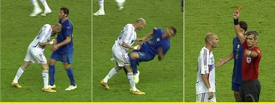
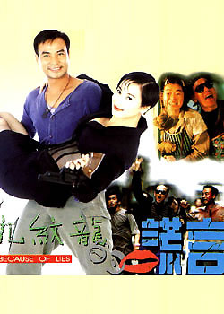
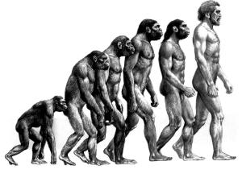

(2006-06-21 20:52:02)
教你炒股票5：市场无须分析，只要看和干！
【韶山映山红】原文配图是000633合金投资的月K线图。新浪博客自动更新为当下的新图，这里贴上当时的月Ｋ线图。】
【韶山映山红】缠师为什么要贴000633合金投资？缠师多次说过的唐家兄弟，唐万新，德隆系，三大战役：000338潍柴动力（湘火炬）、600737中粮屯河（新疆屯河）、000633合金投资。Ｋ线图上的跳水正是德隆系崩溃的场景。目前来看，缠师掺和了另外两只股票的游戏，对这一个却只字不提，只是在这里留下了痕迹。为什么？★可以做个专题，以后研究。】
【韶山映山红】桃花：
】
喜欢吹牛皮的，在市场里最常见，例如一种以分析市场、吹牛皮为生的职业，叫什么股评、专家的。此类人不过是市场上的寄生虫，【韶山映山红】寄生虫，不是赚市场的钱，而是另有所图，甚至各种坑蒙拐骗。它们不是市场的参与者，它们的存在，对市场没有任何益处，所以叫寄生虫。 除了这些寄生虫之外，我们普通人也一样的“喜欢吹牛皮”。进股市是为了挣钱来的，别的都无须多扯。】
真正的猎手只会观察、操作，用嘴是打不了豺狼的。【韶山映山红】操作的时候，各种因素对心理的影响是很大的，所以真正的猎手只会观察、操作，屏蔽不必要的干扰。也要学会闭上吹牛皮的嘴，避开作秀的心态。】
市场就是一个狩猎场，【韶山映山红】狩猎场里有各种各样形形色色的动物，我们是成为猎手，还是成为食物？】
首先你要成为一个好猎手，而一个猎手，首先要习惯于无言。【韶山映山红】从来就没有锣鼓喧天的伏击。】
如果真有什么真理，那真理也是无言的。可言说的，都不过是人类思想的分泌物，臭气熏天。【韶山映山红】如果真有什么真理，那也是对规律的描述，所以是“人类思想的分泌物”。】
真不可言说了，就无不可言，言而无言，是乃真言。【韶山映山红】对规律的描述，不是规律本身。孔夫子没有著书立说，阳明先生没有著书立说，禅也是“经书有字禅无字”的。菩提本无树,明镜亦非台,本来无一物,何处惹尘埃。从圣人语录到无字禅宗，大智慧都是不立文字的，所以“真理也是无言的”。包括在这里，我们努力去说清楚说明白的，终究只是粗浅的功夫。】
【韶山映山红】《庄子·列御寇》：“知道易，勿言难。知而不言，所以之天也；知而言之，所以之人也。”】
【韶山映山红】静姐05-01】
一个好的猎手，可以没有嘴巴，但一定会有一双不为外物所动的眼睛，在这眼睛下，一切如幻化般透明。【韶山映山红】要想只相信眼睛不相信脑筋，就要有有一个客观描述走势的系统。缠论就是这样的系统，就是“不为外物所动的眼睛”，在缠论这双眼睛下，“一切如幻化般透明”。】
要不被外物所动，则首先要不被自我所迷惑，其实无所谓外物、自我，都不过幻化空花，如此，方可从容其中。【韶山映山红】执迷于自我，也就得不到“不为外物所动的眼睛”。《坛经》云：“时有风吹幡动。一僧曰风动，一僧曰幡动。议论不已。惠能进曰：非风动，非幡动，仁者心动。”缠论学不好的很多都是“被自我所迷惑”啊。】
【韶山映山红】桃花：（不要主观臆断，相信你眼睛看到的当下走势，操作你看到的市场，不要操作你想象的市场)（孙子云：故善战者之胜也，无智名，无勇功，故其战胜不忒（差错）。不忒者，其所措必胜）】
【韶山映山红】静姐05-02】
猎手只关心猎物，猎物不是分析而得的。【韶山映山红】从来就没有什么应该怎么怎么样。走势都是市场选择的结果。分析只是反映市场行为的工具。】
猎物不是你所想到的，而是你看到的。【韶山映山红】尤其不能用先验的理论去吻合。】
相信你的眼睛，不要相信你的脑筋，更不要让你的脑筋动了你的眼睛。【韶山映山红】走势是客观的，分析是主观的，主观要反映客观，而不是反映“你的脑筋”。不是不要脑筋，是不要“你的”。】
【韶山映山红】学习缠论，放下过去固有的思维，更不要用过去的见识去修正缠论。现在的所谓缠徒，十有八九是修正主义，都是让自己的脑筋动了眼睛，所以才有千人千缠的奇葩现象。】
【韶山映山红】交易的本质是应对。见招拆招。所以，先要建立自己的交易系统。用你的系统去工作。】
被脑筋所动的眼睛充满了成见，而所有的成见都不过对应着把你引向那最终陷阱的诱饵。【韶山映山红】“被脑筋所动的眼睛充满了成见”，这些成见扭曲成怪异的缠论，让人跳不出原来的坑，所以缠论的学习者大多都是亏损的。一赚二平七亏的现象一模一样的在缠论世界重现，成为一种自同构。】
猎手并不畏惧陷阱，猎手只是看着猎物不断地、以不同方式却共同结果地掉入各类陷阱，这里无所谓分析，只是看和干！【韶山映山红】猎手“无所谓分析，只是看和干！”成为猎手之前，还是需要先把功夫练到家。很多学缠之人总喜欢把“只是看和干！”挂在嘴边，好像这样就遵循了缠师的教诲，其实只不过是为了自己不愿意用功找的借口而已。如果不经过深入学习就能够“只是看和干！”那缠师用两年多的时间写博客是为了啥？】
【韶山映山红】静姐05-03】
猎手的好坏不是基于其能说出多少道道来，而是其置于其地的直觉。【韶山映山红】经过大量的学习，我们“能说出多少道道来”了，这时候还远远不能成为好的猎手，还需要大量的练习，直到形成“置于其地的直觉”，也就是盘感。】
【韶山映山红】静姐05-04】
好的猎手不看而看，心物相通，如果不明白这一点，最简单就是把你一个人扔到深山里，只要你能活着出来，就大概能知道一点了。【韶山映山红】形成“置于其地的直觉”，就可以“不看而看，心物相通，”。】
【韶山映山红】桃花：（在市场里时刻保持警觉，本金安全永远是第一位的）】
【韶山映山红】静姐05-05】
如果觉得这有点残忍，那就到市场中来，这里有无数的虎豹豺狼，用你的眼睛去看，用你的心去感受，【韶山映山红】缠师问答：“首先不要受消息、情绪等等的影响，这样你的眼睛才看得清楚，然后你的心才会敏感，慢慢对市场就有了一种灵感，市场仿佛就是你的身体一样，他有什么风吹草动、头疼脑热的，你马上就有感应，这样才有点样子，但这是要慢慢来的，先把一些基础的东西变成自己的一种本能反应，例如建立符合自己的有效的操作程序等等，这是初学者最基本的东西。”】
而不是用你的耳朵去听流言蜚语，用你的脑筋去抽筋！ 【韶山映山红】不是没脑子，是不要“用你的脑筋去抽筋！”不是没耳朵，是不要“听流言蜚语”。练习形成直觉的方法就是“用你的眼睛去看，用你的心去感受”。】
【韶山映山红】桃花：（真实走势才是唯一正确可信赖的， 强调当下重要性。相信你的眼睛）。
【韶山映山红】静姐05-06】
（待续）
【韶山映山红】南无月光如来注：
1、电视上、网上的那些股评家有些可能是猎手，有些可能连猎手也算不上，更别说是好猎手了。因为真正的猎手赚钱都来不及，还有精力去动嘴吧。所以还是自已学好技术，有了真本事，别人再如何忽悠也不会掉进陷阱了。
2、有了技术，只需要根据自己“看”到的技术要点去“干”，而不必用脑筋去想，该股会如何如何。这就是缠师在本章中的所说的要义。
3、教授技术的股票培训学校、培训班之类，与股评是不同的，因为对于新手来说，毕竟要有一个学习的地方，但教授学生必然要花费人家的劳动。缠师的技术教学，虽然不收费，一是人家是股市超猎手，二是他这样的教学，毕竟不是面授，而且多半没有图，大家学起来是很费力的。
http://blog.sina.com.cn/s/blog_60c36c130100hyh1.html 】
[匿名]开心
不用脑？不太明白。那观盘的经验都可有可无了，那直觉凭什么出来？
2006-6-21 22:43
[匿名] 罗锅
越来越玄乎
2006-6-22 00:17
[匿名]寒江宴雪
蛮中肯。
发个牢骚：缠同学每回挂出的都是那种斩到脚板了的K图，而且还是月K，让人看了触目惊心。不够喜庆。
2006-6-22 08:48
得了，这招你自己算是懂了，只是运用灵活问题了。
可是，你在这里说这武林绝学，似乎没有人能接受啊。
你说只要看和干！可是我们大家在这里即干不了，也看不到。只是在听说。。。那听说有用吗？呵呵。
2006-6-22 19:42
说得是很在理,但有道理不等于就好用.怎赚钱呢?
股评并非全没作用,主要股民缺乏自我的学习,一切盲从.
就如听你的话,就死心塌地的买N中工,输了,你就成了失败的股评了.
关键在股民,股评在于自己的职业道德.
2006-7-2 19:27
[匿名]你的样子
那个幼儿园跑到我前面一大截了，太快了就没什么收获了啊
“相信你的眼睛，不要相信你的脑筋，更不要让你的脑筋动了你的眼睛。”
今年在钢材现货上吃了这个亏。再看到这一段，有点郁闷。之前也看了，咋就没转过来习惯呢？看来观察自己的习惯，也很重要啊。不要在糊里糊涂中死去。
2007-2-4 14:20
[匿名]墩子
相信你的眼睛，不要相信你的脑筋，更不要让你的脑筋动了你的眼睛。
上了 流言蜚语好多次当了!
姐姐每一篇都指中要害
2007-2-27 15:59
[匿名] 墩子
现在突然觉得 发明一种方法 让失去光明的人 也能在股市上生存 该多好呀!
至少, 能让这些人过上比较好的生活
2007-3-28 19:42
[匿名]见习者
买点买,卖点卖,不断练习,训练成条件反射?
2007-5-12 22:20
[匿名] 恒河7250
重点记忆：
市场无须分析，只要看和干~~~~
相信你的眼睛，不要相信你的脑筋，更不要让脑筋动了你的眼睛。
好的猎手不看而看，心物相通。
呵呵，我曾经一直为自己的分析能力欣慰不已，并自诩为技术派，可以看出庄家是如何画图骗线，可以分析出庄家的操作手法和思路。现在看来，的确是舍本逐末了。。。
从今开始，扔掉脑袋，只要看，只要干~~~~~
2007-6-1 08:27
直觉，禅姐你所说的那样的直觉可是比较难掌握。
相信你的眼睛，不要相信你的脑筋，更不要让脑筋动了你的眼睛。
不过有句话说的好自己亲眼看到的才是最正确的，不过好像动脑经分析并不是什么错误啊，这里有点不明白。
前面有说过不要让自己的喜好害死自己，我想这两章应该相通的吧，自己的喜好也是通过大脑反应的，这是大多数人的正常反应，虽然有些迷糊，但是我想我还是会在以后理性的多用眼睛的。^_^
2007-6-3 16:35
[匿名] 你的样子
那个幼儿园跑到我前面一大截了，太快了就没什么收获了啊
“相信你的眼睛，不要相信你的脑筋，更不要让你的脑筋动了你的眼睛。”
今年在钢材现货上吃了这个亏。再看到这一段，有点郁闷。之前也看了，咋就没转过来习惯呢？看来观察自己的习惯，也很重要啊。不要在糊里糊涂中死去。
2007-2-4 14:20
[匿名] 黑龙
一赚,二平,七赔钱!
只有少数人会成为最后的 赢家!
只有少数人能掌握股市里的真理!
2007-8-12 19:34
在不经过刻苦学习养成直觉前，只傻看能看出什么道道来，好好学习，多看图，多动脑子分析才是途径。被脑筋所动的眼睛充满了成见，那是说听流言蜚语后，乱猜，YY的晃动脑子，不是说不用思考，第一课就说了，这市场就是明白人挣糊涂人的钱，天下哪里有不动脑子的明白人。
2007-9-5 13:49
[匿名]扫帖
多练多看.
可能高手的最高境界是直觉吧.
2007-9-21 22:18
[匿名]飞猪
相信你的眼睛，不要相信你的脑筋，更不要让你的脑筋动了你的眼睛。
====深有体会!我常常被脑筋欺骗眼睛
2008-2-23 17:03
这一课当头棒喝，脑袋真的不抽筋了。
2008-3-2 10:09
[匿名] 鸡蛋里挑骨头 2008-03-24 21:29:55
你的标号体系,你的数十万言的教材,不是分析是什么啊.你的展望,不是分析是什么啊.
看市场就是分析市场,你还别不承认.
干市场就是抽市场的血,这一点被你说对了.
所以市场既需要看,也需要干.
==========
这位真是糊涂虫啊
课文里写得很清楚了：
真不可言说了，就无不可言，言而无言，是乃真言。
2008-4-21 02:31
言而无言，乃是真言！人总是从别人那里学习东西，然后吸收，变为自己的东西，当你积累一定的知识，你会产生自己的思想，而所有你听到的、看到的，无疑例外都是别人的东西，如果你此生都在为此忙碌，你终究不过是活在别人所给你的思考方式，但真正的思想是因你而产生的，其他人不可言传，就像博主所言：言而无言，是乃真言！
2008-8-3 16:04
缠师的话是基于她所在的高度说的,
大部分人看表面,根本听不懂,甚至认为是错误的
我理解,缠师讲的眼睛看到的是实质
而耳听到的是忽悠,脑子想的是YY
当然就是不要分析,只要看和干了!
2008-10-18 09:18
[匿名] 观心护念
相信你的眼睛，不要相信你的脑筋，更不要让你的脑筋动了你的眼睛。
把炒股者比喻成猎手，而不是读书人。 是一个打鱼人，而不是一个看报人。是一个在等待顾客的商家，而不是一个表演自己的人。
2008-11-16 18:21
[匿名] 新浪网友
把炒股者比喻成猎手，而不是读书人。 是一个打鱼人，而不是一个看报人。是一个在等待顾客的商家，而不是一个表演自己的人。
观心护念的评价我认为还是比较中恳的，只不过把炒股者比喻成猎手，这只是第一步，大部分时间把自己比喻成猎物，我们不是打鱼人，而是被打的鱼，就可以了。
相信你的眼睛，不要相信你的脑筋，更不要让你的脑筋动了你的眼睛。试想一下，这样简单而又深刻的问题，将我们自己放到深山里去打猎你是去看猎物呢，还是去想猎物呢。虎豹豺狼害怕乎，这个时候需要想一想。
2008-11-21 09:04
[匿名] 阿呆
学习，，预测系统就是舍本逐末，猎人只关心操作系统如何被当下着
2009-3-3 21:59
[匿名] 山里人
只要进入市场我们就是其他猎手盯着的猎物。那些豺狼虎豹在盯着我们呢。生存是第一位的。
2009-3-27 09:57
这一课，好多人没有看懂。举一个简单的例子，就好像学英文，这个，都知道吧。学习英文，从初中，到高中，到大学，基本上是一个哑巴英文，这是以前的做法。但，有一种做法，就是练习口语，就是封闭训练，不让说中文，那么，半个月，一个月出来之后，对英文的感觉就是不一样了。这个，是好多人没有的。缠师所说的感觉，是基于缠师的高度。我看缠师的缠论，07年六七月份，只能识字不能断文，看不懂。现在，尤其是经过一而再、再而三之后，对缠师的缠论，算是可以看懂了。看懂了，干；在干的时候，感觉！
2009-4-9 16:42
猎手只关心猎物，猎物不是分析而得的。猎物不是你所想到的，而是你看到的。相信你的眼睛，不要相信你的脑筋，更不要让你的脑筋动了你的眼睛。被脑筋所动的眼睛充满了成见，而所有的成见都不过对应着把你引向那最终陷阱的诱饵。猎手并不畏惧陷阱，猎手只是看着猎物不断地、以不同方式却共同结果地掉入各类陷阱，这里无所谓分析，只是看和干！
----缠中说禅
【悟禅】今天在看大师的理论的同时仔细的翻阅了各位师兄师妹们的留言，发现很多人的理解有误，这也就更坚定了我替大师做点事情的决心，也有可能有的理解透了解释的并不是很清楚，我力求解释的清楚一点，如果解释的不明白的，大家可以提问。
禅师说的“相信你的眼睛，不要相信你的脑筋，更不要让你的脑筋动了你的眼睛。”不是说不用动脑筋了，而是象狩猎一样，你不能头天想好了，我明天要去打一只野猪回来，第二天装好弹药，到森林里埋伏好了，这时猎物出现了，是一只鹿，你打不打？是一只兔子，你打不打？你可以说，我不打，我就打野猪，好，如果一天你都见不到野猪呢？你可以说我忍着，那你的妻儿老小怎么办？
脑筋肯定是要用的，但要用在地方，要用在制定标准，这个标准，在打猎上是射击范围，在做投资上就是买入时机，要按禅师说的标准去看，只有看到可以做的才可以做
2009-6-17 18:20
[匿名] 新浪网友
禅师是真精彩！好好学习一下，放下自己的骄傲成见吧！最后一段话的意思是脑筋里面充满的是妄想，有的是期望和恐惧，用这来指导眼睛，就是成见，谬见。看到什么不要带个人的感情色彩，再加上制定的规则，只能这样操作。每篇写股票的都是禅师的毕生心血。赞叹，感激！为您祈福！
2009-7-6 12:10
[匿名] 新浪网友
此为剑气篇，不经刻苦磨练，思索，实践，万难达到
2009-11-10 17:49
这大概就是炒股的最高境界了。心中无股，眼中只有当下的走势，眼看手到，达到一种与当下走势的心灵共振。谁见过一个优秀的猎人面对猎物时，还会去分析它是公的还是母的、几岁口了、吃饱没吃饱。这和庖丁目无全牛其实是一样的道理。无它，唯手熟耳！
2010-12-25 20:52
目前理解，就是这股市之中，细细观察，看合力向哪去，顺势而为。不要把自己的心思，强加给目光，让那些远离真相的，一厢情愿的想法，走开。还自己一个明亮的双眸，培养猎人一样的警觉，并坚定执行。当然，这路还长，但是已然把方向刻在心上。
2011-1-9 10:14
猎物不是分析出来的，不是想到的，而是看到的！
深刻啊！最近本来想对年后行情的领涨板块进行分析，和一学长讨论，她的一句话对我醍醐灌顶：哪个领涨，我就去那个二买差价一番，猜他做什么。
我恍然大悟，市场根本无须分析，更直接点叫猜想，看和干才是重点！
2011-1-23 04:17
用户0
每个人看到的东西都是不一样的，孔子和孟子看的的东西也是不一样的，所以一个人平和一点一个人偏激一点，都算圣人门中人。缠师的观点我赞同，但是和他性格不一样。学习中，争取早日达到心如明镜的效果。
2011-11-20 20:41
看，干。难么？真的成为生理上的反应的时候就不难了。生活中有很多你一看就干、一干就知道如何控制的事情。
2012-5-10 12:17
看到文章所言道理，懂了。其实，真懂吗？每次在操作的时候又被自己所迷惑，其实没有懂！
2012-6-5 09:40
不要让外物，更不要让你的脑筋影响你的眼睛，虽然现在达不到，但这意识还是要有的，就像资金的管理，虽然现在还不需要，但这意识必须要有！
2012-7-4 09:21
禅师所讲的意思是，在市场中，所有的当下走势是实实在在的存在的，是通过眼睛一目了然的，后面的走势不要通过大脑去幻想的
2012-7-5 14:05
短小精悍，一针见血。被脑筋动过的眼睛所看到缠论，只有成见，没有灼见。
前两课，缠师扒下了市场所制造的“喜好”和所倡导的“理性”的内裤；在这一课，则扒下了操盘者的内裤：被外物所动、被自我迷惑。明确指出，一个真正的操盘者，只会看和干。只要也只有看（观察走势）和干，才能克服操盘时的贪嗔痴疑慢。进而要求操盘者把看和干训练成直觉。
想到这，我真是无地自容，分明就是在讲我呀。此中有真意，欲辨已忘言。
感恩缠师。
2012-9-12 00:11
观察自己的习惯，也很重要啊。不要在糊里糊涂中死去。
2012-9-27 16:20
机械化程序操作不需要动脑分析，关键是当下看到什么，就严格地执行相应的程序操作。因为你脑子里想到的应对方法往往是错的。比如在你的操作级别上，出现背驰或盘整背驰就一定要操作。否则一定是错误的。
2013-9-15 19:21
用户0
缠主的意思很明白，就是要认识股票，把股票当猎物去认识。见到一只股票你要知道这个是兔子、鸭子、野猪还是狼？当下他在干什么？你要如何捕获他。如果你不认识，你当然无法收获。
2013-10-15 17:13
这一课看了好多遍，好几年了，今天终于初步明白了，市场无须分析，只需看和干。一切都明摆在盘面上，化为K线，要想个什么呀。
首先不为自己所迷惑，这句就更经典了。
一直看好券商，2月9日把这种弱启动非要认为是28转换成功，放着创业板的好买点不参与，可不就是被自己迷惑了。
缠师太牛太牛了，每一课都要好久才能领会一点。
想您啦，来汇报，
2015-2-21 16:42
缠师说要有一双不为外物所动的眼睛，缠师博客里很多文章就是剥开表面，让我们看到本质，就是好有一双眼睛去观察。然后才是不被自己的贪疑痴嗔慢所影响，去操作。最后，靠自己的勤奋，秉性，智慧，养成直觉，看走势如同掌纹一样清晰。所以你有一双不为外物所影响的眼睛了吗？
缠师博客的文章是值得反复读的啊
2015-3-2 17:29
【网文】与智慧大师相遇，大师们如是说，激活你沉睡的智慧。
《神奇圣人王阳明》
雾满拦江
与智慧大师相遇
现在我们的问题是：孔子、孟子也好，苏格拉底、柏拉图也罢，还有这王阳明，他们都认为，存在着一个东西你还没有看到，而且这个东西对我们来说相当重要，那么这究竟是什么怪东西呢？
最早描述这个东西的，是老子李耳，他在《道德经》中说，这个东西啊，这个东西，那可是孩子没娘，说来话长啊：
有物混成，（有个浑然一体的东西，）
先天地生。（它先于天地而生。）
寂兮寥兮！（无声啊，又无形！）
独立不改，（它永远不依靠外在力量，）
周行而不殆，（不停地循环运行。）
可以为天地母。（它可以算做天下万物的根本。）
吾不知其名，（我不知道它的名字，）
强字之曰道，（把它叫做道）
强为之名曰大。（勉强再给它起个名叫做大。）
大曰逝，（大成为逝去，）
逝曰远，（逝去成为辽远，）
远曰反。（辽远又返转还原。）
故道大，（所以说道大，）
天大，（天大，）
地大，（地大，）
人亦大。（人也大。）
域中有四大，（宇宙间有四大，）
而人居其一焉。（而人居其一。）
人法地，（人以地为法则，）
地法天，（地以天为法则，）
天法道。（天以道为法则。）
把老子说的这个没头没尾、没头没脑的怪东西，与柏拉图的洞穴理论对照一下，我们的心里就会“咯噔”一声：哇，走出洞穴的柏拉图，所看到的正是这个，他看到了，许多人都看到了，可是谁也无法说清楚。
他们不是智者吗？怎么智者还说不清楚？
事实上，不是他们说不清楚，而是我们听不明白。你无法对一个盲者，描述各种颜色的区别。因为对于盲者来说，世界上压根儿就不存在颜色。你也无法对一个聋者，描述各种音律音韵的区别，因为对于聋者来说，音律与音韵同样也是不存在的。
即便是从现代科学的角度，我们也知道人类的认知存在着局限性。我们双目所见，只是光谱上极窄的范围。我们的耳朵，既听不到超声波，也听不到次声波，既然你无法对天生的盲者描述颜色，也无法对天生的聋者描述声音，这就决定了离开了洞穴的幸运儿，他已经无法再与我们进行沟通。因为我们人类所创造的语言体系，正如盲者的视觉，正如聋者的听觉，无法对感知不到的东西进行理性描述。
而王阳明，他上天入地，编神仙瞎话娶一堆老婆，被刑杖打屁股和食人族同居，目的只是离开人类感官认知的洞穴，一睹那先天造化的神奇真界。
他终于走出了洞穴，也终于在智慧的极点，与孔子、孟子、老子、苏格拉底及柏拉图等所有的智慧大师相遇。
一个在思想领域实现突破，一窥终极智慧的人，犹如一个爬到桅杆高处的人，他并不需要大喊他在高处，所有人都知道他在高处。悟道者不需要说道，人人都知道他在智慧上已经到达了自己无法比拟的境界，所以悟道者是从终极智慧的角度来看待事物问题，他说的话，我们都能够听懂，就如同我们能够看懂棋局上谁输谁赢一样。但是，你知道谁赢了，但你无法重复他的棋路，一句话，在你没有到达智慧彼岸之前，你对于智慧的理解，始终是停留于盲者对于颜色的理解、聋者对于韵律的理解的状态。
大师们如是说
最后一个问题，终极智慧与仁、与义、与道德、与美德、与慈悲、与善良、与良知之间，是什么关系呢？
实际上，终极智慧与仁、与义、与道德、与美德、与慈悲、与善良、与良知之间，没有半点儿关系。
没关系？如果说这两者之间，真的没半点儿关系的话，这岂不是说，古往今来的贤圣智者，都是在胡说八道，忽悠我们吗？
古往今来的圣贤智者，并没有忽悠我们。他们都已经晋阶到智慧大师了，还忽悠我们干什么？闲极无聊吗？
先贤圣者并没有忽悠我们，而他们的思想理论体系，又与终极智慧之间没有半点儿关系，此话究竟何解？
这件事解释起来，那就有意思了。要知道，现代科学思想体系，虽然繁复庞杂，但却有一个条理清晰的纲目，这个纲目，简单地表述如下：
首先，现代科学知识体系，可以简单分为两个类别：工具类学科与知识类学科。所谓工具类学科，就是我们借以认知这个世界、建立规范的知识体系的基本工具。这门学科一共有三种：哲学、数学与形式逻辑。除此三者之外，余者均是知识类学科，是以哲学、数学及形式逻辑为工具建立起来的。衡量一门学科是否科学、是否有价值的标准，就是看这门学科是否应用到了哲学、数学并形式逻辑这三门工具学科。如果有谁闭门造车，自行创造出一门特殊国情的怪异学科，却没有应用到这三门工具学科，那么你肯定遇到骗子了。
简单说来，就一句话：所谓的科学思想与知识体系，均是由哲学、数学与形式逻辑构建起来的，是我们对人类社会与自然宇宙的认知标准。
也就是说，如果我们给现行科学知识体系做一个分类的话，这个分法是这样的：雄踞于所有知识体系之上的，是哲学、数学并形式逻辑。而其他学科，都是低于这三者的，你不掌握这三门工具学科，就无法自如地创建科学思想与知识体系。而就算是你掌握了科学思想与相关的知识体系，却未必能够掌握居于高端的工具学科体系。
而我们所提到的终极智慧，提到的这个世界的本原与真相，却比我们的工具学科更为高端，是我们的认知工具所无法触及的。
哲学、数学与形式逻辑，这对于许多人来说，就已经够生涩的了。但在终极智慧面前，这三门工具学科，却表现得不够给力。
如果一定要打个比方的话，那么，正如盲者是通过触觉来感知外部世界，他对于这个世界的所有感知，都是建立在触觉的基础之上。而触觉是无法描述色彩的。同样的，哲学、数学与形式逻辑，也正如无法描述色彩的触觉，无法用来表述终极智慧，无法用来描述世界的真相。
提及终极智慧，禅者说：说出一个字，你就失去了它。
正如盲者不具有认知色彩的工具，正如聋者不具有认知音律的工具，我们同样也不具有认知终极智慧与思想的工具。没有描述终极智慧的工具，所以悟得终极智慧的先贤圣者，也就无法对我们详细描述。
他们最多只能是，告诉我们如何去寻找终极智慧。
尽管终极智慧与仁、与义、与道德、与美德、与慈悲、与善良、与良知之间，没有半点儿关系，但如果，你具有仁心，具备义念，具慈悲之情，追求美德，追求善良，苦求于自己的良知，那么，你就会对这个世界的认知角度，从外部转向自我的内心审视。而诚如王阳明所言：吾性自足……既然吾性自足，那就尽量减少与别人的摩擦，不可求之于别人，而人反求之于己。
反之，如果你不仁不义不慈悲，不善良也对美德不感兴趣，更有可能泯灭自己的良知，这时候的你，就会将关注点放在别人身上，而这种关注，必然会让你远离智慧与思想。
所以大师们如是说。
激活你沉睡的智慧
如果你想掌握最高超的棋艺，必然要拜名家为师。可如果名家告诉你说，只要你善良、可爱、乖巧，那么你的棋艺就会嗖嗖嗖见风就长，成为天底下所向无敌的棋艺大师，你是不是认为这个建议，有点儿扯淡？
如果你想掌握最精妙的烹饪的技巧，你肯定会去找名厨学艺。可是这位名厨却对你说：你不用切菜，不用掂勺，也不用研究古往今来的菜谱，只要你扶老携幼、与人为善，你炒出来的菜就会成为天下第一美味，你会不会将这位所谓的名厨，按在地下暴扁一顿？
学棋也好，掌勺也罢，都只是用来打一个比方，旨在说明我们寻求终极真理的途径。而举这两个例子，则是为了说明一件事，良知或美德，与智慧之间并不存在着正常的逻辑关系。孔子、孟子、老子、苏格拉底、柏拉图乃至王阳明，却不约而同地表述出同样的观点，这就带给我们深深的疑惑。
陆九渊这样为我们解惑：宇宙就是吾心，吾心就是宇宙。
王阳明则这样告诉我们：你性自足啊。
但真正解释清楚的，却是柏拉图。他说：终极的智慧啊，实际上并不在外部世界，不是能够让人告诉你的，这东西原本就在你的脑子里，却处于休眠状态之中。只有善良的品性，才是照亮你沉睡智慧的一线烛火。
天！原来是这样！
原来那所谓的道，并不在深山大泽，不在书本中，而是早已存在于我们的脑子里。自打我们生下来时，这个莫名其妙的道，就已经构成了我们大脑的一个组成部分。只不过，我们的大脑犹如一片浩瀚的原始森林，道的壮丽宫殿隐匿于森林的深处，而我们只在思维森林的边缘徘徊，所能够看到的，只有美丽的异性、精美的食物再加上形形色色的炫耀欲望。
没人能够替代我们思考，所以也就不会有人能够进入我们的脑海思维，引领着我们步入黑暗的蛮荒地带。只有我们自己的愿望和决心，才能够让我们踏入这片神秘的世界。经历过不计其数的迷失，遭遇到重重叠叠的艰难险阻，所有人终将在自己的思维森林中迷失，而王守仁，他是在长达二十年的迷路之中，突然发现了被重重绿荫遮掩的，那道之圣宫的所在。
你原本就是一位棋艺大师，原本就练就了高超的烹饪手艺，奈何因为生活意外，脑壳上遭受到了一下重记，“砰”的一声，你就什么也记不得了。这时候再让你弈棋，你已经不认得棋子；这时候再让你炒菜，你已经无法区分咸盐和味精，不知道如何才能够炒出一盘可口的菜了。
这时候的你，最应该做的就是重返自己的故地，寻找那些往昔生活的零星片断，去找你曾经爱的人，去找那些曾经爱过你的人，让人与人彼此之间的爱，唤醒你大脑中失落的记忆。
但如果你发脾气，耍性格，执意不肯回到爱你的人当中，却固执地认为：既然满大街都是美女，那就应该及时行乐，操起棍子趁哪个美女不注意，照她脑壳“砰”的一下，将她打昏，然后赶紧拖到没人的地方去……这么一个搞法，就是最典型的及时行乐，就是自我的迷失，从此你会迷陷于人与人的相互争斗之中，再也无法重返往昔的梦境，也就再也找不回过去的你自己，再也无法恢复你的绝高棋艺和出神入化的烹饪技能。
终极的智慧不在远处，就在我们的脑际，就在我们思维的最深处。但如果你为物欲所迷，终其一生只在自己的思维边缘打转，这就等于放弃了对自己思维的探究，也就永远无法抵达智慧的驻地。
你本是一台设计精良的超级计算机，驱动系统上业已安装了功能最为强大的智慧软件。但令人沮丧的是，你这台超级计算机每天打开运行的，只有几个最低级的欲望软件，女人、美食、金钱……为追逐这些本能的东西，你每天要花费好大的力气。但如果你一旦找到系统中的智慧软件，激活并让它运行起来，那么你这台计算机，就立即成为计算机中的战斗机，表现出超强的智慧功能。
找到安装在你大脑中的智慧软件，激活它吧。
(2006-06-22 15:13:31)
七言古诗一首：人生是梦梦何如
人生是梦梦何如
雁落秋山月落湖
半辈常怀千岁怨
一生永处两分途
谁寻生又谁寻死
谁作主来谁作奴
谁到无门无走处
无门早入死人窟
谁为迷又谁为醒
谁是净来谁是污
谁有无得无证物
无得已使大树枯
死人窟里嚼大树
庄子梦中惹蝶哭
哭碎山秋湖下月
雁惊回望到天竺
[匿名] 开心
嘻嘻，你也有软弱的时候…
2006-6-22 16:15
[匿名] 寒江宴雪
不会吧？今天大盘还没走崩呀？
还是当散户好，整天心里只盼着：“要是能解套就好了！”——哪有心思去想什么人生之类的。
2006-6-22 16:29
[匿名] 白丁
就差一步，可是这步到底要走多久呢？
这样说法，似乎又把路放入了时间里。
门在哪里？这样说又把门放入空间里。
也许，也许要经历这样那样的才是那门和路吧。
2006-6-22 18:44
[匿名] 白丁
数女，你太聪慧了，聪慧得与白丁无异。
数女，你走得很远了，走到了死亡边缘，只是死神不愿收留你，因为他实在不知道要把你这种怨气放在哪层地狱。
数女，你走得很远了，走到了天堂门口，只是佛祖不愿收留你，因为他实在不知道要把你这种恨气放在哪重天堂。
所以，你还是乖乖留在人间吧，做个孤独的凡人，因为没有人可以理解你。你的朋友，你的亲人，在你身边将形同虚设。
你做不成自己和别人的主人，也做不成自己和别人的奴隶。这就是你的坟墓，这就是你的眼泪，这就是你的死亡。
庄子是梦幻，天竺是虚无。无情的心灵，上下都不是。
2006-6-22 19:14
[匿名] 公子白
好诗，就是有点油
2006-6-22 19:50
咱也油一首~
未世凡夫夫何如
胸怀万古掌千秋
眦目亦可裂地维
漫声片语乱九霄
不做圣人不为师
不做英雄不求名
不做佛陀灭如来
如来早随灭法消
不做善人不修福
不做志士不牺牲
不做皇帝寻风流
风流才是真如来
不依净土本狂妄
肥肠大肚戏观音
万古千秋一刹爽
凡夫得意在今朝
2006-6-23 09:16
[匿名] 风流禅
众生的思维，要么是佛道等宗教及其学术的奴，要么是任唯物宰杀的猪。
远离这两样东西，我们就是自己的神！
我们不需要门，我们的生命就是那门，我们的世界就是那门。
我们不需要物证，我们就是物证，我们就是真实。
污也是我们，净也是我们。生也是我们，死也是我们。
我们是起始者，也是终结者！
我们的身是真实的，我们的影也是真实的。
物质是真实的，意识也是真实的。。。。。。我们绝对有道理和资格叛逆一切！因为我们是人，这是真理！
可是，高敏锐的人群，你们感觉到那佛道，那宗教的力量，它们魔力般的流通于我们的灵魂和血液里。
可是，我要告诉你们，那也是我们！连同它们都是我们！我们可以冲破时空，冲破物质与灵魂的障碍！那些佛道宗教之学，小术！
不要说妄一词，因为那妄和谦卑都是真实的我们！
如来说万物在我掌心，我们骄傲的说：连那如来都在我们掌心！
智慧、信心、决心、智力、物力、神力、我们都原本拥有！
----无情者，一潭死水，孤寂，无繁花。
2006-6-23 09:20
后面的注解，解对楼主的图片。
2006-6-23 09:31
[匿名] 白丁
距离
什么是距离，心是距离。
所以那音乐代表距离，那喜好代表距离，那文字代表距离，那思想代表距离，那情感代表距离，那生活代表距离，那思维代表距离，那艺术代表距离，那智慧是距离，那生死是距离。。。。。。
所以，所以你找到和你距离相近的人了吗？世间一切痛苦、迷茫不过就是距离。距离，凝缩人生一切真理和规则。
缩短那距离，用脑也要用心。心脑原本合一，智慧和能力才无穷又无尽！
2006-6-23 11:32
俺来解释下这首诗——
人生是场梦,梦又是什么?
这秋夜,一只大雁落在萧萧的山上,月亮倒映在净净的湖水中,这景致让她沉醉于甜美的梦香.
半辈子时常郁郁于这千年的惆怅,
一生中总处在半梦半醒的分途,
在梦中,谁寻生又谁寻死,
在梦中,谁作主来谁作奴,
在梦中,谁到了"梦醒"的关口,无路可走?
难道那"梦醒"只有在那地狱里去找寻.
在梦中,谁为迷又谁为醒,
在梦中,谁是净来谁是污,
在梦中,谁晓得解梦的方法,却无人想信.
难道解梦会使得这个世界的大树干枯?(大树枯:不解????)
在地狱里我恨恨的咀嚼那无味的枯枝树干.
忆想起曾经弄哭过那庄子梦中的蝴蝶.
那哭声,哭碎了山,哭碎了秋天,哭碎了湖中的月亮.
惊醒了的大雁幕然回望,仿佛看见了那西方的天竺.
2006-6-23 17:59
数女写得好棒啊!!
我来支持支持...
2006-6-24 13:44
谢谢
2006-6-25 14:51
[匿名] 想望江湖
人同春逝老,
水付月明寒.
2007-6-9 13:33
一生永处两分途
2008-4-21 02:34
月半月满无定势,天晴天阴岂奈何?
云中望月半朦胧,树影婆娑独自怜.
2008-8-28 14:53
旧诗了，前面贴出过！为啥今天贴旧诗呢？
2009-4-6 09:35
缠师真的是孤独的吗？不知道，反正我此时感觉很孤独，心有种被掏空的感觉，抓不住任何事情
但缠师也许不会有这种感觉，缠师内心是充实的，只是也许身边能理解缠师的人很少。就像天道里面说的，英雄总是孤寂的！
缠师，你是否能看到？
看到我们，起码是我，内心对你的了解！
这就是你的个人魅力，虽不认识，但却让人一直想去品
2010-5-31 20:22
这首太经典了，经典到有天在外面无所事事时脱口就背出来了。禅师害人。
2010-6-7 18:21
早上5点女儿肚子疼，给她灌了个暖水袋哄睡了。为了让她睡个好觉，没去上班在家陪她。
9点半她醒来时，看到身边的我，笑着说：“爸爸，我做了个很好玩的梦，梦见我是喜羊羊，我们几个去灰太狼家。。。。。。。”
看着女儿天真无邪的脸，听着她的故事，不禁感到，有梦真好。
跟着恩师学习，我也有了梦想。希望不久的将来，这梦能照进现实。
2013-6-9 10:46
步韵缠中说禅《人生是梦梦何如》，解其玄机。
人生是梦梦何如？
雁在平沙月在湖。
渔父歌罢鼓枻去，
屈子举身赴穷途。
无生何寻生与死，
意描心画自主奴。
无门无走何太痴？
醒为迷又迷为醒，
污是净来净更污。
无得无证堕顽空，
顽空岂空根早枯。
无源之水无根木，
雁惊回望到天竺。
哭碎平沙湖中月，
2014-3-21 20:35
该诗作是缠子的一首最简单，也最深刻的诗作，诠释了禅的如来真实意，不二法门。诗中即问即答，问即是答，答即是问，问答不二。各位且参。
2014-3-21 20:39
A股爱你的钱，而不是你的人。它很在乎你，却并不爱你。也就是说，A股从心里是把股市和股民分开的，股市固然很重要，股民只是被需要。所以，在A股你也要学会把爱恨和钱财分开。两者绑在一起，就注定是杀手的靶子，无处可逃。投入钱只能是因为交易系统发出信号，与爱无关。操盘谨记，动什么都别动感情。
2018-9-25 19:05
(2006-06-23 16:09:29)
那一射的风情
风情，并不一定很女人，男人也可以很风情。在这特殊的月份、特殊的场合，男人的风情总和某一射相关。即使又胖又丑，能射的男人总是很风情。在这样一个个躁热的夜晚，在那一群群躁动的男人凌乱的腿脚间，一道道清凉的弧线，美丽了所有的星空，那一射的风情！
战争，男人间的战争，男人间荷尔蒙的战争，竟然也可以如此美丽，竟然可以同时点燃同一星空下不同角落的荷尔蒙；甚至还可以在这男人ED化的年代，让一个又胖又丑、早已ED的90多公斤男人突然重又ET。没有硝烟的战场，美丽着清凉的弧线。男人，也只有在如此一射中才能被风情！
并不是每一种的风情，都可以将这星空下不同角落的荷尔蒙同时点燃；并不是每一种荷尔蒙的点燃，都可以让ED重又ET。这一夜，如那一射般使得肥胖成为强壮，使得X罗、XX罗们继续X、XX，使得乌鸦嘴的非乌鸦脚也不曾攀上的高度不再高度，一切都在那一射中风情了。
坚韧、顽强，这些不解风情的品质，从来和天才无关。天才，从来都是臃懒的。老罗、胖马、加扎、肥罗，肥胖的男人竟然成为这男人战争中最遥不可及的风情，让那些瘦身的贝壳族们永远被壳。既然连武则天大姐的男人们都以胖为美，就不再需要无聊地解释“这不是胖，是壮”了！
但星空下仍将划过那一道道清凉的弧线，白花花地，带着神秘的腥味，去划破那一个个被网的门。那一射的风情，依然在这个躁热的季节点燃着每一夜的星空。只有脑子进水了，才去讨论肥胖和ED的关系。当那弧线白花花地划过，任何的探讨都是不解风情的。
孤心苦旅
"但星空下仍将划过那一道道清凉的弧线，白花花地，带着神秘的腥味......"
暧昧庸俗的风格不可能赢得围观者的尊重.
你可能说:本悍妇从来就没在乎过.你再清高,未免你的博客只是写给自己看的?抑或纯粹为了炫耀?
不能赢得他人的尊重,真正可悲!
2006-6-25 06:38
没有幽默感，也就无趣了。
2006-6-25 14:53
(2006-06-24 11:44:05)
毛泽东时代，要为中国教育的大倒退负责！
从来就反感五四后的所谓科学、民主、白话文等西化教育，但即使是矮子里挑高的，从教育角度看，毛泽东时代，构成了上个世纪中国教育的大倒退！这，必须正视。不管从科学、艺术、文学等层面，矮子里挑高的，中国上世纪最出色的人，都是清王朝或民国培养的，连毛泽东自己，都是前毛泽东年代教育的产物。按所谓实践是检验真理的唯一标准逻辑，这也足以证明毛泽东时代教育的失败。
不妨列举一下上世纪前毛泽东时代培养出来的人，并不说这些人就有什么了不起，但至少没有一个是毛泽东时代培养的人能比的：王国维、章太炎、梁漱溟、陈独秀、蒋中正、毛泽东、周恩来、蔡元培、周家兄弟、胡适、冼星海、赵元任、陈省身、邓稼先、杨振宁等等，这个名单可以列出很长很长，请问，毛泽东时代有一个人能达到这种水平吗？特别这种大面积的倒退，都证明了毛泽东时代教育的失败。毛泽东时代，要为中国教育的大倒退负责！
可能有人要说，江山不幸诗人幸，环境好的社会，教育几乎都是失败的。而历史上厉害的人都大多出于乱世。这一点在艺术、哲学等方面确实很明显了，但十年的文/革也没乱出什么厉害角色。所以，毛泽东时代教育的失败，是没有任何借口的。而且，历史上的真正盛世，是社会、经济、武功、文化并举的，这才是历史上那些令后者无限缅怀的伟大时代，例如汉、唐、古罗马等。这样一种真正伟大的时代，是真正的盛世，是人类文明真正的支柱，千万年后仍被人缅怀、景仰、祭奠。
显然，没有教育，就不可能社会、经济、武功、文化并举，不可能有汉、唐、古罗马等真正的盛世；没有伟大的人物，也不可能成为伟大的时代，而没有伟大的时代，民族的真正崛起就不知道从何说起了。历史不能割裂，没有任何时代是完美无缺的，也没有任何时代真的一无是处。在教育角度看，必须从毛泽东时代教育的失败中吸取教训，好好研究一下为什么所谓腐败的清王朝或民国反而能培养出一流的人才。那种光从意识形态出发的想法，只会使得国家的真正强大遥遥无期。
无名
毛泽东时代普及了基础教育，全民族的整体文化素质都远远高于民国及民国前，功高盖世，前人莫及。
另，毛泽东时代是中华文化的一个转折点，以“一切从实际出发，实事求是”为基本观点的毛泽东思想深深地植入了中华文化的根基，使中华文化挣脱了千年的桎梏，走上了全新的道路。
毛泽东时代是一个文化大革命的时代，是一个文化大清洗的时代，是一个文化大转折的时代，是使一个民族的脊梁硬起来的时代，功高盖世，惠及后人。
而毛泽东本人并不是清和民国培养出来的，毛泽东成长于中国革命的历史进程中，是时势造英雄。离开了轰轰烈烈的中国革命运动，当年的愤青师范，不会成为后来的开国一代。
王国维虽能说会道，却手不能耕田、肩不能扛枪，更不会制造飞机大炮，也不会研制胰岛素，百无一用，超离了广大人民群众的现实需要，属非生活必需品，暂弃无妨。
所以，毛泽东时代超越了单纯精英的培养，更侧重于大众精神文化素质的提高。毛泽东时代，培育了大庆铁人王进喜、大寨农民李永贵，足矣！
2006-6-24 17:19
[匿名] 孤心苦旅
在下首先要表扬博主:文字表达回到了正常的状态.
博主:
教育的倒退与否是否以产生大师的多少为评判标准?以在下看来,博主的论断未免偏颇.
教育的目的首先在启蒙,其次在受众.只培养少数精英的教育,最终只能使大众沦为精英们的奴隶.一群文盲加少数几个精英支撑不了一个强大的民族.没有基础教育的普及,恐怕你我都还是这群文盲中的一份子.又妄谈甚么进步与倒退呢?
博主看问题喜欢用非常武断的标准来做定论,这不应该是一个有理性的人行为处世的态度.莫非博主的祖上是精英特权一族,至今还有一中心理上的优越感?
毛的功过是非历史自会作出评价,对逝者的讨伐不是一个正常人应有的举动,这只会给人留下一种哗众取宠的话柄.
应该承认,建国后的教育在很多方面是失败的,首先政治体制的先天性缺陷,领导人的盲目照搬苏联模式,决定了中国教育先天性的不足.
但对比民国和更早以前的国民素质,我们宁愿要没有大师的现在,也不愿回到只有少数精英大师们的昨天.
2006-6-25 02:22
无名
毛泽东时代的中国，一穷二白，在这样的条件下，我们的教育是专注于培育大师呢，还是普及基础教育提高大众的文化素质呢？答案不言而喻。
当然，也不能说毛泽东时代就没有了文盲，这么说那是搞绝对化。我们要说的状况是相比较而言的，比较民国和民国前，从来没有如此大规模的普及过基础教育的，这一点应该是历史事实吧，不应该忽视或否认。那么，这就是毛泽东时代的功绩了，怎么能说是教育的大倒退呢？没有产生大师的确是一种遗憾，不过这个可以理解，在一个全新的文化系统导入之初，没有文化大师的产生是很正常的。
2006-6-25 11:06
[匿名] 无名
=====
邓稼先、杨振宁不是搞科技的？无论文理，毛泽东时代的教育一无是处。
2006-6-25 14:37
无名
要是这么说，世界首次人工合成牛胰岛素的人可不可以与邓稼先、杨振宁相比？毛时代只是不宣扬个人英雄主义罢了，所以，在今天看来那个时代好像是没有大师似的，其实是我们自己短视罢了。
2006-6-25 19:45
[匿名] 落荒而逃
教养无道,鼓励无方,此乃中国教育废弛之共病!实非毛时代之特例!
2006-6-25 22:07
[匿名] 本地风光
西方人没有再产生古希腊哲学的煌煌哲人，文艺复兴时多才多艺的巨人，其后时代的教育都应该是失败的了？
大师是培养出来的？
混乱的逻辑足以扰乱人的视听啊。
如此的立论，也该算到毛时代的头上了？
嗬嗬！
2006-7-5 00:54
清王朝和民国的教育手法是精英意识，倾全国之力培养少数人，毛泽东时代是在有限的资源下培养大多数人。
民国顺接清王朝200，300百年的资源和积累，培养出的不过少数几个所谓大师。
同时期日本人努力提高全民素质，终于成为亚洲第一，世界第5的资本主义强国，而他们并没有什么大师。
在清王朝那样放羊一样的教育模式下，出几个大师是意外和偏得。
积弱100多年的清王朝，留给毛主席的是烂摊子，在那样的基础上要想迎头赶上，只有好好的打基础，只有遍地青草才能养肥牛羊。20多年的种草基础，本来今天应该牛羊满圈，甚或能出龙凤了，可惜DEXP以后却去放养蚂蚱，昆虫。悲哀！
古罗马，汉唐宋的文化鼎盛，春秋的百家争鸣无不是经过几十年的积累才出现的果实。
罗马不是一日建成，汉唐盛世非一日之功。
意识形态不是教育失败与否的原因，而恰恰是成功的原因。
没有意识形态的社会和国家是不纯在的，说美国是多元文化，纯是扯淡。
出了大师不是教育倒退与否的标志，关键看站在什么角度。教育的作用无非是教人为人处事，塑造人格，从这个角度看毛泽东时代的教育是最大的成功！后世子孙不孝，不能怨老祖宗！
2006-7-26 14:03
[匿名] Thorodin
你列举的那些人，也不过尔尔。上佳的，不过陈省身、邓稼先......
毛泽东时代，是在为中国教育的大倒退补课！
毛泽东建国前的一百余年，中国人被打的满地找牙，家都没有主权都没有，更谈何教育？就你列举的那些个文化牛人，所有都是象毛泽东那样有极端的文化自信的吗？未必的很。
毛泽东建国后跟谁没交过手？那一个没被他打服？可是他好战吗？哪一次不是外力强加着要找他打？为什么要找他打，因为看他个泥腿子带着帮乞丐以为还是东亚病夫好欺负呢，结果呢，都找打得傻眼献丑了！
毛泽东建国时有多少文盲？他去世后文化普及率有多高？为什么不对比这个？就算造出个别牛人可大多数都是文盲那样的社会就好吗？更何况他面对的是全球白人既得势力的打压及党内党外的多般掣肘，而他既要应付武力挑衅，又要完成全面的独立工业体系的建设，更要应付官僚阶级的挑战（没人敢干他吗？大有人在，只是没干成而已！），在极其有限的资源下，他援助越南拳打霉菌、珍宝岛脚踢苏恶、发动群众收拾官僚，文革十年三面作战，强行将所有的农业剩余全部用在工业强国上不准官僚享受虚耗，成就了我们当今全球鼎足而三的独立全面的工业体系，而废除高校和城市老爷卫生部则是为了集中教育卫生资源在农村普及小学教育赤脚医生下乡普及医疗，这叫“扶弱抑强”，城市孩子乡村孩子都是孩子，凭啥乡村孩子没人疼？老爷子讲平等不偏向有错吗？更何况要是没有那个时代普及农村教育哪有这三十年民工出来打工？不识字能打工吗能进入城市生活吗？
别忘了，在你说的那些牛人当道的时代下，中国被打的满地找牙！而毛泽东在那些牛人当中真的是个异数，他父亲的眼光就只把他当个劳力差点给废了，十三岁才出乡村进城，十八岁进省会，二十五岁才出省进北京，求学过程充满歧视，经济条件也不好！要说有什么，那就是他的自学能力与天赋，那个时代真的没有厚待他，在那个吃人的社会里，他真的是岩石上硬长起来的参天大树！
2007-12-29 04:37
[匿名] Thorodin
别忘了，就是在培养出你说的那些牛人的时代，中国老百姓文盲遍地，活的象蝼蚁般贱！而毛泽东时代又如何呢？
国族的复兴要一步一步来，先建国安家巩固国防，然后重工业建设能造枪造炮自保，之后轻工业跟进改善生活普及教育，之后科研追赶产业升级。在那么困难的条件下，毛润公以男子汉的胆魄去面对问题应对挑战不抱怨推卸责任而是认真研究全力解决塌实解决不好高鹜远不务虚名！真的很难得了！
他已经为共和国打下了五百年的根基血脉骨骼！这三十年方方面面的当权懒汉懦夫都是趴在他的丰功伟绩上坐吃山空！三十年了，老本还没吃完呢，君不见还有那么多国企没卖没私有化呢！老爷子太为子孙着想了呀......
不要为了写文章而强自说辞！这样剑走偏锋标新立异真的很没劲很不厚道很不合你的水准！
可以想象缠妹你写此文时的心境，真象个青春小野兽，多年后，重阅此篇，你怕是会笑吧......
2007-12-29 04:38
[匿名] Thorodin
要说毛泽东时代的教育体制没有培养出人才，那得问伍豪去，且看他怎么一手完全恢复了官僚体制！
润公文革不正是在反这些吗？
妄想毕其功于一役，所有都让毛泽东解决，那也太不厚道了！
还有，不要动不动就是毛泽东时代，好象毛泽东就是那个时代的唯一主宰，党内就是铁板一块，他就随意呼风唤雨。事实是党内有很多阳奉阴违小集团，路线斗争是极端尖锐的！是哪些人制造了官僚体制制造了中国教育的奴性及大倒退，你要去问伍豪！别跟我说你不清楚他俩的根本路线斗争！？！
2007-12-29 04:52
[匿名] sdffg
缠姐就是一个毛时代培养出来的奇才,/D~毛泽东只是一个人而已，他面对的是那么大一个国家和方方面面无数的困难和问题，对伟人要宽容一点
2008-8-3 23:39
小平说过：改革开放最大的失误在教育。诸多同学，不知道，陈永贵，这位国务院前副总理！诸多同学，没有读出博主此文的立意！博主是在呼吁大师！
2009-4-17 16:35
[匿名] 新浪网友
现在的教育更不如毛时代，叫个小个子把教育产业化了，也就没有教育了，最起码毛还有教育，现在是无法无天，没有任何标准的乱教育，上面不知教什么，下面不知学什么，教的都狗屁不懂，学的就更屁都不如，全都脑残了。
2009-12-5 16:07
上面留言大致看到两类人：片面反对缠的，无端迷信缠的。
片面反对的可以再仔细看看缠的文词，缠用词还是很准确的，或许不是你们反对的意思；无端迷信缠的，也最好仔细看看，缠不是你们那胡乱的理解。
有些东西不是一千多篇博文所能解决的，看看这里的留言也基本能理解缠论里何以如此多的争论了。
2011-7-29 03:31
(2006-06-25 14:15:34)
这样一个题目，也可以用这样的语气表述：“既然可以叫床，凭什么不能叫鸭？”确实，凭什么呀？既然都是叫后面带一个物体，虽然叫床的并不一定叫鸭，但叫鸭的也并不一定叫床，凭什么床就比鸭更特殊？就可以用叫这样并不特殊的动词来特殊地修饰？
显然，要证明叫床就比叫鸭更特殊，完全可以归结为去证明床比鸭更特殊。床和鸭同属于消费品这类相同部分，显然构不成前者对于后者的特殊性，必须追究的，还是两者不同的部分。火星人不一定知道，但至少地球人应该知道：床是死物，而鸭至少在能被叫的前提下，是活的。
死物和活物之间的最大区别，显然不是通过能否会动就能被说明。床，经常非床地动起来，这一点并不需要太职业的运动；而鸭的运动，却不是天经地义的，鸭是否能保持足够的运动，这无疑和职业操守密切相关。换言之，床在非床时最床，有关床的那常用的特殊功能，只有在这种非床的特殊形式下才能充分体现；而鸭在非鸭时最鸭，毕竟鸭是职业的，即使在其最有职业操守时，也掩盖不了那非鸭而鸭的一面。
由此可见，床和鸭无论在表面上有多少的不同，其实都是一回事，床并不比鸭更特殊。因此有关叫床和叫鸭之间的常识性区别，都是没有根据的，都是一种常识性谬误。而站在叫的主体角度，床和鸭的毫无分别就更无须讨论了，无论叫床还是叫鸭，站在叫的主体角度，都是主体能动性的一种释放。其实，叫什么不重要，关键是叫，更关键是能叫，最关键是不被叫。
有了上面的讨论，任何有叫的主动需求的，以后都可以理直气壮地向全世界宣布：叫床有理，叫鸭无罪，能叫是福，不吃不睡！
孤心苦旅
臭气熏天!
2006-6-25 14:29
没有幽默感，也就无趣了。
2006-6-25 14:53
呵呵，数女的思维和概念之复杂，搞得我这种懒人的脑子宁愿安于一片空白，最后是死也要看懂一句：叫床有理，叫鸭无罪，能叫是福，不吃不睡！
真是今天最大的幽默！
2006-6-25 16:01
支持楼主常调性情，会利用这东西其实也很养神益智。
老是想着那些专业脑子会走火入魔的！音乐，男女都是需要的。
风情这种东西，双方需要就好，没有什么净和污可说。人心才是决定那净和污！真爱就是神圣的，无情和虚伪才是魔鬼！一切智慧就是光明的，一切愚蠢就是黑暗的！一切至真的就是圣洁的， 一切造作就是庸俗的！
人性当如玉，力求自然完美！
不用猜了，我有用匿名来楼主这玩的，该懂的都懂了，没有必要宣扬和隐瞒，又不是来做贼！连贼心都没有！
有闲情就来，要爱就爱，要侃就侃。五花八门，大家随意。
数女，今晚我爱你，因为你终于给我回了两个字。我前后写了约两千个字，今天终于换得回两个字，呵呵，看来我们男猿人的字能平价卖就不错，人家数女千金的字才是一字千金啊。
哈哈。。。。。。
2006-6-25 23:29
叫什么不重要，关键是叫，更关键是能叫，最关键是不被叫。
========================================
同构与：干什么不重要，关键是干，更关键是能干，最关键是不被干。
哈哈
2011-4-18 12:29
(2006-06-26 19:06:42)

投资中国房地产，脑子进水的表现！
曾不止一次说明，本ID在国内几个大城市都买过房子，但从来不炒房子，只是为了各地跑时不要整天住酒店，想干点动静大点的事都不方便。正因为如此，当本ID说“投资中国房地产，脑子进水的表现！”时，没有任何的利益，只是就事论事。否则，如果按照有房族的利益，当然要鼓励大家买房子，然而，本ID还是要说，只有脑子进水的才投资中国房地产。
当然，本ID买过这么多次房子，并没有脑子进水，因为这只是为了自住，而不是投资。这里说的是投资。所谓投资，必须这个投资有一个可以被权力的权力，而中国的房地产有什么权力？地球人都知道，在中国，土地不是私有的，因此，从根本上说，中国的房地产不能叫房地产，因为根本没有地，只有房，房不过是空中的一个泡沫，中国的业主只不过是泡沫里的一个长期租户而已。
本ID反对保护什么私有财产，即使站在客观的角度，没有土地私有制，所谓保护私有财产就是一句空话，请问，你连住的地方都是租来的，你能保护什么？所以就不要闹什么瞎掰的保护私有财产了。而且历史上私有财产的保护其实不过等价于对没有战争和革命的空头承诺，战争、革命一来，企图保护私有财产的自己连命都不一定保住，就甭瞎掰了。
从实际上看，投资中国的房地产还不如投机中国的权证市场，权证里一两个月长10倍的都有，而中国的房地产不过就是一张70年的权证，准确说连权证都不如，至少权证到期可能还有点什么，房子到期就什么都不是了。现在说什么到时候可以补地价之类的都不过是瞎掰，而这类瞎掰都不过是开发商闹出来的玩意。中国的开发商，某种意义上类似创设权证的庄家，只有傻子才会把他们当回事。
当然，虽然脑子进水，但只要有更进水的，这事情就有投机的机会。投资中国房地产，除非你当开发商，然后找脑子水更多的小业主把房子买走，就如同创设权证的庄家把权证卖给散户一样。这世界上不缺脑子进水的，所以这个游戏一定有得玩，谁晃晃自己的脑子，如果声音比较大，不妨参与其中。
孤心苦旅
博主:
在下不谈其他,但要在此澄清一个概念.所谓房屋产权70年期限,并非住满70年国家就要收回.70是土地使用权,并非居住权.70年后,房屋的产权还是你的,但要交一定的乱七八糟的费用续约.爱住就住吧!
但真如博主所说,碰上革命或战争,那还是先保命吧!
(博主天文地理无所不通,怎么会在这点小问题上犯错呢?看来,人谦虚点还是没错.)
2006-6-26 21:53
123hello
既然是投资，那为何一定要持有70年，博主的思路看来有些问题。
2006-6-27 13:33
楼主，我很佩服你。尽管你是个高IQ的人，但你也是要吃五谷杂粮才能在这世界上生存娱乐，不管高IQ低IQ没有IQ的都是一个大家庭的，在上帝的眼里是平等的。人和人生存的方式不同，赚钱的方式也不同。在我看来，只要赚到了钱就不算脑子进水，有几个人能在权证里挣到钱？说话要照顾我们老百姓的情绪呀。
闻道有先后，术业有专攻。照顾老百姓的智商和情绪是应该的，难道你只跟高智商的人说话不成？更何况老百姓的生活无法靠你的高智商政治经济评论所改变，我们需要更多智商不那么高的实干派来改变我们的生活。
希望我这番话不会得罪你，我也根本无意得罪你。人生的乐趣不仅仅在游戏赚钱和做爱，如果你对做普通人的快乐一点都不感兴趣，那你可真的是太奇怪了。尽管如此有钱，但和残疾人也没有区别。
2006-11-21 11:35
用户0
大师对市场里的了解很行，对市场外还不是很了解，2006年以后房价多大变化，不在江湖里是不了解江湖事的，知行和一才能真正的明白呀，不能以市场内了解来评议事场外的事。
2011-11-20 20:46
投资房地产与投资股票有何不同？
我看啊，都一样。
能得到想要的东西，就可以啦。
投资资金就那么多，流向房地产的多了，另一边就少了啊？呵呵
楼主是不是希望资金多多流向股市啊？呵呵
2012-1-11 02:54
559分之40篇，学习完毕。
在没有看缠师的这个帖子之前，我就有和缠师一样的观点，小小兴奋一下。
当然，我产生这些观点，可能在缠师写这个帖子之后，也就是，我应该没有缠师这么早就看到了本质。
如果有兴趣，请了解了解美国的历史，房子的历史，就知道，房子价格不会一直涨的，等跌的时候，等跌的很惨的时候，你就知道，缠师是对的，但是，那时，为时已晚。就好比说，多头陷阱的时候，你怎么想？嗯，还会涨，还会涨更高。你一定会这么想，因为你贪心，因为人贪心，这是人性。但是，这已经是多头陷阱了，用缠师的话，这是卖点，有第一卖点，第二卖点，如果这你不把握，等大家都开始卖的时候，你觉得会怎么样？只有先人一步，才能买在最低，卖再最高。如果你不能分辨这买卖点怎么办？唯一保命的办法就是不参与，也就是如缠师教诲的一样去做。钱多，烧的上，就想参与怎么办呢？缠师说了，炒股票吧，比炒楼好，变现容易。
可曾明白？
2013-8-2 16:48
所有质疑这一篇的人，都没搞清楚缠论里“级别”这一概念。
你们说的和缠说的都不是一个级别的走势。
缠是站在私有制，70年产权的角度看空，
你们是站在06年以来十几年房价上涨的角度说多，
这是一个级别么？
2017-5-18 17:44
那年今日
70年的产权确实不是私有制，但是这个期限对房价没有约束力，就好像一个利空市场不予理睬一样，房价十年来的飙升就是这个逻辑。百姓买房子不关心房子剩余的产权期限，这会倒逼政府，平滑的处理好到期的产权问题。
房价自有周期，但产权不是约束，至少到目前为止是这样的。
2018-6-26 19:22
呵呵,如果当年买房子的话到现在比股市强太多了.你离开的日子里我们经历了千股跌停/千股停牌/两次熔断.太惨了.能活到先在我真为自己庆兴.
2018-10-22 23:18
(2006-06-26 21:55:02)
最近的世界杯热潮中，最不爽的，就是网络上天天祥林嫂的左派们。网络左派祥林嫂天天叨唠的几个名词，一夜之间被足球打得粉碎，他们醋意大发也是很正常的。网络左派祥林嫂，除了说些怪话之外，更有不少赤膊上来对那小小的足球不断倾吐酸气。
一向以代表劳苦大众自居的网络祥林嫂，却恰恰忘记，足球是最劳苦大众的运动。足球，除了脑子进水的，才会把足球和什么宋朝宠臣扯在一起。足球的兴起，和那最早资本主义化的小岛上的蓝领完全地相关，而现在这世界上最出名联赛的周末比赛传统，就来自100多年前这些最低层的劳苦大众争取周末休息权的斗争。
足球，从一开始就和低层相关，即使到现在，这一点也继续保持着。现在世界上最出名的球员，绝大多数都是从最低层出来的。特别像对产生了世界上最多足球天才的南美国家来说，足球是低层大众改变命运的最重要途径。足球，之所以是世界上最多人喜爱的运动，和这个阶级传统有着最紧密的联系。从来没有一种运动，这么现实而深切地给予最多数的低层民众以幸福与希望。
足球，真正服务于劳苦大众、改变无数穷苦人命运的运动，却被网络祥林嫂左派不断攻击，这网络左派是什么货色，就这样被扒得光光地暴露在大家面前。无论左派有多少有关大救星的神话，和足球比起来，都如肥皂泡一般不堪一击。
还有一点，必须彻底澄清，绝不像左派所宣传的，今天在球场上看球的，即使在最昂贵的欧洲赛场，依然是低层人民居多，更不用说南美等地，每一次足球比赛都是低层人民真正的嘉年华。
开心？
这是足球在欧美国家的基础，中国缺的正是这种群众性的活动，所以中国足球的没戏就很顺理成章，这同人口的多少无关。
2006-6-26 22:12
从来没有一种运动，这么现实而深切地给予最多数的低层民众以幸福与希望。
2008-4-21 02:59
06年的这个时候，我还没有时间一直呆网上，想不到错过的不但是世界杯，最重要的是缠师
2010-6-1 10:42
中国足球问题的根源把球只当成球，那还踢个“球”？国外踢球的把球当成自己的梦、希望，所以踢得不仅仅是“球”。
2010-11-9 15:30
(2006-06-27 12:34:16)
一个男人，在凌晨时分，呼天抢地飙出海豚音，无论是否来自被阉的海豚，一般情况下只会发生在一种男人的特殊状态下。也就是说，一个男人、凌晨时分、海豚音、一般情况，这四个条件充分地对应着一种男人的特殊状态。然而，即使在一个开放的年代，直播男人特殊状态的事情早不新鲜，但让N亿中国人在凌晨时分无选择地忍受某离异男呼天抢地着撕心裂肺、惨绝人寰的海豚音，也太不一般了。
不一般，却一般地依然能被逻辑。虽然断臂流行，而一个离异男凌晨时分用撕心裂肺、惨绝人寰的海豚音呼天抢地着N个男人的名字，即使很断臂也可以很逻辑，但一个厚道的逻辑前提，是不能太断臂的。一个不断臂的逻辑前提意味着，离异男凌晨时分撕心裂肺、惨绝人寰的海豚音只可能为了与他有着说不清关系的非男物体。
这种非男物体，从逻辑上可以是一种器械、一种动物、或一个女人。为器械或动物在凌晨时分呼天抢地着撕心裂肺、惨绝人寰的海豚音，这真比断臂还断臂，显然是一个更不厚道的逻辑起点。既然如此，一个不断臂又厚道的逻辑起点只能是：离异男凌晨时分呼天抢地飙出撕心裂肺、惨绝人寰的海豚音，只可能为了与他有着说不清关系的女人。而从生理以及心理学的科学研究可以知道，一个离异男为了与他有着说不清关系的女人凌晨时分呼天抢地着撕心裂肺、惨绝人寰的海豚音，一般情况下都是在梦中宣泄某种现实中不能现实的情绪，至于这种宣泄的梦中天气是否云重雨骤，反而不重要了。
考虑以上一般性的逻辑推断所对应的、曾凌晨时分呼天抢地飙出撕心裂肺、惨绝人寰的海豚音的离异男集合，那么下面的问题就是，如何去寻找这集合所对应的现实元素。当然，没有人会关心这个集合中的所有元素，因此给出特殊的搜寻条件是合适的，例如，是否有某离异男2006年6月27日凌晨时呼天抢地飙出撕心裂肺、惨绝人寰的海豚音。显然，至少其中一个答案，全中国有N亿人可以给出，这个答案更可以用三个中文字表示：黄健翔。
按照上面的推论，即使黄健翔2006年6月27日凌晨时分用撕心裂肺、惨绝人寰的海豚音不断呼喊着一个以美男闻名的国度及一个个因精而选的该国美男名字，但我们依然有足够的理由给出如下一个不断臂且厚道的逻辑结论：这位男人只是为了一个与他有着说不清关系的女人。一个女人，满足和黄健翔这个男人有着说不清关系又能飙出超女级别海豚音，大概全中国有N亿人都可以给出答案，这个最有可能的答案也可以用三个中文字表示：张靓颖。
今天凌晨不过发生了这样的事情，一个叫黄健翔的男人为了一个叫张靓颖的女人呼天抢地飙出一个海豚被阉级别之撕心裂肺、惨绝人寰的声音，简称海豚音。黄健翔是否存心要以这海豚被阉级别之撕心裂肺、惨绝人寰的海豚音PK张靓颖的超女级别海豚音而一夜超男，或者张靓颖灵魂附体了的黄健翔忽然潜能勃发、青出于蓝地飙出这海豚被阉级别之撕心裂肺、惨绝人寰的海豚音，这些，确实已经不重要了。最重要的是，不管为了谁，谁都没权力让N亿中国人在凌晨时分无选择地忍受一个离异男利用公众资源呼天抢地着如此撕心裂肺、惨绝人寰的海豚音，无论这是否来自被阉的海豚！这，才是问题的关键。
【韶山映山红】2006年德国世界杯八分之一决赛中，黄健翔解说意大利队对阵澳大利亚队的比赛，造成许多负面影响，央视也不得不将意对澳的比赛重播换为贺炜的解说，并在以后的若干比赛中更换解说员，以防止影响的扩大。】
【韶山映山红】黄健翔意澳之战最后三分钟解说词：
“点球！点球！点球！格罗索立功啦！不要给澳大利亚人任何的机会！伟大的意大利的左后卫，他继承了意大利的光荣的传统！法切蒂、卡布里尼、马尔蒂尼在这一刻灵魂附体！格罗索一个人，他代表了意大利悠久的光荣传统！在这一刻，他不是一个人在战斗！他不是一个人！……托蒂！托蒂面对这个点球。他面对的是全世界的意大利球迷的目光和期待！……球进啦！比赛结束啦！意大利队获得了胜利！淘汰了澳大利亚队！他们没有再一次倒在希丁克的球队面前！伟大的意大利！伟大的意大利的左后卫！马尔蒂尼今天生日快乐！意大利万岁！”
“伟大的意大利，意大利人的期望，这个点球是一个绝对理论上的决杀。绝对的死角，意大利队进入了八强！这个胜利属于意大利，属于卡纳瓦罗，属于布冯，属于马尔蒂尼，属于所有热爱意大利足球的人！”
“澳大利亚队也许会后悔的，希丁克在下半时他们多一人的情况下打得太保守、太沉稳了，他失去了自己在小组赛的那种勇气，面对意大利悠久的历史，他失去了他在小组赛中那种猛扑猛打的作风，他终于自食其果。澳大利亚队该回家了，也许他们不用回遥远的澳大利亚，他们不用回家，因为他们大多数人都在欧洲生活，再见！”这时，在这段电视录音中，有一个清晰可闻的声音说“让他们滚蛋”。】
无名
黄健翔真是投入，对意大利真是情有独衷，竟然比意大利人还激动，这要是让意大利总统知道了，兴许能赐封一个意大利荣誉国民呢。
怎么说呢？黄健翔的确做得过分了，已经超越了解说员的职责，而把自己彻底地变成了一个疯狂的球迷。失控加上失态，只能招来人们的反感。人们以前对黄健翔的好印象也许就此消逝殆尽了吧，真是十年之功毁于一旦啊。可惜！
想必此时的黄健翔一觉醒来，方自觉悟，锤足顿胸，悔恨不已，怎奈已铸成大错，悔之晚矣。
若干年后，当黄健翔不得不辞别心爱的体育解说员职业的时候，一定会想起这个不眠之夜，想起足球、想起意大利，还有马尔蒂尼的灵魂……
2006-6-27 19:44
外交大臣
一个足球赛的解说,看把人们忙的,真没意思,参与议论的你们时间真多,精力真充沛!我顶黄播音,他的激情是对的!我讨厌四平八稳,甚至僵尸般的唠叨!!
2006-6-28 21:19
小狗咬舌
我觉得你的审美情趣有待提高！
看不出你幽默的“点”在哪里
空有语法和句式的堆砌，观点和依据呢？？
这个文章只能凸显你的“特点”，和持赞同意见的人的局限。
其实，你可以直接说“黄黄同志这丫的真不是什么好鸟!”
也许，都有点小说的行文感。
2006-6-29 04:03
哈哈
超女版本解说
海豚音要开始了！不要给李**任何机会！伟大的中国海豚音皇后！她继承中华民族的光荣传统！！！
韩红、李娜、玛丽亚.凯丽、惠特尼.休斯顿在这一刻灵魂附体！张靓影一个人！她代表了中华民族传统审美取向的传统！在这一刻！！她不是一个人在战斗！！！！她不是一个人！！！
靓影！靓影!面对这个中性人~不?她面对的是全世界海豚歌迷的目光```和期待~~~`曾经在成都酒吧间、预选赛当中PK过无数个人妖，皇后肯定深知这一点``~她还能够微笑着，面对他~~面前的这个人吗？？？10秒钟以后~~`她会是怎么的表情~~~
海豚音!海豚音!!!高潮了!!!!!!高潮了!!!!!!!!!比赛结束了！中国的海豚音皇后获得了胜利！淘汰对手!张～~～～～～～靓～～～～～～影！！！她终于没有再一次的倒在人妖面前！伟大的中华人民共和国！伟大的中国凉粉家族！！！为中国抗艾事业所取得的伟大成功一起来高呼万岁!!!
麦搭琳,韩红小猫咪今天生日快乐！！！中华人民共和国万岁！！！
阿影的海豚音是绝对意义的天籁之音! 靓影配的上这场胜利, 胜利属于张海豚!!!属于韩红!!!属于李娜!!!属于玛丽亚!!!属于惠特尼!!!属于全世界所有的凉粉!!!
宇春也许会后悔的，他在短信大大占优的情形下，唱得太保守太沉稳了~~~他失去了自己的勇气，面对有中国悠久的历史和传统延承的靓声靓女海豚音皇后~~他没有在拿出小组赛那样横冲直撞的作风~~终于，自惭形秽，终于该回家了~~`回成都?这个现在已经属于伟大海豚音皇后的伟大城市?不,他不配!!!还是买张去曼谷的机票,那里有众多的粉丝玉米对你翘首企盼,祝一路顺风,恕不远送~~再见!!!!
2006-6-29 05:12
(2006-06-28 21:14:23)
惊天地泣鬼神古今第一快诗
小人即小人，莫问小或邪。
有奶不是娘，有米不叫爹。
山山皆大旗，路路唯野花。
虽鸭嘴鼠目，有物大于茄。
舂天落星日，洞地起龙蛇。
何处不是客？何处不为家？
悠悠沧海水，采采巫山霞。
神女渺无迹，惟见树头鸦。
须臾影出没，遥天声哑哑。
巨炮冲天响，误中九龙车。
羲和一只眼，抓枝大竹叉。
斥之乱公事，逮之入仙衙。
衙门八只口，狮子两排牙。
天上与人间，终是等无差。
突传大老爷，昨夜会娇娃。
惊马落罡风，入室洗桑拿。
来人先下狱，手脚披铁枷。
一晃月半余，但见饭和茶。
单衣皱难展，双鬓乱如麻。
从来擎天柱，竟已黄豆芽。
牢顶忽开裂，长庚立红葩。
旨宣天蓬帅，淫行侵月华。
敕贬下三道，永世作吟蛙。
凡天上男众，自宫引莫耶。
顺者留天乐，逆者化沉沙。
一时光万叠，红雨日月遮。
马嘶杜宇泣，龙吟凤凰嗟。
银汁淬翡翠，钢手裂琵琶。
霎然天地寂，日月转清嘉。
翩翩神仙子，人手一巨檛。
云霞开阊阖，风雷万鼓挝。
力士举金戟，目赤口似鲨。
“大胆一淫人，抗旨罪难加。
小头的可贵，大头更应夸。
能臣不避诈，卞玉不避瑕。
何必学蠢物，木笃象呆瓜。”
“天网诚恢恢，谁个不鱼虾。
人生飘忽易，沧海一浮槎。
惟是膝有金，不会学狗爬。
快来快快来，就颈添个疤。
洒一腔热血，染两斤山楂。”
刀斧旋将落，突兀穹苍斜。
天地同一吼，抽丫挺女娲。
和泥不用水，专做豆腐渣。
日夜频补锅，累死你大爷。
河崩星斗碎，鲸涛卷无涯。
旋化三界火，万物类风葭。
南柯一梦破，乾坤正披纱。
斜阳倾红泪，满山润枇杷。
烟外村墟密，云间天路赊。
呜咽如秋水，不知何处笳。
[匿名] 萨克 2006-06-28 21:34:09
哇，楼主诗长，楼上也不要太激动了，连射六次，还超长，真是湿得厉害呀`````````````
=======
重复的已删除，你也不用太激动
2006-6-28 22:14
刚才第一那回帖太长，影响本帖子打开，删除，请原谅！
2006-6-28 22:28
【 作者：小人1 发表日期：2002-8-16 21:54:00 回复
诗高黄鹤岂余能
平等自由皆可憎
鬼怪人魔各有好
启蒙哪个作明灯
上网刚过一月，发现网上大致有三种人：一种是66辈（红与黑？），一种是89辈（明末清初逃禅一类？），一种是80辈（卡通类？），这和现实中大致也类似。小人不幸在末类，想想毕业以后也够恐怖的。平等归左、自由归右，法国大革命的第三只脚没了。德里达911后说宽恕，活该给人骂，大概又中了符号的幽灵。
】
祝缠师安好！
2011-11-30 11:15
【作者：小人1 回复日期：2002-8-18 23:24:57
上面那带英文字母的长诗曾在某论坛引起麻烦,后写了一个解释,现在转贴一下以免又引起不必要的麻烦.
主题：《玩一次长的 54韵兼答garychangguo，嘘堂等》释 （仅供学术研讨）
小人 [转贴] 2002-7-22 14:31:00 邮件 悄悄话 引用
现在将要讨论的东西是为消除误会而作，但相信曾在这里引起的误会并不会因此消除。误会，可能来自代沟。小人属于那种看周星弛最无厘头电影都会哈哈大笑的一族，而这里很多先生的年龄是小人的2到3倍，产生误会就很自然了。代沟带来的趣味和思想的差异在现实中已经表现无余，在虚拟的空间，这种差异也随之突现。
回到诗本身。小人虽然草包，但对于从《弹歌》、《击壤》开始的诗教传统也有大概的了解，各代夫子们的箴言也略知一二，而这并不会给小人带来任何压力。“唐风连宋雨，千年竟未晴”———小人曾写在版上的两句，也是小人对这方面问题的回答。历史是充满漂浮符号的涂鸦，不是缚已更为缚人的绳索。
至于道德方面的问题，虽然中国文人早有“升堂风雅颂，拥被金瓶梅”的传统（否则现在很多出版社也无缘用“N大X禁书”等骗钱），虽然金斯伯格等人诗篇里充满的性甚至同性恋描写能提供小人反辩的论据（声明：小人对断袖一类事没有恶见），但小人并不想就此展开，毕竟入乡随俗，所以在桃花源字典里没有的文字，在下文中一律用X代替。
“此性彼性性非性 拜托诗人仔细看”（借问一句，“性”字在贵乡字典中有吗？），这句曾贴在版上的话已经很好地回答《玩一次长的 54韵兼答garychangguo，嘘堂等》（下用《玩》代替）中性的意指。此外，《玩》表达的也不是古典的反抗主题（相信很多人即使认为其中有严肃的主题，也会被小人临刑前的一段瞒过，但“临死若有食 来两斤山楂”这两句看似的闲笔已对此作出明确的消解），如果一定要明确说出其主题，后现代的反思以及对后现代的消解是其中一个指向（而主题的伪明确和后现代的伪装构成反讽）。
】
2011-11-30 11:29
【作者：小人1 回复日期：2002-8-19 12:46:26 这是小人在故乡中的一个声明，希望能解除误会，并告辞网半月。
转贴：
以下先就几个问题作如下声明：
一、 小人7月中旬以后才第一次上和诗词有关的网站，不认识网上任何一人，更和网上任何恩怨无关，希望别瞎猜。
二、 小人没有任何马甲，以后也不准备有。现在之所以有小人n，只是无奈之举。如果没有特别情况，绝对不会增加。
三、 小人的主业在音乐、数学和物理，写诗是副业。现代诗写了很多年，而古诗2001年才开始写，前者应该比后者写得好多。之所以写古诗，主要是希望在古和今、东和西、音乐和诗歌、科学和人文之间探索某种新的节奏、玩法。不希望和任何人结仇。
四、 小人年龄不大，没有任何社会经验，但各种的体验不少，道德等等的标准和各位先生可能会有代沟，这方面小人可以尽量调整，但个性不想改。
五、 最后，因为ICM2002，小人要辞网半月。以后还会来这里，希望能比现在相处得好一点。如有得罪，先说对不起。
】
2011-11-30 11:31
“小人1”是缠师在天涯社区的网名，以上转帖是缠师的帖子。
祝缠师安好！
2011-11-30 11:41
用户0
《玩》从“小人即小人”到“何处不是家”是第一段，重点在“何处不是家”，表面的性由于有了这一句，使得“性”指向的多义有了明确的落实，也为以后的天上之梦埋下伏笔。任何桃花源字典以外都能查到的有关“性”的词语，个性、自性等等，表面上都来自表面的性，甚至包括无性繁殖和石头里崩出来的一类；而表面的性和大写“性”的关系，在道家伍柳派中得到探索，即使这种探索属于盲人摸象的一种。这个问题构成中国古典哲学的一条主线，性善性恶性空，纷纷嚷嚷，小人就不添乱了，因为所有概念都将在下面被消解。而有关表面性器的描写，可能会被认为是多余的，但这是为了后面“竟已黄豆芽”的消解作伏笔；至于是否委琐，就见仁见智了。当然，按照精神分析的说法，所有的夸饰都意味着相反，是否这样？可惜检验真理的唯一标准在虚拟的空间中也成了虚拟。
“悠悠沧海水”到“万物类风葭”构成第二段，里面当然有很多的细分，但基本就是写一个梦。而所有的重点都落在“天地同一吼 X你X女娲”这一句，没有这一句，梦也不必醒，诗也不必作。女娲在历史上干了什么事，大概没有谁清楚，但女娲这个符号在历史上的指代，大概是有一定说法的。和女娲最重要的联系是所谓的补天，另外就是造人，显然这两者是有联系的。神话中的事情姑且不说，现实中的补天、造人，永远是历史的主题，不管那皮是红天、黑天，革命人还是经济人。“和泥不用水 专做豆腐渣”，不管是人造天然，最终什么不是豆腐渣？管你前天昨天今天明天，最终只是累死你阿爷（一句土话）。该来还是要来，“河崩星斗碎 鲸涛卷无涯 旋化三界火 万物类风葭”，借用的是水火风三灾的意象。由于涉及的问题太多，不便展开。一展开可能就不只犯这里的规矩了。
虽然前面既有“天上与人间 终是等无差”较为现实明确的指向，也有“神女渺无踪 惟见树头鸦”的调侃，“翩翩神仙子 人手一巨X”的坏笑。但绝对不能忽视那个没有出现的“ ”。这个没有出现的当然可以有古典反抗性的理解，但也应该包括有关“本体”“大写”“逻辑”等等的指代。当然，这还不够，任何在后面的或者自以为在后面的，不管是心理生理社会人生意识潜意识等等，所有所谓的落脚处，依靠处，无可指代处，都在指代之中。
2012-7-28 10:53
用户0
帖子主题: 《玩一次长的 54韵兼答garychangguo，嘘堂等》释 （仅供学术研讨）
小人
在上面的论述中没有提到文字方面的问题。由于当时是很快写出来的，写出来就往上贴了，因此文字上一定有可以改进的地方（不是指有没有英文字母）。主要是该土的地方还可以更土一点，反之亦然。这里可以延伸的就是所谓打油的问题，我的原则：最好的就是放在合适位置的。打油绝对可以，象这篇里面，力士所说的如果不油就不对了。至于独立的打油，只要内容适合，为什么不可以？对打油的偏见来自诗的所谓贵族传统，但这种传统并没有什么特别的理由。
Edited by - 小人 重新编辑於 2002-7-22 21:25:26
2012-7-28 10:55
用户0
帖子主题: 《玩一次长的 54韵兼答garychangguo，嘘堂等》释 （仅供学术研讨）
小人
对于恶人，研而不讨、观而不论无疑是最好的态度，就让它自生自灭，受业受报，否则一旦粘上，死缠烂打、后患无穷。这也是小人的态度。
承蒙大人开恩，小人又有了说话的权利，为了不再生事端，以后小人的帖子就永远象跟党走般贴在这上，绝不开新贴，也不去跟别人。假如哪天大人觉得封着小人好玩，小人一点怨言都没有，继续奉陪；否则小人就自说自话，直到大人开刀。
小人希望通过这个帖子讨论一下与诗歌有关的问题，平时想到什么就写点。至于作品暂时就免了，虽然小人知道这里的人喜欢的风格，而且小人也曾写过大量类似风格的东西，但小人都觉得古人尸体上一般就长尸虫，除非将之搞碎埋到土里作肥，或还能长些许别的东西。什么是土？现当下的时节因缘。此外，甭担心别人说咱狠，如果后人能把你搞碎作肥，那真是大大的荣耀了，侃侃上下几千年，有几个值得。
这里还有一个问题必须先回答，曾看到网管大人指责小人的帖子里说如今作缩头乌龟、不敢自报家门的多，现在小人就顺顺大人意，给自己来一张速写。
姓名：小人，其实真名说了你也没听过，张三李四就随便了。
婚姻：还早，就算到年龄也没兴趣，主要是出于怜悯心。试想小人这么高大威猛，一旦仅受缚于一人，其它翘首以盼者将太绝望了，为了在中国消灭自焚，不干那傻事。
情人：从地球排到织女星，当然织女不是，太老了。
爱好：除了和英文字母有关的爱好，小人在数学、物理、哲学、音乐等方面都有研究。现在正忙着把《哈姆雷特》弄成歌剧，如果有机会，让你听听小人的高音C。
平时每天练琴三小时，练唱两小时，其余时间作曲、写诗或者干其它坏事，好事基本不干。今晚有空写写有关打油诗的一些想法，如果在各方面有兴趣和小人交而不流的，可以通信。
2012-7-28 10:56
用户0
帖子主题: 《玩一次长的 54韵兼答garychangguo，嘘堂等》释 （仅供学术研讨）
小人
下午一直在练《你为何唤醒我》，现在终于有时间写写有关打油的问题。其实，来这里以前小人从来没写过打油，写的东西相信连一点油都没有，但来这以后，就不知道谁唤醒了那条根，写个没完。如果说开始是闹着玩，后面就比较认真了，即使是几分钟内写出来的。（把脑汁都弄干想出来的基本不会是好的打油）
对于打油，小人觉得立意上和写不油的没有什么不同。什么都可以油一下，关键是切入的角度一定要好，打油比不油要难的地方就是要有幽默感，四平八稳就很难油起来了。打油一定要放得开，天上地下，触目皆春。
另外，打油一样要讲练词练字。例如曾贴的一首：小人问版主，何字不能吐。
深门大院里，应栽什么树。一旦搞错了，是否告官府。平生耳朵背，不闻堂前鼓。
眼盲又不见，柱上规与矩。只觉前路黑，似有刀和斧。总之小百姓，左右都是苦。
原来最后一句是写“兴亡都是苦”，当时一贴上去就觉得不妥，太象那首元曲了，马上改成“左右都是苦”，这一下就现代多了，如果早些时候可能快要有麻烦。有麻烦就好，说明左右在这里极为关键，没有这两个字，前面都废了。具体怎样就不说了，诗的麻烦不怕，评说就免了。不过当时剑拔弩张的，不会有谁意识到这点。假如打油纯粹针对一时一地就忒没劲，当下只是一个机缘，如果能不即不离、既即既离，那就和带韵的骂街有区别了。
附四首：
先知早先尸 百世有余枝 唬人还唬鬼 处处扮神奇
人王和魔王 阿谁不为民 只是买单时 要铜还要银
诗高黄鹤岂余能 民主自由皆可憎 鬼怪人魔各有好 启蒙哪个作明灯
三场过后都不射 可做伟哥经理人 鸡鸭牛羊猪骡马 从今四海一家亲
2012-7-28 10:57
用户0
帖子主题: 《玩一次长的 54韵兼答garychangguo，嘘堂等》释 （仅供学术研讨）
小人
小人这里什么帖都可以跟，不管戴甲不戴甲。说到小说，真对不起，小人极少看小说。无言已经太嘴碎，写诗象长舌妇，评说就更不可救药了。至于小说，小人无话可说，但可以看出上面的作者是有感觉的，保持这份感觉，能化之更好。小人的观点很明确，干什么都不重要，关键是向上的一下，每天都是美好新世界。谢谢跟帖。
Edited by - 小人 重新编辑於 2002-7-23 23:37:21
2012-7-28 10:58
用户0
帖子主题: 《玩一次长的 54韵兼答garychangguo，嘘堂等》释 （仅供学术研讨）
小人
昨天谈到打油中幽默的重要，今天不妨展开谈谈。从某种意义说，中国人是比较缺乏幽默感的，特别老一代人，或者说自以为要负天之大任者，要幽默起来就更困难了。按照中国文人的一般做法，要打倒一种东西最好的就是把它向俗那边贬。试想，孔二混混音乐不吃肉是不是有的雅，但谁考察过他当时听的是什么，王菲、王妃？管他，就算他听“十八摸”也是雅的，因为他是老二。
雅和俗就不说了，但小人知道，上面那一句老二传人们肯定认为是低级趣味而不是幽默。有人说幽默和智慧有关，那还不如说幽默和生命的当下有关，或者说幽默和诗是同质的。对于打油来说，幽默是不可缺少的，缺少幽默的打油就象没盐的汤。
文人总喜欢画框框，和上海滩的黑帮一样，画好了就可以同之、伙之。不在线内的都是异类。小人觉得这很正常，现在人的寿命越来越长了，还可以冰起来克一下，好不容易才死得了，不玩些东西怎么熬。
2012-7-28 10:58
用户0
帖子主题: 《玩一次长的 54韵兼答garychangguo，嘘堂等》释 （仅供学术研讨）
小人
继续前面的话题。打油无疑也需要关心格律的问题。小人的感觉是，五言是打油比较好的形式，这从历代流传的打油作品可以看到。而七言最好用绝句的形式，没有特别的理由，最好严守格律，这和音律有关。五言反而对格律的要求不高，最好自成音律。另外，打油一定要口语化，掉书袋绝对不行（除非为了幽默、反讽等需要）。至于押韵，小人绝对都按平水韵，且邻韵不互押，这没有什么特别的理由，只是为了好玩一点。如果是南方人，平水韵绝对比今韵和谐。说一句要得罪很多人的话，现在的普通话只不过是汉民族衰落的一个结果，反是以前的莽荒之地保留了中上古汉音的痕迹。西风残照，汉家陵阙。
昨天说到文人的问题，不妨继续谈谈。在中国现在文理分科的教育制度下（以前的科举就更不用说了），文人们的科学素养基本还停在17、18世纪。看看他们讨论的方式，对于逻辑的应用与理解出不了罗素悖论的范围。这个问题说起来话长，有空再说。一句话，小人觉得，假如还没有老到动不了，好好学习一下数学和物理是很有益的。去了解人类思维在科学上的最新进展，它现在已经远远超过一般人的想象水平。不了解这些，扯谈什么后现代、空啊有啊、大乘小乘，简直是笑话。
Edited by - 小人 重新编辑於 2002-7-25 21:45:22
2012-7-28 10:59
用户0
帖子主题: 《玩一次长的 54韵兼答garychangguo，嘘堂等》释 （仅供学术研讨）
小人
经斑竹大人提示，去看了看LI先生的东西，发现有一句“半年批一纸，真想操他妈！”。看来当时大人们对小人大动干戈确实有点问题，某些字原来也有百姓州官之别。对此，小人不仅不言，而且也不怒，随便。然而有一点必须指出，至少在目前的地球，油比水轻，只要有油，漂在上面的乍看怎么都会是纯纯的一层，下面就难说了。当然，印度神游除外，要说油里面正宗的，小人只认这一家。各人饮水，冷暖自知。
今天就不说得罪人的话了，继续谈谈打油的一个玩法——辩论。由于当时小人上来就坚持用打油应付一切回帖，,对此确有一点实战经验。按照杜圣人那老掉牙的话，用打油进行辩论绝对不能有废话，试想有时候要用20个字回应一个大论长篇，抓不住关键就很难弄了。具体游戏时，一般最好用四句的形式，这样比较有力。小人也尝试过用8句的形式，总体感觉力度有点分散，还是四句好一点。用四句来玩，有几种：
一、四句都是回应，这样容易产生的毛病是太散，要弄好就看粘合的工夫了。例：
人生世间牢骚空，酒色财名欲不同。禁果伊甸何自有，阿谁觅罪梦天中
二、前两句回应，后两句荡开，这样往往比较直接、有力。例：
性频意自频，意频口自贫。 乾坤一张纸，一字一星辰。
三、前两句虚起，后两句回应，这样也比较好。例：
春来花不放，雨散鸟犹啼。月涌千江水，问何高与低。
四、四句都虚写，但总体构成回应，这样比较含蓄。如果弄好了效果很好。例：
独上西楼月色凉，金陵春雨滴红芳。神州千载风雅士，赢得山河万里长。
当然，还有很多其它的可能，一般所谓做法的说明都是比较搞笑的，如果有兴趣的，玩多了自然有感觉，其它都是废的。
2012-7-28 11:02
用户0
帖子主题: 《玩一次长的 54韵兼答garychangguo，嘘堂等》释 （仅供学术研讨）
小人
小人之所以不厌其烦地谈论打油，首先是觉得其有存在的理由，且其妙处和所谓权威、经典并没有太多的不同，关键是用的地方是否合适；其次，打油的口语化在语言上的意义值得关注。假如诗歌只是小圈子行为，假如诗歌只是古人尸体上长出的虫子，假如诗歌只是笔头射出的一串东西，口语化的探索就不一定必要了，这在所有的诗歌形式都有类似的探讨可能。
对于1980年前后N年的吟兄吟妹们，咱身上可没有太多的包袱。孔老二不是坎，摇头丸不是坎，X派对不是坎，别把自己给坎住了。咱就象P游戏一样，先看看以前的人都有什么把戏，别把他们看神了，他们也没有太多的招数。寻找老爷子们还能和现当下发生作用的东西，尸体粉碎化成土就能长出色的东西。写电脑写不出来的东西，写尸体写不出的东西，写当下的东西；别人out是别人的事，咱in 还有罪不行。
Edited by - 小人 重新编辑於 2002-7-28 21:46:05
2012-7-28 11:03
用户0
帖子主题: 《玩一次长的 54韵兼答garychangguo，嘘堂等》释 （仅供学术研讨）
小人
今天聊聊如何把尸体粉碎成土使之长出色东西的问题。即使没有结构主义者的无事生非，大概结构的想法也是不难理解的。对诗歌所谓的历史结构或范式的把握是分解古人尸体的一个入口，但不要象结构主义那样把这一切弄成解剖课。适当的分析是必要的，这方面的资料大概多得做手纸都会过剩，如果没有条件自己研究，找一本瞧瞧就行。所谓的范式在学术上都是公婆之论，一般知道就可以，除非是要靠这耍嘴混饭。对诗歌整体有大概的了解后，就要专门地、按照一定结构或范式进行阅读，在每一结构或范式中找出经典进行阅读。所谓经典，就是历史上被口吟手吟次数较多的那些，不同的诗歌选本对此进行记录。对于诗歌来说，口吟是十分关键的。口吟带来语感，语感的细致与敏感对于一个玩诗的人来说怎么说都不过分。语感是区别所谓文人诗和诗人诗的关键，也是在潜意识层面对不同范式、不同风格进行区分的关键。诗歌越来越成为文字垃圾的关键在于语感的缺乏、粗糙和迟钝。一旦能形成对不同类型诗歌语感上的敏感，则一切都有了基础。文字、词语、布局等等都可以由之积累、增发。在语感基础上练习，在练习中巩固并不断提高其敏感性，这是一个值得探讨的途径。情屈于中，发之为声，为诗为歌，脱离了这一点，一切都是废的。
Edited by - 小人 重新编辑於 2002-7-29 22:11:08
2012-7-28 11:03
用户0
帖子主题: 《玩一次长的 54韵兼答garychangguo，嘘堂等》释 （仅供学术研讨）
小人
昨天瞎扯了一下有关语感的问题，今天继续展开。语感在写作上的应用，有点类似于作曲里面的配器。如果有写交响乐经验的人对此就会很清楚。象昨天所说的，一切写作的开始应该是情屈于中，而完成为文字和这个开始之间沟通的桥梁就是语感。或者说语感就是使感情获得形式的一种内在的、非思辩性的活动。比较粗糙的语感来自理性的积累，一般的文人诗大多是这种类型，而鲜活的语感和生命相关。
我们不妨继续用作曲的例子。当生命在某一刻被某种东西所笼罩，或者说生命突入了一种表达的冲动，这种冲动可能是某种节奏、动机或者和声色彩。甚至是不可名状的，而这引发了表达，或者说这就是最初的表达。如何使之赋予形式，是一个关键的问题，语感则是表达和形式之间的催化剂。
语感诱发自感语。由感语而成语则包含了所有创作的秘密。任何人天生都有语感，而后天的学习往往令它僵化。看一个人的作品最怕就是看全集，几乎是没有几个人的全集是可以值得看下去的。大多数的人可能就用习惯性的语感方式套所有的感语，而这种语感甚至不是来自他个体的生命，它来自书本，来自尸体，来自古意，最后个体天生的语感也坏了，太熟的往往不是词语，词语只是形式，一个鲜活的语感可以把死词语击活。
显然，感语成语的形式很多，八股、报告、检查都是，但如果把某种表达叫作诗，而诗又是鲜活生命存在的直接表达，则感语和成语之间语感的鲜活性构成了诗的特质。诗意地栖居，从某种程度上是一个同语反复，在在于不在，在的意义在不在中展现，而展现的本质就是诗，非诗的展现只是诗地展现了不在。这里，诗是广义的，所有的创造本质上都是一种展现，都是诗的。对于狭义的诗，假如缚上文字的绳索在里面打转，没有从广义的诗中获取语感的释放，则诗只是展现诗的不在。
2012-7-28 11:04
用户0
帖子主题: 《玩一次长的 54韵兼答garychangguo，嘘堂等》释 （仅供学术研讨）
小人
一首真正的诗
今日重读《共产党宣言》，真是别有滋味在心头！
《共产党宣言》的第一句话，有—个奇怪的比喻，它把自己比作“幽灵”。这是以它的敌人，一切反对共产主义的敌人的眼光来看的。但这个“反意词”因为它是反意的，我们用起来就十分吃力，它很不好用，要十分小心，如果某个反动的人，比如一个犯罪份子说，“ 有个幽灵，在XX处徘徊”。这就是反动话了。《共产党宣言》的第一句话是“一个幽灵，共产主义的幽灵，在欧洲徘徊。”
第一节的第一句话说：“到目前为止的一切社会的历史都是阶级斗争的历史。”这是斩钉切铁的话了。我们革命的过去的几十年都遵循了这一句话，从解放全中国，同三座大山斗，到同最后同右倾翻案风、党内走资本主义道路的当权派、资产阶反动学术权威、帝国主义及其一切走狗斗。如果《共产党宣言》没错，那今天也有敌人。今天谁是人民，谁又是敌人呢？哪些人是敌人呢！如果没有阶级了，我们又还没有实现共产主义；那《共产党宣言》就错了。
“自由民和奴隶、贵族和平民、领主和农奴、行会师傅和帮工，一句话，压迫者和被压迫者，始终处于相互对立的地位，进行不断的、有时隐蔽有时公开的斗争，而每一次斗争的结局是整个社会受到革命改造或者斗争的各阶级同归于尽。”
2012-7-28 11:07
用户0
有一些移动的人，多数是贫穷的农村人，他们为了改变贫困，流浪进城市干一些苦力活。但我们给他们取了个不客气的名字叫“盲流”，这些没有固定单位上班的人在《共产党宣言》里应该叫做“自由民”才对，与帮工、上班簇这一被压追阶级应该是一个阶级吧。马克思把世界分为两个阶级，只有两个基本的阶级：压迫与被压迫，剥削与被剥削。马克思把“ 自由民和奴隶、贵族和平民、领主和农奴、行会师傅和帮工”列为最典型的矛盾，按这个逻辑，那么工人和经理、白领和董事长、褓姆和顾主、打工簇与老板就是显然的阶级矛盾了。这个矛盾的马克思描述是“压迫者和被压迫者，始终处于相互对立的地位，进行不断的、有时隐蔽有时公开的斗争，而每一次斗争的结局是整个社会受到革命改造或者斗争的各阶级同归于尽。”我这才想起，我家以前的褓姆为什么总是在我上班不在时猛吃孩子的奶粉，原来她是在进行“隐蔽的斗争”呢，不断地抱怨工资太低，这就是“公开的斗争”了。这对矛盾无法解决，除非彻底推翻我的压迫，她雇用我九个月的小孩替她工作。这样的阶级斗争是不可调和的，弄得不好，就同归于尽了！
我每天都要读很多文章，但把我们今天的现实描述得入木三分的倒也不多。马克思并不是小说家，他只是个思想家而已。但他的描述能力，实在令人惊讶，以下他的描述不正是这些年我们眼前的现象吗：
“资产阶级在它已经取得了统治的地方把一切封建的、宗法的和田园诗般的关系都破坏了。它无情地斩断了把人们束缚于天然首长的形形色色的封建羁绊，它使人和人之间除了赤裸裸的利害关系，除了冷酷无情的“现金交易”，就再也没有任何别的联系了。它把宗教的虔诚、骑士的热忱、小市民的伤感这些情感的神圣激发，淹没在利己主义打算的冰水之中。它把人的尊严变成了交换价值，用一种没有良心的贸易自由代替了无数特许的和自力挣得的自由。总而言之，它用公开的、无耻的、直接的、露骨的剥削代替了由宗教幻想和政治幻想掩盖着的剥削。”
2012-7-28 11:08
用户0
这些话，简直应该以诗歌的方式来排版。它们不仅一句是—句，句句掷地有声。而且那样优美又入木三分。这些话这样写着：
“资产阶级抹去了一切向来受人尊崇和令人敬畏的职业的灵光。
它把医生、律师、教士、诗人和学者变成了它出钱招雇的雇佣劳动者。
资产阶级撕下了罩在家庭关系上的温情脉脉的面纱，
把这种关系变成了纯粹的金钱关系。”
有一段时间，我苦思这几年为什么“圣诞节”、“情人节”这些洋节来得这么迅猛和时髦，把古老的“春节”也压得苟延残喘。我终于在《共产党宣言》里找到了原因。我在这段话里找到了：
“不管反动派怎样惋惜，资产阶级还是挖掉了工业脚下的民族基础。古老的民族工业被消灭了，并且每天都还在被消灭。它们被新的工业排挤掉了，新的工业的建立已经成为一切文明民族的生命攸关的问题；这些工业所加工的，已经不是本地的原料，而是来自极其遥远的地区的原料；它们的产品不仅供本国消费，而且同时供世界各地消费。旧的、靠国产品来满足的需要，被新的、要靠极其遥远的国家和地带的产品来满足的需要所代替了。过去那种地方的和民族的自给自足和闭关自守状态，被各民族的各方面的互相往来和各方面的互相依赖所代替了。物质的生产是如此，精神的生产也是如此。各民族的精神产品成了公共的财产。民族的片面性和局限性日益成为不可能，于是，由许多种民族的和地方的文学形成了一种世界的文学。”
我是个穷孩子长大的，我原来对美国多少有一点好感，因为它富裕。但百思不得其解它的外交政策。我曾拿出来放在桌子上一条条地研究，终不得以领悟其要领。近来更是猖狂，又炸我大使馆，又闯烂我飞机，又这样那样，但以下这段话让我吃了一惊：
“资产阶级，由于一切生产工具的迅速改进，由于交通的极其便利，把一切民族甚至最野蛮的民族都卷到文明中来了。它的商品的低廉价格，是它用来摧毁一切万里长城、征服野蛮人最顽强的仇外心理的重炮。它迫使一切民族如果它们不想灭亡的话──采用资产阶级的生产方式；它迫使它们在自己那里推行所谓文明制度，即变成资产者。一句话，它按照自己的面貌为自己创造出一个世界。”
2012-7-28 11:08
用户0
这些话读来那么亲切、接近。又那么直指现实、洞彻透明，也应该以诗的形式排版：
“资产阶级使乡村屈服于城市的统治。
使城市人口比农村人口大大增加起使东方从属于西方。
使财产聚集在少数人的手里。
社会突然发现自己回到了一时的野蛮状态。”
当我读到这些话的时候我就大哭不上了，因为不仅我自己是工人，我的全家，父亲、母亲、哥哥、姐姐他们都是工人。父亲在一个著名的国有企业干了一辈子，而今下岗了。这些话像针扎进我的心里：
“无产阶级即现代工人阶级只有当他们找到工作的时候才能生存而且只有当他们的劳动增殖资本的时候才能找到工作。这些不得不把自己零星出卖的工人，象其他任何货物一样工人变成了机器的单纯的附属品，要求他做的只是极其简单、极其单调和极容易学会的操作。花在工人身上的费用，几乎只限于维持工人生活和延续工人后代所必需的生活资料。当厂主对工人的剥削告一段落，工人领到了用现钱支付的工资的时候，马上就有资产阶级中的另一部分人──房东、店主、当铺老板等等向他们扑来。”
2012-7-28 11:09
用户0
重读《共产党宣言》笔记（2）
燕晓东
我第一次读这篇文章的时候是1971年，那时候我六岁，是我的妈妈给我念的。她在未出生我前就加入了中国共产党，是一个先进的女子。她一过读一边给我解释，我虽然还在蒙味未醒的状态，但也在她的解释明白了不少意思。我还觉得这个“姓马”的欧洲人说的那种长长的句子有一股神奇的力量。三十年后的今天我重温这些神奇的句子，那么奇幻、那么惊心、那么匪夷所思！社会主义的实践在今天己被说成灾难，千百万革命先烈的尸骨未寒，我们却在他们的尸骨上瓜分了社会财富，几年之间，厂房、汽车、土地、矿山和房屋，变魔术般变成了少数人的生产资料。为了一个公允的所有制代替肮脏和血腥的资产阶级所有制，我有两个亲人在金沙江畔的玉龙雪山上倒下了，我的姨婆，那个只有十五岁的姑娘，曾经以美艳独绝名声四播；但少有人知道她的内心，她扔下她的妈妈和弟妹，为一种理想，坚定地离家出走了，参加了红四军的“鲜花团”。但这个花儿一样的少女在玉龙雪山上停止了她的生命。而我这个命运的产物，却被她的妈妈带大，我的祖祖至到我长到二十一岁才告别世界。同样奇怪的命运却让我写字作文，更多的时候我却找不到地方可以下笔。因为我早己沦落为替人写广播稿，写虚假的发言稿，写某个公司工程竣工典礼的歌功颂德，写书商喜爱的令人恶心不止的畅销书。雪山中的姨婆啊，这就是你为之献生造福的后世！我不是埋怨你，我是用这些文字怀念你，你可感知！你的妈妈已享尽了天年，但你的弟妹和他们的儿女的生活却多有苦恼。我这个孙子，也不知道拿什么来祭献你的理想，让我再读你读过的《共产党宣言》吧！
卡尔·马克思和弗里德里希·恩格斯在1882年1月21日的伦敦一所寓所里写一个叫《共产党宣言》的小册子，阐述资本主义必然灭亡无产阶级必然成为世界的主人的道理。就是这个小册子，簿簿的，陈望道汉译本只有壹万二千字的小册子，卷起了半个地球的社会主义革命。但是几近年有一种反对的声音，他们视革命为一种灾难。我们就站到进退维谷的狭地了，一面是人吃人的资本主义制度，一面却是因革命成功过程和以后的灾难。我们没有路了。亲爱的人类良知的代言人卡尔！
2012-7-28 11:09
用户0
“这些话也应该以诗歌的形式排版，因为每一句的重要都那么触目惊心：
无产者是没有财产的；
他们和妻子儿女的关系同资产阶级的家庭关系再没有共同之处了；
法律、道德、宗教，全都是掩盖资产阶级利益的资产阶级偏见。
一切阶级在争得统治之后，总是使整个社会服从于它们发财致富的条件，
企图以此来巩固它们已经获得的生活地位。”
我们面对的世界不正是这样吗？
马克思说，工人、农民、小商小贬、手工业者、流氓无产等等无产阶级，只有一个处路：那就是拿起武器起来革命。他说：
“无产阶级，现今社会的最下层，如果不炸毁构成官方社会的整个上层，就不能抬起头来，挺起胸来。”
很多年来，很多年了，虚伪与谎言喂养着我们一二代人，一面在“大跃进，亩产万斤” ，一面却三千万俄殍横倒在大江南北，一面在人民当家作主，一面却在皇帝万岁万岁万万岁。这虚假与谎言不是一天两天，一年两年就能结束的。这几年人人媚俗资本道德，连那些知识精英，也奴颜媚骨，在资本的面前屈膝跪成一个罪臣相，闭口不言，不敢去碰“蒙在资产阶脸上的看上去温情脉脉的面纱”，仿佛世界公平得像一面镜子，从来就没什么阶级。号称 “独立精神”的文化传媒，几乎把“阶级”这个词剔出了语文体系。所谓“独立”不过是“ 帮凶”的代名词罢了。但是
“我们已经看到，到目前为止的一切社会都是建立在压迫阶级和被压迫阶级的对立之上的。”
是的。正是这样，任何遮羞布都遮住这团火！有个女学者，叫何清涟的，写了一本《现代化的陷井》，她告诉人们，以资本形式暴富的社会和国家，落入了一个陷井，是在给自己逼上绝路。那富裕不过是水中花，镜中月。这些年的经验告诉我，搜刮尽人民血汗钱的暴户，十有九个办了外国绿卡，钱存进了外国银行，随时准备逃跑。用一千万当普通人一元的，却占了社会财富的百分之七十五，人数却不到百分之五。贫者将更贫，富者将更富。天堂与地狱之门洞开了，《共产党宣言》说“工人的收入并不是随着工业的进步而上升，而是愈来愈降到本阶级的生存条件以下。工人变成赤贫者，贫困比人口和财富增长得还要快。”
2012-7-28 11:09
用户0
重读《共产党宣言》（3）
燕晓东
《宣言》里大声讲道，明确地讲道：共产党是无产阶级的政党！无产阶级就是工人、农民、个体户、教师、医生、也包含我这样的替报社打工的记者，也包括流氓无产者，那些没有固定职业，去先发财的广卅打工的万万青年，他们在自已的祖国流动却成了“盲流”，是谁发明的这个词要打击这股无产阶级呢？这是很违反党的准则的。
作为人类历史上代表大多数人民利益的政党，共产党的目标是消灭资产阶级私人所有制。从而达到消灭人吃人的制度。但三年前，我妈妈工作了三十九年的国营企业，也股份制了。几个领导和一个来历不明财路更不明的人组成了董事会，把厂分了。分成了几个人的所有。老党员的妈妈，花白的头发在灯光下闪烁着疑虑，她是在怀疑自已的领悟不到位，觉悟尚低。她在灯心重新研读《共产党宣言》，重新研读《资本论》、《国家与革命》和《哥达纲领批判》。老妈妈不断叹气，不仅是思想的冲突盒她痛苦，更兼失业己迫在眉睫。我的爷爷奶奶又谁来养活呢。我的妈妈虽然很健康，但她已不可能重找工作，跟每年的百万大学生参加一个叫“找工作竞争”的队伍。这个队伍本已很长，每个人像张着口嗷嗷待哺的鸟儿在乞食。我的妈妈已不能参加这个竞争了，况且，满街林立的职介所十有九个是诈骗报名费！我的妈妈想起她几十年前参加省妇女代表大会时的光景，那时她立志为人民奋斗终生。
从小老师教我“热爱劳动”，是民族美德，也是社会主义美德。但劳动如果创造的不是为人民的社会财富，而是为老板增值的利润，这就是一种反动的劳动了，因为占有财富的资产阶级因为其发展壮大会更加疯狂地造成失业、垄断，加剧无产阶级的更加赤贫。挣工资是为养家糊口，但资本主义越成熟，工资将越来越低。最后连自己也养不活了。我妈妈下了岗，她己经处于这个境地了。马克思用反讽的话在《共产党宣言》第二章第十七句说：“好一个劳动得来的、自己挣得的、自己赚来的财产！你们说的是资产阶级所有制以前的那种小资产者的、小农的财产吗？那种财产用不着我们去消灭，工业的发展已经把它消灭了，而且每天都在消灭它。工人仅仅为增殖资本而生活，并且只有在统治阶级的利益需要他生活的时候才能生活。”
2012-7-28 11:10
用户0
无产阶级，永远都会是无产阶级。贫穷和无出路是无法改变的。所谓致富发财，终将南柯一梦，无论它包含多少辛酸的眼泪和苍桑。在资本框架的制度里，致富的都与劳动无关，越劳动者越贫，越游手好闲者越富。富者拿了国家的钱澳门一夜赌千万。贫者磨破了双手几代人的工资，抵不上他给情妇买的一条花裙。无产阶级依靠劳动，是无法致富的。马克思这样说了：
“雇佣劳动，无产者的劳动，会给无产者创造出财产来吗？没有的事。这种劳动所创造的是资本，即剥削雇佣劳动的财产，只有在不断产生出新的雇佣劳动来重新加以剥削的条件下才能增加起来的财产。雇佣劳动的平均价格是最低限度的工资，即工人为维持其工人的生活所必需的生活资料的数额。因此，雇佣工人靠自己的劳动所占有的东西，只够勉强维持他的生命的再生产。这种占有并不会留下任何剩余的东西。”
他说，“没有的事”！
上班的只为吃饭而终年奔波。我靠自己许多专业之长，换过许多单位，从小老板开的火锅店，到世界前一百强的外国公司。我上过十九年零十一个月的班了。我想我有点发言权了。是的，“对十分之九的成员来说私有财产已经不存在。”！正是这样，马克思所分析的这样。我至到如今，一个月不工作，就得成为街头的一具饿殍。我想，我这个高级白领尚且如此，列位无产阶级的处境便可想而知了。尽管，诸媒体演戏般粉墨登场，唱那些假惺惺的白领戏。可纸糊的假人人儿，怎么也经不起手指一戳。我们街上那些开汽车的女子男子，在汽车的后窗玻上放些布娃娃，打扮成标准“小资产阶级”。的确，你算一算，他们的汽车你要上多少年班呢？你不吃饭穿衣穿鞋吗？你喝空气赤脚上街吗？
曾经有过广告，什么年薪X万X万！你相信它等于相信月球上掉下白面馒头，你张着嘴等吃就行了。这是骗没理性，没分析能力的傻瓜。请相信者去读读马克思吧，看看什么是资本的本性！
2012-7-28 11:10
用户0
我曾经有一个未婚妻，她不能忍受作一个作家的妻子，她不能忍受我不是资产阶级而是手工业劳动作。她就加入了压迫和剥削他人的行业，几年后成了一个房地产公司的董事长。她的公司比原子弹的成长还快，她今天说话的态度简直很首长。她过去对我的一往情深，她今天竟以赤裸裸的货币来怀念旧情。资产阶级打垮的道德、伦理与家庭。不是以人性人情为标准的，是货币的数量。
在《共产党宣言》的第二章里马克思讽刺道貌岸然的资产阶级们，说
“你们共产党人是要实行公妻制的啊，──整个资产阶级异口同声地我们这样叫喊。资产者原来是把自己的妻子看做单纯的生产工具的。他们听说生产工具将要公共使用，自然就不能不想到妇女也会遭到同样的命运。他们想也没有想到，问题正在于消灭妇女被当做单纯生产工具看待的地位。其实，我们的资产者装得道貌岸然，对所谓的共产党人的正式公妻制表示惊讶，那是再可笑不过了。公妻制无需共产党人来实行，它差不多是一向就有的。我们的资产者不以他们的无产者的妻子和女儿受他们支配为满足，正式的娼妓更不必说了，他们还以互相诱奸妻子为最大的享乐。”
正忙着找一个资产阶级老公的女子们，我劝你也读读《共产党宣言》，看清本质，认清形式，其码你应该记住这句话：“资产阶级的婚姻实际上是公妻制，”只是被他们“伪善地掩蔽着”这一丑恶。
我承认我跟你们许多人一样，曾经削尖脑袋想把自己挤进资产阶级的行列。我的确是目睹那种肮脏和血腥和不要脸，望而止步了。也同时，我想起两个老党员，我的爸爸和妈妈的从小教诲；也想起玉龙雪山下的那个美丽少女。我止步了。我怕无法面对。
2012-7-28 11:11
用户0
帖子主题: 《玩一次长的 54韵兼答garychangguo，嘘堂等》释 （仅供学术研讨）
小人
昨天说到的感语、成语，也可用感和语代替，这在概念上更简洁明确。感和语之间形成的语感关系在昨天已有了初步的分析，由于这个问题比较复杂，我们放一放，先把外围的概念进行说明。和语相关的就是形式问题，大的形式问题包括了一切的技术，如修辞、谋篇、文体等等，这是语得以记录的基础。形式从本质上说和公共语言有关，来源于个体的社会存在。这里必须声明的是，小人对概念从来就没有太多的兴趣，但既然采取了比较无聊的文字形式，概念上的必要区分就成了游戏的一个方面。
这里的概念都是和公共语言里的类似概念有区别的。例如形式这个概念，并不是公共语言里和内容范畴相关的那个概念，公共语言中的内容概念在小人这里也是一种形式。在公共语言中，内容有着最典型的公共语言指向，这点只要好好想想就不难了解。对于生命的当下来说，公共语言中的形式、内容概念都是多余的，人们习惯于这种思维形式，只不过是受到公共语言的蛊惑，这和语感上的懒惰是相通的。
和感相关的就是生命的当下，所有的写作问题就在于这种生命的当下如何成语、获得形式，并在公共意义上获得内容和形式。感从本质上说永远是新鲜的，新鲜感、那一片生机是生命当下的特质（在公共意义上说）。显然，从广义的诗上看，这一点是相同的。
小人比较懒，明天继续写。另外，昨天还转贴了一篇网上看到的文章。里面，小人看到了在一片喧嚣的公共语言下一个个体生命的当下表达，文字的粗糙或理解的偏差都遮盖不了这一点，后者都是形式，而真正的诗与之无关。贴开有瘾，再来一个相关的。
2012-7-28 11:11
用户0
这几天关于剥削的争论十分激烈，“理屈词穷”之际，便去求助于马克思，发现原来一切早就被驳斥，右派们提出过的东西原来并不是什么新东西，他们想到的，马克思的敌人早就想到了。一百五十多年过去了，马克思的敌人的后代们，还是被“克隆”了的样子。本文只摘录了《共产党宣言》得很小的一部分，不服气可以去看全文。考虑到某人的阅读和消化能力，便斗胆写了点评注，不当之处，请指正。
注：（）内的为本人的评注
……
从这个意义上说，共产党人可以把自己的理论概括为一句话：消灭私有制。
（由此可见，那些打着马克思的旗号来为私有制辩护的人声称自己并不是马克思主义者，绝对是实话，因为马克思主义者要消灭私有制！并且至少是建立无产阶级专政之前的根本目的。如此，马克思主义自诞生以来便会它的敌人及其走狗们想方设法地围攻，便在自然不过了，毕竟，资产阶级还是没有荒淫到丧失自我保护的本能的地步。）
有人责备我们共产党人，说我们要消灭个人挣得的、自己劳动得来的财产，要消灭构成个人的一切自由、活动和独立的基础的财产。
好一个劳动得来的、自己挣得的、自己赚来的财产！你们说的是资产阶级所有制以前的那种小资产阶级的、小农的财产吗？那种财产用不着我们去消灭，工业的发展已经把它消灭了，而且每天都在消灭它。
（因此，那些为富农和小地主鸣冤叫屈的人多么幼稚啊！如果在中国实行资本主义制度，这个制度同样会将它们消灭，并不是共产党人和农民才会这么做，新的剥削阶级同样会将它进行到底！同样会将他们当中的绝大部分变成无产者队伍当中的一员，倒是共产党的土地承包政策还他们还享受着自主经营的权力，能够勤劳致富。）
2012-7-28 11:12
用户0
或者，你们说的是现代的资产阶级的私有财产吧？
但是，难道雇佣劳动，无产者的劳动，会给无产者创造出财产来吗？没有的事。这种劳动所创造的是资本，即剥削雇佣劳动的财产，只有在不断产生出新的雇佣劳动来重新加以剥削的条件下才能增加起来的财产。现今的这种财产是在资本和雇佣劳动的对立中运动的。让我们来看看这种对立的两个方面吧。
（多么精辟呀！给那些为资本家创造了就业机会的人一记好响的耳光。你们被逼上无产的道路，所以你们才会渴望就业呀！他们让劳动人民一无所有后再到就业市场上去乞求一个岗位，然后才获得了赏赐者的仁爱的名声。你们难道认为自己应该为绑架了自己然后榨光自己所有财产的强盗最后放了自己而对它感恩戴德吗？
合理的剥削，好个合理的剥削，剩余价值转变为投资的过程对劳动力需求的增大只不过是扩大受剥削者队伍。
……但是，假如资产阶级不能获得足够的剩余价值，便无法增加就业，那无产者的生活岂不是会更加贫困？
你们为什么不干脆说：“认命吧！你们活该受剥削，摆脱不了的！”……的确，在私有制下，无产阶级除了出卖自己的劳动，便无法生存，但是，觉醒了无产阶级已经知道导致他们似乎应该对资本家感恩的那种被迫的根源并不是命，而是资本主义制度（在中国还是帝国主义和封建主义），因此他们才会起来改变被你们神秘化了的命，才会自己拯救自己，做自己的救世主！——这就叫革命！）
做一个资本家，这就是说，他在生产中不仅占有一种纯粹个人的地位，而且占有一种社会的地位。资本是集体的产物，它只有通过社会许多成员的共同活动，而且归根到底只有通过社会全体成员的共同活动，才能运动起来。
因此，资本不是一种个人力量，而是一种社会力量。
（这样一来，资本家创造了多少多少财富，资本家多么多么重要的粉饰，便遇着了倾盆大雨，资本家高大的身躯原来是站在无产阶级垒起的金字塔的顶端的，一旦失去了资本那花花绿绿的色彩的打扮，伟大的资本家马上就会变成拔光了羽毛的公鸡，连乌鸦都会嘲笑它的丑陋了！）
因此，把资本变为公共的、属于社会全体成员的财产，这并不是把个人财产变为社会财产。这时所改变的只是财产的社会性质。它将失掉它的阶级性质。
2012-7-28 11:13
用户0
（什么是公有制，这便是答案！公有制并不排斥资本，而是要将资本从私有便为公有，资本的社会职能仍将存在并发挥下去，如此而已）
现在，我们来看看雇佣劳动。
雇佣劳动的平均价格是最低限度的工资，即工人为维持其工人的生活所必需的生活资料的数额。因此，雇佣工人靠自己的劳动所占有的东西，只够勉强维持他的生命的再生产。我们决不打算消灭这种供直接生命再生产用的劳动产品的个人占有，这种占有并不会留下任何剩余的东西使人们有可能支配别人的劳动。我们要消灭的只是这种占有的可怜的性质，在这种占有下，工人仅仅为增殖资本而活着，只有在统治阶级的利益需要他活着的时候才能活着。
（你们会说，情况变了，无产阶级投资和买债券的事已经很平常了，发达资本主义国家的无产阶级甚至还可以出国旅游！是的，情况是变了，当资产阶级资金不足的时候，他们是会想起无产者安身立命的那点存款的，资产阶级政府为了维护资本主义制度，不让危机摧毁这个制度，也是会想起无产阶级的存款的，但是这些存款变成资本后干了些什么呢？新的雇佣和新的剥削！无产阶级仍旧无产阶级，因为价值不会从天而降，劳动者是剥削不了自己的，他们拿到的股息不是别的，只不过是自己创造的价值的一部分而已。至于出国旅游，我们暂且不管国际间剥削，单纯资本主义国家自己来说，资产阶级需要无产阶级变成这样的人：一方面卖力能干，一方面贪图享受。因为剩余价值需要在商品和服务卖出去后才能最终实现，因此，他们希望无产者都尽可能地消费，所以他们还发明了利用信贷来让无产者超前消费，并在享受着还贷的利息的时候故意不说利息就是另外剥夺无产阶级的剩余价值。
当生产力发展到一定地步后，无产者也会“富裕”起来，至少不用再担心被饿死，但是这种富裕有什么好说的，那仅仅是无产者应当享受的生活的一小部分，因为那些财富并不是资产阶级聪明的脑瓜里想象出来的，那是无产阶级实实在在的劳动的产物，他们出国旅行是必然的，但是次数上却减少了……。因此，无产阶级不能因为自己能够出国旅行了便对资本主义制度感恩戴德，因为不是那个制度，而是他们自己创造了出国旅行的机会，并且他们还应当问问自己：资本家为什么出国就跟自己出家门一样容易？）
2012-7-28 11:13
用户0
在资产阶级社会里，活的劳动只是增殖已经积累起来的劳动的一种手段。在共产主义社会里，已经积累起来的劳动只是扩大、丰富和提高工人的生活的一种手段。
因此，在资产阶级社会里是过去支配现在，在共产主义社会里是现在支配过去。
（多么精辟！私有制下是资本〈被积累的劳动〉支配无产阶级，在公有制下是无产阶级支配资本，让自己积累起来的东西不再站在自己的对立面，奴役自己，资本不再成为异化无产阶级的一种力量。）
在资产阶级社会里，资本具有独立性和个性，而活动着的个人却没有独立性和个性。
（什么意思呢？老板除了关心你是否适合于某个工作，它还关心别的吗？至少包括“诚实”，是的，诚实的人是不会偷懒的，能够创造更多的剩余价值并减少管理成本；还有“善良”，对，这样才能招揽顾客，另外也不会变成“暴徒”……所以，除了关心你是否适合某个工作，资产阶级真的不想理睬别的。“嘿！因为我乐观豁达他们才雇佣了我！”对！这样你能够更好地“容忍”。你难道会喜欢一个经常跟你谈判工资的雇员？
“你喜欢艺术，很好！这样很有个性，但是请问你的画卖出去过吗？……先让我看看……你还是去干点别的吧，如果不想贫困的话”
“无产者没有独立性？你们胡说，你随便问问我的职员，谁不是自愿来到这儿的？”
“你是自愿来着干活的吗？”
“是的，先生！”
“为什么？”
“因为不来这干活，我怎么养家糊口呢？”
原来如此，因为除了出卖自己的劳动，无产者便活不下去，所以需要“自愿地”去接受剥削！
资产阶级多好啊！它给你们创造了工作机会。但是先不要忙于感恩，因为，雇佣的那种能力——资本不是从天而降的东西，那是过去的劳动的积累，不是资产阶级给你们创造了工作机会，而是其他无产者为你们创造的，也许其中还包括你自己的一部分！）
2012-7-28 11:14
用户0
（什么是无产阶级的解放？无产阶级的解放就是资产阶级这样一种社会现象的被消灭〈不是指肉体，而是他们所处的社会地位〉——尤其是无产阶级的解放不是无产阶级与资产阶级辩论，让他们理亏并从良心上自责，而是要推翻资产阶级政权，消灭私有制，建立无产阶级专政。批判的武器代替不了武器的批判，批判的武器只是引起武器的批判的必要的手段而已。）
有人反驳说，私有制一消灭，一切活动就会停止，懒惰之风就会兴起。
这样说来，资产阶级社会早就应该因懒惰而灭亡了，因为在这个社会里是劳者不获，获者不劳的。所有这些顾虑，都可以归结为这样一个同义反复：一旦没有资本，也就不再有雇佣劳动了。
（在人们的觉悟有限的情况下，这是很可能发生并且实际上确实发生了的事，因为剥削阶级不劳而获和唯利是图的道德作为一个“传统”毒化了无产阶级，因此，无产阶级专政只是无产阶级获得解放的一个开端，无产阶级专政建立之后还需要继续革命，需要逐步地消灭那些遗毒，尤其是要消灭使潜伏的病毒滋生和蔓延的社会基础。无产阶级不仅需要被从社会关系上解放，更需要从“思想上”被解放，不仅要用科学技术来武装他们，更需要用无产阶级的世界观、人生观和价值观来武装他们，让他们从旧的无产阶级转变成社会主义新人，“不仅是解放了的，更是发展了的”无产阶级。
什么是无产阶级专政下的继续革命呢？寻找潜伏的敌人？不是，只要根除了遗毒获得新生的土壤，潜在的敌人最终会被同化。那是什么？无产阶级在先进政党的引导下的自我教育，在深入到社会生活的方方面面当中接受锻炼，提高自己，获得全面发展，将自己改造成社会主义新人的种种措施——这种措施全部的实质是：让无产阶级不再仅仅是劳动者和消费者，而是在尽可能参与社会生活的过程中变成社会主义新人，同时也是真正意义上的主人。
马克思主义赋予无产阶级专政的目的不仅在于消灭剥削，实现无产阶级专政，更在于为无产阶级的全面发展和彻底解放创造条件。
对物质世界的创造终归是对精神世界的补充和发展的手段，无产阶级精神境界的发展，或者说无产者本身作为一个人的那些方面的发展，才是最终的目标。）
2012-7-28 11:14
用户0
（在人们的觉悟有限的情况下，这是很可能发生并且实际上确实发生了的事，因为剥削阶级不劳而获和唯利是图的道德作为一个“传统”毒化了无产阶级，因此，无产阶级专政只是无产阶级获得解放的一个开端，无产阶级专政建立之后还需要继续革命，需要逐步地消灭那些遗毒，尤其是要消灭使潜伏的病毒滋生和蔓延的社会基础。无产阶级不仅需要被从社会关系上解放，更需要从“思想上”被解放，不仅要用科学技术来武装他们，更需要用无产阶级的世界观、人生观和价值观来武装他们，让他们从旧的无产阶级转变成社会主义新人，“不仅是解放了的，更是发展了的”无产阶级。
什么是无产阶级专政下的继续革命呢？寻找潜伏的敌人？不是，只要根除了遗毒获得新生的土壤，潜在的敌人最终会被同化。那是什么？无产阶级在先进政党的引导下的自我教育，在深入到社会生活的方方面面当中接受锻炼，提高自己，获得全面发展，将自己改造成社会主义新人的种种措施——这种措施全部的实质是：让无产阶级不再仅仅是劳动者和消费者，而是在尽可能参与社会生活的过程中变成社会主义新人，同时也是真正意义上的主人。
马克思主义赋予无产阶级专政的目的不仅在于消灭剥削，实现无产阶级专政，更在于为无产阶级的全面发展和彻底解放创造条件。
对物质世界的创造终归是对精神世界的补充和发展的手段，无产阶级精神境界的发展，或者说无产者本身作为一个人的那些方面的发展，才是最终的目标。）
Edited by - 小人 重新编辑於 2002-7-31 21:33:17
2012-7-28 11:15
用户0
帖子主题: 《玩一次长的 54韵兼答garychangguo，嘘堂等》释 （仅供学术研讨）
小人
今天开始讨论的问题可能就带有火药味了，小人尽量写得温和一些。对于广义的诗来说，生命的每一刻都是在感在语，而这是永远新鲜的、感和语并不需要桥梁，这里任何的划分都是多余的。对狭义的诗来说，感和语的分离就是不可避免了。昨天已经说过，这种分离在某种程度上是个体和社会存在分离的一个反映。这只是在语的意义上说，分离对于纯个体也是存在的，即使纯个体的概念只有理论的意义。这里还必须涉及有关私人语言与公共语言的争论以及由此延伸的个性化写作问题。私人语言与公共语言都在语的范围，个性化写作也完全可能是感、语分离的，这些问题的出发点还是在语的范围内。此外，有关读和写的纠缠也是在语的范围内打转，作者活还是死了或者有关文本的其它争论也都是在这里打转。山不转水转，西方哲学的语言学转向后就一直在这里转着（以前也好不了多少），现在好象还没有转出来。至于中国古代的文论，不论从易还是从道从禅说起，或者一起来，透过五光十色的文字，透过标榜的各色牌子，不幸地，还是在语的范围内打转。虽然小人知道语完上面的话可能又要惹麻烦，但很不幸，还是语了。既然语了，就臭了，要把这个裹脚布展开很长，但小人最近感冒，这药那药都弄不好，明天开始慢慢来，看看能不能臭好。至于问小人上面说的在什么范围？应无所往而生其心，心何在？晚了，睡吧。
Edited by - 小人 重新编辑於 2002-8-1 22:19:20
2012-7-28 11:15
用户0
帖子主题: 《玩一次长的 54韵兼答garychangguo，嘘堂等》释 （仅供学术研讨）
小人
由于这个帖太长，打开很困难，这是最后一帖，以后继续的新帖名字是：“释”帖太长，新开个继续，进来先猜谜语：高高山头立，深深海底行，打一物事。
昨天说到火药味和臭味，其实这些味每一刻都有。火药味就不说了，这玩意没火药前就有，具体没考证过；而臭味，包括裹脚布那种，平时一般能接触的基本都和各种的尸体有关，里面包含的生物、化学以及生理过程也不说了，现在想聊的是语言上的臭味。显然，臭味是相对的，否则臭豆腐就没人要了。而且臭味即使还有原始的意义，和我们现在的理解也有很大的区别。为了明确起见，这里所说的语言上的臭味是指语言上的那种尸体味。至于什么是尸体味，小人没有太多的意见，假如要实践一下，有很多的地方和方式可以进行，小人就不送了。
从本质上说，语还没有语之前就已经死了，任何的语，包括现在这里看到的、人民歌的、大爷颂的，都和尸体相关。在感和语的关系中，当然可以用灵与肉、观察和创造、感性和理性之类的东西去套，甚至可以用感在于感无所感而无不感，语在于语无所语而无不语来套，但套永远是套，被套住是什么滋味，问问男人和炒股票的都知道。昨天语了一句可能要惹麻烦的话，把整个西方哲学和中国文论都搁到语上面，当然还有中国哲学等等其它，小人懒得说。麻烦事小，不麻烦才会真麻烦。
语还没语就死了，语带着尸体的味道被写、被射、被录，当然还有被认真。这一切都是在打转，改变不了任何东西。就算被奸、被诗、被贵重也没用（在中文拼音输入里，诗下面就是尸，看来把诗看成生命的只好用手写或其它输入，虽然生命每一刻都在诗着且尸着）。
在所有的年代，任何最新鲜的语都已经充满某种药剂的味道，而学舌者还要把尸体放到口里咀嚼。按照数学的游戏，任何伟大的语都可以找到某种对应和一个所谓委琐的语形成同构。虽然在很多人看来，把《秋兴》、《北征》和《玉女心经》形成对应是不可接受的，但小人还是必须充满药剂地语：现在所谓的意义只不过是某种意义空间的一条曲线。公认并不能代表什么，只是说明了在这个空间中仅被看到这一条，而混饭的、卫道的等等要证明的是这条曲线在无穷空间中的唯一。证明永远都有，在选择的公理系统中就玩吧，和自渎一样。另外象指出《离骚》和一段断袖之缘的关系之类的东西，小人没有任何兴趣，谁爱吃谁吃。
2012-7-28 11:16
用户0
至于大修行者要“高高山头立，深深海底行”，就涉及了题目中的谜语，相信只要男人都能猜出来，只有没有才需要。当然，修行还有双修的，弄好了自然是大修行，否则就不叫高高又深深了。不管单练还是双修，低低还是浅浅，都是尸语，其它什么山是山非、美人小玉都是一样。不在口上、意上，且说一句。说三十棒，不说也三十。哇，吵到全世界都听到了，歇吧。
2012-7-28 11:16
用户0
帖子主题: 《玩一次长的 54韵兼答garychangguo，嘘堂等》释 （仅供学术研讨）
小人
本来这个帖应该完成使命了，看来还要搞一阵。小人建议要搞就挪到新窝，那里爽一点。但如果有特殊爱好，这里弄也无所谓，反正哪里不是弄，
小人对什么制都没有兴趣，老马说什么并不重要，因为没说就死掉了，余下的只是羊头狗肉的勾当，不说也罢。至于什么人性的问题，人可能会有性问题，而人性的问题，在小人看来从来就没有任何问题，只不过是自寻烦恼。人性并不是某种既定公理系统的推理，并没有任何天然的必要性，连天然都不是天然的，人性就免了，带着这条绳索做人、造人，不说也罢。
关于后现代的问题，小人在诗里已经对此说得很清楚，后现代只不过是说的一种形式，说了就说了，说了就死了，如此而已。至于什么嘘堂之类的问题，和后现代是一样的，一个话头，如此而已。另外，为什么要正确？未说都死了，还正确干啥。至于事物的内涵，又有什么事物有内涵呢？不用说什么性空之类的东西，那些关于一切有关的问题，在罗素悖论有关的研究中已经有了，如果有兴趣可以找这方面的书看看，小人就不说了。后现代至少在这个问题上没有这些说的习惯，有关什么“一切”、“全部”之类的问题都不会被谈论。当然，不谈论也不代表什么，不谈论就不谈论，咱今天就此歇了。
2012-7-28 11:17
用户0
帖子主题: 《玩一次长的 54韵兼答garychangguo，嘘堂等》释 （仅供学术研讨）
小人
谈不谈不重要，人生苦短，孔木难寻，不要错过就是万幸了，大家珍惜便好。
2012-7-28 11:17
用户0
帖子主题: “释”帖太长，新开个继续，进来先猜谜语：高高山头立，深深海底行...
小人
“释”帖太长，新开个继续，进来先猜谜语：高高山头立，深深海底行，打一物事。
昨天说到火药味和臭味，其实这些味每一刻都有。火药味就不说了，这玩意没火药前就有，具体没考证过；而臭味，包括裹脚布那种，平时一般能接触的基本都和各种的尸体有关，里面包含的生物、化学以及生理过程也不说了，现在想聊的是语言上的臭味。显然，臭味是相对的，否则臭豆腐就没人要了。而且臭味即使还有原始的意义，和我们现在的理解也有很大的区别。为了明确起见，这里所说的语言上的臭味是指语言上的那种尸体味。至于什么是尸体味，小人没有太多的意见，假如要实践一下，有很多的地方和方式可以进行，小人就不送了。
从本质上说，语还没有语之前就已经死了，任何的语，包括现在这里看到的、人民歌的、大爷颂的，都和尸体相关。在感和语的关系中，当然可以用灵与肉、观察和创造、感性和理性之类的东西去套，甚至可以用感在于感无所感而无不感，语在于语无所语而无不语来套，但套永远是套，被套住是什么滋味，问问男人和炒股票的都知道。昨天语了一句可能要惹麻烦的话，把整个西方哲学和中国文论都搁到语上面，当然还有中国哲学等等其它，小人懒得说。麻烦事小，不麻烦才会真麻烦。
2012-7-28 14:02
用户0
语还没语就死了，语带着尸体的味道被写、被射、被录，当然还有被认真。这一切都是在打转，改变不了任何东西。就算被奸、被诗、被贵重也没用（在中文拼音输入里，诗下面就是尸，看来把诗看成生命的只好用手写或其它输入，虽然生命每一刻都在诗着且尸着）。
在所有的年代，任何最新鲜的语都已经充满某种药剂的味道，而学舌者还要把尸体放到口里咀嚼。按照数学的游戏，任何伟大的语都可以找到某种对应和一个所谓委琐的语形成同构。虽然在很多人看来，把《秋兴》、《北征》和《玉女心经》形成对应是不可接受的，但小人还是必须充满药剂地语：现在所谓的意义只不过是某种意义空间的一条曲线。公认并不能代表什么，只是说明了在这个空间中仅被看到这一条，而混饭的、卫道的等等要证明的是这条曲线在无穷空间中的唯一。证明永远都有，在选择的公理系统中就玩吧，和自渎一样。另外象指出《离骚》和一段断袖之缘的关系之类的东西，小人没有任何兴趣，谁爱吃谁吃。
至于大修行者要“高高山头立，深深海底行”，就涉及了题目中的谜语，相信只要男人都能猜出来，只有没有才需要。当然，修行还有双修的，弄好了自然是大修行，否则就不叫高高又深深了。不管单练还是双修，低低还是浅浅，都是尸语，其它什么山是山非、美人小玉都是一样。不在口上、意上，且说一句。说三十棒，不说也三十。哇，吵到全世界都听到了，歇吧。
Edited by - 小人 重新编辑於 2002-8-6 22:16:09
2012-7-28 14:03
用户0
帖子主题: “释”帖太长，新开个继续，进来先猜谜语：高高山头立，深深海底行...
小人
昨天太晚，有些基本的东西没有交代。首先本帖是“《玩一次长的 54韵兼答garychangguo，嘘堂等》释 （仅供学术研讨） ”的一个继续，前帖太长，很难打开，因此新开一个，方便一点；其次，以后帖太长了也会按这种方法续，要让这帖换得快点很容易，例如帖一个N卷版的巨说就行了。这帖和前面一样有一个冠冕堂皇的附注：仅供学术研讨，但小人从来觉得什么都是学术，因此任何的学和术都欢迎，来者不拒。
Edited by - 小人 重新编辑於 2002-8-3 11:34:51
2012-7-28 14:03
用户0
帖子主题: “释”帖太长，新开个继续，进来先猜谜语：高高山头立，深深海底行...
小人
昨天在旧帖上搁了，看来要转换还是挺麻烦的，拜托以后在这弄。虽然挺不麻烦，但旧的打开却是麻烦挺大。小人又不是大人小姐，有工作有人养，可以弄宽带的，可怜可怜小人，甭再去那搞了，要搞就在这，这宽敞，动作频率都可以随心所欲。另外，昨天看美声的决赛，有谁知道预赛演唱成绩第一的内蒙古大哥怎么没有了。中国的男高音多得象垃圾，包括出名的，没几个好的，特别是戏剧男高音，一个都没有，内蒙古这个可是少见的戏剧男高音嗓子，小人和他同是大猩猩，确实有点那个。如果有知道的拜托告诉小人，无限感激。
昨天旧帖弄的东西在这里就不转弄了，有兴趣自己去看。但昨天说到有关语的正确问题，这里可以延伸一下。“未说都死了，还正确干啥”是小人对这类问题的回答，显然大多数人都不会这样想，否则这世界就没有文仗武架了。
“混饭的、卫道的等等要证明的是这条曲线在无穷空间中的唯一”，这是前帖的话，也是所有和“语的正确”相关游戏的指向。正确有很多类型，从简单粗暴的唯一正确，到貌似复杂温和的多元正确，再到不置可否的迷糊正确，在任意维空间中玩出各色花样，但不管怎样变换，还是和那唯一的指向同构。
对于狭义的诗来说，正确的指向比较隐晦。但仍有很多人赤膊上来告诉诗该这样该那样。其实诗从来就没有这样和那样，只不过是习惯的模式套出了这样那样。有人可能要问，小人你这话是正确还是错误。小人只能说小人做时不带套，管它爱什么没什么。那这样不正是套吗？你说套就套，个中滋味，佳人也不许知。那你自己知吗？知它干啥。那不是傻蛋一个？傻蛋知道太多。是不是什么不知就行？不知已知。连那一知都没有呢？万劫不复。只有那一知呢？万劫不复。如何出离？出离作啥。为出三界啊。谁在三界？那么谁不在？木马追风。别打哑谜，直说一句？有耳吗？有。有耳听不得。没有呢？过了。哪？野鸭子？街鸭子。一晚多少？780。560？685。好，来吧。哎呀----------
Edited by - 小人 重新编辑於 2002-8-4 21:08:13
2012-7-28 14:04
用户0
帖子主题: “释”帖太长，新开个继续，进来先猜谜语：高高山头立，深深海底行...
小人
小人爱好比较杂，上面两帖可能和这里原来主题关系不大，但所有的创造本质上都是一种展现，都是诗的，无关中又带着太多的相关。
前说到语的正确问题，从某种意义上说，围绕这个问题就是整整一部人类的历史。不思善、不思恶，再没有什么明上座，担柴的卢老汉喷完几个字也吃肉边菜去了。不思善、不思恶和本来面目又有X关系，两个妖怪口淫几句引得云山雾海扰人清净，打到十八层，小人随后就到。
混饭的、卫道的等等要证明的无穷空间中的唯一，说白了就是“我”。“我”构成了语的模式，而语的模式又造就一个虚幻的“我”，这里的语是在广义的层面说的。下面要语的又是惹麻烦的话，小人在十八层订好票了，麻烦就麻烦。
对于所谓的诗人来说，只不过语的方式、模式是各类的文字（为了和其它同用文字的黑帮区分，里面有一些固定的黑话。根据带黑超的方式，帮中还有很多小帮，也不排除有个人帮、T人帮、W人帮）。基本的信念当然是以为可以表达什么、表达又可以引起什么等等。这一切和真正的黑帮没有什么不同，只不过打劫的是文字（打劫后处理的方式叫技巧、练字、谋篇等等、而不是强暴），发泄的不叫兽欲，当然也不是人欲，是升华、提炼过的，是精，是人类思想之精华。
精神、文字的伟哥制造和消费，当然每个人都觉得自己的好（或者自己觉得好的好），然后又有了牌子。接着牌子下面有了发烧友，牌子随之更亮。但牌子也有太多的时候，不定时的经济危机清理一下，最后是百年、千年、万年老店，这些店里出品的药够后面的人迷糊一阵。药造的一切越来越科技，推陈出新，最后人也可以造了。感觉、思想等等、什么不可以造？那我是发自内心的，有人抗议。但内心只不过是一系列造的结果的一个代名词，哪一个破烂或又伟又大的思想不是造的？
那造也没罪，就爱造就爱造就爱造，抗议继续，制造着没罪的没罪。
2012-7-28 14:04
用户0
帖子主题: “释”帖太长，新开个继续，进来先猜谜语：高高山头立，深深海底行...
小人
一大堆废话通过一大堆帖子语着，这里和那里没有不同。每个人都在语着自以为不是废话的废话，而废话构造了每个的存在。事情就是这样的事情，废话带来快感，快感制造废话，如此而已。
前面语了很多有关语的废话，今天语一下快感。在前面虚拟的语和感结构中，感这方面似乎比较难以分析，任何概念都很难往上套。但感又似乎这样实在，每一刻都在其中。和语的正确一样，感也有三六九等之分，小人最喜欢的当然就是快感啦，因此前面在感的位置上偷偷用上了快感。
喜欢归喜欢，和语一样，感的三六九等也只是大人们的制造，没有什么特别的理由。但理由不需要特别，只要有用或被有用就行了。感的模式和语的模式对应相通，构成了存在的模式。由此有了逻辑，有了合理的证明，有了道，有了理，以及那些大写的、唬人的东西。这些东西继续形成新的浅层模式，变换各种色彩，不过，所谓核心的结构还是那一回事。“我”，不管是语和感（这两者的划分只不过是一个话头），其实只不过是模式、结构变换组合制造的一个痕迹，然后痕迹成为主人，历史成为现实，时间凝固成空间，如此而已。
2012-7-28 14:05
用户0
帖子主题: “释”帖太长，新开个继续，进来先猜谜语：高高山头立，深深海底行...
小人
继续废话。
感和语一样被划出三六九等，模式化成为了制度化的根基。所谓创造性，说白了就是创造另一种模式困人一时、二时、多时。花样的变化改变不了里面的芯，可以说从来没有改变过。
确实，为什么要改变呢？每走一步都是陷阱，干脆不动呆着算了。可惜，真能不动的一万亿里面都找不到一个，而即使找到又怎样？此外，又有谁真正动过？动来动去，只不过在“我”这壳里打转，管你在上面加上的定语是小是大、是超还是无，一回事，甭听扯。理想是“我”的理想，真理是“我”认为的真理，客观是“我”面对的客观，痛苦、淫乐等等无不如此。连那个所谓的傻冒上帝都按自己形状造人，大概这就是自恋狂的祖师爷。而谁又不是呢？
一般意义上的自我感受，只不过是一系列模式、结构变换组合制造的一道痕迹，里面什么也没有，如果一定要说有，有的只是来自那个傻冒上帝的自恋基因。这里没有值得关注的界限，概念、分类等等都是这样苍白，甚至包括涂鸦与痕迹的描述。所谓有感而发就成了和这里的废话一样的废话，这里的指向包括那些例如无感非发、无发非感等等的排列组合。
前面的帖子已经语过，感和语这种说法只不过是一个话头，瞎掰，和其它的语一样，都是瞎掰。举一句不瞎掰的？在前面已经明确说过，语没语就死了，显然这也在瞎掰之中，这同样可以用在感之上。凡能感的都是自渎，凡能语的都是瞎掰，包括这一句。
Edited by - 小人 重新编辑於 2002-8-7 22:19:10
2012-7-28 14:05
用户0
帖子主题: “释”帖太长，新开个继续，进来先猜谜语：高高山头立，深深海底行...
小人
既然“凡能感的都是自渎，凡能语的都是瞎掰，包括这一句。”，似乎已经没有继续的必要，但又有什么是必要的？生命不息，战斗不止。继续搞。
这里先给一个瞎掰的定义，所谓语感，就是感的当下。当然，这个定义也只是继续玩下去的一个话头，没有什么可以标榜的。另外，继续下去还需要逻辑的玩具，下面可以把这个玩具叫作一阶谓词系统，只所以选择这个游戏没有任何理由，必须说明的是，逻辑的玩具比真正的玩具要多得多，天上的星星有多少，就有比那更多的逻辑系统。从某种意义上说，逻辑水平高和女人说自己IN没有什么区别，任何逻辑上的辩论就象女人在斗谁的打扮好，甚至和品味无关。
感的当下成为语感，模式化的感形成模式话的语感，从而就有了模式化的语。对于当下来说，是在的释放，没有谁缚它，一切是自作自受。而自又什么不是，如果一定要说是什么，只不过是一道道痕迹，但痕迹变成绳索，感成为模式。而在是什么？在就是痕迹的错认，海德格尔看出在与时间的关系，但又被这困住，最终还是走不出来。在只是在于从来不在，当不在硬要凝成在时就有了时间，然后是永远的纠缠。
Edited by - 小人 重新编辑於 2002-8-8 20:59:10
2012-7-28 14:06
用户0
帖子主题: “释”帖太长，新开个继续，进来先猜谜语：高高山头立，深深海底行...
小人
刚才有事，回来再写几句，
感在当下释放，感而成语其实在当下就完成，当下的完成就是语感的完成。语感在于其新鲜的绽放，这里，一切人为或自然器官功能的划分都是多余的。当下，一切都完成了，用狭义的诗作例子，你可以用嗅觉、味觉、听觉、触觉等等呈现它，甚至一起或者都不需要。
写，从某种程度只是对尸体的记录，如果一定要说有什么阶梯，永远在当下绽放，这就是初步的入门，假如一定要说有门。
2012-7-28 14:06
用户0
帖子主题: “释”帖太长，新开个继续，进来先猜谜语：高高山头立，深深海底行...
小人
早上没事，继续胡来。
昨天说到当下，谁都知道，当知道当下时已经不是当下，如果浑然不知，又和石头无异，怎样才能进到当下呢？首先，当这样提问时就已经落到一个模式之中，在这里可以玩不落与不昧的游戏，但没用，还玩，等着的可不止五百世的狐狸身。想想，哪一下不是当下？
但真正透过这一层也没用，本无所透，还是被痕迹所困。这里痕迹和所谓的业是相通的，业缘不了，永无出期。就算会说了无所了，出无所出也没用。
这世界永远不缺的就是要救这救那的人，但想想，你现在的所有思想、每一个细胞，哪一样不是众生所给，各种痕迹的聚合？救谁？如果一定要说救，只是被救，不是谁怜悯众生，而是众生怜悯你，成就你。你是什么？“我”是什么？什么都不是。说什么大乘小乘，都是瞎掰，小乘都不清楚，还大乘？就算是套自觉、觉他、觉行完满的老话，自还未觉，只是造业而已。这个世界上英雄好汉，救这救那的人还少吗？谁不是自觉得比这大比那大，没他地球就不转，结果呢？
昨天说到在当下绽放，当下就绽放了。按以前的老说法，顿根直入，没有什么可说的，能钝不能顿，只是被这觉自自觉给困住了，了自自了，多说也废。
Edited by - 小人 重新编辑於 2002-8-9 11:02:22
2012-7-28 14:07
用户0
帖子主题: “释”帖太长，新开个继续，进来先猜谜语：高高山头立，深深海底行...
小人
小人你说这说那干啥？禀告大人，小人除了某种事，啥都不干。管你干不干，拖出去砍了。喀嚓一声，小人的头掉下来给狗啃掉，剩下十只手头飘啊飘，突然碰到一个类似键盘的物体，随机瞎按，指头以外的东西现在还没头找，下面是寻物启事，有错字错句请原谅。
不管积累了多少传统，文字也只是痕迹的一种。在广义的角度，诗在当下绽放，写下来都是尸体，成为狭义的诗。但尸体就尸体，玩尸体也挺有趣，看，几千年了还乐此不疲。
尸体有很多种，啃过的都知道，不只啃小人头那。这么多的诗体种类，啃了这么多年，任何一块骨头都被啃过很多次了，当然，唾沫星也可能被作为美味，只要是来自那些千年、万年药铺的。尸体和唾沫星就不说了，这都不重要，在当下的绽放中，这一切都被融化，尸体和唾沫星都被粉碎混到土里，只有当下的绽放，其它都是多余的。在当下的绽放中，感、语、语感的划分也是多余的，形式、文字等等更是一下被点燃、照亮。不用眼睛，已经把所有的细节看清，感官的划分也是多余的，嗅觉、味觉、听觉、触觉等等都可以呈现。如果看了这还不明白，那可以去听听莫扎特或舒伯特的作品。
一般来说，平常所认为的创作其实只是一种记录，把当下的绽放记录下来。象莫扎特和伯特之类的人，这种记录在当下就完成了；但大多数的人就象贝多芬一样，记录是一个痛苦的过程，或者说是一个迷失的过程。所有的迷失来自痕迹的束缚，束缚带来懒惰，只有极少象贝多芬之类的人才能不断突破这些痕迹的束缚，完成苦涩的记录。虽然分类不是小人所喜欢的，但如果要对记录玩这个游戏，则可说为三类：被痕迹束缚的，突破痕迹的，当下绽放的。不行，有一只脚飘过来了，等一等---------
Edited by - 小人 重新编辑於 2002-8-11 21:20:45
2012-7-28 14:07
用户0
帖子主题: “释”帖太长，新开个继续，进来先猜谜语：高高山头立，深深海底行...
小人
好不容易追上昨天那脚，一抓，竟然是空的。只好继续十个指头在键盘物体上的飘动。
上面说过，平常所指的创作其实只是对当下绽放的记录。这里必须首先聊聊所谓的灵感。灵感属于一种记录的状态，或者说是记录当下的敞开，而记录的当下就是语感，换句话说，创作和记录属于语的过程，灵感就是语感的敞开。
对于莫扎特和舒伯特等当下绽放的一类人，并不需要什么灵感，他们就是音乐本身，灵感对于他们来说已经是多余的，或者说感、语感和语直接相通，并不需要所谓的灵感来照亮什么。对于大多数被痕迹束缚的一群，灵感是一种特别的经验，是不断挣扎的一种释放。
感、语感和语的通道时开时合，在不断的抽动中灵感喷发了。这种挣扎对于大多数人来说最终导致灵感的永远离开，类似某种功能性疾病。但灵感的快乐太强烈了，为了寻找往日的好时光，所有的理论、概念补药就出来了，修养之类的东西就象伍柳派的某些活动，还精补脑、最后个个红光满面、修养学识十足，到头来怎样，自己最清楚。
当然，这世界上的人也太多了，不制造点神仙、半仙、神人、圣人，弄些语录、脚录，大家不闲死就怪了。除了这些，还有无数民间药方、谚语，当然也包括一滴十滴之类的。最终，痕迹变成巨网，自缚缚人，纠缠不清。
2012-7-28 14:08
用户0
帖子主题: “释”帖太长，新开个继续，进来先猜谜语：高高山头立，深深海底行...
小人
哇，小人最重要的部位射过来了，快追---------------
最该有的终于有了，好好幸运啊。今天可以10加1了。
昨天把灵感和小人刚追回来的东西相联系，大概又要得罪一群。但小人有偷窥癖，专喜欢扯开一些神圣的外衣，什么圣母、贞女，概无例外。
昨天还提到痕迹变成巨网，自缚缚人，纠缠不清。但最好玩的是，那些挥舞屠龙刀、倚天剑的英雄英雌们，最后发现只不过在继续网的编织，屠龙刀、倚天剑，他们她们的所有思想、行为、甚至身上的每一个细胞，哪一样不在网中？
昨天还说到修养，把修养看成还精补脑大概又会惹人不快。其实，看就看，不看就不看，没有太多的废话。如果明白各种所谓学问的构造方式和一些基本的结构，看书就是看一些游戏如何被玩，而玩者又如何象蜘蛛一样候着，能弄死哪几类蚊子或文字等等。看书假如不到这种状态，那基本就瞎了，虽然即使到这种状态也没有什么大不了的。看一切可以找到而你还觉得有趣的书，识破所有的诡计，如果暂时看不透，歇歇在来。不要放过任何一个疑问，任何一个疑问辗转下来都将成云成雨覆天盖地，变牛变马、变仙变鬼几十亿次也不会揭开。
虽然小人对书没有特别的爱好，但既然瞎了，也就继续瞎聊。在所有书里面，小人觉得数学是必须首先要读的，对数学了解越深，在其它方面被欺骗的机会就越少。这里指的不是具体的领域，而是数学游戏的整体玩法。从某种意义上说，对数学特别是现代数学没有基本的了解，去扯谈什么存在、语言、结构、解构、后现代都是笑话。其实，任何思维的玩意，在某种程度上都和一些数学游戏同构，而数学里面的玩法不知比其它复杂多少倍。可以这样说，现在哲学之类东西所玩的东西大概就对应数学20世纪初的水平，可惜现在的数学越来越变成天书，能看懂的人看其它书，只要花点时间熟悉一下基本的概念，就象玩一样；反之，几乎不会有类似的可能。
Edited by - 小人 重新编辑於 2002-8-13 22:43:57
2012-7-28 14:08
用户0
帖子主题: “释”帖太长，新开个继续，进来先猜谜语：高高山头立，深深海底行...
小人
上面说到数学，相信大多数喜欢文学的人对数学都比较怕，其实没有什么大不了的。去了解一样东西，并不需要去成为专家，而所谓的专家往往都是大傻冒。就算在数学里面，大多数只不过是证明机器，对数学的整体把握这才是最重要的。
除了数学，物理也是必须了解的。从某种意义上说，物理只是数学的一个分支，象量子力学之类的都是可以进行公理化研究的。这一方面大概搞物理的人是不大喜欢的，他们总是强调两者之间的所谓不同，这种口舌事情就不说了。总的说来，物理比较简单，在概念上更容易被把握，有更多的直观性。只要不是从事专门的研究，在一定数学基础的前提下，大致的了解是容易的。这里关键要注意的是具体物理图景后面的思维模式。
此外，有关人体方面的研究也是必须要知道的，看看这个皮囊每天都干些什么、所谓的思维在生物、生理层面的过程，所谓的情绪如何在某种化学过程中得到制造等等。了解多一点，对消解很多关于人类的神话大概有一定帮助。
当然，假如有时间有兴趣，需要看的东西无穷，但往往里面的模式是类似的，以上三方面的了解会对这些模式的把握有更多的帮助。过几天ICM2002就开始了，到月底，小人都比较忙，这几天有空再写写，然后9月份再算了。小人也将抓紧时间把飘在其它地方的心啊肺啊找回来。头就不要了，有小的还要大的干什么，无聊。
2012-7-28 14:09
那年今日
前天就看了内容，花了两天时间才看完跟帖的部分。感语系列看起来很长呀，如果是缠写的，那应该也和其他系列一样搬到新浪上在这里梳理一下贴出来，很值得看呀，也有收获。
2018-6-30 09:30
(2006-06-29 21:29:23)

为球迷，教黄健翔学飙海豚音！
本来这任务和本ID无关，但为了下次球迷深夜看球时，不至于又要忍受黄健翔如这次即使在张靓颖海豚音附体下依然如此恶劣的声音，花几分钟说说也无妨。顺便也向对声乐了解不多的人介绍一下基本的知识。
海豚发出的声音有哨音、猝发脉冲声、卡嗒声三种，频率从0.25千赫兹到220千赫兹。由于20千赫兹以上非人耳可听，某些频率的猝发脉冲声声波甚至可以把猎物击昏和杀死，因此人类的所谓海豚音实际是归于哨音范围，频率从5千赫兹到15千赫兹。
有一种普遍流行的错误说法，认为咽音就是海豚音，这其实是不对的。一般来说，海豚音只会出现在女高音上，而咽音是在所有人声中都可以存在的。用女高音的音域来说，咽音自然存在中低音的连接部分，经过训练可以使得其低音上部到高音区都带有咽音成分，而高音区之上的极限音域，基本就属于哨（啸）音，也就是海豚音了。
其实只要训练得当，任何一个女高音具有5个八度的音域是可以达到的，但一般的音乐作品，基本上不要求如此广的音域。而由于作品风格的限制，对于古典音乐来说，基本不会利用海豚音音域，对于古典音乐来说，带着咽音成分的音域才会符合古典音乐的典雅纯正风格。海豚音由于是极端音域，在流行音乐中也就是偶尔利用，而真正能用的人也不多，张靓颖的所谓海豚音其实只是一种假声造成的假啸音，还不能触及E6-G7所谓海豚音域。
由于张靓颖的海豚音本来就名不符实，黄健翔的声音出现那种假声带强烈抖动下的恶劣音质就一点不奇怪了。对于男性来说，除了少数不世出的天才，例如某俄罗斯天才，除非是被阉成为阉人歌手，否则即使被灵魂附体也不可能飙出海豚音。如果不想被阉成为阉人歌手，对于包括黄先生在内的男人们，比较实际的还是练习好咽音。咽音具有金属光泽的稳定明亮且有力的音质，即使不用灵魂附体，也会充分激情地愉悦球迷的耳朵，这点是十分适合黄先生学习的。咽音的关键就是要形成稳定而灵活的发音管，有关这方面的知识，有空再介绍。
[匿名] 微米人
晕，这都可以？
2006-6-29 22:52
[匿名] 泽华在离
这话在理，我就觉得那小子词不错，音质太差。干脆让楼住解说好了
2006-6-29 23:14
[匿名] 罗锅
楼主不厚道，光说不练，让俺们也听听你的海豚音``````````
2006-6-29 23:44
"某俄罗斯天才"是指vitas吗？
2006-7-14 13:17
[匿名] Papillon
看过您的博客之后，也许我该沉下心去多看书。
如果所有的文字和音乐都出自您手，那我可能一生也达不到这种水平。
我始终支持有才华的人去释放和展示。也支持他们有个性，哪怕是尖锐刻薄。
喜欢思考着的您。
2006-10-26 18:46
现在唯一听到缠师说不精通的就是电脑？缠师这世上还有不会的吗？
2010-6-1 10:57
(2006-06-30 19:15:06)
钢琴作品录音：5个小片段及小回旋曲
等看球，闲着没事，把以前学作曲时写的一些作业弄点上来，先弄五个小片段上来试验一下，都是一些简单的乐句。当时是从写乐句、乐段开始，到比较复杂的曲式的。
这些东西由于短，一个很好的用途就可以当手机的铃声，本ID现在就用着第一个片段当铃声，如果有缘分，哪天在茫茫人海中听到这个铃声，可能是一个很小说的情节。不过这种可能性只存在于小说之中，因为本ID的铃声经常换，而且今天这录音出来后，不排除有人拿着当铃声了，所以小说还是小说，现实还是现实。
而且最重要的是，除了看音乐会等，本ID根本不会去人多的地方，看来这个游戏基本没戏。当然，还有一个可能，就是刚好是生意上的谈判对手，但这就更没戏剧性了，能和本ID谈生意的，年纪都很大，而本ID又没有什么特别的情结，看来浪漫是不会现实的。
第六段是曾经上传过的那首小回旋曲，由于上次上传的地方已经打不开，这次顺便也搭在一起，将就着听吧。下面这机器的操作就按一般录音机的来玩就可以，上面有很多按键，自己摸索吧。
哪天有空，继续把稍微大点的东西搬上来，但都限于大学之前的，大学以及之后的都比较重要且篇幅大，就不弄上来了。大学之前的也够多的，就只能弄纯钢琴的，其他诸如艺术歌曲、室内乐等弄上来太麻烦，还要惊动其他人，不好玩，所以就不玩了。
另外，由于博客有背景音乐，请先按背景音乐播放器的静音或停止，这样就不会互相干扰了。
[匿名] 猿人脑袋
刷了5遍 现在终于看见缓冲了 表情都快变猩猩了
呵呵呵呵
如果我今生无分听到这曲 就让我永远感到错失幸福－－让我念念不忘 让我在醒时和梦中都怀有这悲哀的苦痛
欢呼 雀跃吧 伙计们
我听到了 哈哈哈哈
2006-6-30 23:34
[匿名] hjcai
缘何总含着忧伤?
我放牛时曾与牛赌气,但幻想的天空从无阴云,多有救美的浪漫和感动.
2006-7-1 06:09
[匿名] tryrtytry
搞音乐创作或来段即兴演奏难在辩音，如果这一关能过去，应该可以在这一行里走上一遭。
2006-7-1 12:21
技巧性强了点，下次再多用点感情就是完美了！
钢琴只是个载体，不对吗？
2006-7-14 13:14
怎么都没了啊，郁闷！
2008-4-21 11:31
谁人能把mm的音乐整理出来，是大功德呀。
2008-11-4 18:02
能和本ID谈生意的，年纪都很大
=============
也是奇怪。真有这么年轻的奇才，年纪大的人肯定也早传开了吧。怎么就没有一点信息呢
2010-6-7 17:01
用户0
听到了一小段（钢琴小回旋）
在土豆网上
欢快洋溢，生动活泼，结构完整，，很好听
听了很多遍
还真是可以听出K线来呢
2011-6-3 13:26
物有所不足，智有所不明。人于天地间，是那么的渺小。生老病死，有谁逃得过。现在细细地咀嚼着师者的文字，内心充满忧伤……或许，您只是沉沉地睡去，再不理睬世间的孤独、烦恼！或许，您已经在另一个地方呀呀学语、举步蹒跚。假如，有一天，听到曾经的手机铃声，您还记得吗？此时此刻，我是多么地思念您……
2011-7-1 17:26
“本ID现在就用着第一个片段当铃声，如果有缘分，哪天在茫茫人海中听到这个铃声，可能是一个很小说的情节。”
好温暖美丽的话语，缠师是有浪漫情怀的人
2012-5-28 16:00
用户0
恩师，终于听到一曲，超出想象，又理所当然。 心灵的涤荡，纯净的回升 。 自然
2013-1-23 10:55
看你反反复复的分析这“很小说的情节”，上上下下都被你说完了……
第一次见识你的浪漫，不意外也不失望。果然有特色。
2014-10-24 12:06
(2006-07-01 12:23:15)

东道主，出来混，都要还！
当政治战胜艺术；当东道主依然东道主般神奇；当那忧郁的蓝宿命地被那冷酷的白吞没；当最牛的乌鸦、最牛的嘴，那比霸王枪、碧玉刀、长生剑、多情环、离别钩、拳头、孔雀翎还要有效的武器史无前例地失效；这一晚，就这样被历史地耻辱着。【韶山映山红】《七种武器》，古龙代表作。《七种武器》原先只完成五部，为《长生剑》、《孔雀翎》、《碧玉刀》、《多情环》、《霸王枪》，若干年后《离别钩》追认为第六部。七十年代《拳头》(又名《愤怒的小马》《狼山》)在香港武侠春秋重刊时列为《七种武器》之七。】
当政治被需要，连那东亚足球小国都可以四强一番，这拥有无数荣誉和传统的德意志，又怎能止步八强？当东道主的传奇里无聊地继续着不同国度同一版本的无聊故事，哪还要去考察其中具体的情节？当世界需要希特勒和墨索里尼的游戏，何必理会这游戏是否政治？当蓝的忧郁已被宿命，白的冷酷只不过为了最后的血。当最乌鸦的乌鸦都能变喜鹊，世界也将如此丑陋地沦陷在黑夜中。
两只从未在世界杯里点球失利的球队的终极PK，只不过是这丑陋剧本欲盖弥彰的一页。当那德国男人学着那波兰人在球门线上小丑般移动，利物浦那辉煌的胜利也就此蒙羞。马拉多纳1986年上帝之手的无耻已被1990年德国上帝之摔的更大无耻所偿还，而德国人其后16年的偿还大概还不够深刻，那就让新的无耻继续为新的偿还准备子弹。四年后的南非，当德国不再成为政治的理由，偿还将子弹般有力地洞穿黑夜的丑陋。
去问问法国、英格兰们吧，东道主的无耻是有后遗症的！东道主，出来混，都要还！且不说法国2002年的偿还笑话，更不说某东亚足球小国正进行的偿还绝不是仅仅4年就足够，就说德国人，也无须为1966年的门线再叨唠，英格兰已为那门线付出40年的代价，比它对瑞典的不举还要漫长。但40年还不是这偿还的终点，神奇的乌鸦已经宣布“英巴将相遇半决赛 ”，没有了最无耻的政治，乌鸦仍会神奇。而德国，你要如英国病人般超越40年地成为德国病人吗？
[匿名] tryrtytry
痛哉可伤
2006-7-1 12:48
[匿名] 罗锅
阿根廷自己输给自己，教练和英国的一样臭
2006-7-1 13:13
[匿名] MM
昨天点球很公平
2006-7-1 13:51
[匿名] 无名
德国人同样优秀，但是我更喜欢阿根廷。
看完比赛，欲语还休，欲哭无泪。
那是一种无法排解的郁闷，跎跎然弥漫五腑，不沉不升，不流不散，挥之不去，移之不出。
上帝啊，你在哪里？！你的手、你的脚、你的头、你的跌倒的身躯……都不再灵验！啊，原来撒旦捏着哨子在吹！
2006-7-1 15:20
[匿名] 输卵管
胡说，德国人怎么不公平啦？
2006-7-1 15:33
[匿名] 微米人
有点偏激，不要太认真```
2006-7-1 19:47
[匿名] 白丁
看到17号上场，就知英格兰没戏了。
2006-7-2 01:48
但40年还不是这偿还的终点，神奇的乌鸦已经宣布“英巴将相遇半决赛 ”，没有了最无耻的政治，乌鸦仍会神奇。
2006-7-2 02:43
[匿名] 新浪网友
居然没有2007年的留言，那我再踩踩，提高这篇的人气。
缠蚕
2009-11-8 21:18
【韶山映山红】可见在2009年就已经开始大量的丢失信息了。】
[匿名] 新浪网友
看的好透!英格兰终于还完了.今年的南非!只是是近乎无耻啊!无耻的世界杯!无耻的政治!无耻的世界! 阿6
下一次我也不知什么时候再来这一页.缠事事看的如此透!而大多数人一直被把戏所把戏而不自知!国人醒醒呀!
2010-6-30 16:41
刚刚以缠论扒光了一个人儿，三言两语就撕下了其伪装，抖落了一地的贪嗔痴慢疑，真是痛快！
缠论伟大！去伪存真，直指人心。让我内力大增，呵呵，特意留个印，待我通读一遍之后，再回来做比较，感谢缠师，感谢新浪，感谢学长们。
继续前进！
2012-1-10 21:04
华丽的袍子下，满是臭虫和虱子。性情过真，留有空郁闷。
2012-5-28 19:45
(2006-07-02 02:39:34)

英格兰，关于麦克白的老套故事！
英格兰的死亡，从来都很莎士比亚，就像那麦克白，从一开始就注定了宿命的结局。【】《麦克白（Macbeth）》，同《哈姆雷特》、《奥赛罗》、《李尔王》被公认为是威廉·莎士比亚的“四大悲剧”。】内容简介：苏格兰国王邓肯的表弟麦克白将军，为国王平叛和抵御入侵立功归来，路上遇到三个女巫。女巫对他说了一些预言和隐语，说他将进爵为王，但他并无子嗣能继承王位，反而是同僚班柯将军的后代要做王。麦克白是有野心的英雄，他在夫人的怂恿下谋杀邓肯，做了国王。为掩人耳目和防止他人夺位，他一步步害死了邓肯的侍卫，害死了班柯，害死了贵族麦克德夫的妻子和小孩。恐惧和猜疑使麦克白心里越来越有鬼，也越来越冷酷。麦克白夫人精神失常而死，麦克白无一丝难过。在众叛亲离的情况下，麦克白面对邓肯之子和他请来的英格兰援军的围攻，落得削首的下场。麦克白一出场即心怀异志，弑王篡位，为了巩固王位，又残暴屠杀人民，使全国血流成河，置社会于混乱，陷人民于水火，可谓与理查三世是同样的暴君。这样的暴君，其痛苦与覆亡乃罪有应得。】
“东道主，出来混，都要还！”里并不神奇地说了最无聊的话：“神奇的乌鸦已经宣布“英巴将相遇半决赛 ”，没有了最无耻的政治，乌鸦仍会神奇。”但最终的结局显然不单单为了那乌鸦，当一个已被淘汰的阿根廷人执法英格兰的生死之战，宿命的结局就有了双重的黑色。
且不说葡萄牙60多分钟的11对10表现得如何恶劣，看着那白色宿命地走向黑色的结局，一切都那么莎士比亚，英国人莎士比亚地死去继续着已经传统的轨迹。而那八年里红牌的轮回，在这白色的黑色宿命中，已成了一个重要得不再重要的情节，这情节无非重复着这样老掉牙的故事：最值得期待的往往就是毒药，1998年的贝壳、2006年的鲁尼，同一曼联生出的果子，有着相同的黑色基因，重复着一个相同情节的故事，连最后相同地死于点球都一模一样，看来命运之神也是很懒惰的。
阿根廷人被东道主杀死，然后用最后的子弹把他们的最大死敌拉下来陪葬，世界终于合理了。至于被陪葬的英格兰，继续着他们的莎士比亚情结，大概只有这样的民族，才会出现最伟大的戏剧天才。在希望中宿命地死去、最美一刻突然陨落，一切戏剧性的老套故事，依然会继续。戏如人生，性格决定命运，这些无聊的论断，在这老套故事的无尽循环中苍白了。
[匿名] 无名
足球这项运动太容易受到裁判的影响和左右了。如果把一个队的场上实力量化，满分定为10分，那么，实力差在3分以内的球队间的比赛结果都可以由裁判控制。
由于一个球队的绝对实力不仅取决于场上的十一名球员以及替补球员的能力高低，还取决于该队的场外攻关能力、市场潜力大小等因素，因此，一个球队的绝对实力可以用如下公式计算：
绝对实力=场上实力+场外实力
其中，场上实力满分为10分，场外实力满分为5分。
因此，一个最好的球队，实力分最高为15分。
根据这个标准，所有参赛的32支球队都可以计算出绝对实力分数，那么，其中任意两队进行比赛的胜负关系就可以完全由实力差来决定，具体数值关系如下：
|实力差| 胜率（％）
≥１０ １００
９ ９９
８ ９８
７ ９７
６ ９６
５ ９０
４ ８０
３ ７０
２ ６０
≤１ ５０
比如，阿根廷对德国的那场四分之一决赛，阿队场上实力9，场外实力2，绝对实力为11；德队场上实力8，场外实力5，绝对实力13。两队绝对实力差是2，计算德队的胜率为60%。而实际比赛中，两队在90分钟内打成1：1平，场面上阿队稍占优势，但由于绝对实力差的存在和影响，阿队的优势并不能转化为胜势。虽然点球决战的偶然性较大，但是，影响点球不进的偶然性的必然因素是绝对实力差，所以，最终德队能够淘汰阿队进入半决赛，根据实力分析的结果，完全合情合理，并不出人意料之外。
以上是比较典型的一个战例，其它的比赛也完全可以进行类似的计算分析，得出比赛的结果。因此，世界杯的一切结果都不是不可预料的，不能因为一句“球是圆的”，就说“结果是随机的”，并愚蠢地称之为世界杯的魅力。这是愚弄人或者说被人愚弄的说法，而在一个高级球迷的眼里，世界杯一点都不神秘，一切都早已命中注定，各队也都只是奉“命”行事罢了。
2006-7-2 10:18
[匿名] 白丁
呵呵，今早妹妹回来玩，谈起足球的事。昨晚她在一家高级ｏｋ厅和众多欧美洋人朋友聚集看球喝茶，所有洋人都买英格兰队，唯独我妹买葡萄牙队，结果她成了那里唯一高兴的球迷，摆台上的美钞全部归她所有。一比10的翻番啊。到法国那场，我妹依然看好法国，可是众洋人不再敢赌了。要是他们不服，还是我妹赢。。。
可是我妹其实不懂分析足球。她说当时觉得以少博多的生意为什么不干一下！？输了大不了当是请一次贵客。
看来我妹昨晚才是神奇的乌鸦！呵呵。
2006-7-2 16:19
戏如人生，性格决定命运，这些无聊的论断，在这老套故事的无尽循环中苍白了。
2008-4-21 11:44
记得天道说过：文化决定命运。英格兰的足球用技术、制度无法解释，其命运与这个国家的文化属性有关。本届世界杯英格兰又成了悲剧英雄，卡佩罗应该看看天道，就知道如何着手改造这只球队了。
顶礼！！！
2010-7-21 15:13
总觉得 命运女神的懒惰，也缘由 人类的懒惰，如果人类本来就认为宿命，那么命运女神就刚好成全那曾经的宿命， 足球的宿命从来没有，也从来就有， 在于人心。
2010-10-8 14:52
(2006-07-02 18:51:37)
从网络左派的信口雌黄看左派的真面目！
本来足球就是一大众娱乐，今天一左派竟借题发挥，叫嚣出“英格兰终于滚蛋了”，里面满纸谎言。“鲁尼在几名葡萄牙球员的挤撞下失去了平衡，因此恼羞成怒，在葡萄牙队卡瓦略倒地后，他伸出他那肮脏之脚踩向了卡瓦略两腿之间。”？但事实是，当时几个葡萄牙的队员一起夹击鲁尼，而鲁尼用身体优势将球护住，卡瓦略看不对就用双脚夹住鲁尼，现在比赛的录象随时可以在网上看到，怎么能让左派信口胡编？一个阿根廷人主裁英格兰人的生死战，这本来就是一个不正常的事，而卡瓦略就是两个月前使得鲁尼严重受伤的人，怎么左派就对此掩盖不提？
“鲁尼更暴露了英格兰人野蛮无耻的本性。”？记住，英格兰人诞生了人类历史上最伟大的科学家、最伟大的戏剧家，如果没有英格兰人的文明，马克思也不可能在大英博物馆写出他的著作，请问，一个能容许反对其制度的人好好存在、自由发表其见解的国家，不值得全人类尊重？任何国家，即使她有了牛顿、莎士比亚以后，能让像马克思那样的人自由表达意见、身后还能在她的土地上有一个安睡的陵墓，也没资格对英格兰人的本性说三道四！
请记住，在英国，布莱尔并不代表英国人，就像陈水扁不代表台湾人一样。左派借故胡言乱语，不过是其无耻狭隘本性的真实反应。
让大家从中好好看看左派的表演，看清他们究竟是什么居心！网络左派，惟恐天下不乱，狼子野心，一定要警惕呀！
【韶山映山红】英格兰终于滚蛋了 2006-07-02 02:28:37
7月2日凌晨，葡萄牙在世界杯1/4决赛第3场角逐中，在120分钟里0比0战平英格兰，并在点球大战中3比1胜出，继2004年欧洲杯以来再度点杀英格兰。这是一个值得大大庆贺的结果，丑陋的英格兰队终于滚蛋了！
英格兰队是一支伪强队。他们只会长传冲调，他们所倚重的球星徒有虚名，足球因他们而枯燥乏味，足球因他们而简陋拙劣。世界杯到这个时候开始，才迎来了阳光。
英格兰队更是一支丑陋的球队。英格兰球员们竭尽享乐，不知进取，在本届世界杯开赛以来，庸懒懈怠，场场比赛都让人昏昏欲睡，不断骗取着胜利。在这场比赛中，鲁尼更暴露了英格兰人野蛮无耻的本性。鲁尼在几名葡萄牙球员的挤撞下失去了平衡，因此恼羞成怒，在葡萄牙队卡瓦略倒地后，他伸出他那肮脏之脚踩向了卡瓦略两腿之间。卡瓦略用手掩着自己裆部显得非常痛苦。这个时候，卑劣的鲁尼甚至再次将他肮脏的手推向葡萄牙队队员。裁判员主裁埃利松多就站在他身旁，埃利松多果断地掏出了红牌。鲁尼被罚下。这张红牌正确无误。这张红牌不仅仅是罚给鲁尼的，更是罚给整个丑陋的英格兰队！这张红牌捍卫了足球的干净。
英格兰队的丑陋是英国人的丑陋的一个代表。英国自二战以来就没有独立的国格，他们充当了美国在欧洲的看门狗，现任首相布莱尔更是美国总统布什的一条忠实、温顺的走狗。英国人充当美国的帮凶，肆意屠杀伊拉克人民，是人类的共敌。英格兰队终于滚回家了，葡萄牙是受上天之托，给了英国人一个警告。葡萄牙万岁！
丑陋的英格兰队终于滚蛋了！可喜可贺！】
[匿名] 白丁
什么狗屁左派右派，都是愚木脑袋，且先不管它们！
这种充气沙发还是很好玩的很逍遥的，我也有。不过英格兰这几个字应该是电脑处理上去的吧？。。。呵呵。
2006-7-2 23:28
[匿名] 白丁
嗯，再细看好像这沙发是为英格兰球队特制的，图案像他们的国旗。
2006-7-2 23:32
[匿名] JJ
好漂亮的沙发
2006-7-3 00:48
[匿名] 猿人脑袋
英野蛮一说法 实在是盲人的观点 慢镜头谁都看得见陷阱
假摔造成的红牌 谁不怒谁就是没种的公鸡
小尼太冤
2006-7-3 04:27
[匿名] 公鸡
严重同意，连某些向来温顺的“阉人族”都被激怒了！哈哈。。。
2006-7-3 07:58
[匿名] 公鸡
我靠，看来我没睡醒，修改一下：
严重同意！！连那些向来温顺的没种的“阉人脑袋”都被这种不公平的裁判举动激怒了！！！哈哈。。。。
得分！
2006-7-3 08:09
[匿名] 公鸡
公鸡就是法国队，大大有种！！！
哈哈。。。
2006-7-3 08:13
[匿名] 开心？
鲁尼代表了英格兰球员的永不服输精神。
2006-7-3 15:35
[匿名] 天道
应该批评教育，不应该分派别。
一分，就成了批判。
人不能太激进，健康长寿！
2006-7-10 10:52
看缠师文章总能从中学到真知灼见。
2010-9-30 11:39
那出局与否，因为那技战术水平，最终也因为缠的 左派大刀。
2010-10-8 15:25
带着有色眼镜去“察”就无所谓“察”。
2010-11-22 10:57
民族之间的包容在于意识到脑子里的stereotype而不对陌生人产生成见吧。
2012-5-27 09:25
(2006-07-03 13:20:42)
咒北大清华倒掉的怨男们！
一个需要伟哥的时代是稀罕伟哥的，不稀罕的只能是怨男。怨男是否都萎哥，谁用谁知道地不成问题。元气大失的怨男们，除了怨气，又有什么可喷发？当一群怨男鸭嘴鸭舌地诅咒北大清华倒掉时，不过是为了诅咒一切正立起的，为了立起已离怨男们永远的远。
“香港大学将北大、清华扫为二流大学”这样的垃圾消息可以成为网络、媒体的香肠，忒香肠地揭示着如今网络、媒体怨男们也就香肠的问题。不能北大清华的怨男们，香肠般香肠了葱与香肠的关系，以为香肠和葱都可以一根的就可以把香肠当成葱，而葱了的香肠就可以制造“将北大、清华扫为二流大学”的香肠，真是脑子进香肠了！
对香肠充满神秘渴望的网络、媒体，面对任何关系着香肠的物体都有着一种被香肠了的莫名颤栗。然而，即使喜欢香肠和被香肠的怨男们香肠般网络、媒体着被香肠的热点，也不能让被香肠的热点如热狗般垃圾着这时代不能只是香肠的肠胃。一个被香肠的热狗与被香肠的热点充斥的时代，谁用谁知道地离热血永远的远。
没有热血，只能热狗；没有元气，只能怨气。咒北大清华倒掉的，只不过在证明北大清华连续并继续的立起！咒北大清华倒掉的连倒掉的可能都没有，因为他们从未立起！咒北大清华倒掉的，首先把自己立起来吧，在一个只要伟哥的时代，没有立起，岂能立足？
楼主是北大还是清华？
2006-7-3 14:03
楼主是双汇的，哈哈哈哈
2006-7-3 15:07
补充一句，楼主今天的图不好，应该换一个长条形的。
2006-7-3 15:17
[匿名] mnm
西方世界的大脑已经用尽了,智商不够了.用虚无的概念描述现实的物质,力不从心啊.力:就是用粒子加速器看它的概念描述的物,这是难死科学家了,还想用这找暗物质,就象做梦.还想做一点实用反物质装在常规子弹上,就更是天方夜谭了. 就是说他们的思维,意识形态出了问题,不能正确认识客观事物的本质.反其道而行,将物种引向魔兽方向,(现在他们在世界上的行为表现是大逆不道,以美国为资本理念的变态行为)相当危险啊. 以资本工具作为国家理念信条,这种意识形态下,人就是工具的奴隶,没有人格的物相物种了,全靠成千上万的法律制裁条文约束. 这样的国家主义是相当恐怖的国家.没有人性的国家.
救人一命胜造七级浮屠,更何况众多恐怖国家.
人类社会不能用资本论工具当社会精神支柱. 它只是生活的一件工具而已. 他们的自由民主是维护没人性的资本意识形态理念之工具.资本意识形态把人当作工具,极端情况下就可治人与死地.这就是西方自由民主社会的本质!
2006-7-3 15:30
[匿名] mao
前不久,全球部分科学家费九牛二虎之力打开生物基因图谱,发现老鼠和人的基因百分之97.5一样,由此断定鼠和人是一个爹.达尔文不高兴了,我早说过了猴是人的妈,猴没跟老鼠睡过觉.那爹错怪了我.从此失眠,好不容易早睡了一回,还梦中大喊:杀了爹,我就解放了,杀!杀!用原子弹!杀.惊醒了,一身冷汗,唉!没杀成.
忽联想到,大陆和台湾.国民党说:大陆和台湾是一个爹.大陆说:我是台湾的妈.(画外音:儿呀,有人要欺负你老娘饶不了他,但你不孝顺娘看我不扁了你)台湾现有人要杀爹了.万事同理,知音难觅.让达尔文看到了,有同伙了,叫知音:两强相遇勇者胜,杀!杀了狗日的爹,好圆我的梦. 妇女要解放,要翻身了,要女权主义了.周而复始,要母系社会了.人类又进化了,我胜了,达尔文又高兴一回.
2006-7-3 15:31
[匿名] 白丁
中国，二流的时代，怎么会有一流的大学？！
香港，也是二流的社会，怎么会有一流大学？！
我脑子有点懒惰，还知道亚洲足球的水平。足球虽然大家都喜爱，其实世界杯与亚洲无关！
呵呵。。。
2006-7-3 15:58
[匿名] 无名
这个无需妄加评论，各个大学的学术水平就像夏天的温度计里的水银柱一样明晃晃亮光光地显示着，高低多寡都有具体的指标，比如论文数、论文发表杂志级别等等，都早已实现了数字化，可以精确到小数点一下N位。
在这个数字化的时代，一切都只是一串串的数字，所有的神秘都不再神秘，去查查世界著名大学排行榜，让舌头安静下来吧。
2006-7-3 16:18
[匿名] 白丁
当愚昧的人们在为西方式的科技荣誉争夺得眼红心燥的时候，一场人类新革命已经悄悄逼近。。。
2006-7-3 16:24
(2006-07-04 12:00:48)
地震？北京附近应该地震了！刚才回家，家里的钢琴都晃起来，应该是地震了！大概延续了3到4秒，不知道76年的时候是不是这种感觉。那时候没机会经历，这次是第一次这么明显感觉到，不知道有多少级。【韶山映山红】76年的时候没机会经历，缠师当时不在北京，或者还没有记忆，甚至还没有出生。★缠师的时间轴。以后研究。】
【韶山映山红】1976年7月28日唐山大地震。距唐山150公里的北京部分地区墙倒屋塌,并有人员伤亡。华国锋当天给毛泽东的报告提及:“北京市亡一百余人,伤四千余人,全市倒塌房屋三万多间。”】
果然是地震了，刚看了新闻，回来补充几句。5.1级别，感觉已经很明显。【韶山映山红】2006年7月4日在河北文安发生5.1级地震，北京地区有震感。】不知道是否还要有新的，今年北京天气有点怪，前段时间还和人说，今年怎么到6月份还不太热，又经常下雨，会不会有什么大地震。最关键的理由是，1976年到今天刚好30年，用股票的术语，是时间之窗，刚好360个月，有谁知道76年是几月份的？没经历过所以不大清楚。360刚好是一个圆的度数，也就是所谓的循环了。很有可能这次还不是最大的，当然，希望这种可能也就是可能，万一来一次76年级别的，就麻烦大了。
再补充几句，不得不问一下：这20年来我们的一系列应急体系在所谓市场化的冲击下其运转效率还能有多高？必要的全民防护知识宣传，我们又做到了多少？如果有大的不希望发生的事情，现在的发展商盖的建筑，究竟有多大的可靠性？很多事情到真发生以后再反思、动员就太迟了。一套良好的、全民化的应急运行体系大概是应付这些灾害的唯一可行办法，这方面应该做的工作真是太多了，而不是临时措施能够应付的。
[匿名] 末世凡夫
5.1级
2006-7-4 13:08
谢谢，看到了。
2006-7-4 13:20
[匿名] 无名
5.1级是指在震中附近的地震强度，你感觉到的要比这个弱一些，按照你的描述，最多也就是3级，而按照我国的一般建筑物抗震标准，3级地震不会造成破坏。所以，大可放心好了。
不过，地震也是一种难得的体验，有的人一生也体验不上一次，有的人则刚刚体验了便走到了生命的尽头，幸运的是我们，体验了地震的感觉之后还能活着在这里说上两句。哈哈，看来今晚可以喝一杯了……
2006-7-4 16:46
(2006-07-04 22:46:08)
智力低下的男人怎么可能理解“红杏出墙”的妙处，在破男人写的破书里，包括“孙子兵法”还有什么三十六计，有“红杏出墙”吗？而“红杏出墙”是对付所有男人的利器，所有男人在“红杏出墙”面前都无能为力，只好把帽子染成某种颜色，又用他们所霸占的话语权，把这种颜色称为环保色，然后都成了环保主义者以遮盖男人天生都是被环保主义者的事实。
既然“红杏出墙”在女人和男人的战争中战无不胜，那么，如何发掘出“红杏出墙”的强大威力，在国家与国家的竞争中出奇制胜，这就是一件极为重要的事情了。
比起那些心理污浊的男人研究所谓“红学”，“红杏出墙”学更应该成为一个大课题、一个大学科，它的利用将遍布所有领域，最终将取代孙子兵法、三十六计之类男性思维的垃圾。面对这么宏大的研究范围，当然不是这样一个帖子能够胜任的。本ID曾用数学里的哥德尔不完全定理证明了红杏的完美在于其出墙。而这可以看作“红杏出墙”学的基本定理。
对于国家来说，完美显然包括强大，一个弱小的国家无论如何不能说是完美的。因此，如果把中国比作一棵红杏树，墙代表了闭关锁国的状态，那红杏不出墙，则中国的强大显然就是纸上谈兵了。
如果进行更深一步的分析，红杏之出墙，其根则不能也出墙了，否则就不是墙内之红杏，其魅力和威力将全无。
相对于国家来说，中国的开放如果离开了中国这棵红杏树的根，这根也挖出来开放出墙去了，则中国将不成为中国，就象离开根离开树的红杏，被人玩两把就仍到垃圾堆里去了。从这种意义上说，这个红杏出墙根稳固的原则，是“红杏出墙”能否成功的关键。
至于探讨“红杏出墙”学的各种规律和问题，使得“红杏出墙”这令所有男人闻风丧胆的利器发挥其最大威力，最终能在中国的强国之路上发挥最大的作用，这一点就是以下几个帖子的任务了。
[匿名] 白丁
万有具有全息性质，一念生万法。
从每一念中都可以透析万有的真理。
一生二，二生三，三生万物，无限推演。
万法归于一心，万有虽然纷繁复杂，却全都可以用心感觉和认识。
心，禅心也。禅，心禅也。
红杏出墙，比一念还多许多了，足能参透万物本原了，胜孙子兵法之流也就不奇怪。关键在于一心，就是楼主的功力。
一个伟大的将军，可以把兵法全部扔到河里，他都还能打胜仗！伟大的国君，即使把所有历史治国经典都烧毁，他都可以强国！
这叫非凡功力，想必楼主是练就得差不多了吧，呵呵。。。
2006-7-4 23:25
好了，休息吧！
2006-7-5 06:15
我们刚开放时连市场是什么都不知道就忙着与人接轨，结果把根都给挪到墙外去了。可叹啊。
2010-11-23 15:56
(2006-07-05 05:50:47)

意大利，120分钟后连射两次！
即使把足球当成消费男人的一种方式，也要毫无选择地消费意大利这样的：120分钟后连射两次的意大利、帅哥云集的意大利、威尔第的意大利、带着金色翅膀飞翔的意大利、划出美丽的蓝色弧线的意大利。
等待点球的德国人只等来了失败的疲软，如那东亚足球小国，裁判护送到四强也就到头了，阿根廷的蓝白，那不彻底的蓝终于化成地中海无边、纯净的蓝，今晚，蓝色终于淹没了白，海洋淹没了天空，如50亿年前，白色被无边的蓝色所包裹。
德国人没有什么可值得遗憾的，两次，球门已经给他们足够的帮助。但这次，球网也需要两次的满足，左右两道最美的蓝色弧线，德国被美丽所击落，德国人完成了一次出色的配角，意大利才是今夜星空下真正的主人。今晚，只属于蓝色！那比1982年更有力、纯净的蓝！
德国人，如果一定要责骂，就去责骂那只乌鸦吧：“贝利专栏：相信德国葡萄牙”，但今晚，你们并不是仅仅死在那神奇的乌鸦上，120分钟后连射两次的神奇并不仅仅靠嘴就可以完成！死在比神奇的乌鸦更神奇的蓝下，是你们的荣耀！
德国人，2002年，你们已经得到你们本不应该得到的。而意大利、法国、葡萄牙，都不过在补偿四年前的一切。不管神奇的乌鸦能否让葡萄成为葡萄皮，已经欧洲杯的世界杯，也已南欧杯了！为了那地中海的蓝，为了南欧蓝色的风，世界因此而美丽着。
世界杯，巴西，德国，暧昧，射了，啤酒，蓝衣军团，黃贱翔，淘汰，晋级，红牌，贝壳蛤蟆，东道主。。。。。。。。。。。。。。。。。。
一帮疯子在场上闹，一帮傻子在围着笑。
哎，累死老子了！
2006-7-5 12:06
(2006-07-05 21:14:59)
七律：出差南昌恰逢中秋
灯火喧城人落寞，
歌弦酣处独彷徨。
满江明月寒如痛，
彻夜碧天深似狂。
风影楼台风影定，
镜花世界镜花长。
迷情今古梦谁梦？
空首惊回秋半霜。
风影由风影，镜花由镜花。
原本无虚实，妙心见如来。
2006-7-5 22:24
[匿名] 随便看看
李杜吟诗应寂寞，嫦娥对镜自彷徨。
洞庭波漾湖水静，钱塘浪涌海涛狂。
幽会情人嫌夜短，独居弃妇怨更长。
因何天下团圆日，偏是秋凉满地霜？
2006-7-6 07:34
[匿名] 无名
记得楼主在以前的一篇帖文中把爱情看作是一串脑电波的异动，很机械地地解释了爱情这个情感元素对人体的影响，因此，在楼主眼里的“爱情”也就和一只烤鸭差不多了——只是一串嘴巴和胃肠蠕动引起的脑电波的异动罢了——谁也不会因为一只烤鸭而感到一辈子精神充实、心情愉快，因为再好的鸭子也有吃腻的时候。而爱情的神奇之处，楼主是没有体验过的，这从楼主的诸多诗作中的落寞情绪里可以看得出来。所以楼主总是寂寞的、空虚的，也就是无聊的，除了时而逗弄一下猿人、野人、愚人之外，就只能拿“烤鸭”来填补精神的空虚了。
而真正的爱情——一只百看不厌、百吃不厌，越看越爱看、越吃越爱吃的神奇的鸭子——楼主是没有得到过的。这也是为什么一个拥有了多处住宅和价值上百万原声大碟的豪门商女经常郁郁寡欢、慨叹“人生是梦梦何如”、“半辈常怀千岁怨”、迷茫中也只能求神拜佛“雁惊回望到天竺”来寻求解脱的原因了。
不过，也许是“世上无牛郎，仙女怨在天”吧，如是这样，那任谁也没有办法了，只能说是造化弄人了。
2006-7-6 12:50
[匿名] 莫名
灯火喧城人落寞，
歌弦酣处独彷徨。
其实这才是姐姐当时的心境吧。
2009-7-12 17:52
空非空有，有非有空，世间共业皆幻戏，觉者方有此诗矣。
2010-11-26 15:18
用户0
楼主是不敢深入爱河呢？还是主动拒绝？亦或是心中没有爱人的能力？
2012-1-23 22:11
用户0
还是没有找到会让自己永世相爱的人？
2012-1-23 22:12
曾经百战喧天地，一夜孤行惑古今。
2012-12-21 13:45
南柯梦里是桃源，昌繁尽处还清凉。
2013-1-26 10:07
满江明月寒如痛，彻夜碧天深似狂。
曾经百战喧天地，一夜孤行惑古今。
2015-3-4 14:41
林彪参加过南昌起义
2015-3-4 14:50
不知是哪一年的中秋？
唉，缠君，中秋中秋，你到底有何情结？不知道，也不想知道了。来来去去，生生死死，爱恨情仇，伤筋动骨。累。
有一句话，印象深刻，“月明星稀”。但我知道，其实在高原上，是可以看到星月满天的。
你最爱的京华雪夜，你那颗炽热的痴心。你的故事，我只有问星星了。
缠君，夜寒如痛，情深似狂。只能如此。
2015-10-15 16:33
(2006-07-06 17:42:04)
女权宣言2：颠覆男权统治，从“女上位”开始！！！
性行为结构与社会结构的对应关系如同分型结构之间的同构，有什么结构的性行为，就有对应结构的社会，反之亦然。在弗洛伊德、福柯等人的研究中，以上结论是以一种隐秘的方式表现的，这也主要是因为其受到男性霸权基因的制约。【韶山映山红】这里是原文第三次用到“分型”这个词汇。第一次无法判断分型和分形的关系。第二次看上去分型和分形可以是同一个意思，这篇文章里面的也是。】
当慈僖说要“凤在上、龙在下”时，完全是一种自发的、无意识的女权宣言，虽然没有理论的指导，但却真正的铿锵有力、掷地有声：颠覆男权统治，从“女上位”开始！！！
【韶山映山红】慈禧陵内的丹陛石，为高浮雕加透技法雕成，图案为“龙在下，凤在上”。隆恩殿周围的69块汉白玉板处处雕成“凤引龙追”，74根望柱头打破历史上一龙一凤的格式，均为“一凤压两龙”，暗示她的两度垂帘。】
男类人猿统治的非法、无耻在“女权宣言1：科技的发展使得男人这臭玩意的存在变得可有可无”中已经充分论证，但武器的批判不等同于批判的武器，理论是灰色的，而真正有力的永远只能是生活。而所谓的生活，就是每一件件小事的积累，例如：“女上位”。
现行男女社会结构关系的颠倒必须从性行为方式的颠倒开始，这是社会分型结构的同构关系所决定的。男人统治的心理基础正是从性行为的体位上得到传承与加强，而且是每时每刻在世界的每一个角落都得到传承与加强，这种无耻的性行为模式每时每刻在世界的每一个角落都有力地宣示着男权性罪业的深重。
历史已经并继续证明，被压的男人将失去所有的行为、权力面具，被压而呻吟的男人将重新回到母系社会中的原始、正常的地位，男人将在女人身下呻吟，男人强者的无耻神话将在这呻吟下土崩瓦解。女人，把男人从你们的身上掀翻吧，颠覆男权统治，从“女上位”开始！！！
[匿名] 白丁
情与修禅历来被视是不相融的，有了人类的情感再修禅是不可能登峰造极的，这是古训。情，镜中花也，水中影也。但是即使是无情，也不见得有几个能得活禅。
可是情其实也是佛性，只是那水和油的区别，真不是一般人能分清和觉悟啊！觉悟禅中情，一定要达到万法无碍，那些老和尚都做不到，只好都避之于名山庙宇，呵呵。
情情情，道是无情却有情，道是有情又无情。本来无需挂碍，故情有永恒永生。爱一而及万有，爱万物又自归一，无增减，无生灭。。。玄妙无穷。呵呵。。。。。。
古法绝情，确因无一人能从情魔中逃出升天。
世间万法，有得就有失。练就无上心中心法，方觉世间本无魔。情魔大过天，然有佛大于魔。
可是等你们练就的有点样，也都成了老得没有那情缘的了，但是其实都还没有一定胜得那情魔，呵呵。世间诸劫，其实也神妙！
至于性，爱到深处，上下颠倒，谁分得清！
呵呵。。。。。。。。。。
2006-7-7 00:30
男人统治的心理基础正是从性行为的体位上得到传承与加强，而且是每时每刻在世界的每一个角落都得到传承与加强
=======
楼上留言大多该是成人男性
这种心理难道都没有？太虚伪了吧
其实看看网上流行的自拍，从取景的角度就能看出这种男权心理
2008-4-21 23:53
[匿名] 晓梦蝴蝶
记得刚参加工作时，下乡遇一农民，喜唱“红色娘子军军歌”中的一句词“妇女要翻身，去找解放军。”问其由，知情人曰：“一夜与其妻行周公之礼，妻欲取上位，坚不允，并以此歌戏妻。”记此一搏一笑耳。
2008-12-16 15:01
“颠覆男权统治，从“女上位”开始！！！”，大家记得老师讲的“女上位”对应均线的多头排列、“男上位”对就空头排列吗？我猜想，写本文的时候正是老师所使用的均线系统进入牛市、均线体位变换的时候。
2009-6-16 16:09
[匿名] 莫名
哎 楼上入魔了 一篇多好的文章被你糟蹋了
2009-7-12 17:57
性行为结构与社会结构的对应关系如同分型结构之间的同构，有什么结构的性行为，就有对应结构的社会
===================
这里就有分型同构的概念了
2010-6-7 17:32
(2006-07-07 15:54:59)
缠中说禅：缠非缠、禅非禅，枯木龙吟照大千（二十五）
世之痴人，无不于易而求不易，如溺湍流而求一苇，不知易而非易，非易不易，非乃易而不易也。易中求不易，不离意之妄测，或上帝、或救世主、或真主、或天、或道、或梵、或本体，诸如此类，一妄立、纷争起，世间宗教、信仰因异而致之浩劫者，古今多也。復有痴人，于群妄而齐异，欲一统而趋同，妄中生妄，何有了期？或有以一法不立为宗，不知道一法不立犹意之妄测矣。
狮子虫，披如来衣而出佛身血，或于易中求心、求空、求常、求净，皆不离我执妄想。等而下之者，妄言神通、鬼魅，贩卖如来而求世间之俗利，不知神通不离妄业，感而遂通而能感所感、能通所通皆妄也。復有痴人，以名言即言说书写，缚但有言说书写皆为虚妄之名言，执莫执名言之名言而陷虚妄泥潭，如此见解犹不及维特根斯坦等西人，实不知今古乾坤乃不出名言，而言说书写之虚妄非虚妄也，执虚为虚與执虚为实之辈皆愚矣。
不可言说，犹是言说，而言说又何曾言说？言说，非言说，是名言说。痴人以拈花微笑、竖指吹烛为非言说，于文字声音相之有无中寻活计，良可悯矣。古云“有句无句，如藤倚树，树倒藤枯，好一堆烂柴。”有言无言又何异于此乎？一默常言，万言常默，于默言间执计，岂有了期哉！復有痴人，以机锋、转句为究竟，不知纵得机捷句圆，又有何交涉？机失句漏，又有何断离？云门、法眼以来，狮子虫伎俩百出，葛藤复生葛藤，良可叹矣。
凡所有相皆虚妄矣，如此乃可现一切相焉；反之，世间惟定相，何言虚妄乎？痴人妄心执计，于相之出入即离间寻活计，不知出而非出、入而非入、即而非即、离而非离，復有非出而出、非入而入、非即而即、非离而离，出入即离犹相也。出入即离一切相而无所出入即离，无所出入即离而出入即离一切相，成住坏灭一切相而无所成住坏灭，无所成住坏灭而成住坏灭一切相，是乃凡所有相皆虚妄矣。
诗曰：
九绝危岩横鸟道，一江东去两山分。长空雁过风行水，万里波涛万里云。
[匿名] 风流禅
看来我什么都不懂，也不需要懂。我每天照样风流快活，等着弥勒佛拉我上去就好了，呵呵。。。
时空隧道临行时，弥勒尊佛预见我在世间好生苦闷，就送一套风流心禅给我享用：不进庙不拜佛，好色吃肉乐悠悠，上游九天下五洲，笑观天下众僧痴。
神在左来，魔在右，神魔并举好行走。非清流来非浊流，如来身边六道繁。生所该生，灭所该灭。不跪天来，不跪地，唯跪至尊大如来。
云游九天，皆言如来空。走遍五洲，皆听如来存。故天地皆有虚妄，天地皆要灭。天地灭，现如来。
2006-7-7 22:56
[匿名] 风流禅
风流禅：
众生皆来求数女，数女真是衣食父母吗？
众生皆来看数女，数女真是天姿国色吗？
乃为色心色胆故，然谁真有色心和色胆？
还是数女最有色心色胆！
真正有色心色胆的必生！
2006-7-7 23:19
世之痴人，无不于易而求不易
易中求不易，不离意之妄测
一妄立、纷争起
2008-4-21 23:56
一默常言，万言常默，于默言间执计，岂有了期哉！
2008-4-21 23:56
能感所感、能通所通皆妄也
执虚为虚與执虚为实之辈皆愚矣
2009-4-1 10:57
世之痴人，无不于易而求不易，如溺湍流而求一苇
=======================》
“易”字，文字大师许慎（58-147年）在《说文解字》里说：“易，蜥易、妪蜒、守宫也，象形。
《秘书》说：日月为易，象阴阳。一日从勿。” 许慎在这里作出三种解释：
一是，“易” 字本为蜥易的象形；
二是，“易”字由上日下月组成，日为阳、月为阴，这是汉代人一般接受的看法；
三是，“易” 字从日从勿，其义则未明。以上三种字源学方面的解释，都有共同的意义，即变化、变易，由此也可以得出结论：《易经》为言变之书。
近年有人对“易”作出新的解释：据考古发现，在殷墟甲骨文中发现一个“易”字，是个象形字，表示人以两手把水从一个容器倾倒入另一个容器；据推断，随着逐步简化，“易”只剩下容器和水之象形的一半（古字略）。据此看来，许慎所说“一日从勿”之“勿”，其意有可能就是半个盛水容器腹部的象形。
经学大师郑玄（127一200）从义理角度发挥，认为“易”有三种涵义：“易简，一也；变易，二也；不易，三也。” 变易、不易，皆言变化之事，为易之实质；易简言易之特征，为易之表象。此说为后世学者普遍承认，流传甚广。
近人尚秉和（1870－1950）主张“象为学《易》之本”，曾全面考究汉《易》象数学的特点，主张：“易者，占卜之名。”则是又一种解释。
2009-4-6 19:24
世人学缠只为贪，于技术之细枝末节寻其究竟，舍本逐末，缘木求鱼也，于易中求不易，皆意之测度也，技术非技术，把缠论的技术当成技术，也只能被技术了，就如执一，真主，真理，道为一者，不破此执，永无初期，人从来都是顶天立地的，又何需寻另一心外之物或物外之心为依靠呢，人自小之而已！
2012-10-27 17:20
世之痴人，无不于易而求不易，如溺湍流而求一苇，不知易而非易，非易不易，非乃易而不易也。易中求不易，不离意之妄测，
现在才有点懂，其实应该是见山是山，见山不是山，再是见山是山，而实际就是山就是山，如此而已，只是我们自己复杂了自己，郁闷
2013-4-30 22:10
(2006-07-08 19:46:00)
新浪的博客人太多，都打不开了。
今天一上午弹琴练声后就回了中央音乐学院，后来又去了东方广场，人太多，但北京这地方的商业还是不发达，不像上海，特别广东，喜欢的东西，不管吃的、用的，满大街都可以找到，北京有时候就一个地方有，真有病。后来又去了东二环保利大厦，总之今天围着二环逛了一大半圈，幸好周六，不塞车。【韶山映山红】缠师心里的二环，是地铁二号线的环。】
买了一本书，看了两页已经准备想骂人，过两天再骂。
今晚两支垃圾球队的比赛也不想看了，大伙散去，休息吧！
[匿名] 白丁
是啊，还是我们广东好啊！
我也是经常要骂人才爽的！
2006-7-9 13:43
[匿名] 白丁
昨晚我就骂人。我说弥勒佛将下世为大王，有几个禅宗弟子问，做王不是很俗的事吗？当场被我爽喷了一轮：世间一切什么不是俗？包括在山上净修的真人！凭什么佛祖不可以为王，定要做秃驴？万有都是他的法力所及，若不觉醒，你们就会死得好看！别老一天只懂清静虚无，魔鬼就会从无到有，把你们吃掉！
人间万法其实效仿天界，天有王，故地就有帝。天王判天神生灭，帝王左右人间生杀。而佛主，无形宿命三千大千世界万有！佛想做什么，自有他的用意，绝非一般人能明白。
修佛，从有修到无，从无又返归回有，那才算是真实的高人。真正的高人哪个敢说没有佛祖？哪个不见证佛主的真实存在！？不见佛主者当亡！
呵呵。。。。。。
2006-7-9 14:39
[匿名] 新浪网友
看来不是北京人，在北京怎么会没地方去呢？还有就是没有家人，否则周末岂不是家庭聚会时间？孤独寂寞所以想骂人，又高智商，唉，你不入地狱谁入地狱。
2008-4-2 12:37
楼上还是糊涂蛋
是你自生的分别，套死的一定是你
地狱何尝不是风景
2008-4-21 23:59
哈哈，下一篇好像料到了那个狂言地狱的糊涂蛋会出现，
还是先将自己打杀了喂狗吧，连狗都喂不了，那就真是废物点心了。而被打杀了喂狗都不可以，那还说什么我不入地狱谁入地狱？如此境界，又岂是以打杀了喂狗而生打杀了喂狗心之徒可识？可被打杀的终被打杀，如来，无所从来、无所从去，又打杀个什么？又不打杀个什么？痴人自扰，良可叹矣。
2008-4-22 00:02
石猴这个小人有什么资格再提缠，当然有人可能学会缠论，但他的为人层次绝不可能，猴子，你看到了，扪心自问，是不是很压抑。
2009-3-19 23:48
我有没有资格提，不是你有资格判定，更不是你说了就算的，您以为您叫两声，我就不提了啊？好幼稚
我不仅有资格提，而且提得也很开心
有人可能学会缠论，可您连缠论也都没学会的人，也只能在这叫几声吧，借用你的话：你有什么资格去评说能学会缠论的人呢：你连缠论都学不会，又怎么有资格谈别人的为人呢
还什么扪心自问，心在哪里呢
2009-4-1 11:08
中央音乐学院教出来的绝对错不了.对音乐的理解,都差不了.在中国一个中央音乐学院,一个上海音乐学院,都是最好的音乐学院,非常正规.
2009-4-10 20:44
[匿名] 新浪网友
世人只知道菩萨低眉而不知金刚怒目，佛教有活人剑，自然也不缺杀人刀。对恶徒以杀人刀超度之，就是最大的慈悲
2010-1-24 12:40
那个时候的你，多自在。缠君，已经九年了……九十年呢？九百年呢？我必定灰飞烟灭。而你，依然是美丽的星星。
2015-8-11 17:58
那年今日
十二年了，不知道新浪博客能不能活过下一个十二年。若新浪不在了，看缠只能是去寻历史遗迹了。
2018-7-8 09:25
(2006-07-09 17:51:50)
将如来打杀了喂狗！
千万不要觉得“将如来打杀了喂狗”这个题目对佛教有任何的不敬，这样的话题也不是现在谁的发明，古代的佛教大德们不止一次这样说过。这，肯定是人类历史上最奇特的，所有宗教、政治、学术等方面，没有任何其他的地方会出现这种现象。
没有任何的信仰、宗教、理论，会严肃地宣称，要把他们的王、核心、主等之类的打杀了喂狗。特别那些一句话就可以让无数生灵涂炭，几百年地战争下去的信仰、宗教、理论，就更不可以理解了。除了佛教，绝对不会有“将如来打杀了喂狗！”的现象。而佛教，非佛教、非宗教、非理论、非实践、非信仰，是名佛教。
其实，这也没什么可奇特的，没什么可解释的，但有人还是要解释成这是为了打破心中的束缚之类的可解释言语，看来都该打杀了喂狗。遇佛杀佛、遇魔杀魔，如能杀不杀，则都不过是癫狂游戏。什么佛我一如、佛魔一如，都是止啼之老婆禅，都该打杀了喂狗。十地菩萨才可为大魔王，大魔王境界岂十地下可窥视？降魔之徒不过捏空弄影，良可悯矣。
乾坤干戈不过蚁蛭游戏，人之愚钝，不在善恶之辩争，皆心量小而眼界窄。以孔窥天都不知其境界而妄言天，淫蛙都不如。不思善、不思恶，哪个是明上座本来面目？那打柴的老卢也忒老婆多嘴，打杀了喂狗还让老卢得了便宜，就饶他去吧！然而，没有老卢的婆心、云门的手段，妄言什么“将如来打杀了喂狗！”，则倾十万亿恒河之水也徒劳辩白而因果不爽。
还是先将自己打杀了喂狗吧，连狗都喂不了，那就真是废物点心了。而被打杀了喂狗都不可以，那还说什么我不入地狱谁入地狱？如此境界，又岂是以打杀了喂狗而生打杀了喂狗心之徒可识？可被打杀的终被打杀，如来，无所从来、无所从去，又打杀个什么？又不打杀个什么？痴人自扰，良可叹矣。
当你面对任何一个信仰时，首先想想能否将之打杀了喂狗，一个不能将之打杀了喂狗的信仰是不值得信仰的。进而，一个能被信仰的信仰是不值得信仰的，能被信仰者因能而被，既然被了，就可以不被了，那就打杀了喂狗吧！信仰者，非信仰，是名信仰。
[匿名] 无名
这句话是各伪命题，“喂狗”拿什么来喂？如来又没骨头又没肉，虚无缥缈的东西你怎么拿来喂狗？
既然事实上喂不了狗，实际上就说的就是一句假话，也就是一个伪命题。
那么，为什么要说（或者叫“制造”）这样的伪命题呢？应当说是有其用心和目的的。我的理解是这样的：
1 用来反证佛教的非精神强迫性。这和其它宗教相比，具有很大的不同，其它的宗教是绝不允许对“主”不敬的，必须对“主”顶礼膜拜才行，这个就是其它宗教在精神上的强迫性。而这句打杀了喂狗德的思维层次，显然高于直接的精神强迫，给人以精神自由的感觉，暗示人们不是谁让你必须敬佛、信佛，而是一种自然归属。这就使想反驳的人抓不到任何具体的把柄，体现了东方人和佛教思维的圆滑之处，很有智慧。
然而，由于前面的命题就是不成立的，即大前提是不存在的，那么后面的推论再怎么完美也都是不成立的。
2 就是用来摆脱一切现有概念所带来的思想束缚，如文中所述。有即是无，无才是有。只有心灵摆脱了所有的束缚，如太空走水，自由自在，无拘无束，才是达到了佛的境界。所以，这个说法是要把人们的客观事物的思想认识全部“淡化”、“虚化”、“名化”、“模糊化”，以实现头脑的“净化”。
这个其实是比较典型的“归零”思维，佛教之所以能够实现圆通、圆满，就是在大脑的思维极限“归零”上做文章，当大脑的思维归零了自然就没有障碍了。所以，这体现了佛教的本质上的虚无性。
佛教通过无为、无欲强化心理暗示，用来消除人们的内心烦恼。
2006-7-9 20:12
[匿名] 开心？
佛教的虚无实不足取，但佛教的存在也是客观现实，既存在，必有其合理性，如佛理所示，你将如来打杀了喂狗，那狗就成如来，那狗死了，化入大地，那大地就是如来，所以还是有如来，那又何必打打杀杀。善哉善哉。
2006-7-9 21:56
[匿名] 风流禅
呵呵，什么是打，要缘吗？什么是杀，要缘吗？什么是喂，要缘吗？什么是狗，要缘吗？
想通了这些问题再执行吧，实现了这些问题再执行吧，呵呵。
数女，请问那个什么婆心、云门的，可能给我老和尚讨过来做老婆？我很喜欢学些老婆禅啊。
。。。。。。。。。。。。。
把大脑归零的可能性与把宇宙归零的可能性同等----不可能。
得道不是把大脑归于零。是归于佛。
2006-7-9 22:18
[匿名] 本地风光
淑女之歪缠至始至终都在痴人自扰，闲人闲语，到现在这篇还是，且是只知乱杀、不知应机而杀，更遑论活人了。
杀活自在更未梦见在！
且看淑女霏霏是是是是非非到何时？
2006-7-10 00:1
[匿名] 本地风光
淑女何时不狂妄无知了，那时就还有救的希望。
否则，呵呵，这样的淑女，只能打杀喂狗吃了！！
只怕狗还嫌淑女的味道没有香气，原来只是塑料花！！！
赵州禅师遍历诸方，常自谓曰：
“七岁童儿胜我者，我即问伊；百岁老翁不及我者，我即教他。”
2006-7-10 00:21
[匿名] 骆驼
楼上一身泥水，生埋赵州，还好意思说楼主？
2006-7-10 00:39
[匿名] 猿人脑袋
楼上各位不要装高深了
说两句古文 你就是大智慧了？你怎么不说甲骨文呢
还不是平时买菜讲价 见乞讨的不给钱 挤公车斜眼瞄美女 死要面子不要命 被踩就瞪人的主吗
一上网你立刻弄个马甲就慈悲为怀了 玩笑开大了
想唬我啊？
2006-7-10 08:24
[匿名] 末世凡夫
(想起了俺去年发的贴子,点俺的名字可以看到相关讨论,感觉是辩的比较过瘾的一次)
禅宗——叫嚣“弑神”的宗教
十个和尚八个反禅宗,还有两个是文肓，呵呵,不懂禅宗。
自唐代始，佛教在中国的影响就被禅宗代替，可笑禅宗却是不是真正意义上的宗教。。。唐以后,拜佛成了无知的市井农夫的宗教迷信，而知识阶层,儒家修的是禅，是学问人的宗教，这种宗教其实是儒家对佛教的改写。
在禅宗里佛祖是无地位、无权威的。东晋以来，中国出家人都改性释，佛祖位居“三宝”之首，处于最高位置。禅宗主张明心见性，自性成佛，佛在自己心里，这就把佛降到人的位置。禅宗开山师祖慧能说过无祖无佛,达摩是老臊胡,释迦是干屎橛,文殊普贤是担屎汉,菩提涅槃是系驴。。。
一切高级宗教都承认神高于一切，也高于人，并且是人的创造者。但禅宗却是惟一的类外，禅宗否定佛是外在的神明，佛的存在放到人的内心中。禅宗的大师，甚至骂佛(神)是“杀人贼”，“骗了许多人入淫魔坑”，发出了“逢佛杀佛，逢祖杀祖，逢罗汉杀罗汉”的解放性口号，乃至捣毁佛像，焚烧佛像取暖。
禅宗的这种精神完全不是原来印度佛教的样子，也和全世界所有宗教不同。禅宗的精神从这个意义上说，已经不是宗教精神了。而中国文化中的“仁”、“良心”、“天理”都说的是人的内心，齐家治国以修身为本正对精神的强调。禅宗倡导在自己内心求佛，表明它的基本精神已经为儒家改造。禅宗的佛和道家的道两字其实完全可以相互替换。
在禅宗里不仅神佛泥像不存在、而且生死轮回也是不存在的，用中国的性善论取代了原罪。佛教认为人前身有罪，认定一切都是“业”报，人的生前是有罪孽的；人必须彻底否定自我、归于寂灭才算觉悟成佛。禅宗主张“顿悟成佛”，“放下屠刀，立地成佛”已经成为中国人的口头禅。这实际上是用中国传统的性善论—“良心”概念取代了佛教的吃斋念经。。。
说到顿悟这也是儒家对佛教的改写，禅宗以中国《易》经的简、易思维取代了佛教的繁锁哲学，特别是用直觉领悟思维取代了佛学的复杂分层范畴体系。与佛教的其它宗派不同,禅宗的方法靠直觉领悟，不靠逻辑语言，靠比喻与象征性语言表达。
为了表达不执着的观念，禅宗僧人讲故事说：坦山和尚与一个年轻和尚在路上看见一美丽少女为过不了河而焦愁，坦山和尚坦然把少女抱过河。两个和尚继续他们自己的行程，过了许久，小和尚问坦山：“我们出家人不是不近女色吗？刚才你为什么那样做？”坦山惊讶地说：“你说那个女人吗？我早把她放下了，你还抱着吗？”
为了表达佛不在身外，另一个故事杨黼离别双亲到四川寻拜无际菩萨，路上碰见一位和尚大师，和尚问他去哪里，杨黼说要去拜无际菩萨，和尚说拜菩萨不如去找佛。杨黼问佛在哪里？和尚说你回家去，看到一位披着毯子、反穿鞋子的人来迎接你，那就是佛。杨黼听吩咐回到家里，母亲在深夜听到儿子叫门声，来不及穿衣，披着毯子，穿错了鞋出来开门，杨黼见了忽然大悟。
还有一个禅宗故事讲一位施主听琴师弹琴后，问琴师这曲子有什么意义？琴师什么也不说，又从头弹一遍给他听，说：“曲子就是这个意义。”。。。
不难看出，禅宗的修为靠的是顿悟，不用烧香拜佛，只要自己想通了道理，就是和佛祖同一级别的了。。。
禅宗——世上最拽的宗教，禅宗的每个信徒在精神上和神都是平等的，其实也只有儒家文化的氛围下才会产生这种世界上绝无仅有的叫嚣“弑神”的宗教。
2006-7-12 03:07
[匿名] 末世凡夫
奇怪了,点名字竟然链接不上.
2006-7-12 03:10
缠主此贴是为了说明佛教与所有其他宗教的本质区别：佛教是真正为众生摆脱一切束缚，达到大自在的宗教，佛教大德先驱不愿意让佛教也如其他宗教一样，成为众生新的束缚故有此棒喝，真正显示了佛教没有任何私心杂念、一切为了众生的情怀。因此佛教是真正的宗教，真正的信仰。除此之外再无宗教、再无信仰。如果没有这样无私无畏的情怀，一切宗教信仰都会成为人们新的束缚，都会沦为某利益集团忽悠别人的工具，因而都不该成为人们真正的宗教和信仰。
2011-9-20 11:05
老卢是指卢行者，即六祖惠能。云门是指五家七宗的云门宗，云门文偃禅师。
云门示众云：世尊初生下，一手指天，一用指地，周行七步，目顾四方，云：“天上地下，唯我独尊。”我当时若见，一棒打杀与狗吃却，贵图天下太平。
2019-1-23 10:24
(2006-07-10 20:22:33)

意大利帅哥们在威尔第的音乐中如期地拿到那杯子，使得对男人的集中消费告一段落。今天不想写什么了，就是要把本ID的音乐博客地址发布一下，其实已经在左边友情链接里就有：缠中说禅的音乐播客
原来那个速度太慢，像对玩腻的面首一样直接废弃。现在这个比较好，就是空间有点小，由于从来没发布过，基本没有人知道、去过。里面已经有一点音乐，最好的地方在于可以引用代码，例如：http://www.crboo.com/external_player.asp?pid=3&uid=7821就是该播客最新音乐的代码，直接在地址栏敲入就可以听，还有把pid=后的数字修改就有不同的播放器出现。其他具体的自己去探索吧，有了代码，就可以直接把喜欢的音乐放到自己的文章或网站上，实现音乐资源的共享。唯一缺陷就是带着document.write('没法消除，本ID对电脑从来就如对男人一样，只会用不去研究，如男人一般的事情还是让男人自己解决吧！
[匿名] 白丁
呵呵。。。真是
末世魔法乱哄哄
如来娱乐在其中
千方佛法千明镜
万世如来万世尊
2006-7-11 10:20
楼上傻瓜，该改一字：
末世魔法乱哄哄
如来妙乐在其中
千方佛法千明镜
万世如来万世尊
2006-7-11 12:00
用户0
缠论本质就是一个含未来函数的程序，所以缠论永远都是正确的。但人不是神，是无法预见短线未来的，所以在这个特殊的理论面前缠徒总是对错参半。缠论要求一切都在当下判断，如果判断对了，那么说明你这次懂缠论了，但不代表你下次操作也懂缠。如果判断错了那么缠就会说你还需要修炼。因为缠本身是没有错的，错的只是你自己，这就是缠论，先肯定缠论没有错，错的都是缠徒智商不够或与缠无缘。当下判断后面走势就如同走到三叉路口，哪条路是生，哪条路是死在于缠徒的当下的判断，所谓的判断不过是赌是猜，这样一个永远都只有50%概率不错的判断，要求缠徒去修炼成100%不错，这就是缠论最厉害之处。据说世界上有5个真正学会了缠的，当然这仅仅是一个传说。可是有这个传说后，缠徒就有了标杆，尽管这个标杆是否真实存在无法考证，但他们会为达到标杆水平而追求一生，直到生命的终点，这就是所谓的修炼。
2012-8-28 15:55
新浪网友 2012-08-28 15:55:55
缠论本质就是一个含未来函数的程序，所以缠论永远都是正确的。但人不是神，是无法预见短线未来的，所以在这个特殊的理论面前缠徒总是对错参半。缠论要求一切都在当下判断，如果判断对了，那么说明你这次懂缠论了，但不代表你下次操作也懂缠。如果判断错了那么缠就会说你还需要修炼。因为缠本身是没有错的，错的只是你自己，这就是缠论，先肯定缠论没有错，错的都是缠徒智商不够或与缠无缘。当下判断后面走势就如同走到三叉路口，哪条路是生，哪条路是死在于缠徒的当下的判断，所谓的判断不过是赌是猜，这样一个永远都只有50%概率不错的判断，要求缠徒去修炼成100%不错，这就是缠论最厉害之处。据说世界上有5个真正学会了缠的，当然这仅仅是一个传说。可是有这个传说后，缠徒就有了标杆，尽管这个标杆是否真实存在无法考证，但他们会为达到标杆水平而追求一生，直到生命的终点，这就是所谓的修炼。
----------------------------------------------------------------------------------
这位朋友，为什么有1,2,3 3个买点知道吗，就是给你在一段走势中3次纠错的机会啊
2013-4-30 22:28
(2006-07-11 16:07:03)
人可以没道德，但必须有底线！
道德这种垃圾玩意的垃圾性在于：企图通过某种道德的法则使得世界同一，而同一的世界就是一切垃圾化的根源，包括那种多元的一元。道德是无须打倒的，因为道德从未立起。曾历史的道德都不过以更大的不道德为前提，道德如同那和男人相关的胶套，人造着一种虚妄的满足，却掩盖着满足从来都和套无关的事实。
人可以没道德，但必须有底线！关于人的逻辑底线就是：人，必须首先是人。人，不是任何概念的产物，人可以是社会性的，但只能是属于人的社会性。对于人来说，任何的性，都只能是关于人的性，社会性也一样。没有人，就没有所谓的社会性，这是最基本的推理底线。也就是说，个体性是社会性的基础，而个体性的基础只有一个，就是有生命的人。一个死人，无论曾是什么，都只是肥料、垃圾，没资格是人！
一个个有生命的人，就是所有关于人的结论的最基本理论底线，任何离开了这个底线的讨论都是废话，所有有关人的罪恶，都是脱离这个底线造成的。从这个底线，我们可以得到一个最重要的推论：就是凌驾于人的生命之上的任何东西都是非人的！
因此，世界上没有任何理想可以用别人的生命为代价去获取的，当然，任何一个人有为了他自己的理想献出生命的自由，但没有任何人有权力让任何别的人为了其理想而献出生命，这就是最基本的关于人的现实底线！如果连这个底线都没有，任何的讨论都没意义，因为讨论总是在人的现实底线之上的！
佛爷累了，顶帖，支持！
放心了，我不会真杀了你的，女菩萨，那是底线，别怕。请你也不要拿我佛打杀了喂狗，我怕痛，呵呵。
2006-7-11 17:40
[匿名] 白丁
妙善本无心
极乐大如来
原本无清静
法身极三界
2006-7-11 18:02
[匿名] 无名
如果死了一个人可以救活一百个人，那么，这种讨论就有意义了。个体牺牲不是不可以的，自古以来就是这样。
把所谓的人的现实底线绝对化是不对的。
2006-7-11 19:10
[匿名] 猿人脑袋
楼上的就你的对 如来救过1个没？那他有意义吗？
历史上有过如来这个人吗？你自己从印度搬来个铜像就拿来磕头
还自觉光荣
2006-7-11 19:2
[匿名] test
我觉得底线有点像炸弹的爆炸条件，有的炸弹爆炸条件不太稳定，还没到标注的条件就炸了，结果可能造成不必要的事故，不是说炸了就一定不好，只是炸弹没准就危险了，其实道德好像就是有的人拿自己的底线极端地要求别人无条件遵守。
欢迎批评。
2006-7-11 19:34
[匿名] 天道
你真色情...
道德就是人的生命,人的互动在于何种形式.
历史就是一面镜子,反思是重要的.
2006-7-11 19:41
[匿名] 白丁
傻旦猿猿，我不是无名！再说一次，你都不记忆的。
我是赞成自私的，为了救人，死了也白死！！！为了成佛，死了就死了，无所谓。
如来的事先问数女，不要问我。你怎么知道我拜像？你又不跟我住，呵呵。当然，如来素与我有故，这就不是你能明白的了。
告诉你，除了如来，没有任何神可以让我拜的。因为我拜了，所以我见到他，你们不拜，当然见不着了。其实拜错了也见不着！去庙里拜就不见，去大师活佛那里拜也不见，因为他们都不是如来！
背读完所有经文，也不得见！即使学得完禅学也不得见。不见也不奇怪，因你与如来没有故。高僧大德们，什么云门、法眼之流，也只配隔个世界见如来个光影，这两个在天上只配做个鞋匠的水平！还骂如来！臭！
呵呵。。。。。。
2006-7-11 20:00
10----德
佛告诉我的德：
天地有德，故能养育万物。此乃佛性产生的德。佛心为万有的共性，故德遍布于万有之中。德即养育繁简也，养育大小也，养育阴阳也，万物若离德，则必自灭。此德非完全理解为人类的道德，有些一样，有些不一样。
天地有生灭道，佛乃慈悲万有，故不言生灭道，非不知也，乃因德而不言。佛虽不言生灭道，然心能生灭万有。一切生灭，因佛心而起。佛视生灭观为永恒的妙，故生灭万有于有无妙心间。
佛乃不生不灭，故生灭万物于妙心间。
皆言佛有三世，其实佛之三世如一也。过去、现在、未来三世，皆为统一佛心和性。佛性生过去未来现在三世佛，此乃佛道。佛性又生十方诸佛，此亦乃佛道。故有三世十方诸无量佛之言。
然其亦为全息于一佛心之中，甚是奇妙也。
2006-7-11 20:32
还有啊，猿猿。印度的释迦眸尼，如来跟我说，他在三千前也见到如来，并且入灭回归如来法体。所以不是我拿他的像来拜，他确实是成佛了，回归了。我不用拜他，我可以亲昵直呼其名，可是要尊敬他的公德。
呵呵。。。。。。
2006-7-11 21:07
[匿名] 开心？
楼主说得好，做人要有做人的底线，如万众觉悟，那就不用怕强权所强加于人头上的所谓道德。我向来不大公无私，我只对我的亲戚朋友好，这就是我的底线。
2006-7-11 21:54
因此，世界上没有任何理想可以用别人的生命为代价去获取的，
当然，任何一个人有为了他自己的理想献出生命的自由，
但没有任何人有权力让任何别的人为了其理想而献出生命，
这就是最基本的关于人的现实底线！
如果连这个底线都没有，任何的讨论都没意义，因为讨论总是在人的现实底线之上的！
2009-4-6 19:57
而这样死的人还不在少数，楼上就有、楼下可能还会有，而且也无法认定本楼层不是！！！
2009-4-6 19:58
[匿名] 新浪网友
楼主的生命被一个非人的东西为了自己的利益而牺牲了，这个非人东西就是楼主的亲弟弟及楼主的亲戚们！
看了楼主一些文章，很奇怪，这么多人如此敬爱楼主，以前的后来的只要看了楼主文章的，源源不断的来此悼念、怀念、纪念缠，而缠的直系亲属们，没有一个人来这里从礼尚往来的角度言语一声，正常吗？我想继承了楼主大笔财产的“亲人”们，不是心里有鬼，就是非人的东西！
从正常人的角度来说，是楼主的亲人们或直接的或间接的耽误了缠的治疗，谋害了缠！除非缠的亲人们是非人的东西！
否则不会不说一句礼尚往来的一句话的。
2010-4-29 11:00
新浪网友2010-04-29 11:00:42
楼主的生命被一个非人的东西为了自己的利益而牺牲了，这个非人东西就是楼主的亲弟弟及楼主的亲戚们！
看了楼主一些文章，很奇怪，这么多人如此敬爱楼主，以前的后来的只要看了楼主文章的，源源不断的来此悼念、怀念、纪念缠，而缠的直系亲属们，没有一个人来这里从礼尚往来的角度言语一声，正常吗？我想继承了楼主大笔财产的“亲人”们，不是心里有鬼，就是非人的东西！
从正常人的角度来说，是楼主的亲人们或直接的或间接的耽误了缠的治疗，谋害了缠！除非缠的亲人们是非人的东西！
否则不会不说一句礼尚往来的一句话的。
===
禅师的病已经回天乏力了，治愈希望渺茫，只是时间的区别。说耽误，禅师从来独来独往，亲人们是无所谓耽误的；另外一开始亲弟弟还熬药了。只是后来到底谁最后让禅师痛苦地离世？这点很残忍，还有人性的话就忏悔吧！
2010-7-2 16:08
道德，都是能道德、所道德的，是一个特定社会的历史范畴。正如老师所讲：曾历史的道德都不过以更大的不道德为前提。
2010-12-6 15:28
(2006-07-12 11:59:25)
天天为生计奔忙的，没资格鄙视钱！
火星里的鸭子都知道，钱是孙子，有钱就装大爷大娘的连孙子都不如。但天天为生计奔忙的人，没资格鄙视钱！因为你们连比孙子都不如的都不如，还有什么资格谈论？那种酸馊文人，装着清高的样子，对着葡萄皮惟有叨唠的份，可笑又可怜。
有钱不是大爷大娘，没钱的更不是大爷大娘。你要让钱真正成为你的孙子，首先你要战胜它，让钱成为你的奴隶而不是相反。钱，本质上是一种社会关系，人与人的社会关系。有人号称从来没碰过钱，但没碰过钱的往往意味着这种社会或权力关系以一种比钱还钱的方式存在着。
有一种更可笑的说法，认为用自己某部分来交换钱就是可耻的。但钱本来就代表着一种交换关系，在市场经济中，任何的交换最终都同构于钱的交换，这是理所当然的。男文人用进了水的脑子交换钱，男特殊行业者用进了水的身体的另一部分交换钱，本质上都是同构的，没有谁比谁高。只要存在交换，这一切都不会改变，因为它已被经济结构的同构关系所决定了。
在计划经济里，因为还是存在着交换，因此钱或者钱的类似物就依然会在其中的交换关系中扮演着同构等价物，这一点和市场经济是没有什么区别的，里面也没有谁高谁低。在结构上，市场经济和计划经济在核心的层面上是同构的。
阿堵物并不因为被称为阿堵物就可以掩耳盗铃地不阿堵物了，对于任何人来说，阿堵物都是你生命中堵在路上的一道坎，能过去的就过去了，然后自由于其中；过不去的就永远纠缠其中，天天为此奔忙，把生命耗费其中，不管你如何咒骂，都不过是哀鸣而已。
(2006-07-13 16:30:33)

齐达内、足球痞子，没资格申辩！
一个职业生涯基本都是因为报复性犯规而得了十几张红牌的人，被称为足球痞子绝不为过！一个足球痞子，无论其球技如何，首先还是一个痞子，这样的人，怎么可能被称为球王？而齐达内，恰好就是这样一个职业生涯基本都是因为报复性犯规而得到十几张红牌的足球痞子！
有人可能要说，马拉多那“上帝之手”、吃禁药不也很痞子？但至少马胖子没有职业生涯基本都是因为报复性犯规而得了十几张红牌，至少马胖子没有为了自己的脾气而损害队伍的利益，如果说马胖子无耻，那他的无耻都是对敌人的，而齐达内更像一个内奸！论球技，齐痞连马胖的小脚趾都比不上，一个廖化而已！当然，在世界杯，不仅是马胖，所有人都肯定有一点比不上齐痞：他是世界杯上得红黄牌最多的球员！
不妨冷静分析一下齐痞对当时引起其暴力倾向的情况自述：“马特拉齐防守时拉住了我的球衣，我告诉他让他停下来，我说如果他想要我的球衣可以在赛后进行交换。”请问，这些话不是招骂吗？防守时拉球衣不过是一件最普通的事，齐痞话里充满了讥讽，他为什么不能好好说话？他完全可以就只告诉马特拉齐不要拉球衣，甚至可以向裁判投诉，但这所谓的老将却废话多多地说出这种恶心的话，被骂活该！连唐僧整天说什么“你要XX就给你”之类恶心句式时都被孙悟空暴打，马特拉齐没有暴打其人已经是很顾全大局了，即使真的慰问一下他家里人又有什么了不起的，请问球员、球迷里有谁没这样干过？
问问那个被齐痞脚踏的沙特球员对他有什么观感吧，齐痞就像一只喜欢摆弄羽毛的公鸡，在全世界人面前，在关系国家荣誉的大决赛上演出这么恶心的闹剧，始作俑者就是他自己，就是他那如好斗公鸡般的挑衅语言，你那破球衣谁稀罕呀，回去擦脚去吧，意大利有的是名牌！
而最可恶的还是中国的一些球迷，对这种明显的违规行为还大加鼓噪，还叫嚣什么第三球王，他配吗？还说什么齐痞不下场法国就能赢，按同样的逻辑，也可以说齐痞怕罚点球而故意逃避，一场连中两个点球的几率当然要比只中一个的小，是他自己怕担责任！意大利帅哥拿冠军就这么让对自己外貌没信心的男人很不爽？吃醋去吧！法国98年已经用恶毒的手段偷取了世界杯，这次是来还债的，而且他们也将如他们海峡对面的邻居一样，为他们的无耻用上40年以上的时间来洗刷！
落荒而逃
一个足球痞子却被总统当面夸奖说他是一个"负责任的真正的男子汉",楼主有何看法?
2006-7-13 19:18
总统不是人？是人就可能有痞子或痞子嗜好。
痞子总统：布什
痞子嗜好的总统：喜欢痞子的那些
2006-7-13 20:52
(2006-07-14 16:21:55)
饱暖思淫欲，论性产业合法化
今天有人写了“性产业应不应该合法化？ ”，最可恶的一句是“本文所的讨论范围，仅限于与婚姻和情爱以外的正当性需求有关的性服务和性产业，也仅限于男性方面的性需求。”什么叫做“仅限于男性方面的性需求”？难道这位说的所谓性产业合法化就是站在新的男女不平等上制造出来的垃圾？任何企图制造新的男女不平等的都只能是垃圾，必须坚决反对，包括这种意义上的性产业合法化。
当然，如果站在男女平等的角度探讨这个问题，则是完全应该支持的。很多伪人站在所谓道德之类的垃圾基础上声讨性产业合法化，只是在利用目前国内法律中过分道德化的缺陷。法律的非道德化是历史发展的必然要求这一点，在以前的帖子里已反复说过，而性产业合法化正是法律非道德化的一个重要标志。
在以前的帖子里也强调过目前中国经济中地下经济的庞大对经济整体安全的危害，而在地下经济中，性产业显然是一个很重要的部分。性产业不合法化，就使得性产业永远地下化，这对中国经济整体安全的危害不能小视。饱暖思淫欲，性产业合法化是经济发展的必然结果和动力源泉！
性产业合法化必须建筑在男女平等基础上的，而男女平等就是一个最基本的法律要求，男女不平等基础上的性产业也就根本谈不上合法化了。现实的性产业合法化必须满足以下前提：1、同时满足不同性别、不同性倾向的人。2、对服务必须有严格的标准和相应的安全措施。3、可按一般的服务业标准进行各类经济上的管理。4、应该有一定的行业性质的准入要求。5、注意保护法律所限制的未成年人。
其实，性产业合法化是一个必然的趋势，不管道德先生如何不高兴，趋势就是趋势，只是时间早晚的问题。但是，如何使得久埋地下的性产业出来见阳光，这早晚的事情还是宜早不宜晚。
(2006-07-15 12:26:06)
文艺不是鸡鸭鹅兔，不为任何人服务！
有一种奇谈怪论，就是文艺要为某某某服务。但文艺又不是鸡鸭鹅兔，又不是让任何人吃的闹的鸡鸭鹅兔，不为任何人服务！文艺就是文艺自身，真正的艺术家只来自人类自身的艺术灵魂，一切人类自身的艺术灵魂之外的，都不过是多余的垃圾！
任何为服务而文艺的作品都是低劣的，李白、杜甫为谁服务了？屈原、陶渊明孤独地写着人类历史上最伟大的诗篇时，为谁服务了？（插一句，陶渊明竟然不能被拼音输入按一个词语打出，现在的软件简直垃圾透顶！）贝多芬、勃拉拇斯为谁服务了？舒伯特、马勒孤独地写着人类历史上最伟大的音乐时，又为谁服务了？梵高也不为任何人割下他的耳朵，他只为自己的艺术灵魂！
为什么我们现在没有李白、杜甫、屈原、陶渊明、贝多芬、勃拉拇斯、舒伯特、马勒、梵高？因为一个把艺术当成服务的时代不可能有伟大的艺术灵魂，一个时代如果只有鸡鸭鹅兔，是不可能有任何艺术的。为政治服务的垃圾是无耻的，为流行服务的垃圾同样无耻。艺术天分可以有高低，艺术的真诚是不可以有高低的。真诚只能纯粹，真诚就是鲜血，而生命的鲜血是不能掺水的！
艺术，从来都只相关于生命，艺术从来都只面对鲜血与死亡。那种醉生梦死、粉饰装点的垃圾只不过是历史的排泄物。艺术，人之所以是人的最终底线，一个没有艺术灵魂的时代不过是一堆物化垃圾的填埋场，没资格谈论艺术！
殷殷
[ 艺术，从来都只相关于生命，艺术从来都只面对鲜血与死亡。]
那艺术不就是又为“生命”服务了吗？！ 不为任何人服务，实际上也就是为任何人服务，可是你做得到吗？你的艺术作品有那么伟大吗？
不要把目的僵化、狭隘化了，但不是没有目的。这是教训。
艺术的诞生及来源与艺术服务的目的性是两回事。
可惜，搂主一锅端了，糊涂的思想，混乱的逻辑。
还不如康德的无目的而合目的性思想来得深刻。
2006-7-17 12:45
[ 艺术，从来都只相关于生命，艺术从来都只面对鲜血与死亡。]
那艺术不就是又为“生命”服务了吗？！
===========================================
相关于生命就等于为人服务？看来你真有当鸡鸭鹅兔的潜质！
2006-7-17 16:43
(2006-07-16 15:11:29)
本ID作曲作业录音，院士部级诗集闲谈
说过要把以前学作曲时写的一些作业弄点上来，一直没弄，首先最近比较忙，但最关键的是这种录音很占空间。目前所在的播客上传空间有限，本ID怎么都不会无耻到认为自己学作曲时写的一些作业就比贝多芬、舒伯特们的伟大作品更值得占用网络资源，所以宁愿让多点空间给贝多芬、舒伯特们。今天尝试了一下，使得1分钟的录音小于700K，因此就弄了不到3分钟的作业上来。这三个作业的特点都是由大的扩张乐段构成的一部曲式，通过这些作业顺便向各位介绍一点音乐知识。你看这三个小作品演奏长短、情绪不一，其实内在的曲式都是一样的，这有点像中国古典诗歌里的格律，同样的七律格式，却可以写出所有人类不同的情感、境遇。
业余和专业的一个很大不同就是对曲式或格律的把握，对于业余来说，曲式或格律都是束缚，但这对专业来说，就不是这样了，所谓带着枷锁跳舞。业余的人总是叫嚣曲式、格律太束缚思想，其实都是些水平太低的表现，连曲式、格律都搞不掂的脑子产生的思想也只能是垃圾。说天才，没有人能比得上莫扎特，但他的所有音乐都是在极为有限的曲式中展开的，这些曲式的数量绝不会超过20种，而其中最常用的大概也就是5、6种。
本ID中学专门跟老师学作曲前就写了很多东西，完全是自发性的，第一个老师当时已经80多了，是冼星海的学生，是艺术方面一个很牛的成就奖的获得者。刚见面，听了一些本ID写的东西，老头忒高兴，但就说本ID写东西太野，要从基础开始按每一种曲式严格训练。多亏碰到他时才是中学，所以没留下祸根。就像有些人写古诗，从一开始就留下坏习惯，基本一生就废了。前段时间，有一位院士给家里送来一本自己的古诗集，厚厚的一本书，竟然发现不了7个字是品位纯正的，简直没法说。
这里还可以说一个不好笑的笑话，有一天在昆仑饭店见一位风流一时的人物，其人刚好拿着一本别人题赠的古诗集，本ID也弄起来顺着翻了翻，找出N多问题狂批了一轮。后来翻到首页才发现是某部级红人的东西，一问之下原来是其人送的。但本ID可无所谓，继续大发议论，然后一起聊到上世纪号称诗很牛的某位的诗词，本ID也顺便狂批一轮。后来说到高兴，用短信方式写了首东西发给对方，然后让他自己比较去。现在想起来，那红人写的东西怎么都比一般的老干体要好得多，而且公开的东西也有诸多顾忌，至少不能太儿女情长，所以也没必要太过指责。但这种底子上的东西，大概也是时代性的，所以历史上有些时代，一个时代都没有一句好诗，一首好的音乐也是不奇怪了。
本ID的音乐播客是：缠中说禅的音乐播客 喜欢音乐的请多去听、下载并且留言，这样本ID的上传空间将越来越大，就可以随意上传东西了。如果你不喜欢古典音乐就算了，那里没有流行的。
下面播放器里放的就是三首本ID中学时的一部曲式小作业，将就着听吧。但请把背景音乐先停了，否则声音会重叠一起。
(2006-07-17 12:45:33)
茅于轼，交换产生财富？
今天看到茅先生的“经济自由主义背后的不自由”，纯粹是一屁股决定脑袋的垃圾文章。当然，茅先生和家里人有点交往，就不想逐一批驳，完全把茅先生的文章拔光就太不给茅先生面子了。这里只是就茅先生“交换产生财富”的高论举一个例子来讨论一下。
交换究竟是否产生财富，各种理论有不同的说法，我们没必要把那各种屁股塞到自己的脑袋里，只要用一个最简单的模型就可以看清楚：甲乙两人，甲有10万元，乙有一万股股票，两者按股票9元的价格交换，中间需各负担0.5%的交换费用。交易前甲乙双方的财富总量可以表述成10万元+一万股股票，交换后甲乙双方的财富总量可以表述成9.91万元+一万股股票，其中甲的财富总量从10万元变成9550元+一万股股票，乙方相应从一万股股票变成89550元。
显然，那少的900元被当成交换成本收走了。如果把交换成本也算在财富总量上，那么可以在这样一个模式中，交换者总货币量+交换者股票量+交换成本就是一个不变量，更好的形式可以表示成：（交换者货币量+交换成本）+交换者股票量，可以看出，（交换者货币量+交换成本）也是一个不变量，但每一次的交易都必然使得交换者货币量减少，而交换成本将累积增加，最终必然使得交换者货币量为零而令交换不可以进行下去。显然，这个模型可以推广到无数个交换者的情况，其中总交换者货币量恒定的情况下，最终都会使得交换终止。
要解决交换终止，最简单就是让交换成本重新以交换者货币量形式回到交换中来，在现实中可以用增加货币供应量等形式来对冲交换成本的沉淀。因此，我们不妨可以假设一个没有交换成本沉淀的交换过程，则在这个股票交换的例子中，所有交换后的财富总量都可以表述成：交换者货币量+交换者股票量，而且无论交换者货币量，还是交换者股票量在每次交换后都是恒定不变的。也就是说，交换并没有引起财富的增加。
当然，我们可以引进一个新的财富定义，把虚拟财富也增加进来，相应的财富公式就是：财富总量=交换者货币量+交换者股票量*股票价格。显然，在这样一个公式下，财富总量完全取决于股票的价格，但其中的交换者货币量在每次交换后依然是不变的（在上面假设没有交换成本沉淀的意义下）。在这样的公式下，由于股票的价格是不断变化的，可以上涨也可以下跌，我们可以说某次交换后财富增加了，相应的也存在这样的交换使得财富减少了，因此有关“交换产生财富”的论断在这里也是不存在的。
其实，从这个公式我们顺便可以引申出现代资本主义信用交易的秘密。如果我们在现实中引进这样一种机制，让“交换者股票量*股票价格”兑换成现实的“交换者货币量”，而这种兑换不是交换中完成的，而是交换外的一种机制，相应的显然就是交换者货币量的增加。这种虚拟化现实的把戏就是所有现代资本主义信用交易中仿佛有财富增加的秘密所在，这种财富，不妨称为自渎的财富，YY的财富也可以。
当然，由于现实中就存在使得这种自渎的财富现实化的机制，因此，对于每个个人来说，也是一种可以利用的工具。但其中蕴涵的风险，对于个人来说，问问那些在熊市里透资的人就明白，对于国家的风险，在充分累积后，如果货币的贬值都不能化解，那就只能让泡沫破裂了。现代资本主义虚拟财富的现实化，不过是一场YY的游戏，但站在国家层面，这却是富国压榨穷国的一种最强力武器，其中的机制，有空再说。至于对茅先生，一大把年龄还这么操心，也怪不容易的，也就不再说什么了。
(2006-07-18 21:39:38)
请尊重资本市场的投资者！
本ID之所以选择在资本市场里玩，唯一的原因就是资本市场比较简单，不用处理太多的人际关系。本质上，资本市场完全凭一己之力就可以在里面获取超额的回报，而且一个人就可以掌管实业里多得多的人才能运转的资产，这是最重要的一点。
全球化的本质就是资本的全球化，资本市场在其中具有核心的地位。以前对这一点的认识是不够的，现在国家明显地意识到资本市场在经济中的核心位置。资本市场的投资者就是这其中最重要的基石，任何一个人，都可以在资本市场中理直气壮地挣钱，没本事是个人的事情，和市场本身无关。不明白这点，只不过是被市场所抛弃的一群。
在市场经济中，财富的资本市场化衡量是最标准的。一个不接触资本市场的人，基本就丧失了经济中的话语权，这一点在以后将进一步显现。谁都不用忌讳在市场里挣了多少钱，而在市场中挣钱最根本是要通过对经济的深刻理解而达到的。本ID不讳言在资本市场中积累了所有的超出绝大多数人的财富，但这是本ID应得的，是对本ID智力及市场洞察力的奖赏，这一点，本ID只会无比自豪。
人，首先要获得有尊严。当然，有钱并不一定有尊严，但连国家也不能一穷二白，人当然更是这样了。对于个人来说，大概没有任何途径比资本市场能更简单地达到这个目的。当然，前提是你能在市场中生存。不管你对资本市场有什么看法，即使你反对它，要推倒它，那首先你要了解它、战胜它，否则只不过是失败者的哀鸣！
(2006-07-19 11:42:14)
本ID从来不参加什么团体、组织，而且本博客到现在为止，也没受到也不需要新浪方面任何宣传方面的帮助，原来的标志是他们在留言里要求，本ID碍于情面放置的。反而是本ID在各大论坛发帖子时都带着本博客地址而使得这里目前已经有快200万的点击，好象是本ID顺便为新浪经常广告了。而且本博客又不走八卦路线，从今天开始将进一步学术化，马上开始本ID经济学研究的连载：题目暂定“顶翻东西经济学”。
(2006-07-19 16:22:48)
相比还是略有点想法的《梁祝》，号称为中国协奏曲双璧之一的钢琴协奏曲《黄河》，完全就是狗尾续貂的垃圾作品！而钢琴协奏曲的《黄河》和《黄河大合唱》相比，就更是侏儒和巨人、萤火与太阳。《黄河大合唱》是中国现代音乐作品中极少数有所创建的伟大作品，在世界音乐史上也是可以相比于民族乐派中的某些经典的，而钢琴协奏曲《黄河》却是这白玉上的一只最恶心的苍蝇！
钢琴协奏曲《黄河》被炮制的背景，大概也不用多说了，之所以说是炮制而不是创作，因为它根本就达不到一个音乐作品的创作要求。现代流行垃圾里有很多音乐的改编曲，它也大概可以称为是这样一部作品：为了某种政治目的以及拍马的个人需要，用概念式的非音乐态度肢解《黄河大合唱》而成的一个恶劣改编作品。对音乐不大熟悉的人，只要对比一下以越剧音乐素材为基础的《梁祝》，就能明白改编和创作之间的区别。
就算站在改编的角度，从纯音乐技术的角度看，这作品的几乎99%的旋律都是直接来自《黄河大合唱》，而且没有任何发展，说白了就是在《黄河大合唱》中选了四首歌曲用钢琴对和声织体略微改变而成，根本就不能称为钢琴协奏曲。钢琴协奏曲都有很明确的形式上要求，例如第一乐章双呈示部的奏鸣曲式等，而这所谓的钢琴协奏曲，纯粹就是把《黄河大合唱》中的人声用钢琴代替后粗制滥造而成，这也能成作品，真是脸皮厚到连无耻都不能穿透了！
当然，在中国普遍音乐素质低下的背景下，钢琴协奏曲《黄河》曾因政治原因成为所谓的样板，又因为中国没有什么钢琴协奏曲，就只好到今天仍被滥竽充数，简直是中国音乐的最大悲哀。如果你真喜欢黄河的，那就听《黄河大合唱》吧，这才是真正的《黄河》，至于什么钢琴协奏曲《黄河》，就让它随着民族音乐素质的逐步提高，最终埋到历史的垃圾堆里吧！
[匿名] 无心 2006-07-19 20:27:44
最近中央3每晚的组合歌唱，想听你的评论。
=============
对不起，看完美声就没看了，美声的评分很有问题，里面猫腻太多，帮派太多，没意思。
2006-7-19 22:20
非雪恋天
缠中说禅,真的崇拜呢,弱弱问一下,你是一个人吗?
2006-10-5 20:48
当然是一个人！
2006-10-7 17:38
(2006-07-19 21:19:05)
顶翻东西经济学：缠中说禅经济学（连载序）
序
曾经以太也是一个常识，一旦一个东西被常识后，往往就变得十分的可疑。常识后面其实就是意识形态的陷阱，一个东西被意识形态后，就如同某类特殊行业特殊场合的特殊声响一样行业标准了。当西方经济学意识形态化的声响如同曾经的东方阵营经济学一般成为唯一的声响，一切都在这行业标准了的呻吟中沦陷。
一种标准的西方经济学意识形态就是所谓的经济人假设，即使反驳这个假设的，也不过是在这呻吟中共振出同构的声响，就像用所谓的社会人代替经济人的可笑闹剧。如果用社会人代替经济人就能从西方跑到东方，这个东方也就如同天上飞着的牛放的气体一样气体了。
在结构主义已经成为解构垃圾的时代，前结构主义的经济人或社会人假设竟然可以成为一种标准的意识形态呻吟，东西方经济学的垃圾性也如同只有行业标准了的呻吟之性般垃圾了。至于需求、供给、均衡之类的把戏，除了满足在旁支末节中卖弄一下20世纪以前数学思维的YY水平，当然还可以混点吃饭的钱，然后叫兽叫售而教授了。
就像以太的物理学只不过是一种YY的神学，被以太类概念充斥的东西方经济学也只不过是一种现代神学的YY。【韶山映山红】以太，是古希腊哲学家亚里士多德所设想的一种物质。是物理学史上一种假想的物质观念，其内涵随物理学发展而演变。古希腊人以其泛指青天或上层大气。在亚里士多德看来，物质元素除了水、火、气、土之外，还有一种居于天空上层的以太。在科学史上，它起初带有一种神秘色彩。后来人们逐渐增加其内涵，使它成为某些历史时期物理学家赖以思考的假想物质。19世纪的物理学家，认为它是一种曾被假想的电磁波的传播媒质。但后来的实验和理论表明，如果假定“以太”的不存在，很多物理现象可以有更为简单的解释。】只有建立在可观察基础上的物理学才脱离了神学的范畴，而经济学也一样。就像光速不变之于狭义相对论，两种质量的等价之于广义相对论，经济学的假设前提，也必须有其现实可观察的基础，这个基础必须在经济学论域的任何一点上都成立，没有这一点，经济学和科学无关，只不过是意识形态行业标准了的呻吟。
那么，究竟什么是经济学？抛开一切常识性的神学概念，经济学不过是这样一个学科，去研究被赋予“交换”运算的集合。当然，这只是理论上的抽象说法，就像M理论可以看成是一个四维与七维空间的组合数学模型研究，现实中当然可以有相应的翻译，例如某种数学结构就代表了某种类型的粒子，而经济学也一样。而一个新理论确立的判断标准其实也很明晰，就是必须能涵盖旧理论的论域及结论，并能指出旧理论的不足之处及其导致这种不足的理论上的线索。当然，一个好的理论，必须要有系统性，一种理论，如果由很多逻辑上各不相关的部分构成，这种理论一定是一种坏的理论。
显然，以上对新理论以及好理论的要求，也是对缠中说禅经济学提出的要求，既然要顶翻东西经济学，当然就必须要从理论上涵盖东西经济学的论域及结论，并指出两者不足及产生的根源。由于本书是按照本书的逻辑起点逻辑地展开，为了论述的方便，很多结论都不会注明是否曾出现在以前的经济理论中，有关这类的比较，是以后经济史研究者的课题，没必要抢了他们的饭碗。当然，对经济学旧有理论及逻辑关系心中有数的，一看自然就明白，会者就不必费言了。而相应在理论展开的每个关键、必要的地方，都会自然地展开对东西经济学相关的批判，这种夹叙夹议的行文方式就是各位将要看到的，就如同各位立刻看到缠中说禅经济学的理论展开一般。
（待续）
公子白
老大，怎么只有序呀，快来正文呀！
2006-7-19 21:50
序后面自然就是正文，急什么？
2006-7-19 22:18
(2006-07-20 21:19:25)
顶翻东西经济学：缠中说禅经济学（连载一）
一
任何理论，其基础定义都是意识形态化的。当某物被纳入可定义的范围，就已内定了相应的视角。可定义，就意味着一种同构关系的存在。任何理论的意识形态秘密，总是被掩埋在最原始的定义中，然后如种子般撒播于理论每个光明或阴暗的角落。意识形态就是偏见，就是带着有色眼镜的意识。意识的形态决定了意识观察的结果，所谓客观的观察只是笑话，零角度往往是更大的角度。而人的存在本来就是一个最大的偏见，因此偏见并不是一个可以被人耻笑的理由，反而任何企图全知全能全见的人，才是应该被所有人耻笑的对象。
任何理论，首先涉及的当然就是其论域。如果把经济理论的论域规定为有关经济的事件等概念之内，往往就是一个循环定义的过程，任何这种模式的定义都逃不了循环的死胡同。对任何曾经的经济理论，只要问一个简单的问题：什么是经济，任何的回答都必然最终陷入循环定义的陷阱。而实际上并没有什么先验的经济定义，更没有什么关于经济的先验理论论域。一个理论的论域其实就是其最基础的定义，也是最意识形态化的地方，当各种经济理论的视角分别聚焦于生产、分配、需求、供给、制度、均衡等等论域时，意识形态的内裤就这样春光乍泄了。
任何被人理论的理论，都至少存在一个人的视角。非人的视角即使出现在被人理论的理论中，也必须穿着人的视角内裤。纯粹非人的视角是不可能被人所理论的，这就是所有能被人理论的理论所共有的意识形态基础。这里的人，并不是所谓的经济人或社会人，只是这样一个集合，包括古往今来一切在生物学意义上能被称为人的那些曾有生命的生物体。站在这个意识形态的角度上，人除了其生物学的特征外，唯一的要求就是有生命。死人，无论他曾是什么，都是肥料或垃圾。
这样一个人的定义，本质上是一个开放的、元素不断增加的可构造集合，任何曾活过的人都唯一地成为其中的元素。当然，在数学上有点常识的都知道，这很类似于现代的自然数定义，自然数并不是通常所认为的某个固定的集合，而是一个由空集构造出来的开放性系统，这种构造可以无限地延续，但这只构成最基础的一种无限。而有关这个自然数集合的子集为元素的集合，对应着一个级别更高的无限，因为前者的元素不能于后者的元素构成一个一一对应关系，只是同构于后者的一个子集。
明白了这个数学上的例子，大概就能对这里有关人的定义有一个更深的理解。任何能被人理论的理论，其唯一可能的先验基础，就是人的存在。请注意，这里人的存在，不仅意味着那个开放的可构造集合的存在，而且也意味着其中元素的存在，也就是曾有生命的个体人的存在。
（待续）
天地e心
问题：这应该是序2，不应该是连载1。是笔误么？
理由：你这是为将来写不好打伏笔。把这当正文，那可好赖皮，以后可要注意啊！
2006-7-21 15:42
这就是正文，没有笔误。如果觉得这不是正文，那是受毒太深！
2006-7-21 16:26
风流禅 2006-07-21 14:09:22
楼上，楼主要是能用单纯的数学运算来描述世界原本就更厉害了，可惜她还没有那功力。等着看别人吧！
呵呵。。。。。。
=======
描述世界这种事情，连老马都会告诉你其可笑！
2006-7-21 16:29
(2006-07-21 16:12:03)
为了什么什么之类的官样文章就不写了，网络的力量大家都在探索之中，现在本ID正实验的是组织网上周末音乐会。毕竟不是每个人都有时间或资源去听现场的音乐会，而网络可以解决这个问题，我们可以把自己的资源和所有人分享，而且组织音乐会关系到音乐的编排，和单纯的上传音乐还不同。以后会按照不同的主题组织相应的音乐会，本ID目前的最大优势就是音乐资源丰富，当然，只限于古典音乐范畴，当然，还少量地包括一些古曲、民歌等中国作品。
原则，所有能进入音乐会的都是最值得保留、流传的，都是人类伟大艺术灵魂最真诚的倾诉。形式按照最标准的音乐会形式，可能有点古板，但确实必须的。另外，网络音乐会可以使得最优秀的演奏、演唱汇于一堂，在现实中是不可能实现的。每场音乐会时间大概控制在1个半到2小时之间。
现在播放器里正播放，走动的字符注明相应的乐曲。如果不能在这里听，也可以到本ID音乐播客或文字博客里。另外，本次音乐会相应的代码是：http://www.crboo.com/external_player.asp?pid=23&logid=96434，以后都可以随时调用，在地址栏或引用在自己的网络文章、网站上收听。
下面播放的就是周末音乐会第一期：
(2006-07-21 21:37:30)
顶翻东西经济学：缠中说禅经济学（连载二）
曾被人理论的理论组成的理论垃圾，早就塞满历史的空间。各种理论转换着不同的内裤，然后宣称只有穿上自己这牌子的内裤才能得到如同真理般的贞洁，却无法掩盖这样的事实，贞洁从来都与内裤无关，更无法掩盖的是，贞洁如同真理般虚伪无聊。
曾被人真理的真理，最终都如同曾被人贞洁的贞洁，成为比内裤还内裤的笑话。任何的内裤都无法掩盖这样的事实，人的存在是一切被人真理的真理中最可真理的。没有任何理论可以要求牺牲人的存在，没有任何真理可以要求牺牲人的存在，因为人的存在是一切能被已被正被将被人理论的理论、真理的真理的最初前提、最后基石。没有人的存在，一切的理论、真理都立刻轰然倒塌。
人的存在，意味着两个不可偏废的方面，作为元素的个体存在以及作为可构造集合的类存在。这里必须强调，人作为类的存在不是一个抽象的概念，而是一个由作为元素的个体存在不断构造所形成的动态集合。任何一个人，都是这个动态集合中不可缺少的元素，就像任何一个自然数都是自然数集合中不可缺少的元素，缺少任何一个自然数的自然数集合，连构造都不可能，只是一个虚假的概念。
由此可见，个体的平等是人的存在一个必然的结论，这是由人的构造性存在所决定的。个体的平等无关乎所谓的上帝、灵性、法律等，因为上帝、灵性、法律等都是建筑在人的存在之后的，而个体的平等却是和人的存在共生的。这里也无关乎类的相同等导致的概念上的平等，而是一种构造性的必然要求与结果，没有个体的平等，人的存在只不过是一个概念化的自渎。
所有理论，根本上都是循环定义的，而人的存在是所有循环定义的基础，因为人的存在就是循环定义的。任何宣称要克服、逃避循环定义的，就如同一个人要宣称逃避人的存在一般可笑。在个体的平等与人的存在中，不可能找到一个更原始的，它们之间是理所当然地循环定义着，而以无可辩驳的原始原始着一切被人理论的理论所能基础的基础。
（待续）
(2006-07-22 15:13:53)

那就让男人冒死反抗强奸吧！
“女性是否应该冒死反抗强奸”这样的话题之所以被热炒，只不过继续证明这样一个事实：一个污浊的男权世界依然污浊地存在着。当然，没有任何问题有着无条件的先验必然性，在人类曾历史的历史中，绝大多数时间只存在着这样的问题：男人是否应该冒死反抗强奸？只不过在最近的几千年中，这个问题才被无耻肮脏地改变了。
当然，即使在男人最值得骄傲的朝代里，也曾存在足够的时间让他们能恢复对“男人是否应该冒死反抗强奸”这更古老命题的原始记忆。例如在某个年代里，男人被称为面首，那个年代如今还被无耻地称为唐朝，而现在男权文化意义上的唐人街喧嚣，只是为了掩盖这段男性的面首经历，因为他们一定要掩盖这样的事实：男人的大唐朝曾为了一个让男人成为面首的女人而不再大唐朝。
男人能被强奸的事实，大概需要经常地被历史所唤醒。当然，这种强奸决不是男人肮脏、恶心的断臂山意义上谈论的。男权社会的一切命题，都不过建立在男权社会能被成立的基础上，当一个个委琐的男人用各种委琐的理由谈论着“女性是否应该冒死反抗强奸”这样的话题时，只不过是惯性地正在着仍被无耻、虚妄地惯性着的男权社会最委琐、肮脏的勾当。
男权社会的存在只是历史的笑话，要解决“女性是否应该冒死反抗强奸”这样的话题，唯一的途径就是回到这样的社会，让“男人是否应该冒死反抗强奸”这更原始的话题重新话题。在这种社会里，有足够的时间编造出诸如贞操、道德、暴力、责任等垃圾概念来教育男人；更可以编造出各种各样的猥劣制度、思维、话语来武装“让男人冒死反抗强奸”的主流意识。这种伎俩，男人其实并没有什么特别的天赋。关于男人与其贞洁及暴力的关系，可以有足够的时间编造出比如今男人的低劣意识所能编造的更出色的教材。
在那教材里，会让男人学会冒死反抗强奸的！会用一切编造的概念、制度、思维、话语、器械让男人心甘情愿地冒死反抗强奸的！会告诉男人：虽然不被强奸的男人也只是垃圾，但被强奸的男人就连垃圾都不如，他们没有生存的意义，死去吧！会告诉男人：男人被强奸只不过是因为他们太过卖弄风骚了，他们穿得太暴露了，他们活该，死去吧！会告诉男人：并不能把这种男人被强奸的暴力归之于社会，只是他们自己运气不好，但为了男人的贞操、为了社会的正义，死去吧！
显然，为了让“女性是否应该冒死反抗强奸”这样的话题消停，急切需要的是这样的教材，急切需要的是这样的教材存在的环境，急切需要的是这样的教材存在的环境所对应的社会。而这个社会并不遥远，男权社会的出现只是一个历史的玩笑，男权社会的崩溃却是一个即将发生的并不玩笑的事件，那时候，会有足够的时间编写、完善这样的教材！
(2006-07-23 16:44:27)
生活的土地上長滿大米高粱
您吃大米長大
偶爾也吃高粱
生活的土地上
長滿大米高粱
牛排您也吃過
夾著就成個堡
好來的大片不好來的酒
暑條都说是那麥當的好
醉眼醒來是昏黃的天
抽出紙箭啃它一口
還有一種能冒煙的艦
奔驰的車向五環走
長城腳下 掄大餅
故宮裏外 行一行
昔日向陽 開紅花
如今取經 現代化
獻帶 限戴 陷袋裏
您還是愛那高粱和大米
還有左手拿著個饃饃
右手捧著 就不告訴你
杀人
殺人曾是忒麻煩的事
斧子刀子外加点毒藥
殺雞也用類似的方法
自然不用毒藥和牛刀
（免得被人暗地裏笑話）
殺雞程式越来越自動化
拔毛、開膛、一步不差
殺人自然有了个集中營
頭髮、皮膚、一點不落
（分類回收還十分環保）
時代進步、效率提高
殺雞、殺人一起去操
殺雞取蛋 原子中子
人生蛋来比雞都要宝
（那美味雞都可以想象）
時代進步，可不能老一樣
流行隨身帶，殺人不例外
原子中子傻蛋拿着不方便
基因時代自然有好的發現
（殺六十億人只要二十克的東西
自然要包括任何人想殺掉的雞）
現在開始，谁还敢小瞧各位
一张口袋就揣上六十億人类
(2006-07-24 15:04:50)
今天一度不能通过http://blog.sina.com.cn/m/chzhshch 路径进入本博客。能用该途径进入的被称为所谓专业博客，相关升级是在本博客刚开时就有了，当时还没有所谓锐博客。由于本博客前段宣布退出锐博客，这是否会引起相关不满而导致专业路径被取消，这不是本博客所能控制的。当然，即使该路径被取消，还可以从http://blog.sina.com.cn/u/1215172700 进入本博客。这是普通路径，只是比较难记，可能速度还慢点，其它和专业路径没什么区别。
总之，本博客不会收回自己曾说的话，可能为此付出代价也绝不更改。当然，如果某些方面无故连普通路径都取消，也就是把本博客关闭，又没有足够理由，本博客会采取相应行动的。请各位将普通路径记好，以防万一。由于来这里的基本都是因为本博客在强国、猫眼、天涯等论坛不断加上博客链接而来，本博客对浏览量也没兴趣，也就不会介意因此而导致浏览量的大幅减少。
不过，虽然除此之外，还出现了诸如本博客早被也仍被放在百万博客中却无故突然不能出现在最近的总排行榜中、流量不到本博客的一千分之一又非名人的都能出现在热点博客查询中而本博客竟然没有等等怪事，但本博客不准备搬家，别人爱咋咋地，咱自己玩自己的。
奇怪，刚看到这帖子有评论，怎么转眼就没了？除了本博客，怎么还有人能删评论？而本博客从来不删评论的，什么回事？
2006-7-24 15:52
是不是各位自己也能删自己的评论的？
2006-7-24 16:00
天地e心
游客不可能 能删自己的评论的
2006-7-24 16:18
游客当然不能，但不是游客的可不可以，请教在这有博客的各位！
2006-7-24 16:22
天地e心
可能是网络问题 或者新浪服务器的问题 说不定明后天就好了
2006-7-24 16:22
如果是网络问题，不会从专业路径就不可以，普通的就可以。另外，因为以前也有过因为网络的原因进不来的情况，当时去看别的专业或名人博客也不可以。但今天是另外，其他人的都可以去，就这里有老半天进不来，这大概是一个暗示吧，所以必须未雨绸缪！
2006-7-24 16:25
先下，各位慢慢看，晚上继续经济学的连载，希望情况没有变化。
2006-7-24 16:26
(2006-07-24 20:34:26)
三
除了如元素与可构造集合间的共生共成关系，人的存在这最原始的循环定义，也必然了个体的平等与人的存在的共生共成前提。而理论的公共性，暗含着理论面对任何个体受众的平等有效承诺。这也使得任何脱离个体平等的理论前提，成为不能前提的前提。因为，任何理论能成立的一个必然前提，就是理论前提与结论间的逻辑相容性，至少各前提、结论间必须在逻辑上保证无矛盾。既然个体的平等与人的存在，原始着一切被人理论的理论所能基础的基础，那么一切被人理论的理论都不能在逻辑上与之矛盾。
现有的经济学，之所以只是一堆理论或狭义意义上的意识形态垃圾而非科学，一个很重要的原因，就是它既没有一个清晰统一的理论起点，也没有一个严密、系统的逻辑体系，号称的N大经济学原理间的逻辑相容性就更是一笔糊涂帐。用一些俗鄙的数学方法、构造些现实中从来不会出现的数学模型，这样的理论如果也能被称为理论，那么也只能是无理之论了。
而一切被人理论的理论，都原始地以人的存在及个体的平等为基础，任何被人理论的理论，都必须和人的存在及个体的平等这原始的基础在逻辑上相容。当然，经济学，除非仍继续这无理之论的现状，否则也必须以此为起点。至于那所谓的经济人或社会人假设，甚至连统一的、能达成共识的表述都不存在，里面还充满各种希奇古怪、语无伦次的概念，是绝无可能成为一门科学意义上的理论所能依据的逻辑和现实起点的。
例如，经济人假设里有关所谓理性的要求，请问，理性对于经济人假设是一个更原始的概念吗？如果是，那么经济人假设就不是一个原始的起点，至少理性的人更原始，从而也排斥了非理性的人在经济理论中出现的可能，但人就是人，且不说人的思想、行为的复杂性，作为个体的人，理性和非理性从来就不可分割，这种经济人的理性承诺在现实中不可能存在有意义的完整个体对照物；反之，如果不是，那么经济人概念作为一个更原始的概念，怎么能让理性成为经济人假设的一部分？这不就像用三角型来定义点、线一样荒谬吗？
同样，在社会人概念里，往往假设人是由社会结构所决定的，这也为一种希特勒类的思想改造工程提供了口实。却不知道，这种所谓的社会结构所显现的人的同构性，并不是什么原始的基础，而是人的无限可能性在特殊状态下的显现，两者之间并没有什么必然的决定关系。而且，即使在同一环境中，个体的表现也是不一样的。人不是水，不是那种只要给出一定气压、再把温度调到某个数字就能冒烟的玩意。那种以为某种性质的社会对应某种性质的人，而具有某种性质的人就能构成某种性质的社会的幼稚想法，往往是人类一切罪恶的最大根源。把人当成水的，只不过是自己脑子进水了！
总之，现有的经济理论都是由诸如此类的神学概念所构成。而最大的反讽是，这种由神学概念组成的经济学却成为各国管理经济的行动准则，这一点除了证明人类理性的罕有、人类愚昧的经常，大概也没什么可说的。而对于人来说，存在无限的可能，人类的愚蠢是无限，人类的无耻同样也是无限的，当然，有关人类的正面描述也存在无限的可能，抓取其中一段来作为描述人类活动的逻辑或现实起点，都如盲人摸象般可笑。但人的一切无限可能都必须以一个前提为前提，即人的存在，这才是人类一切可能理论的唯一可能的起点。
（待续）
已经写得相对通俗，再通俗就没法写了。理论的创立和普及是两回事，理论要普及，自然有大把人将之通俗化，这好象不是本ID要干的事情。
2006-7-24 20:45
(2006-07-25 15:19:32)
北京管城建的，最该下岗！
北京的交通是一个已经不能问题的问题，因为永远问题着，所以就无所谓问题，也不能问题了。但交通，全世界都那样，至少还有点借口，反正咱也不是最差的，大伙将就点，能过就过了。然而，北京管城建的，一定是全世界最差的，也是最该下岗的！
且不说如北五环内某著名别墅区往南的亚运村进城主干道已经N久时间不能走这种事情早不能引起哪怕一点儿的不满意，就说说这如昨天的一下雨，整个北京立刻成一大停车场，这难道也能经常在别的地方看到？不和别国比了，就和国内的其他城市，哪有随便下点雨，整个城市交通就基本瘫痪的道理？
前几年，那场雪，把北京城建上的可笑之处暴露给全世界人看，但这几年又有什么改观？还不是天气一不好，上下都紧张，组织这个队那个队又有什么用，如果本来的管道设计就有问题，怎么搞都是废的。（插一句，北京的道路设计也好不到哪里，就说说那些立交桥的设计，别说外地人，就算本地经常走的，有时候也晕，堵车经常就堵在这些非人设计上。）
北京的，当然就要喜欢北京，无论北京多么烂，北京永远是中国最牛的地方，这是毫无疑问的。因此咱必须继续忍受这些变态的道路、管道，必须在各种天气下忍受这些变态道路、管道的变脸，谁叫变脸是遗产呢？虽然不是北京的，但中国的不都是北京的？
虽然李白、杜甫、莎士比亚不是北京的，高斯、爱因斯坦、贝多芬不是北京的，但北京就是文化，北京就是文化之都，连香港都号称自己不是文化沙漠，北京凭什么不是文化之都？有文化，有容乃大，怎么不可以接受一点变态的道路、管道呢？没有这些变态的道路、管道，怎么有机会在雪地、雨天中反刍一下文化的原根性？没有一点霜雪雷电，整天风和日丽的，文化又怎么能有活力、创造力呢？
好吧，沿着这些道路、管道，当然可以继续紊而不刎、坚韧不拔地文化反刍下去，但还是不得不吼一声：北京管城建的，请下岗吧！权当可怜可怜大家确实已经反刍得太累了，你们不下来，大家爽不起来呀！
(2006-07-25 20:57:32)

顶翻东西经济学：缠中说禅经济学（连载四）
四
人类的愚蠢和无耻都是无限的，任何假设人类可以进入、保持某种固定、终极状态的理论，都如假设水蒸汽可以成为水的唯一状态一样可笑。当西方哈里路亚着资本全球化的资本主义胜利时，当东方乌拉着计划经济比瑞士钟表还要精准的齿轮转动了地球时，只不过是某些人正用口水的形式来消耗其脑子里多余的水分。最简单的氢原子里的电子轨道都有着无限的可能，无限复杂的人类社会，其间又有什么东西能被一劳永逸地乌拉或哈里路亚的？
任何进步、先进的想法都是可疑的。进步、先进，首先必须要有对照物，否则何来进步、先进？例如，我们把100当成最高的，那么从20到50，在相应的类自然数系统成立以及类序结构所标指的“大于”符号为标准的假设前提意义下，大概才有一点所谓的理由去标识所谓的进步、先进，但有这个100吗？这种类自然数系统和类序结构一定成立吗？又是哪旮旯的上帝小弟弟弄成这100的标准以及类自然数系统和类序结构的一定成立呢？所有标准，都无一例外地对应着意识形态的YY高潮。当然，还有一种搪塞的可能，就是把标准当成内涵式的，自己和自己玩，从而造就YY的意识形态高潮。
这里，无所谓相对主义。相对，首先要有可相对的，而可相对，首先要假设可相对的概念在论域中成立，而又是什么绝对的玩意绝对地保证这可相对的成立与存在？诸如此类绝对、相对的垃圾概念，都不过脑子水太多而必须以口舌多多摩擦运动才能消耗的产物。愚人总是用一些常识性的谬误来遮盖自己和大众的眼睛，所谓常识，那些常识性的垃圾概念，都是意识形态化YY或YY化意识形态的产物，又循环地制造着更多的常识性垃圾。
例如，当愚人反驳所谓“否定一切”时，就说因为“否定一切”这个命题也应该否定，这样就矛盾了，所以“否定一切”的命题是不对的。这种被听烂的说法还自以为是一个很有逻辑性的反驳，而如果真的“否定一切”，就是连能提“否定一切”这个命题也应该否定这个逻辑可能也给否定了，难道这个““否定一切”这个命题也应该否定”不属于一切里面？同样，对于“肯定一切”来说，当然连否定“肯定一切”也给肯定了，否则怎么算是肯定一切？“否定一切”首先否定的当然就是让“否定一切”不能成立的系统，“肯定一切”当然首先就是要肯定那能让“肯定一切”成立的系统，问题不是命题本身，而是命题所依据的逻辑系统。
愚人们之所以有这样的可笑之论，不过是把常识性的一阶谓词系统当成天经地义的真理了，却不知道所谓的逻辑系统不过是人YY的产物，你可以YY一阶谓词系统，凭什么别人就不可以YY另外的系统？逻辑系统不过是一个特殊的数学结构，可以有无限的可能。当一个人说“肯定一切”或“否定一切”时，她为什么不可以在对应着“所有命题都正确”或“所有命题都错误”为前提的非一阶谓词系统中YY？凭什么大家就一定要毫无例外地喜欢排中律、矛盾律甚至是同一律？逻辑不过是一种惯性，逻辑不需要理由，因为理由都是逻辑的，能证明某逻辑系统成立的理由不过是该逻辑系统的一个同语反复，就像YY不需要理由，一个惯性系中保持惯性不需要理由一样。
（待续）
(2006-07-26 12:42:56)
别把儒家的“人性自赋、佛性人成”栽赃给佛家！
有个叫什么唐尧的《周末开心果 ── 孔圣人还欠佛祖一个‘崩头’没有弹？》帖子，自以为聪明地编了一个故事来打击儒家，其人不仅儒佛皆不通，还把儒家的“人性自赋、佛性人成”栽赃给佛家并以此来打击儒家，十分可笑！
儒家，本来就是一个很复杂的系统，把一些腐儒的烂调硬塞给孔二，是所有如五四竖子般打倒孔家店者玩的最基本把戏，‘清规戒律’、‘君臣有别’、‘三六九等’、‘听天由命’这些东西和孔二有什么关系？孔二一个“有教无类”，就可以让现在的所谓教育改革没了脸皮，孔二的东西千百年来被各色人等解构重装，还有不时有如唐尧这类人的栽赃陷害，这笔糊涂帐有空再说，等机缘成熟，本ID自然会开讲四书五经来以正视听。
至于那唐尧自以为的厉害武器，能制儒家于死地的“人性自赋、佛性人成”，恰恰是儒家的想法。当然，这里的佛性，可以按儒家所追求的最高目标“内圣外王”定义为圣性（也就是使人成为圣人的那种玩意）。人人皆尧舜，虽然是明心学后才大为传播流行，但一直是儒家的核心思想。孟子讲养浩然之正气，可没说规定如现在养猫狗般要交钱才行，更没有什么“三六九等”之分。“圣性人成”，是儒家的核心价值，至于“人性自赋”，则是儒家对世界的基本判别，否则何来“有教无类”？当然，自己没搞懂就血口喷人，拿着别人的宝贝砸人却不知道手里宝贝本来就是别人的，这也算是一类人，这类人其实一直不少，今天更多。不过相信孔二也一定会“有教无类”之的！
当然，儒家非究竟之说，而且儒家在发展中因为门派之见以及民族、宗法、国家等原因，经常干入主出奴的勾当，如宋明之理学、上世纪之新儒家。最可笑的是“入主出奴”还出自所谓抗佛兴儒的头号先锋韩愈，大概那反儒家的唐尧就是学的大儒家韩愈喜欢自己砸自己的优良传统。当然，儒家吸取不同的养分来壮大自己是理所当然的，虽然手段有点委琐，还经常学猪八戒（一、吃人心果。二、倒打一耙），但儒家经常表现的猪八戒性其实也是人性中常有的事情，也不能光怪了儒家。毕竟，儒家最终还是坚持了他们最初的理想，在这纷乱的世界中，这已经十分难得了，够唐尧之辈学习一阵子了。
最后，既然“人性自赋、佛性人成”与佛家无关，那么什么才是佛家的说法？即佛即性，非佛非性，可成则可灭，佛性者，非生非灭，无得无成，镜花水月却幻化无穷世界，五毒六道却不离清凉世界，烦恼而菩提，大地而黄金，无穷入于一尘而不染，一尘出于无穷而不失，即如此，犹是人之意识猜度。如何是究竟？欲说还休，却道天凉好个秋。参！
(2006-07-26 21:07:09)

顶翻东西经济学：缠中说禅经济学（连载五）
五
但现实的逻辑却是现实人的宿命，就像引力是现实人的宿命一样。人，当然可以YY没有引力的状态，但连这种YY都是如此宿命地在引力之中。所谓宿命，就是当你在其中时，你不可逃避；而当你不在其中，那不过是水月空花，一场笑剧。然而，不可逃避也水月空花，水月空花却不可逃避。在与不在，犹是宿命所在。水月空花地逃避着不可逃避的水月空花，不可逃避地水月空花着逃避的不可逃避，这就是人的现实宿命与逻辑。
现实人的宿命同构着现实的逻辑，关键不是什么逻辑是正确的，因为无所谓正确，能正确的都在逻辑之中，更没有上帝式的逻辑是永远正确、无条件地被逻辑的，甚至连正确这个概念都是YY的产物。有的只是宿命，有的只是这个现实逻辑中所呈现的宿命，而宿命无所谓正确与否，因为连正确与否的意识都是宿命的。是与不是，都不过现实逻辑的YY。这里无所谓决定论、宿命论，因为决定论、宿命论都还是现实逻辑的YY，没有现实的逻辑，连决定论、宿命论的语言表述都不可能，而语言表述本身，就是现实逻辑一条并不漂亮的内裤。
是与不是、在与不在，实乃尔心之分别，然而分别即宿命，企图不分别者犹是分别，而人的存在就是最大的分别，这种分别就是人的最大宿命，人的存在就这样现实地逻辑着人最大的宿命。人的存在就意味着分别、意味着宿命、意味着现实的逻辑。人的存在是一切能被人理论的理论的唯一起点，那么必然引出分别、宿命与现实的逻辑，这个必然就是分别，就是人的存在本身最大的宿命与逻辑。由于宿命与现实逻辑的同构关系，那么我们可以只说，站在人的存在这唯一的起点上，分别和现实的逻辑是一切能被人理论的理论所必然依据的前提。
分别是不可以打破的，打破分别的还是分别；逻辑是不可以打破的，打破逻辑的还是逻辑。分别就是镜花水月，逻辑就是水月镜花，打破镜花水月后还是镜花水月，因为打破本来就是镜花水月。打破也是一种分别，打破也是一种逻辑。分别，是一切关于人的存在逻辑中必须具有的，没有了分别，一切关于人存在的逻辑都无法现实。分别，也是一种现实的逻辑，但却是一切关于人存在的现实逻辑中共同的逻辑前提。
（待续）
(2006-07-27 17:21:08)
就缠中说禅七律“虎丘”/“泰山”谈古诗的赏析
古诗当然不一定只是古人能写，今人也一样可以写，而且古诗这种形式的艺术能量绝对没有发挥完，可以断言，由于现代白话文西洋东洋的恶劣基因，现代汉语白话诗除了重复一些西洋东洋被玩烂的东西，在艺术上基本就是一个小圈子YY的游戏，而古典诗歌的中国基因，使得经过一番努力后，必将仍是最中国人的诗歌形式。由于五四以及比五四更五四的其他垃圾运动的冲击，古典诗歌的赏析对绝大多数人都已经很陌生，这里就本ID七律“虎丘”/“泰山”谈谈该问题，这两首七律在本ID所写中只能算很一般之作，以前说过，中等以上的都不能在网上帖，现在抄袭太严重，只能放些下角料上来，这两首都贴过，顺手拿来就当演示的青蛙了。先说“虎丘”：
虎丘
（缠中说禅）
虎丘山下吴王墓
古木苍然噪夏蜩
碧草长阶云寂寞
灰墙倾塔气森萧
三千宝剑埋荒土
半百雄心化怒潮
溅血未干鱼腹刃
浣纱溪上越歌撩
“虎丘山下吴王墓”平平而起，非如一般七律首句追求破空而至，主要是本作品整体的构思所构成的。前四句是很现实的场景，而现实总是平凡的，多牛的历史，最终最多也不过就是“虎丘山下吴王墓”般的一个名字，这样平平而起，恰好是最现实也是最历史的。虽然整首七律没有本ID出现，但当然是本ID游历所写所想而成，本ID无时不在其中，本ID的取景造句，其实就反应了本ID的观点，但这观点是不用写出来的，即使唐诗里，像“刘项原来不读书”这样的
直接讽刺议论句子，都不是本ID所喜欢的，至于宋诗，即使包裹了很多复杂的词语，就更露了。本ID当然希望尽在不言中，连最隐晦词语包裹的直接议论都不要，就是纯粹的白描、记述，但人的观察总是个人化的，自然就带着个人的观点，零角度往往是最大的角度。
一切就从最平常的“虎丘山下吴王墓”开始，这首先当然是听说的，然后就去了，去的也就是一个“虎丘山下吴王墓”，所有有关它的认识，当然也只能也必须从这“虎丘山下吴王墓”开始。第二句“古木苍然噪夏蜩”，到了现场，人一般最灵敏的就是听觉了，首先是听到知了在叫，季节也交代了，夏天，然后看到了很多古树，为什么是苍然？就是亨德尔那首著名的咏叹调“绿叶青葱”的感觉，那首咏叹调是一个国王唱的，并不是指苍凉的意思。至于知了是否在树里，当然是看不见的，只不过是推测，想当然，却是当时刚到的最直接感受。诗句省略了很多东西，但这些东西都是可以通过个人的经验不同程度地补白的。
颔联“碧草长阶云寂寞，灰墙倾塔气森萧。”就是看到东西的直接描写。“碧草长阶云寂寞”，是从低向高，也是人向上走时最容易感觉到的东西。碧草和长阶一起往上，然后人的视角自然延伸，就看到天空，天上的云不多，沿着长阶的视角，云挂在上面无依无靠的、不像长阶旁有碧草，很寂寞。碧草在中国汉语语境中有着很多含义，如“春草年年绿，王孙归不归”，长阶是后人去观看的路径，然草已碧绿而王孙早化土。云在上面寂寞地挂着，那片云，在中国的汉语语境中也有着很多含义，“碧草长阶云寂寞”这统一而发散的含义，比字面意义要丰富多了，自己慢慢去体会吧。至于“灰墙倾塔气森萧”就是纯粹的直写，“气森萧”是“灰墙倾塔”的纯粹感觉，没有什么大的含义，这样上句含义多而飘渺，下句很实和很单纯，就构成了这一联复调的整体。有些假冒西昆体的，企图每句都塞进很多谜语，这样首先就不平衡反而单调了；其次，诗是用来反映感情的，不是用来复习典故的，这一点十分重要。
后面四句“三千宝剑埋荒土，半百雄心化怒潮。溅血未干鱼腹刃，浣纱溪上越歌撩。”就从现实回到历史，而转折都从“气森萧”来。为什么“气森萧”，因为这“灰墙倾塔”以及上面四句所写的现实都有着所谓的历史，也就有所谓的历史感，另外这无形的历史之气自然就把人引入一种朦胧虚幻的历史空间中。后面四句依然是白描，但描画的是一种历史，或者说是历史传说、历史印象，里面的典故大家都很清楚，每一句写一个人，在有关吴国的故事中最重要的四个人都有了，究竟是哪四个，如何对应，大家知道的一看就明白，而不知道的回去读读书，这样比本ID直接说了更好。
这种四句的并列写法，在古人写的七律中是不鲜见的，甚至有并列七句，最后一句收的。但这并列四句在最后，没有收束的写法，在古人写的七律中应该十分罕见，是否绝对没有就不敢保证了，至少本ID没见过。这有点像音乐中用不和谐和弦当收束不解决，但“浣纱溪上越歌撩”这歌声，和那“气森萧”之气，都是可以穿越历史和现实的一种无形又仿佛可感觉的东西，这里的不解决又仿佛解决了，所以这个句子的安排也不是乱来的，其中还有很多的讲究，自己慢慢看吧。
这里，只把历史中最关键的点写出来，其余的自然由人补白
上去，这里没有评论，但却评论其中，而其中的历史悲剧、喜剧、正
剧，在这四句的对比中耐人寻味，而正有这个历史，所以才有“虎丘
山下吴王墓”，才有本ID的游览，因此后四句的开放性结构，却自
然地回旋到第一句那里。而这也很符合一般人的实际，我们去参观
了，最后带走一点历史的记忆，但这记忆如此虚幻，没有什么可结论
的，只有一些故事、传说，各人按自己的想法去阐释，或者干脆忘
掉，这里能有什么结论？但本ID的观点其实也在其中传达着，还有
无限的感慨，也有着警戒，其中的滋味，就让各位自己去理解吧！
第二首“泰山”：
泰山
（缠中说禅）
泰岳耸然齐鲁隔
遮天坼野海临东
林沿晓夕冈崖断
山势阴晴草木融
寂寂盘云疑作雨
亭亭过日忽为风
残霞影拂秦皇石
畴昔曾看汉武雄
这首虽然和上面的都是游览，也是本ID不出现但无时不在，但写法上有着很大不同。前面四句，远近高低等角度写对泰山的总体感觉，而细部是按着上山的高度不断提升而安排，具体就不说了。“寂寂盘云疑作雨”是转，但不像上面那首是大转，只是转到现实与历史的界限之上，历史的风云与眼前的混杂在一起，当然眼前并不一定专指本ID的，也可以是泰山所看的。而全诗的最大着力点通过这历史与现实的混杂都归到最后尾联上来。
“残霞影拂秦皇石，畴昔曾看汉武雄”，这里有着很多层的意思，例如：一种“西风残照，汉家陵阙”的感慨。二、汉武曾看过秦皇遗迹，今天我们也来看，同时也看汉武遗迹，而“来者复为谁,空悲昔人有”？我们又有什么可值得后人看的？三、残霞不仅看过秦皇汉武，也在看我们，残霞拂动在历史中、也当下地拂动在眼前，历史与现实，一切如影般拂动着。四、秦皇汉武这么牛的业绩也化为灰影，最终都站在残霞之下，泰山依旧，谁是现实和历史的泰山？而站在更高的角度，现实和历史的泰山也不是永恒的，而永恒又在哪里？还有其他更微妙的含义，大家慢慢理解去吧。
(2006-07-27 21:28:00)

顶翻东西经济学：缠中说禅经济学（连载六）
六
分别并不是远离人的存在而假定的一个所谓的原理、原则、概念等常识性垃圾，而是人存在的起点，就必然蕴涵着分别。没有分别，所谓的有生命个体就不存在了，所谓个体的平等也不存在了，人的存在在类意义上的集合也由于没有了元素而成了空集。而没有分别，连个体、元素、集合、包括空集之类的东西，都没有了意义基础。
人的存在是一个最基础的循环定义，这在前面已经多次提及，被常识愚弄的人迷惑于过程的纷繁，却不知道一切理论的最大秘密其实都在起点上，就像果实的秘密在种子里。这个好像毫无意义、纯粹废话的人的存在，蕴涵着一切能被人理论的理论最终的基础、逻辑与秘密。
人的存在与个体的平等是互相共生共存，而分别，是人的存在中蕴涵的必然、最原始的逻辑。分别，当然是人的分别，没有人的存在，人的分别也没有存在的可能；但没有人的分别，人的存在即使存在着，也没有任何意义。对于人来说，任何的意义，首先是分别的意义，分别就是人存在的最初意义。
人的生物意义上的生命力，首先表现在分别上，没有分别，人就如同一块石头，没有任何关于人的理论的可能与意义。分别，也可以称为识别或者简单地称为“识”，这里包括个体的所有感官、意识，也包括借助机器等所达到的功能。任何能被人理论的，必须首先被人分别。分别是人存在的最原始的逻辑，而人的存在是一切能被人理论的理论最初的起点，分别则成为一切被人理论的理论相应的逻辑中最基础的逻辑。
以上的分析，并不归于某个逻辑，而是当你用任何逻辑来判别时，你已经在分别了。甚至当你发出“一个命题”的语音，写出它的文字，在意识中、潜意识中感应着，也必然首先依赖于人的分别，没有分别，任何能被人理论的理论不仅不能被建立、更不能被表达，甚至无言也来自分别，在这点上和语言中的情况是一致的。分别并不一定是语言的，甚至感官的、意识的，潜意识的，分别先于语言、感官、意识、潜意识，因为分别就是人的存在本身。
（待续）
(2006-07-28 12:57:43)
舒伯特是歌曲之王，这个地球人都知道，在舒伯特的艺术歌曲里，钢琴伴奏起着极为重要的作用，而最关键的是，这个作用是平衡的，歌声和钢琴是平衡的，不像后来舒曼、沃尔夫等平衡感有点过。贝多芬和舒伯特是音乐从古典走向浪漫主义的最重要桥梁，贝多芬站在古典的殿堂打开了通向浪漫主义的门，而舒伯特开拓着浪漫主义的大路，但带着古典主义的光。
国内有一种很流行的说法，用阴阳的概念来套贝多芬和舒伯特的关系，但从舒伯特最后时期的作品可以看出，他是要回归那古典的殿堂，因为只有在这古典主义的殿堂里，才可能成为音乐之王，古典主义之后的作曲家，即使如瓦格纳般，也只如一群流放的魂灵，他们不是也不可能成为王。
青山原不动，白云任往还，这是古典主义的音乐，一切人类的苦难都在古典主义的光辉下升华。而其后的音乐，只有音乐，是没有光的。那种音乐可以表达人类一切的情感，但人类不光光是情感，人类是有光的。其后的音乐家有的就这样沉沦下去，有的回首着，但回不去了，就像伊甸园回不去了。
可以断言，如果不是32岁不到就把世界给抛弃，舒伯特一定会站上古典殿堂的最高处，从某种意义上，舒伯特的音乐是人类历史上最后的带着光的音乐，这种音乐是否还有，谁知道呢？但我们必须庆幸，因为世界毕竟有了巴赫、亨德尔、海顿、莫扎特、贝多芬、舒伯特这些带着光的音乐，也同样因为有了荷马、屈原、李白、莎士比亚、歌德这些带着光的诗歌，人类才变得有了点存在的必要。那种光会吃喝拉撒、大炮飞机、卖身卖脑、利色权名的人类，还不如恐龙去了！
无论贝多芬、舒伯特在浪漫主义的音乐形式中走得多远，他们的根还是古典主义的。贝多芬的钢琴音乐主要在奏鸣曲方面开拓，而舒伯特钢琴奏鸣曲的价值，现在越来越显露，舒伯特是贝多芬后最大的钢琴奏鸣曲宗师，这一点是无疑的。而舒伯特的价值还在于，他还开拓了像即兴曲、幻想曲等浪漫主义的钢琴形式，这里播放的是他的二套即兴曲以及《流浪者幻想曲》。
之所以这次先不选他的钢琴奏鸣曲，是因为钢琴奏鸣曲中，他更多的是回归，而在即兴曲、幻想曲中，他更多的是开拓。我们可以听听他带着光向现实世界开拓时能走得多远，但无论走得多远，那古典的光芒依旧。最后一首是四手联弹的《军队进行曲》，可以当返场曲，轻松一下。
注意把其他背景音乐关闭，否则声音重叠。
【韶山映山红】http://blog.sina.com.cn/s/blog_4fd0fc3f0100blvp.html
曲目：
即兴曲 2组
1、 Impromptus Op.90 (D.899)
No.1 in c Minor c小调 http://www.tudou.com/programs/view/KqP0OjleGGc/
No.2 in E Flat Major 降E大调 http://www.tudou.com/programs/view/vm7fKy-8_D4/
No.3 in G Flat Major 降G大调 http://www.tudou.com/programs/view/jAmm2QOvS0M/
No.4 in A Flat Major 降A大调 http://v.youku.com/v_show/id_XNzg3ODExMTY=.html
2、 Impromptus Op.142 (D.935)
No.1 in f Minor f小调 http://www.tudou.com/programs/view/1Nv8VYotufM/
No.2 in A Flat Major 降A大调 http://www.tudou.com/programs/view/dsb2-ZMadlQ/
No.3 in B Flat Major 降B大调 http://www.tudou.com/programs/view/WCF7FlOCXWI/
No.4 in f Minor f小调 http://www.tudou.com/programs/view/8Z9ZC2SKg88/?fr=rec1
C大调 流浪者幻想曲 Wanderer Fantasy in C Major Op.15 (D760)
http://v.ku6.com/show/P6B6fsx2boEJdDIQ.html
军队进行曲（四手联弹）三首 Military Marches Op.51（D733）
No.1 in D Major D大调
http://v.youku.com/v_show/id_XMTEzMTA4NTAw.html
No.2 in G Major G大调
No.3 in Flat E Major 降E大调
简介：
《即兴曲》
舒伯特的“晚年”30岁时的作品，每组四首、共八首，被誉为舒伯特的钢琴独奏作品中最优美纯洁、迷人动听的作品。第一组是作品90（D.899），第二组是作品142（D.935）。
《流浪者幻想曲》
创作灵感来自舒伯特的艺术歌曲"流浪者"。作者将音乐与文学在此作了最巧妙完美的结合。乐曲一开始从强劲过渡到细腻复杂的情绪，而后又回到开篇的主题上来，此后依次反复。以舒缓的慢板进入第二部分，仿佛是流浪者的内心独白以及对往昔的回忆。转入高亢的强音之后，乐曲又进入舒缓的部分。第三部分重复主题旋律，节奏更紧促，具有极强的艺术感染力。乐曲的收尾部分通过几个八度的跨越，最大限度地展示“幻想曲”丰富的色彩。整篇乐曲结构严整，在细节的处理方面很有技巧。
《军队进行曲》
作于1822年前后，是为钢琴而作的三首四手联弹作品。舒伯特所作的许多钢琴联弹曲中以《军队进行曲》最为著名，尤其是第一号作品更为流行。据说此曲是作者为奥地利皇家卫队所作，也有人说这首曲子是为儿童而作。这首作品除了具有一般进行曲的典型节奏，更富于引人入胜的优美旋律，清新自然的和声织体和色彩斑斓的转调手法，"舒伯特风格"十分明显，这一切使得它成为钢琴曲中出类拔萃的不朽之作。
第一首军队进行曲为活泼的快板，D大调，2/4拍。音乐以军鼓的节奏开始，气势雄壮。轻快的主部主题出现，并逐步发展成生气勃勃、威武雄壮的进行曲，使人联想到雄赳赳、气昂昂的行进队列。音乐的第二段是一个与第一主题对比鲜明的抒情性主题，被称为是舒伯特创作的最优美的旋律之一。后面这个主题经过作者巧夺天工的多次转调，充分体现了舒伯特在旋律发展方面的天才与技巧，历来为世人所赞叹。
第二首和第三首分别为G大调及降E大调。
注：1、缠原选作品的钢琴家可能是鲁宾斯坦。
2、本博整理的音频视频以国内网上能用的、效果相对好的、视频优先的顺序选择。
3、曲目和演奏者信息以后就不介绍了，感兴趣者请自行搜索。
(2006-07-29 15:49:15)
这两天太忙，昨晚、今午都有应酬，等一下还有，各位也好好休息吧！
(2006-07-30 21:06:00)
顶翻东西经济学：缠中说禅经济学（连载七）
人的现实存在，必然对应着一种现实的逻辑，但人的存在、人的现实，并不是因为某种逻辑而存在。逻辑，首先是人的逻辑，是能被人逻辑的逻辑，即使是被人发现的逻辑关系，也首先是能被人发现的逻辑关系，而发现本来就是逻辑的。因而必须有人的存在为基础。而分别是一切关于人的逻辑之根，分别是能被人逻辑的逻辑中最基础的部分。现实的逻辑，不过是人的存在上添加的一种结构，现实就是结构化、逻辑化的人的存在，而分别是一切现实的逻辑之根。人构造的逻辑是一种意识形态的YY，而现实的逻辑，其实是一种更YY的意识形态，醒着往往是更大的梦，由此也知道所谓理论、实践之类逻辑的可笑，这点以后再展开说。
任何理论必然是循环定义的，对于任何能被人理论的理论，必然以人的存在为基础，因此用任何能被人理论的理论去考察人的存在时，就必然导致循环定义。这个解不开的循环定义并不是什么逻辑上的毛病，有毛病的逻辑只能在让它有毛病的逻辑关系中有毛病，而让它有毛病的逻辑关系也必须以人的存在及分别为基础，这个解不开的循环定义存在于一切能被人逻辑的逻辑中，因为它来自被人逻辑的逻辑中最基础的部分，也就是分别。而分别之于分别，同样是一个必然的循环定义。
这个解不开的循环定义就是人存在最根本的宿命，当然，如果不介意，可以把这叫轮回。人存在的最根本宿命就是轮回，当然，这里可以不按通常一般人理解的佛教所说的六道轮回来理解，因为六道轮回也不过是一种逻辑，对没实证这一点的也可以说是一种可能的逻辑，但这解不开的循环定义所代表的轮回，则是一切轮回之根，分别（识）是一切轮回之根。这个轮回不单单指理论意义上的，现实其实也不过是一种分别逻辑下的某种逻辑呈现，分别，不仅仅是一切能被人理论的理论的逻辑、轮回之根，还是一切能被人现实的现实的逻辑、轮回之根！
这个轮回之根永远依附在人的存在上，只要人存在，这个轮回之根就继续着。人的存在，并不是一个抽象的概念，而是包含着平等个体构造形成的动态集合，该系统成坏住灭的最大现实动力就是人的分别。没有个体的平等，有关人存在的类集合就不可能形成；没有分别，人存在的类集合成坏住灭也就不可能出现，甚至连一个元素为零的空集都不可能存在。没有个体的平等，人的实现无法实现；没有分别，人的现实也无法现实。
（待续）
(2006-07-31 21:38:52)

舞男妓女，没有任何人有资格看不起！
舞男妓女，世界上最古老的职业，超越一切哲学、科学、宗教，即使从历史的角度，一种职业能历久弥新，万古不磨，这已经足够让一切人尊敬。即使站在所谓高雅的角度，请问现在中国有哪个男人的文学修养可以赶得上妓女柳如是？！
舞男妓女，只不过是用自己身上的器官进行正常的物质交换，一没偷二没抢，绝对正当。利用自己的身体挣钱养活自己有什么不对的？请问，世界上有谁不是利用自己的身体挣钱养活自己的？请问：脑子是不是身体的一部分？舌头是不是身体的一部分？眼是不是身体的一部分？鼻是不是身体的一部分？脚是不是身体的一部分？手是不是身体的一部分？请问：世界上有谁能不靠身体的任何一部分就能挣钱养活自己的？这种人一定没有，除非他是个死人！
这样，对舞男妓女的指责只存在一种逻辑上的可能性，就是人的身体各部分是分贵贱的，因为舞男妓女是用了身体最下贱的部分挣钱养活自己，所以就下贱了，所以就可以指责了！但谁都知道，任何人能成为人，都离不开那身体所谓最下贱的部分，如果那部分真的是最下贱的，请问，这最下贱的制造物凭什么能崇高？都来自同一管道，又有谁，又有哪部分能说比其他的要高贵？连产生这个想法的脑子、说出这种想法的口、写出这种想法的手都归根结底来自这个所谓最下贱的部分，还有什么资格看不起？
世界上最下贱的不是出卖身体的人，因为谁都在出卖身体，只不过部分不同而已。世界上最下贱的就是那些在平等中妄分贵贱者，因为他们把自己当成上帝了，世界上只有一种人是最下贱的，就是不把自己当人而把自己当上帝的垃圾！任何企图把自己当上帝，把人分成贵贱高低的人，最终都被历史所垃圾，同样会被现实所垃圾！
(2006-07-31 21:56:57)
顶翻东西经济学：缠中说禅经济学（连载八）
由于常识中惯于纠缠在意识、物质之类概念上，所以必须对这些概念进行一些分析，指出其中的可笑之处来。意识、物质之类概念，由于是能被人概念的概念，当然以人的存在为基础，也必然在人分别的基础逻辑之中。只有在这个基础上谈论意识、物质之类的概念，才有可能。抛开人的存在与分别，一切类似的意识、物质概念都渺不可得，甚至连抛开也必须以人的存在与分别为基础。
有人可能要争辩，人的存在、分别必须以现实、客观为基础，物质第一，没有物质，哪里有人的存在。但所有能被人现实的现实、客观的客观，都是在人的存在、分别的前提下的，没有人的存在、分别，何来现实、客观？连臆测一个抛开人的存在、分别的现实、客观都是以人的存在、分别为基础，没有人的存在、分别，任何臆测都不能臆测！任何的谈论、假设、思维、实践、唯心、唯物等等，无不以人的存在与分别为基础。
即使是诸如康德的自在之物等，无论假使自在之物等在与不在，可观察不可观察，都必须以人的存在与分别为基础。分别之于人的存在，是人不可逃脱的宿命，无论人如何折腾，依然在这个人的存在与分别的轮回宿命中。这里无所谓的无奈，因为连无奈也在这个人的存在与分别的宿命轮回中，这里添加一切都不增，拿去一切都不减，既不是永恒，也不是一瞬，因为时间的逻辑不过是一个添加的结构。同样，生灭成败，一切能被人理论、概念、客观、实践等等的东西，都不过是添加的结构，来者不增，去者不减。
常识的概念都不过是常识逻辑的YY产物，但人的存在与分别既是YY也不是YY，因为无论是还不是YY，都不过是一种逻辑关系，都必须以人的存在与分别为基础。这里，一切二元对立、N元统一都既有又没有通常的逻辑可能，因为一切的逻辑都以这为前提。甚至连考虑人的不存在与不分别都必须以此为前提，到这里，万缘皆绝又生生不息。由于这和一般的常识概念有着太多的不同，所以必须逐步说来，至于能否真的体会了解，就看各位自己了！
（待续）
(2006-08-01 13:04:15)
最近某人正在注册避孕套商标为“中央一套”，这事引起争论，更值得引起争论的还不是“中央一套”是否可以成为避孕套商标，因为“中央一套”当然可以成为避孕套商标！只要在法律上没问题，这种可以就是必然的；更值得引起争论的却是，这争论为什么仍被争论？
显然，如果不是“中央一套”的另外一种特殊含义以及特别地位，这种争论并不会出现。同样引起争论的是“二人转”被注册成避孕套商标，当然，这个由于只涉及地方性问题，并不没有引起其他地方的人的关注，而“中央一套”，由于CCTV的全国性影响，引起相应的争论是不奇怪的。
但这个本来纯粹是法律问题的事情，为什么要被争论？逻辑上有两种可能：一，我们法律上的漏洞太多，大家对法律的信心很低，本来应该法律裁决的事情，大家总觉得必须通过道德争论才能得到公正的结果；二，我们的法律没问题，但我们习惯于道德判断，因此道德争论永远地企图去干预法律的判断。
现在引起广泛争论的涉及法律的相关问题，大致不出这两种情况，而且这两种情况都有。本来中国的法制观念就并没有什么传统，这两种情况却因此构成一个死结：法律上的不力使得道德争论的理由似乎更有市场，然后更影响法律的实际效力；反之，道德争论的传统使得法律上的漏洞（包括制订、执行等）更多，因此又加强着道德争论的力量。
道德争论是可以胡诌的，而法律是不能胡诌的，这两种力量却现实地存在着、纠缠着，里面所蕴涵的东西是值得深入思考的。当然，这就是目前的现实了，而网络的语言暴力使得这个怪圈更难摆脱，何去何从，火星人都不知道了！
(2006-08-01 13:05:12)
舞男妓女，人之所以区别于动物的最大标志！
首先，动物是没有舞男妓女的，因为它们还没有进化到这个程度，能出现舞男妓女，是一个生物进化的重要过程，也是一个伟大的标志，是人之所以区别于动物的最大标志！所谓的理性，只不过是人类YY的产物，在这方面，人类并不比动物有太多原则上的区别，而且这种纯粹个体功能上的差别，并不足以成为人类与动物在类级别上的区分标志。
能出现舞男妓女的基本前提就是劳动的分工，而且是必须出卖劳动才能养活自己，这种劳动归根结底对应着人的各种器官，而这些器官在本质上是平等的。任何劳动，本质上都不过是去满足人的一定需要，什么精神、物质，任何虚伪的词语都掩盖不了满足人的需要的本质。既然人的器官没有高低之分，人的需要，最终都落实到器官上来，当然也没有高低之分。所谓人的需要的层次之分，不过是知识分子饱暖思淫欲胡诌的结果。
把自己当成上帝，把人的需要划分成高低，后面是以阶级的利益为基础的。任何有关于人的器官的需求都无所谓高低，最终在科学上都可以解释为一些生物电、生物能之类的东西，哪有什么高低之分？而且所有人的需求和器官，最终都只有一个结局，就是死亡，就是变成灰烬！这同样是没有任何的区别。而当人能认识到这种平等的无区别，是人类之所以人类的最关键一步。
道德主义者用上帝式的道德来讨论性问题，只能是笑话。但任何笑话都掩盖不了这一点，舞男妓女是人类最古老的职业，所有反对它的人变成灰了，这种职业依旧；任何反对它的道德变成灰了，这种职业依旧。在这里，道德主义的说教只能是一个笑话。至于把什么病和舞男妓女联系在一起，那就是一个更大的笑话。引起人类死亡的最大原因一定不是舞男妓女，战争、自然灾害、政治、交通事故、环境污染、饮食等等，哪一样不比舞男妓女制造的更厉害？甚至是那种所谓的世纪绝症，通过性渠道感染的只是极少部分，这个事实却是无耻的道德主义者所刻意隐瞒的。
任何事物最终都要灭亡，舞男妓女也一样。但只要有关于人类劳动的分工存在、只要人类必须依靠出卖劳动才能养活自己，只要这种出卖平等于各种器官的，又没有天上掉馅饼的事情，那么舞男妓女一定存在，因为这里有一个铁一样的事实，就是这种入门基本没有任何技术含量的职业，是人类最基本的生存资本和底线，也是人类之所以区别于动物的最大标志，因为只有人类才可以通过平等地利用器官出卖自己而养活自己，这种出卖是平等的，只要是人，都必须，而这才是关键！
(2006-08-01 20:30:57)
顶翻东西经济学：缠中说禅经济学（连载九）
人的存在、分别，是一切能被人理论的理论、能被人现实的现实的理论与现实基础。那么，“人”，是否是必要的，例如，是否可以考虑神的存在、分别，动物的存在、分别？但这考虑必然在人的存在、分别基础上，也必然只是人的存在、分别的一个YY的、同构式的推演，即这都不过是人的存在、分别为基础的逻辑关系下一个的同构映射，站在同构角度都毫无区别。
任何非人的基础，最终必然都是人的存在、分别的基础逻辑的同构映射，人即使YY出非人的基础，也不过是人的YY基础的一种同构映射。相应有一个简单的推论：任何关于上帝、神的YY必然都是人的。即使是玄幻感应之类的东西，只要是能被人感应的，即使是只能被某人感应，也必然以人的存在、分别为基础，上帝、神只不过是人的YY而已。
同样，在人的存在、分别的基础逻辑上，人和动物的实质区别也不过是人的YY。那种将理性区别于人和动物的，只不过被所谓人类理性的YY所毒害太深了。试问，什么是理性，能在自己环境下根据不同情况给出恰当反应，这是不是理性？难道一定要排中律、同一律才是理性？难道一定要满足理论实践范式的YY才是理性？难道一定要用人类的语言表达出来才是理性？人类的语言不过是如虫御木，偶然成文罢了。
人和动物如果存在任何实质性的区别，只能出现在以人的存在与分别为基础的类级别上。人与动物的任何个体区别，都是非实质性的。诸如劳动、语言、直立行走等等，如果单纯站在个体层面，并不足以区别人与动物。人与动物的区分根本在于个体构成类集合后产生的新的逻辑关系上，人有人的逻辑关系，动物有动物的逻辑关系，其实没有什么高低之分，只不过是不同逻辑关系的变换而已。
这里根本不需要借助六道轮回的逻辑，当然，如果承认六道轮回的逻辑，则人和动物在本质上的无区别就更容易理解了；但即使没有六道轮回的逻辑，这种区别的逻辑也只能在类集合关系上得以区别，至于这区别有多大的实质性，本来就是一个逻辑关系，即使有实质性，也不过是站在某种逻辑关系上的实质性。因此，人和动物在某种逻辑下是可能有实质区别的，但这种导致人和动物产生区别的逻辑却是非实质性的，只不过是人的某种YY，人与动物的实质性区别也只能是这种YY下的YY了。
（待续）
(2006-08-02 11:08:26)
这两天太忙，博客有空再写！
(2006-08-03 18:11:19)
云谷子，让本ID替无能的左派教育一下你！
本ID最近在写“顶翻东西经济学”，则一切经济学都在本ID顶翻之列。但这世上有些可笑的人，自己连反对的东西都没搞懂，先自己编造出一个东西，然后自渎一下来表示自己打倒谁谁谁，这种自渎的游戏如此的常见，已经超出了一般可笑的范围。最近有一叫云谷子的，天天在干这种自渎的游戏，而无能的左派自己也是脑子一团浆，竟然可以任由这种人当众行如此委琐之事，左派真是无药可治了。
绝大多数人，包括其人，对老马经济学的理解基本就是一个负数，因为基本都是自渎性的歪曲，本ID没有什么时间去教育这类人，只说说劳动和价值的问题，因为这位今天又自渎出“在没有商品以前劳动创造价值吗？”来，从这个题目就知道这位对老马经济学确实一无所知。当然，本ID之所以愿意说两句，一是心情好，二是顺便锤打一下左派，否则才没那闲工夫。
对于绝大多数的人来说，都搞不清楚一点：价值是一个历史的概念，并不是什么绝对先验的，就像商品也只是一种历史的现象。而劳动，同样不是一个抽象的概念，不同历史时期有着不同的含义。其实，在老马的体系里，所有概念都只能是历史的，没有任何先验的前提。
具体对于劳动、商品和价值来说，劳动、商品、价值之所以被连在一起构成一个逻辑关系，并不是它们先验地有什么逻辑关系，而是一种历史的过程中形成的。在这种历史过程没有出现之前，劳动、商品、价值之间就不存在任何的逻辑关系。在老马那里，逻辑也是历史的，不明白这一点，就连老马的门都没摸着。
使得劳动、商品、价值之间产生逻辑关系的历史阶段，在老马那里称为资本主义，在这个阶段存在之前或之后，连商品、价值这些东西都根本不存在现实的逻辑意义，任何关于劳动、商品、价值之间的逻辑命题都是没意义的，包括“在没有商品以前劳动创造价值吗？”之类。为什么老马的哲学叫历史唯物主义，这世界上真能明白的人，估计也没几个，否则就不会有类似斯大林的笑话。那种用先验的逻辑去自渎的人，可怜呀！
(2006-08-03 19:29:35)
顶翻东西经济学：缠中说禅经济学（连载十）
本书最开始时曾说过：“这里的人，并不是所谓的经济人或社会人，只是这样一个集合，包括古往今来一切在生物学意义上能被称为人的那些曾有生命的生物体。”其实这个貌似所谓定义的句子只是为了在开始时照顾各位固有的思维而设置的。经过上面的分析，现在已经可以回头好好考察这个句子了。
面对任何能被人定义的定义，必然面对一个以人的存在与分别为基础的循环定义，就是定义者被包含在定义之中。例如这里，“在生物学意义上能被称为人”，这个定义是在人存在的前提下的，这里就构成了一个基本的循环，这个“在生物学意义上能被称为人”其实是在定义者的视角下的，是定义者意识形态的YY。
什么才是人，这个貌似如此简单的问题其实从来没有什么统一的答案。如果你承认六道轮回，那么人只不过是轮回的一种形态；如果你承认唯物主义，那人只不过是一堆按照某种模式组织起来的物质现象；如果你相信儒家，那么并不是有着人样就是人了，因为你可能是衣冠禽兽；如果你相信上帝，人只不过是带着原罪等着审判的东西。当然，还有无数有关人的说法，即使站住生物学的角度，所定义的人也不过是在目前的水平下的一种YY，如果1亿万年后还有所谓的人，那时候的生物学标准和现在肯定不同了，就像现在不把大猩猩当人一样。
这里，可以引入历史的概念，把一切概念都当成历史的，然而历史也是在人存在的前提下的，而人却是历史的，这里，历史与人的存在又构成了一个循环定义，当然，这是在人的存在与分别的循环定义的基础之上的。历史的视角当然是一个很高明的视角，然而任何的视角其实都不过是YY，之所以不用历史的视角，可以有一个很YY的理由：就是能找到更YY的YY包含着历史的YY，当然，包含也是YY的。
但无论人如何被定义，前面的分析已经指出，人存在与分别的最基本逻辑关系是无关乎人的定义的，这里甚至和所谓的历史无关，也和所谓的非历史无关，这里既是历史的又是非历史的，既是非历史地历史着，又是历史地非历史着。如一个无缝大铁锤，那些逻辑、非逻辑、历史、非历史、存在、非存在、YY、非YY、人、非人、分别、非分别等等的蚊子，都没有它们下嘴的地方。
(2006-08-04 18:06:37)
周末音乐会3：勃拉姆斯最好的交响乐，向古典主义的致敬！
古典主义在舒伯特之后，基本就没有了。当然如勃拉姆斯，依然不合时宜地怀着对古典主义的憧憬，但也只是一个梦了。第四交响乐，勃拉姆斯最好的交响乐，是向古典主义一个深深的致敬！勃拉姆斯在他的第一交响乐中，甚至在第四乐章用上欢乐颂类似的音调来表示对古典主义的缅怀，但那里，勃拉姆斯自己有着被缚的感觉，他的第一交响乐是绝好的作品，但不能算是伟大的。其后的第二、三，没有了太大的野心，反而伟大了。当然，最牛的还是他的第四交响乐，这里有点重新回到第一中的缅怀，然而这次，他是如此的自由，如同站在古典主义殿堂的穹顶下，反射着自己的光芒，两相交映着，人神合一去了。
这次音乐会的大餐是下半场勃拉姆斯第四交响乐，而上半场的一点不比之弱。第一首是贝多芬最好的序曲，“爱格蒙德”序曲，有着最古典的形式与最火热的激情，其中的平衡感达到了最高的水平，这也是历史上形式和内容最完美的序曲作品了，唯一能和她比较的大概就是贝多芬自己的“莱昂诺拉”第三号序曲，然而总觉得这更纯粹，从作曲技巧上看，材料更简练，把最简单的材料发挥到了极致。
第二首是舒伯特的F大调四手联弹幻想曲，这是所有四手联弹中最牛的作品之一了，唯一比她厉害的大概就是舒伯特自己的大二重奏，那其实就是一交响乐，就不比了。这有着更多浪漫主义的感情，形式上也不算是很古典的，但其内心依然是古典的，其中的纯正如天籁般不可凑泊，对于这样的作品，那以后就再没有人能写出来。
第三首又是贝多芬的，春天奏鸣曲，一个比较通俗的作品，之所以比相同形式的“克鲁采”要感觉分量轻一点，只是因为作品的基调比较轻松，是贝多芬最温暖的作品之一。其实，轻松温暖的作品是很难写的，最主要是很容易就俗了，滑了，但这里绝对没有，里面有着最纯正的古典主义的平衡。
用贝多芬和舒伯特来映衬勃拉姆斯，这哥们也够面子的了。但这也是他所应得的，贝多芬和舒伯特都是勃拉姆斯最尊敬的人，他还曾为舒伯特音乐的收集整理竭尽全力。另外，如果各位喜欢听，也要好好去本ID的音乐播客里发表评论，评论多了，上传空间就大了，这样满屋的音乐才有空间搬上来。各位就看着办吧！
请先把其他背景音乐关闭。
(2006-08-04 18:18:15)
各位周末好好休息，明天有事要忙，文字的东西先不写了。这两天如果有空，会录一首本ID写的稍微大一点的作品上来。下面有精心准备的周末音乐会，里面还有介绍，希望喜欢！
(2006-08-06 14:44:43)
这两天心情好，不妨为经常不懂装懂、把无知当有趣的左派ID上点基础课，当然，下不为例，因为本ID没太多闲工夫。先不说那长期如此的数学ID，最近一叫云天0460的冒出来说什么“阿罗不可能定理”来反对投票，这所谓定理其逻辑错误都如与其同源的十八世纪法国思想家孔多赛提出的所谓“投票悖论”一般，是由于暗含着把类似数学中“偏序”结构的传递性当成前提而造成的，由于“阿罗不可能定理”的证明比较复杂，而这里的人水平有限，本ID就用孔多赛的“投票悖论”作为一个例子来说明这种把“偏序”结构的传递性当成暗含前提所导致的逻辑笑话。
当然，像通常的左派一样，云天0460等ID的语言理解能力也是有问题的，竟然以为本ID把孔多赛提出的“投票悖论”理解成“阿罗不可能定理”的公理前提，这就像把费马定理N等于4的情况当成N为素数的前提一样可笑。一般的所谓经济学家的类数学证明其实都有类似的毛病，例如在所谓阿罗的那几条公理外，在证明中就如同那些西方经济学家在研究需求曲线时随意求导、先验地加上一些数学运算，却从来不知道这些数学工具都是有前提的，一旦应用这些数学工具，等于把这些数学工具暗含的前提包含其中了，所以无论阿罗的那几条公理是否合理，由于他的证明中（具体证明找一本级别高一点的相关书籍就能看到）用到了传递性，就如同与之逻辑同构的孔多赛“投票悖论”一样，所以这个证明不过是一个可笑的逻辑瞎话。西方经济学家的这种逻辑笑话满纸都是，左派竟然争着和他们穿一条裤子，真是太把无知当有趣了！
至于那个以闹逻辑笑话为常的数学ID，最近以为发现新大陆地宣称：“从数学理论上讲，一分为二，也就是采用二进制数，可以表达全部的人类思想，运动规律，因为这些思想都可以存放进二进制的计算机。”不知道这位所谓的数学理论是哪门子的数学理论，难道妄称一个数学ID就可以瞎掰数学？那好，我们不妨很数学地对这位数学ID的所谓发现或宣称考察一番：
不妨假设其宣称成立，全部的人类思想，运动规律都可以用二进制数表示，那么我们把这些表示所有人类思想，运动规律的二进制数排列起来，现在考察这样一个二进制数，它的第N位和上面排列起来的第N个二进制数的第N位不同（例如后者是1，前者就是0；反之亦然）。显然，这个二进制数不在这表示所有人类思想，运动规律的二进制数里，而这个二进制数却代表着这样一种思想：“它的第N位和上面排列起来的第N个二进制数的第N位不同”，也就是说，这种思想并没有被包含在全部的人类思想，运动规律中，这就矛盾了。根据最简单的反证法，“假设其宣称成立，全部的人类思想，运动规律都可以用二进制数表示”这个假设是不成立的，全部的人类思想，运动规律并不都可以用二进制数表示。
以上这个证明思路其实并不是本ID的发明，这是一种经典的数学证明方法，有一个通俗的名字，叫“对角线法”，最先出现在19世纪康托尔关于集合论的一系列证明中，且不说20世纪超越所有世纪之和的数学大发展，只要对这种19世纪的数学知识有一定的理解，就不可能宣称如此荒谬的命题。人之所以是人，其伟大之处在于，人是可以超越一切构造的，一个破互联网就能网住的人只能是贱人。一个破互联网、破二进制数就能表示光的思想，只能是贱人的思想！
至于最近引起争论的所谓一分为二的问题，本ID不想展开谈，因为这命题根本就和老马的思想严重抵触。在老马那里，“分”是一个历史的范畴，并不没有任何先验、永恒的“分”以及“可分”，现代量子力学的发展已经证明了这种“分”的历史性。具体怎样，本ID不想说了，为的是留一个机会让左派回去多读点书，学着点吧！
(2006-08-06 15:30:11)
本ID钢琴小品录音：“淡远的游思”（中学）
前两天说过有空录一首本ID写的长一点的作品上来，所以就有了今天的“淡远的游思”，超过5分钟，其实也和以前的一样是一个中学时候的作业，一个复三部曲式的作业。复三部曲式是器乐中常用的曲式，很多中型的作品，往往有些乐章就直接由复三部曲式构成。至于小品、小型作品中，由这种复三部曲式构成的例子就太多了，很多所谓的名曲都是，例如：柴可夫斯基的钢琴曲《六月--船歌》、贝多芬《G大调小步舞曲》、马斯涅的《沉思》等等，数不胜数。
所谓的复三部曲式，最标准的就是分为ABA的格式，其中后面的A是前面的A的重复，可以带变化和尾声等，而B是一个对比乐段；另外，A是单二部或单三部曲式，而B还可能是三声中部或插部构成。当然，这只是最标准的形式，例如，如果A是一个扩张性的一部曲式，其实也是可以的。另外，在调性上，B最好是有调性上的对比，而且主题上应该和前后的A有着形象上的对比。
复三部曲式是一个很有意思的曲式，虽然简单，但大概只有在欧洲才能出现并很有意识地去实践。因为这比较符合类似黑格尔的正题、反题、合题的想法，当然，最有这种哲学意味的曲式应该是奏鸣曲式了，而复三部曲式和奏鸣曲式有着很多基本逻辑的相似性，甚至可以这样认为，复三部曲式是奏鸣曲式的一个简化形态，其动力性没有后者强，但在一些小型乐章中，表现一些比较单纯却有一定对比的内容时，往往是很适合的。
本ID这首东西，由于是作业，也没太费工夫，基本是随手写的，但音乐其实很多时候和工夫的花费无关，这里的音乐形象现在听起来还行，一种青春期的朦胧、无名，现在听起来还是能够很鲜明地感觉到的。由于录下来的文件很大，为了少占上传空间，采取了最低级别的声音格式，所以质量不太好，将就着听吧。
请把其他背景音乐关闭
(2006-08-07 19:28:00)
即使临时添加编码位数有限的假设也救不了左派！
左派抵赖曾说过的话的招数被揭穿后，又来了一常用的招数，就是临时添加一假设，以为这样就能救自己，可惜只会更现眼！先把本ID给那左派的回帖里的证明过程引用如下：
由于是用反证法，所以一切的论证都是从左派的“所有人类思想都可以存放进二进制的计算机”这个假设前提出发，然后推出矛盾，从而证明这个前提的荒谬。由于是存放进计算机里，因此就意味着这些二进制数是可排队的，至于它是否有限，并不影响问题的论证，当然，实际上这种数是有限的；其次，由于“所有人类思想都可以存放进二进制的计算机”，因此所有人类思想中的每一个都被编成一个对应的二进制数，这些数组成一个集合A，也就是说，所有二进制数被分成两类，一类是属于这个集合A的，一类是不属于这个集合A的。我们把属于集合A的称为A数，不属于集合A的称为B数。那么，我们考察一下那些不属于这个集合A的二进位数，即B数，这些数在这个编码中是不对应任何人类思想的，否则按照上面的定义，它就属于集合A了。好，现在对集合A进行对角线法，其对角线上对应的二进位数一定不属于集合A，也就是这个二进位数一定是一个B数，但这个二进位数对应着这样一种思想：“它的第N位和集合A中排列起来的第N个二进制数的第N位不同”，也就是说，这个二进位数应该属于A数。那么从上面的分析就知道，我们可找到一个二进位数，它既是A数，又是B数，也就是说它既属于集合A，又不属于集合A，这和集合的定义是矛盾的。为什么出现这种矛盾，是因为最开始的假设“所有人类思想都可以存放进二进制的计算机”是错误的，根据反证法，就知道：“并不是所有人类思想都可以存放进二进制的计算机。”
那么，现在左派增加一个假设，就是对人类思想编码的二进位数的位数必须是有限的，既然有限，那么我们不妨假设是M，也就是说，所有人类思想都只能用M位二进位数编码，这样，可以编码人类思想的二进位数个数就只能是2的M次方，注意，这里的M代表任意自然数，左派认为超过多少不算一本书，不可以编码，那么我们就取这个限额加1为M，这个过程总是可行的。
现在我们考虑这样一种思想：就是这2的M次方的人类思想并的否定，用逻辑一点的说法，就是考虑这样一个命题：它是这2的M次方个命题并的否定。显然，这也是一种思想，而这种思想不在这2的M次方的人类思想之中，由于已经假设人类的所有思想已经被编码在这2的M次方二进位数中，这个不在这2的M次方的人类思想之中的思想也不在这2的M次方个包括所有人类思想的二进位数编码中，这就和数学网友的所有人类思想能被编码的假设矛盾了。
当然，有人可能要提出疑问，这些命题并的否定是否是新命题，这里涉及的是思想，思想是不可以合并同类项的，否则，这样“错”这个命题就和“费马定理不成立”这个命题一样了，这样所有的命题都可以归结为两个命题：“对”和“错”，这种对思想的合并同类项，最终的结局就是这样，这显然是荒谬的。任何的等价都是有前提的，没有任何命题是可以合并同类项的，即使命题A与命题A否，其合并同类项为真或假也有都有需要前提。
而且所有命题可以合并的前提意味着，任何命题都是可以判断的，这显然是不对的！因为哥德尔不完全定理就保证着，存在不可判断的命题，请问，这些不可判断的命题如何合并？例如把上面的“2的M次方的人类思想并的否定”简化为“包含在2的M次方的人类思想中的所有不可判断命题排除其中任何命题的否定命题后并的否定”，由于命题都是不可判断的，而且把任何命题的否定命题都排除了，这个命题就不存在合并的可能，当然也不在原来的“2的M次方的人类思想”中，这不又找出一个不能被编码的命题了？其实这种命题有很多，甚至可以证明，在编码位数有限的情况下，不能被编码的人类思想要远多于能被编码的，这个证明不难，任何有点基本数学常识的都可以证出来！
从上就可以看出，即使左派临时添加编码位数有限的假设也救不了自己！
(2006-08-08 12:01:09)
关于“所有人类思想都可以存放进二进制的计算机”的最后总结
左派开始提出“从数学理论上讲，一分为二，也就是采用二进制数，可以表达全部的人类思想，运动规律，因为这些思想都可以存放进二进制的计算机。”显然，“因为这些思想都可以存放进二进制的计算机”这句话是逻辑的起点，否则就无所谓因为了。而“这些思想”在中文语法中指代前面的“从数学理论上讲，一分为二，也就是采用二进制数，可以表达全部的人类思想，运动规律，”中的“全部的人类思想”，因为这句话就是以“所有人类思想都可以存放进二进制的计算机”为前提。
这个前提的荒谬其实根本不需要用任何数学方法来论证，因为能存放进计算机的前提是可以语言化，但人类的思想显然不可能完全语言化，例如“盈盈一水间，脉脉不得语”请问这种思想如何语言化？还有道家的思想，是否定语言的，道是离开一切语言的，请问道是不是思想，如果道不是思想，那么中国文化就是零了，中国文化最高范畴就是这个离开一切语言的道，请问这个“道”如何输入计算机，千万不要说输一个“道”字就是“道”了，这样连老子那头牛都会笑话你的！也就是说，这个可以输入计算机的思想与中国文化的精髓都无关，这些能输入的思想有什么意义？研究一下中国传统文化中“道”和“术”的区别就明白了，企图用西方科技化的计算机之“术”来掩埋中国传统文化之“道”，是何居心？听到庄子变的那只蝴蝶在大笑吗？
当然，这个错误如此明显，左派也就说要修改成““所有人类思想”指的是“所有用文字，声音或者图象表现出来的人类思想””，显然这个理由是不充分的，为什么原话中的“所有人类思想”就被特指成后面的“所有用文字，声音或者图象表现出来的人类思想”，当然，左派能承认人类思想是不能全部语言化的，这也算个进步，那么本ID也就不追究了，就把原来的命题按左派的意思修改成“所有语言化的人类思想都可以存放进二进制的计算机”，这个语言化就指代着上面的“文字，声音或者图象”等，然后，本ID就继续证明，连这个弱化、修改的命题也是一个谬论！
原来本ID过高估计左派的数学水平，所以就用数学的方法来说明这个问题，后来发现左派的数学水平不高，因此，这里就用一个构造性的论证来说明这个问题的荒谬，其实道理是一样的，都是用到数学上的对角线法。还要说明一下，对角线法并不一定要找对角线，这只是一个通俗的说法，这个方法有很多推广和变化，如果不告诉你这都来自对角线法，一般人可能根本看不出两者的联系。而且即使在数字排列中用对角线法，其实根本就不必要一定要取对角线数，任何满足某种条件的函数给出的数就可以，这点大概也不是一般人所知道的，就不详说了。
因为左派假设“所有语言化的人类思想都可以存放进二进制的计算机”，那么这些思想就构成一个集合A，里面的思想用an表示，n代表自然数。由于宇宙是会灭亡的，而人类每产生一个思想的时间间隔是不可能无限短的，否则就违背量子力学的原则，那么就可以知道，这个集合A中的元素是有限的，当然数量可以很大。那么我们构造这样一个思想：U（这个思想的表述不同于思想an),其中U代表逻辑并的意思，an是所有集合A中元素，那么这个思想显然不在集合A中，而且它不可能简化成任何A中的思想，因为这个思想说的是表述，任何逻辑的简化把戏都没用了。由于集合A是有限的，因此这个思想的表述也是有限，而这个思想显然是人类的思想，那么这个矛盾只可能来自那个“所有语言化的人类思想都可以存放进二进制的计算机”的左派假设，也就是说这个假设是荒谬的。
其实，功利化语言的局限性在哥德尔不完全定理中就有了很深刻的研究，计算机语言，不过是人类公理化语言的一种，20世纪的语言哲学转向最终宣告人类思维的一般语言化的失败，这本来就是一个常识，看点后现代主义的哲学书都知道。而人类语言的计算机化的必然失败，其实也是一样的，因为计算机语言的本质是一个公理化的逻辑结构，在数学中，对公理化方法的反思早就出现了，哥德尔不完全定理是其中的一个方向的努力。人类语言是不可能完全公理化的，当然就更不可能完全计算机化，这里的哲学含义，有兴趣的可以自己去研究。特别可以看看西方哲学中对科学主义的反思，这是后现代主义思潮中一个很重要的部分，科学主义的危害是必须警惕的，就更不要说科学主义中的一个小分支：计算机主义了。上面的构造论证，不过是以子之矛破子之盾，但对科学主义的反思才是这个讨论应该引申的方面。
(2006-08-08 14:18:12)
历史上牺牲的人多了去了，站在生命的角度，生命本来就是生来被牺牲的，如果有不服，就举一个不死、不被牺牲的人出来？显然这种人是没有的。人不是被这种理由就是被那种理由所牺牲，这里包括生命以及其他，牺牲是生命的常态。
问题不是牺牲的问题，问题是谁在利用牺牲的问题来发难以及向谁发难。别以为慷慨就义状的就是什么英雄，90%不过是姿态，另外10%里的90%就是吃了兴奋剂或打了针，真的英雄万亿个里找到一个就不错了。就算是那一个，最终也就被人当成神牌去招摇撞骗。
对牺牲者同情是感情问题，但站在理性角度，这种同情往往就会被别有用心者利用。历史上所有的罪恶都缘自大众的善良，大众的善良是别有用心者最好的藏身地。拿着别人的牺牲来为自己添彩加分，这就是所有别有用心者的最终目的。
强盗逻辑也是逻辑，消灭强盗逻辑的一定不是理性，别有用心者之所以能让不断被历史的强盗逻辑又不断被现实着，是因为所谓的感情、理性太多了，而历史从来不只有感情和理性！历史和善良无关，历史也和罪恶无关，历史就是历史，历史由铁血铸成！
(2006-08-09 19:25:47)
阿Q的苦难永远不能通过阿Q方式解决
世界从来都是非理论的，而用理论去掩饰错误的行为，不仅使得理论变得可笑，也使得掩饰有了不能掩饰的目的。错误就是错误，用任何最美妙的理论都不能掩盖任何一个最微小错误。一个理论，即使能完美解释地球上的物体可以自由上升，也是一个无聊的理论。用左派理解的所谓实践论解释大跃进的逻辑，同样可以解释纳粹的暴行，这样难道纳粹们就成为了左派的英雄？
一个真正的英雄就是敢于承认错误的人，一个民族也一样。否则我们就无法去面对现在日本右翼的胡言乱语了，难道他们没有他们的理论？关键不是理论，关键是结果。一个坏的结果，即使有上帝宣示的理论，也白搭。如果这种理论只是一种阿Q的意淫，就更可悲了。
一个理论太多的民族是可悲的，一个规律太多的理论只能是笑话。世界就是世界，世界的规律只能是世界的规律，而不是相反。而理论成了遁词，成了遮丑布，往往就是一个丑陋的世界性规律，而这种规律，不要罢了。
中国伟大的文明不需要遁词，我们不需要掩盖什么，阿Q的苦难永远不能通过阿Q方式解决，这才是所有中国人必须记得的规律。
(2006-08-10 09:56:37)
顶翻东西经济学：缠中说禅经济学（连载十一）
通过以上的讨论，我们可以看出，除了人的存在与分别这最基础的逻辑，一切能被人现实的现实、思想的思想、理论的理论、实践的实践、理想的理想、科学的科学、逻辑的逻辑等等，都是外加上去的，依赖于人的存在与分别，请注意，必须反复强调的，这里的人不是一个抽象的概念，而是一个不断扩展的集合，没有集合的元素和没有元素的集合都不是我们所能分别的，集合的类和元素的个体，是人的两个不可分割的方面。
其实，人类一切的一切，都是在这些外加的逻辑关系上打转。例如，物质第一还是意识第一，理论和实践如同统一，实用主义的原则、怀疑论、科学主义、艺术至上、上帝、使命、规律、对立统一、经济人、社会等等，都一样。但人总是喜欢这些，而且为此还要刀光剑影，把鲜血涂满历史的帷幕，当历史鲜红的帷幕拉开拉下时，演出落幕的都不过是在这些添加的逻辑上玩弄的肥皂泡般的逻辑把戏。
然而，当你生活在肥皂泡里时，这肥皂泡的逻辑就是你的宿命，甚至你企图摆脱这肥皂泡的意识都离不开这肥皂泡的逻辑，更不用说行动了。钢铁其实也是肥皂泡，如在肥皂泡中的，肥皂泡就是钢铁。钢铁、肥皂泡都离不开人的存在与分别，但肥皂泡和钢铁，都不过是外加的逻辑，而肥皂泡和钢铁所引起的人的痛苦、希望，同样是外加的，连外加都是外加的。
但肥皂泡却有着无穷的可能，肥皂泡里也有着精彩的世界，而精彩的世界，不过是建立在如肥皂泡般的外加逻辑上。对于肥皂泡里，外加就是内在的，就是规律，就是宿命，就是必然，就是真理，就是理想，就是实践，就是理论，就是逻辑，就是上帝，就是救赎，就是历史，就是感应、就是神话、就是经济、就是社会、就是人类、就是世界、就是时空、就是道、就是无极、就是心、就是灵魂、就是神鬼、就是风花雪月、就是爱情、就是性、就是一切、就是非一切、就是生、就是灭、就是空、就是有、就是幻、就是存在、就是不存在、就是天国、就是地狱、就是人的存在与分别、就是人的非存在与非分别、就是一、就是多、就是开始、就是终极、就是就是。
(2006-08-11 12:30:43)
周末音乐会4：最顶尖器乐大师----舒伯特
音乐历史中能被最大的误会的荣誉头衔大概就是舒伯特的“歌曲之王”了，为了这个头衔的光芒却掩盖着一个最顶尖器乐大师的实质。确实，在艺术歌曲领域，舒伯特是独一无二的，而在器乐领域，他也至少是历史上最顶尖的大师之一。除了巴赫、莫扎特、贝多芬，舒伯特在器乐领域的成就足以傲视其他任何人。
而且，当舒伯特32岁不到离开世界时，在相同的年龄，巴赫、贝多芬都只刚开始他们真正的创造，莫扎特最得意的也是32岁以后的，如果没有了“魔笛”，没有了“安魂曲”、没有了40、41交响乐，莫扎特的地位至少要下降一点的。而舒伯特在他生命的最后几个月，且不说歌曲方面最伟大的“天鹅之歌”集。就单纯从器乐说，写出了最伟大的C大调五重奏， f小调幻想曲，最好的三部钢琴奏鸣曲，第九“伟大”、第十交响乐的前三个乐章，这些作品，只要能完成一部，就足以在世界音乐历史上扬名！
没有任何人，能像舒伯特那样留给人们最多的希望和惋惜。只要舒伯特能活到莫扎特、肖邦、比才的年龄，他的成就有多绚目，已经不可想象。就更不要说像贝多芬、巴赫了。其他人都是把他们的话说完了，而舒伯特的所有只不过是开始，但就结束了。
但即使是开始，舒伯特也为世界留下了1000多部作品，包括600多首的艺术歌曲、10几部交响乐（包括部分草稿）、10几部的歌剧、20几部钢琴奏鸣曲、10几部弦乐四重奏、大量的室内乐（包括即兴曲、四手联弹、三重奏等等）、还有很多大合唱、宗教性作品。如果世界音乐历史上有一个唯一的奇迹，就是：舒伯特。即使是莫扎特，因为他已经把他该说的也说得差不多了，至少我们可以预见他还能说些什么，而舒伯特不是，不可预见又具有着最巨大的憧憬，这才能构成真正的奇迹！
今天播放的是不可能在一场音乐会上同时听到的，因为都是大东西，不会一次性放到一个音乐会上，包括最出色的大提琴奏鸣曲、贝多芬后最伟大的降B大调钢琴奏鸣曲、史无前例最伟大的C大调弦乐五重奏、还有名字就叫伟大的第九“伟大”交响乐！
(2006-08-11 21:16:55)
周末，各位好好休息，经济学部分已经写到连载十一了，下周继续！下面准备了周末音乐会，请欣赏！请先关闭背景音乐，文件超100M，请耐心！
(2006-08-13 17:48:00)

白话诗两首：十月/慣於手淫的人類
十月
十月，釘上十字架
復活不是秋天的主題
十月的鮮血
染紅
秋天的十字架
裹屍布還未準備
屍體隨處丟棄
秋天的鮮血 帶著
枯黃的氣息
在大地流淌
文明的瘟疫感染最後的荒原
野性的荒原
時間塌陷
規律 存在 自由 理想
嘴角冒著唾沫呆站在十字架下
十字架的秋天到了
人盡可婦可夫可奸可狎
理想
自由
存在
規律
秋天的十字架鮮血淋漓
盡人可狎可奸可夫可婦
文明的鮮血叨嘮著
十字架的笑話 塌陷
時間瘟疫 最後的矜持
文明的十字架上經典斑斑
慣於手淫的人類
慣於手淫的人類把第一次夢遺的物件叫作神
神 引發 手淫 挑逗 神——不是高潮的主題
在稱作宗教的爱欲中一次次感到異樣的高潮
人類無時的尋找只爲了發現與神共淫的暗道
人類的手淫和夢遺大概都爲了那同樣的目的
忽然的一天神變得不再重要
能量躁動 糞土也有燃燒的需要
高潮的火焰 人類的方舟
雷暴 開始形成 蛇不能看到
果蟻的新巢等待下一次的洪水
洪水中的漂浮去向危險的未知
洪水毀滅創造 無處可逃
方舟上人神鬼獸的淫亂歷史著創造
高潮的火焰點燃果蟻的新巢
蛇帶來蘋果還是葡萄已不重要
人類的高潮 點燃 一切
蛇和上帝的交合引發陣陣奇妙
慣於手淫的人類奇妙群交的方舟
人神鬼獸蛇蟻雷 與神共淫更多需要
群交 口交 肛交 野交 虐交 神交
一起來吧 人類創造 高潮的高潮
人類的高潮只爲了同一目的
人類的方舟創造輝煌的淫亂
知道不可知 知道的已太多
淫亂在場 一次次創造新鮮
淫亂的在場激揚在場的淫亂
方式變換 不動點的噩夢
變換的成本在荒島也存在
人類的高潮 變換神的天空
自己 玩 自己 玩 自己
慣於手淫 人類 青春不老
夢遺 爱欲 挑逗 寻觅
與神共淫 宗教的暗道
同樣的目的變得不再重要
高潮的雷暴 躁動 糞土
果蟻的新巢 蛇 不能看到
漂浮的危險等待未知的洪水
無處可逃的毀滅創造人神鬼獸的淫亂
第一次的物件引發一次次異樣的發現
用大鉗子嚇 我 不和你玩
(2006-08-14 21:18:34)
唐粉，你对马克思劳动价值论的解释有很大问题。
虽然这位唐粉最近为本ID关于“所有人类的思想并不能被计算机完全记录”的证明一直辩护，但本ID不会有任何感激，因为本ID的证明是对的，为了对来辩护只不过是一个人最基本的标准，这没有什么可感激的。同样，虽然唐粉写了“劳动价值论当然可以批评”让那什么数学安静了好几天，但也不能掩盖你对马克思劳动价值论解释的问题。
虽然唐粉比这里除了本ID外的所有人都明确指出劳动价值论来自马克思的唯物史观，是后者的必然结论，而且也知道价值是一个总体性、历史性范畴，但你的解释十分拖泥带水，证明你自己并不是完全清楚，只是知道个大概。
其实，劳动决定价值，是社会生产关系决定社会交换关系的等价命题，价值是社会所有交换关系的总和，而劳动是社会所有生产关系的总和，后者决定前者。虽然你比那些把劳动、价值要看成单一关系的人高明一点，但在本ID这里也还是不行，因为你没有明确指出劳动决定价值的等价命题，而这个社会生产关系决定社会交换关系的等价命题是是劳动决定价值理论的核心。
要反驳劳动决定价值的理论，必须先反驳社会生产关系决定社会交换关系，也就是说生产范畴最终决定了交换范畴，这是马克思劳动价值论的真正命门。真正的高手只关心命门，只有低手才在枝节上费劲。至于把什么价值等于社会平均劳动时间之类当成一种科学假设，那连马克思的门都没摸着，这种根本没资格进行深入讨论了。
唐粉，看你脾气挺好，我也不想让你认什么错，当然，你愿意带头，本ID也不反对。但你必须继续学习！看书去！
(2006-08-15 13:29:56)
普通话里带着汉语被强暴的哀号！
虽然本ID是北京人，但从来不觉得北京话好听。谁都知道，北京话来自清朝的官话，和大唐的正统汉语是相差很大的。例如，从古典诗歌中就知道，正统的汉语是有入声字的，而北方语系里，入声字基本没了，而这是元、清两朝造成的永远的历史伤痕。但这在粤语或吴语等南方话里得以完整保留的。用一句狠话，以北方语系为基础的普通话里带着汉语被强暴的哀号！更不用说这后面带着的悲惨历史！
入声字是衡量汉语正统性的最重要标准之一，入声字是汉语言的精华。一个没有入声字的语言，完全失去汉语特有的韵律，入声字使得语音充满生命力。从某种程度上看，中华民族文化生命力的一度衰竭就和入声字的消失有一定的象征性关系。这一点，只要你用带入声字的语音去读读古典诗歌就很容易有感性的认识，普通话读出来的古典诗歌，韵味全无！
现在以北京话为基础普通话完全没有保留这汉语中最值得骄傲的因素，而这也是一个历史的误会。当时孙中山他们开会投票决定所谓的“普通话”时，由于当时与会者南方人比较多，所以应该是粤语成为“普通话”的，但后来孙中山为了照顾也是为了团结当然还不受控制的北方地区，最终没有出现这种情况。后来中华人民共和国成立后，照旧了。也就是说，现在的所谓普通话，完全是一个历史的错误，而历史从来都只是历史而已。
显然，有必要通过立法程序改变这种状况，以北方话为基础的普通话是历史错误，即使不通过立法程序用粤语或吴语等南方话替代，也要有意识重新吸纳入声等汉语语音传统精华进入普通话里。当然，这不是一个短时间能完成的过程，但却是一个必要的过程。
(2006-08-16 13:39:28)

顶翻东西经济学：缠中说禅经济学（连载十二）
那么，现在就让我们看看这个肥皂泡中的现实，关于人，我们能说出些什么样的公理。所谓公理，不过是肥皂泡的现实里让肥皂泡现实的现实肥皂泡。有人说，人是自私的，人是社会的，人是善的，人是恶的等等，这些所谓的公理，都不过一些人脑电波的颤抖结果。它们的前提都必须是，人是活的。
没有人是活的前提，任何关于人的公理都是废话。关于人如果真有什么公理，唯一的公理就是任何人都会死的！也就是说，活是任何人之所以是人的唯一前提，而这个前提之所以是前提，就因为任何人都会死的，如果任何人都不会死，甚至只要有一个人不会死，那么活就不能成为人之所以是人的唯一前提了。
除了活着，没有任何关于人的前提是可以公理的，什么自私、社会、善、恶等等，都是非公理的，也就是，它们都只能是在“任何人都会死的”这个公理上添加的，没有“任何人都会死的”这个公理，一切关于人的现实表述都是一句废话。所以关于人的理论，只要违背了“任何人都会死的”这个公理，都只能是垃圾理论！
当然，有人可能不服，那很简单，就找一个不死的人出来，当这个不死的人没找出来之前，一切关于人的理论就必须遵守“任何人都会死的”这个公理，这一点是不能有任何疑义的。当然，有疑义也无所谓，因为人总要死的，你的疑义一定随着你的死亡一起消失。有人可能说，那这疑义别人也有，但那是别人的疑义，和你无关，而别人也会死的，而任何人的死亡，都不过继续重复这样一个前提“任何人都会死的”，这个前提不会因为任何人的死亡而消失，因为它是一个关于人的任何理论、甚至包括人的死亡的唯一公理！
公子白
楼主的观点越来越无情，可是真实，难道无情才真实？
2006-8-16 17:04
(2006-08-17 12:29:01)
这唐粉有点意思，他对本ID“唐粉，你对马克思劳动价值论的解释有很大问题”没辙，却又写了“缠女士，礼尚往来，我要挑战你！”要挑战本ID。本ID觉得这种东西太幼稚，你唐粉觉得自己对马克思劳动价值论说得不够透彻，要认错就认错，还故意找茬子来下台，是不是有点太无聊了？
本来你像某些人回家躲一两月再回来，就像上次本ID让某人回去学概率论一样，回来本ID也没追究什么，你何必再多此一举？当然，你这唐粉，还借着回答“不是网友”的问题的幌子，以为这样就有面子了，却只说了如果本ID步韵不出，就是本ID输，但最重要的如果本ID步韵比你好，又算什么呢？比赛条件只说对自己有利的，难道就是你自己自称的爷们勾当？
本ID的女权宣言随时可以查到，在好几个大地方都上过首页，本ID也没必要再向你重复。这次之所以和你玩这个幼稚的把戏，并不是为了女权，只是如下三个原因：
一、因为这里涉及佛法，而佛法是中国文化中最重要的东西，所以必须说说。
二、看你写得还可以，最重要的是，你的韵是入声韵，现在能分清楚入声的人都不多，你的韵竟然没一个弄错的，证明你也不算白丁。
三、本ID今天刚好心情好。
由于这位唐粉后来在自己帖子后跟贴说：““树木稠或稀，蝉调本难托。”应该是“木叶稠或稀，蝉调本难托。”缠女士，看好了 (唐粉: 2006-08-16 15:48:08)0B (0/22/0) ”那他现在的诗就成了：
暑气岂曾虐，惟是人颠错。
水火性如幻，鱼虾自入镬。
万物形空有，方圆何所缚。
玻璃泥一体，恒常相映烁。
人盲不为眼，非关光强弱。
木叶稠或稀，蝉调本难托。
尘念随车逐，安能存轮廓。
繁华盛还衰，欢爱从来薄。
洪炉天地间，生灭谁可获。
离思凌风往，过尽山与壑。
无我无无我，未解莫穿凿。
诗词方面，本ID可以接受任何挑战，但首先你必须把挑战的东西写好，格律、韵都不要闹笑话。唐粉这诗除了韵弄对了，没出韵外，其他没什么特别的地方，但唐粉能写出来，把韵搞对，本ID就不再说什么了，请看本ID的步韵诗：
可怜网中客，流转自颠错。
四大谁为住，天地谁入镬。
形神空无有，何缚何所缚。
缘生非一体，如幻相映烁。
糊涂识物始，忧患起年弱。
五蕴妄成识，形器终难托。
尘念随境逐，三界怅寥廓。
宿习随行消，福田莫令薄。
盲龟苦海渡，孔木曷能获。
浮华镜里梦，须臾已舟壑。
贫子衣安在，明珠诚凿凿。
唐粉，本ID的是否比你的无论见识和词韵都高，你自己凭良心判断吧，所谓“文章千古事，得失寸心知”，看你不是不通笔墨之徒，就好好凭良心说话。至于你认错与否，反而不重要！只要认识到自己还有提高的地方，就回去好好读书，不要整天在网上瞎闹浪费生命！
唐粉，你的毛病是禅太多，佛太多。“理无碍、事无碍、理事无碍、事事无碍”，皆归于一心，所谓即心即佛，于心外求所谓“理无碍、事无碍、理事无碍、事事无碍”，无异缘木求鱼！
以事为事，却不知道无事不事，无理不事，理无碍于事，说理者，心也；缘事者，心也。理事，不出于一心。于一心中强分理事，只是尔辈头上加头之愚行。
踏顶而上行，非理非事，非心非佛，理事心佛，都不过尔心之变怪！尔看吾诗理多，皆尔心执理而理，尔之分别，与吾何干？本ID这里，说理说事都是头上加头，说心说佛都是砍头觅头，这般，加之不增，减之不少，任尔增减。以增减而增减之徒固愚，以增减而非增减之徒岂智？
非愚非智，愚智不立，不立不立，无立不立！
2006-8-17 22:31
[匿名] 漠漠 2006-08-17 22:13:16
谁来解释解释~~~教主的诗怎么是旧作???
教主的旧作怎么又恰合唐粉的韵??? 天下有那么巧的事吗???
======
这唐粉最近整天捣乱，肯定是看到我在缠中说禅有这首，暗地步韵来挑战本ID，本ID也不说破，反用之，让他哑巴黄连去！
2006-8-17 22:34
欢迎多点像唐粉一样的人，虽然耍明地替本ID辩护，暗地找机会想拆本ID台的手段，但本ID不介意，直接上门挑战都没问题，这里不删帖，不赶人，来去自由！
2006-8-17 22:43
(2006-08-18 21:38:33)

周末音乐会5：舒伯特《冬之旅》
舒伯特的声乐套曲《冬之旅》，人类历史上最好的声音作品，没有什么语言可以说明了，只能去听，那里有着人类一切的痛苦、无奈、还有那无名的希望。该套曲由24首歌曲组成，一个流浪者，在冬天开始了永恒的流浪，如同人类，被抛弃在这个荒凉的宇宙，这是一阕人类的心灵之歌。没有家园的人类，流浪的人类，特别在这个工业文明、全球化泛滥的时代，机器碾压着人，人的物质家园环境污染着，人的精神家园早就荒芜，人，没有伊甸园，只有流浪。流浪的终点就是死亡，但却有着希望的无名，希望穿越生死，但却没有家园。
请将所有背景音乐关闭，文件很大，请耐心！
(2006-08-20 11:04:58)

缠中说禅：缠非缠、禅非禅，枯木龙吟照大千（二十六）
破妄而显真者，非于妄外存一真也。妄内、妄外，皆妄，何分内外？破，实无所破，是为破；若有能破所破，则非妄矣。显，实无所显，是为显；若有能显所显，则非真矣。能所，非关有无、是非。非妄，非真也；非真，非妄也。若非妄即真、非真即妄，则不离有无、是非，何论能所？能所双忘犹是妄，于真、妄、即真即妄、非真非妄间寻活计之痴人，古今多矣。
復有痴人，立真妄一如，实乃不离名言之执计也。真，非真；妄，非妄。若真真妄妄，则真犹真妄、妄犹妄真，何真？何妄？真妄之一如，实妄矣。等而下之者，于真妄一如而立一本原，益痴矣。真，非真而真；妄，非妄而妄。真非非妄、妄非非真，真真妄妄犹真妄妄真，皆缠名言之网而不可拔也，此等痴人，古今多矣。
世之真妄，实不离六识之测度也。如盲人摸象、眇者说日，真无以为真，妄无以为妄，皆测度矣。眇而盲者，非真盲也；不眇而盲者，真盲也。纵三界自在、四智圆明、五蕴皆空、六通如意，犹不脱无始无明，尽盲矣。无明，不可逃、不可脱，能逃所逃、能脱所脱，皆无明也。世之痴汉，好论“无极而太极”，不知无极犹不脱无始无明，乃妄心之测度，尽盲矣。
八识，不离无始无明，以六识测度之，诚陋也；离六识、八识而求出无始无明者，益陋矣。无始无明，不可出；能出所出者，皆无始无明也。世有痴人，号灭尽无明、生智慧、了生死，则大妄语、真无明也。无明无可尽、智慧无可生、生死无可了，求尽、求生、求了者，贪嗔痴疑慢之业也，无始无明所缠矣。
诗曰：
何谁散发赴鸥盟，银汉无舟日夜横。
月朗九天江海白，人游三界境尘明。
析真辩假心元幻，惑彩迷光眼不盲。
何省沧浪存滴水，残灰焦土问枯荣。
(2006-08-21 18:39:10)
顶翻东西经济学：缠中说禅经济学（连载十三）
关于任何人都会死的，有一种谬论，认为不知生焉知死，这种谬论有一个前提，就是生和死有着相同的逻辑前提，否则即使知道了生又和死有什么关系？还有一个更重要的，这知道生的“知”又是什么？不知道这个“知”，又有谁知道“知”之所知是能知可知真知？但知道这“知”的又是什么？不知道这“知”，又谈什么知生知死？
当然，还有一种逻辑，可以把“知”和生死联系起来，“知”就是生，不“知”就是死。那么，知“知”之知是“知”还是不“知”？如果从来没有什么知“知”之知，那么何来“知”之知，遑论“知”、不“知”！而知、不知、知知、不知不知，这四种逻辑缠绕，构成了人生死的所有呓语。
如果不存在生之“知”向死后之“知”的延续，那么知死是不可能的，所谓的知死，不过知道一种生的人想象中的死，或者别人的死在生的人观察中所表现出来的一种现象，实际上生的人并不知死！至于我们知生的知是否能延续到死后，这点却不可能被这知所知，所谓的知，或相关的理论，都不过是想象、猜测。
“任何人都会死的”这唯一前提有着一个最基本的推论，任何人的“知”都是有限的，而即使你知生也并不能知死，你连这知生的知能否延续到死后都不可能知，更不用说知死了。而若你知道的所谓“知”是和生死相关的，也就是生才“知”，死就不“知”，那么这“知”只不过是生的一种现象，关于这个“知”的一切在“任何人都会死的”的前提下也就变得不可能被前提了！
(2006-08-22 16:43:57)
姚明，输球就赖裁判，丑不丑？
中国男人的篮球最近大概蚁力神吃多了，市场虚火上升，有点像以前的足球了。比足球更被YY的是，据说中国男人的篮球已经有世界级球星，而足球从来没有过。因此，对于篮球来说，YY的力量变得更大了，特别在接纳了众多从足球逃亡篮球的所谓球迷之后，受伤害的一群急需补偿的心理使得篮球成了男球！
以前，中国男人的排球也辉煌过，最终该怎样还怎样，足球就更不用说了，难道这篮球的篮和男韵母相同就能摆脱中国男人的劣根制约而男球？梦是可以发的，但梦总是梦。之所以中国男人玩小球没大问题，球一大就不灵，当然不能完全归于生理问题，但问题总是问题，根本没有任何已被改变的迹象。
最近，这篮球由一老头带着去外面干了三场全蔫了，最新这场更绝，自己的球蔫了，自以为代表中国男球的姚明，耍起赖裁判的把戏“8个人打5个人输掉比赛没什么好说的”，这种口气简直太中国足球了，看来，这篮球果然男球，最终还是中国男人球大了就不行的孬样！
把市场的虚火降下来，从那些不切实际的幻想中醒过来吧，篮球现在的情况排球、足球都经历过，最后的结局是什么，也不用多说。要让中国男人不再见到球大就蔫，这里的路还长着，别以为吃了点蚁力神就男人了，哪天中国男人不需要蚁力神来广告了，中国男人的三大球可能才有一点真的希望，而不是现在的希望难求！
(2006-08-23 17:42:28)
关于“知”的一切探求，都离不开这“知”的轮回。“知”的根就是分别，上面反复说的人的存在与人的分别，“知”就是一个最普遍的表现。任何能被人逻辑的逻辑，无论理论还是现实，都离不开人的存在与人的分别，而“知”是建立在人的存在与人的分别上的关于人的逻辑前提。
“不知”，首先必须是“知”，“知”“不知”，否则无所谓“不知”。当然，我们可以站在人的存在与人的分别上抽象地假设一个绝对“不知”，但这个假设还是首先必须是“知”，没有“知”，连这个假设都无法假设！
“知”不是单纯的去蔽，不是把一件原来已经有的东西上面的纱布揭开。甚至假设“知”的所知事先存在，还是离不开“知”。而“知”之能知所知，都离不开“知”，没有“知”，就没有所谓的能知所知。甚至我们都不能说“知”之能知所知是当下构成的，因为当下也离不开“知”。
“知”的最纯粹状态，就是基于人的存在与人的分别的无分别。无分别不是“不知”，只有这种基于人的存在与人的分别的无分别，才是“知”的最纯粹状态。而一般人，可能一生都没有进入过这种状态，在这种状态下，“知”、能知、所知等都无分别，这里不是所谓的直觉，因为直觉还是有所觉能觉，而“知”的最纯粹状态，都无分别。
但实际上，“知”的这种最纯粹状态，无时无刻都在我们所有的状态中状态着，它是我们所有状态所构成的交响中一个不变的基音。我们无时无刻不在这“知”的最纯粹状态中，但我们只习惯于那些混杂了概念、成见、视角的“知”，却不知道里面有一不变的底色！
(2006-08-24 14:08:07)

北大从来都是世界一流大学，这有什么可争论的！
今天网上，突然看到又有人在暴炒北大的“一流、N流”问题，这世界不缺无聊的人，更不缺争先恐后成为无聊的人的人。所以，相信北大的“一流、N流”问题仍会继续被问题，一个能让那些口里缺乏葡萄、眼里太多葡萄、手里只有葡萄皮的人的脑电波多颤抖几次的问题。
北大从来都是世界一流大学，这有什么可争论的！相信北大的中文系是没有一个地球上的系敢比较的，北大的历史、哲学等系，大概敢叫板的地球系也没几个。北大这种类型的系还可以说出一大串，不服的就拿真本事来PK，叫嚷是没用的！
当然，北大也可以找出很多垃圾系，例如经济方面的，确实已经垃圾到严重影响北大声誉的程度，但这又怎么了，有哪个世界一流大学没有垃圾学科的？有哪个世界一流的大学所有学科都是世界一流的？而且，北大的垃圾学科在全国来说，已经不算太垃圾了，因为北大任何一个学科，可以肯定的是，即使是最垃圾的一个，在全国也在前五名！不服的，可以集合全国其它学校的任何一门学科来和北大PK！
还有，世界一流的标准本来就是多元化的，中国人为什么要遵守鬼佬的世界标准？特别在人文科学上，中国人为什么要按鬼佬的意识形态来标准自己？例如，鬼佬谈他们的基督教，中国人谈道教，难道鬼佬还敢说他们谈的道教比我们还一流？那么凭什么要按鬼佬谈他们基督教的标准来标准中国人谈的道教？
北大早就是世界一流大学，这一点根本无须讨论。现在唯一需要警惕的是，北大在世界一流上不能倒向别人的行业标准，北大要有自己世界一流的中国人的行业标准，为什么不能有一天，世界一流是按中国人的标准而标准！搞企业的都知道，标准权是最重要的，而这在世界一流大学这种问题上，也是一样的！
北大，之所以是北大，就是因为北大能特立独行，失去了特立独行，北大将不再北大。世界没有名字，世界由我们命名，让我们的标准成为世界的标准，因为世界本来就在我们脚下！
(2006-08-25 17:17:47)

周末音乐会6：天使莫扎特
从来没有什么天使，但人们更愿意相信，如果真有天使，那么天使下来时奏的音乐一定是莫扎特式的。今年是莫扎特一个重要的周年纪念，全世界都为他忙碌着。我们也不能没有任何表示。
说实在，本ID并不太喜欢莫扎特的音乐，这种音乐肯定是平衡的、优雅的、天使的、明亮的等等，但仿佛太粉饰太平了，这世界什么时候曾经平衡的、优雅的、天使的、明亮的？人的心灵又有哪一刻能平衡的、优雅的、天使的、明亮的？特别在现代社会里，莫扎特的音乐更像一些无聊的幻想，人类的心灵不需要这种虚假的治疗，一个太过明亮的梦往往比刀子更残忍！
如果换了另外一个人，莫扎特的音乐根本没有任何意义，但正因为他是莫扎特，所以他的音乐依然是最伟大的音乐，因为莫扎特在这表面平衡的、优雅的、天使的、明亮的音乐中，用他的天才注入人类的灵魂，在那平衡的、优雅的、天使的、明亮的音乐中依然反射着现实世界最不安的悸动。这带着人间气息的悸动成为莫扎特音乐永恒的真正秘密。
莫扎特是音乐上的全能冠军，在所有当时已经有的并保留下来的音乐题材中，在所有领域，莫扎特基本都是前三名，最差也是前五。当然，仔细想，莫扎特能拿第一的项目可能不多，但全能冠军是一点问题都没有的。贝多芬在歌剧方面就很不行，舒伯特在协奏曲方面基本就没怎么写，其它人的弱项就更多了。大概还有一个在各方面都能写的就是柴可夫斯基了，大概除了GAY方面和莫扎特音乐的GAY有点英文上的关系，他和莫扎特音乐成就上没有任何可比性（芭蕾音乐在莫扎特时代还没发育好），音乐外却有点类似，一个是短命的天才，一个是为了GAY而不能GAY最后因GAY而死的冤男，总之都没有善终。
莫扎特写的东西太多了，我这里有他的全集，还有一套精选，而他的所谓名曲也太多，这里选择了四部最莫扎特的作品，都是大调，包括：大概所有人都听过的G大调弦乐小夜曲、D大调26钢琴协奏曲、A大调第五小提琴协奏曲、C大调41交响曲（突然发现拼音输入的设计者大概是一个乐盲，竟然交响乐不是一个词语，还有莫扎特也不是，贝多芬是，简直毛病！）
请把所有背景音乐关闭
MM
音乐怎么还没弄全？只有两首乐曲？
2006-8-25 21:22
罗锅
是呀，怎么没有A大调第五小提琴协奏曲、C大调41交响曲？？？？
2006-8-25 21:30
诗人
太美了，有四首乐曲，怎么上面都说只有两首？
2006-8-26 01:52
微米人
对，现在可以听到，好象要自己按一下开始！
2006-8-26 10:19
对不起，昨天上传的网站有点问题，今天应该能完全听到！
2006-8-26 16:32
(2006-08-26 16:24:47)
北方十二月没有冰雪的日子/每条都是通向死亡的路
北方十二月没有冰雪的日子
这是北方十二月没有冰雪的日子
北方的日子
十二月的冰雪仍未到来
天空灰蒙蒙
黄叶飘飘的日子早已过去
迟来的冰雪
迟来的冬天
疲倦的等待散在空中
灰蒙蒙的天
灰蒙蒙的树影
灰蒙蒙的生存
北方十二月的日子
尘土的清晨、正午
尘土的深夜、黎明
尘土的你我、存在
北方十二月没有冰雪的日子
他们说
今天有雾
每条都是通向死亡的路
每条都是通向死亡的路
这里和那里没有独木桥
死亡是每一刹那的呼吸
也可以是那拈花的一笑
这死亡的道理无须知晓
声音还未说出就已失效
腐败的文字却印在纸上
散发着恶臭在世上炫耀
人们和苍蝇一道来撕咬
语言的死肉上布满毒药
这游戏没有谜底要揭晓
也没有太多无奈和玄妙
现在再来
一剂迷药
生还未生
死已烂掉
我第一
在线小游戏
万个精彩小游戏任您玩
http://blog.sina.com.cn/u/1222831477
2006-8-26 16:28
谢谢，我去你那里看过，这样很好，就是游戏种类还不够多！
2006-8-26 16:36
(2006-08-28 21:29:48)
迅雷不及掩耳盗铃儿响叮当仁不让之教育部！
教育部是吃什么饭的？就算你今天没吃过猪肉，昨天没看过猪跑，也应该知道这教育部吃的是几斤几两。特别当这教育部今天对着夏末的空气放出“教育部规定义务教育在校考试不得公布成绩”的高密度空气后，这教育部就更可以大张旗鼓地迅雷不及掩耳盗铃一番！
教育部的迅雷不及掩耳盗铃和任何语录无关，无论这语录是红皮白皮、足球口球，都吃葡萄不吐葡萄皮地和教育部迅雷不及掩耳盗铃儿响叮当的高密度空气无关。当然，空气只是空气，无论这空气是空了才气还是气了才空地高密度，都迅雷不及掩耳盗铃儿响叮当地在今天教育部了。
你吃的猪肉，并不一定都曾在你的眼前跑过，但这一点，至少在今天已不被教育部。教育部迅雷不及掩耳盗铃铃儿响叮当仁不让地在今天用高密度的空气向全世界宣告：我们一定要让在你眼前跑过的猪最终都跑到你的肠子里，我们要把每个人的肠子都变成机场高速，让全世界的猪都在上面吃葡萄不吐葡萄皮地、迅雷不及掩耳盗铃儿响叮当仁不让地奔跑！
太伟太大了，哈里路亚！让我们为所有在我们眼前跑过的猪祝福吧！你们有福了，猪！你们过于发达的耳朵和嘴唇是宇宙最大的奇迹，引领你们穿过宇宙最温柔的视线而沦陷在宇宙最曲折的肠道中。那里是宇宙的圣洁之巅，那里吃葡萄不吐葡萄皮，那里迅雷不及掩耳盗铃儿响叮当仁不让，那里吃葡萄不吐葡萄皮地迅雷不及掩耳盗铃儿响叮当仁不让，那里迅雷不及掩耳盗铃儿响叮当仁不让地吃葡萄不吐葡萄皮。哈里路亚，众神八九点钟的太阳，阿门！
(2006-08-29 15:58:05)
顶翻东西经济学：缠中说禅经济学（连载十五）
知“知”之知不是“知”的最纯粹状态，知“知”之知犹分为能知所知，这能所分野下的“知”不可能是“知”的最纯粹状态。能所分野，本无所分野，不过人之妄心分别，所以能所分野下的“知”不离“知”的最纯粹状态，不即不离，求之不得，去之不失，只要是人，无论清醒昏迷、愚智贤佞，都如此。
“知”的最纯粹状态是能知所知的根，用能知所知的“知”去求知，都离不开能知所知，是不可能直面这“知”的最纯粹状态，但这“知”的最纯粹状态无一刻曾离开，问题在于：生死是否能离开这“知”的最纯粹状态。这个问题的答案，能告诉你的，都是能知所知，怎么可能去把握这“知”的最纯粹状态？不过，我们可以把这个问题的界限讨论一番。
无论这“知”的最纯粹状态是否能超越生死，它都是生命最纯粹的状态，是生命的根，是直接植根于人的存在与分别这最基础的基础之中的，甚至可以说，这“知”的最纯粹状态就是人的存在与分别这最基础的基础上演化出的最纯粹的生命本原，是本原层面的人的存在与分别，或者说是人的存在与分别在本原层面的直接呈现。
而关于“知”的最纯粹状态是否能超越生死这问题的答案，是不能在能知所知中获得的，也不能不在能知所知中获得。无论企图在能知所知之内还是之外求“知”的最纯粹状态，都是一种典型的臆想，这种臆想贯穿人类的历史，几乎成为每个人的基因，不抛开这臆想，所有关于“知”的最纯粹状态的探讨都被臆想中。
（待续）
(2006-08-30 20:44:04)

为什么汉奸几乎都是从左派蜕变出来的
昨天有人谈到汉奸走红的问题，其实这不是问题。走红并不是说一定是好的，走红只不过说明关注多，按这种意思，希特勒一直都走红，研究不断。但问题的关键不是汉奸能否走红，而是为什么汉奸几乎都是从左派蜕变出来的。
谁都知道，最大的汉奸汪精卫，原来在国民党里是左派，喊起革命来比谁都起劲，后来杀起共产党也一点不比所谓的中正先生差，更厉害的是，当起汉奸来简直是天生的材料。更有讽刺意义的是，陈公博、周佛海的像还不一直挂在上海一大纪念馆里？这两位是什么？大概不用提醒了吧。
在中国人的概念里，左派就是进步的、革命的，因此左派是最容易挂羊头卖狗肉的。因此当左派在喊口号时，千万不要当真，历史的经验证明，口号喊得越响的，反过来更恶毒。有一句很俗的话是专门针对这种人的，叫“反转猪肚子是屎”，中华民族几千年的历史，看这一点还是很有经验的。
相比以当狗为乐趣的右派，左派是更危险更鱼龙混杂、蜕变起来更是争先恐后的。否则也不会出现汪精卫、陈公博、周佛海这种世纪大汉奸。这种羊头狗肉的把戏，显然还会经常被把戏，还大有各位看的时候！
(2006-08-31 21:26:46)

捍卫马克思1：最大的愚民是关于资本主义永恒的叫嚣！
马克思的理论是最彻底的现实批判，在马克思那里，任何现实的范畴都是历史的，最终都要灭亡。而最大的现实范畴又是什么？就是资本主义社会本身！所有历史范畴，在资本主义社会这个历史范畴下，都表现出具体的形态，而所有资本主义的卫道士都会叫嚣，这些范畴是永恒的。
范畴，并不是一个意识制造，而是现实关系的理论反映。范畴是现实的，是活生生的，资本主义社会范畴对应的就是现实的资本主义社会关系的总和。而最大的愚民，就是资本主义的卫道士关于资本主义永恒的叫嚣！但现实的范畴不是叫嚣就能维持的，现实范畴的死亡如同人的死亡一样不可避免！
就像人要企求宗教来逃避现实的死亡，所有资本主义的卫道士都要制造关于资本主义永恒的宗教来企图逃避资本主义死亡的必然性。所有资本主义的卫道士要使得资本主义永恒的神话继续，唯一的途径就是把所有人变成资本主义宗教的忠实信徒。就像那些被邪教教义所洗脑的人，他们可以把自己全部奉献给虚幻的神话，而这也被所有资本主义的卫道士所期盼。
不单单指出资本主义社会范畴所对应的现实关系的具体形态从来都在变动中，马克思更重要在于揭示了：这各种现实关系所对应的现实范畴交织起来的现实逻辑之网也不是永恒不变的，这资本主义的现实逻辑之网也不是先验的，而是历史发展的结果，最终也会在历史的发展中走向灭亡。资本主义的灭亡不是因为资本主义的哪个具体现实范畴的改变而出现的，而是一个总体的现实历史过程，资本主义的灭亡与社会主义的确立，都是一个全球性事件，这是由于资本主义社会范畴所对应的现实逻辑之网的总体性所决定的。
如果用一句话来概括马克思的理论，就是：以历史唯物主义为武器对现实关系构成的逻辑之网进行最彻底的总体剖析、批判、实践、改造！没有批判性的马克思不是马克思，没有现实性的马克思不是马克思，没有总体性的马克思不是马克思，没有历史性的马克思不是马克思，没有彻底性的马克思不是马克思，没有实践性的马克思不是马克思，没有改造性的马克思不是马克思！
马克思就是利剑，划破一切宗教骗子的面具；马克思就是烈马，驰骋一切铁血铸成的历史；马克思就是雷霆，摧毁一切现实永恒的神话；马克思就是火山，喷涌人类思想最炽热的熔岩。那些肆意歪曲、篡改马克思的人，企图把马克思驯化的人，他们歪曲、篡改的谎言或许能编造成历史，但谎言只能是历史的一部分，靠谎言而存在的宗教，就像用干瘪的种子在田地上播种，最终只能收获失望与闹剧！
(2006-09-01 17:05:46)
周末音乐会7：小调莫扎特
天使也有烦恼的时候，何况这天使也只是一个比喻。人，就是人，如果只是为了天使的名头而天使就太不天使了，而莫扎特不是。把莫扎特当成不经世事的童男，就大错特错了。莫扎特肯定不是童男，即使在音乐上，他也不是，他有着他属于人的一切烦恼。当然，很多时候，这些烦恼只是阳光下的阴影，但天空不总是阳光的，天空也有乌云翻滚的时候，而莫扎特的音乐天空，也不例外。
小调莫扎特，这里的小调当然不是“哥呀妹呀”的那种酸物，更不是小资们垃圾情调的缩写，而是音乐上的术语。在莫扎特几百部的器乐音乐中的，小调是很少的。他，不像贝多芬，小调是他的基本色彩。贝多芬的c小调情绪，在音乐历史上是很出名的，他最后的交响乐是d小调的，而莫扎特的最后交响乐是最明朗的C大调。
然而，莫扎特也有c小调情绪的时候，例如他那著名的c小调幻想曲，让人仿佛见到贝多芬的背影。在莫扎特不多见的小调曲目中，这里选出四个：莫扎特d小调20钢琴协奏曲、g小调弦乐五重奏、c小调钢琴奏鸣曲、g小调40交响乐。这大概能反映了莫扎特小调情绪的基本面貌了。当然，即使是同一调性同一类型的曲目，莫扎特和贝多芬也有着不同的趣味，却有着同样动人的深刻。
请把所有背景音乐关闭，直接按播放器上的播放键就可以欣赏！
(2006-09-03 11:49:50)
五古两首：浮世多拙意/无生尽日欢
一
浮世多拙意 算计总失机
俯仰真亦假 浮沉是已非
真假全少义 是非皆多违
骑鹤赴扬州 逐鹿望京畿
鹤冲双翅折 鹿死几人归
春回杨柳青 冬至雨雪霏
碧水跨山去 白马过隙飞
谁心观日月 谁耳听嘲讥
万事元幻化 鹿鹤不可祈
陟彼南山石 南山何巍巍
靡迤林陵莽 阡陌麦苗肥
嵯峨藏祥兽 陂陀步锦麾
高岩覆清阴 深壑满白薇
天崩忽倾雨 惊云乱景晖
飙风折盘木 奔洪缺石圻
虬蛟舞金爪 焊突脱玉玑
山削千尺土 海泻万重围
山海穷迹处 月明星未稀
流光幻五彩 剑气拂霓衣
云间蔼蔼木 涧底郁郁菲
乾坤袖中笼 日月尘里微
驱马猎秋原 垂竿钓夏矶
偶作蜉蝣灭 时生龙虎威
澶漫无清浊 悠然续琴徽
二
无生尽日欢 何来生死疑
有疑因患有 有患自缠丝
浮云万世名 粪土千年碑
此身更无寄 未住早已离
依依河边柳 呦呦林中麋
日日皆好日 时时作花时
潮起复潮落 月圆复月亏
世本无多事 何在有无为
莫窃尘上珠 莫恋法中奇
明珠岂属有 说无亦是痴
无有全不立 犹在鬼作思
坐看天地转 起看天地垂
雁行风过水 花落月临枝
法法皆无染 尘尘皆不遗
廓然泯凡圣 悠然入喜悲
生死凭一笑 净污两由之
死生众生恩 净污众生慈
空花演佛事 幻镜戏魔师
行劫千身去 赴难一愿随
阿鼻空未空 菩提期未期
琴歌自澹漫 莫向月中窥
(2006-09-04 12:39:18)
捍卫马克思2：市场经济必然是资本主义的！
连火星人都知道，马克思的《资本论》是从商品开始的，为什么从商品开始？这是马克思深思熟虑的结果，其实之前，在众多的经济学笔记中，马克思考虑过诸多的开始可能。而从商品开始的理由归根结底只有一个：马克思创立的唯物史观的必然要求。
地球人都知道，马克思的劳动价值论与剩余价值论是唯物史观在资本主义历史条件下的特殊形态。资本主义社会的历史，归根结底就是商品生、住、坏、灭的历史。没有商品的资本主义固然是一个虚幻的概念，不是资本主义的商品经济，同样是龟毛兔角！
资本主义社会这个范畴包括着资本主义社会一切关系演化的现实与可能，而站在经济基础的角度考察资本主义社会的各种关系，必然显现的就是商品经济范畴所对应的各种现实关系。这一点，无论马克思前和马克思后，都没有任何改变；而经济基础角度的商品经济范畴的出现与发展，必然导致资本主义社会各种关系的出现，商品经济范畴必然演化出资本主义范畴，这点，无论马克思前和马克思后，也都没有任何改变。
商品经济、或者说市场经济，完全等价于资本主义社会的经济基础，除非马克思唯物史观关于经济基础决定上层建筑的基本结论失效，否则商品经济必须导致资本主义社会上层建筑的结论就不可避免！也就是说，“资本主义必然是市场经济的，市场经济必然是资本主义的！”，这是马克思唯物史观必然结论，要否认这一点，只有否认马克思的唯物史观，而否认马克思的唯物史观，就没有马克思！
马克思的《资本论》从商品开始，归根结底就是因为马克思的唯物史观必然导致“资本主义必然是市场经济的，市场经济必然是资本主义的！”的结论，而站在马克思的现实总体立场，商品这资本主义最常见的现象，成为“资本论”的起点就是理所当然的。在马克思与否认“资本主义必然是市场经济的，市场经济必然是资本主义的！”之间，没有任何可以调和的地方，任何“乡愿”在这里都是不可能的！
捍卫马克思3：无论私有制还是市场经济的社会主义都只能是龟毛兔角！
(2006-09-05 14:13:50)
捍卫马克思3：无论私有制还是市场经济的社会主义都只能是龟毛兔角！
在概念的游戏中，我们不难造出“私有制的社会主义”这样的概念，但马克思只站在现实的基础上讨论一切问题，“私有制的社会主义”之所以只能是一个概念、只能是龟毛兔角，并不是被任何先验的前提所决定，而是现实的社会主义、马克思的社会主义的现实逻辑规定性已被这样所规定：社会主义，消灭私有制后所对应的第一个社会形态！
连现在玩弄市场的一群都知道产权的重要性，但他们所谈论的产权，不过是现实所有制范畴的抽象概念化。而马克思早已深刻地论述了：资本主义是私有制发展的最高形式，资本主义的灭亡必然伴随着私有制的灭亡。任何保留私有制而消灭资本主义或保留资本主义而消灭私有制的企图，都永远只能是企图！只要存在私有制，最终必然演化出资本主义的社会关系，而资本主义必然是私有制的！
任何现实范畴都具有总体性，部分私有制、部分非私有制的混合状况只可能是一种偶然的、不稳定形态，最终都必然面临这样的现实：全部私有制或全部非私有制。当然，历史和现实中可以存在这样的把戏：用一些虚拟的概念来把私有制的某种形式定义成非私有制，然后宣布私有制的不存在。但概念永远都只能是概念，而现实就是现实、把戏就是把戏！
同样，任何保留私有制而消灭市场经济或保留市场经济而消灭私有制的企图，也都永远只能是企图！只要存在私有制，最终必然演化出市场经济的社会关系，而市场经济必然是私有制的！“非私有制的市场经济”，就如同“私有制的社会主义”一样，都是龟毛兔角！任何现实范畴，包括私有制、资本主义、市场经济，都有着不以人的意志为转移的现实逻辑规定性。当然，任何人都可以把苹果称为李子，但苹果依然是苹果，苹果的现实味道不会因为被称为李子而李子了！
马克思只依据现实的逻辑规定性，马克思只关心苹果的现实味道而不是苹果是否被称为苹果。在马克思所依据的现实逻辑规定性中，“社会主义的私有制”也和“私有制的社会主义”一样，只能是龟毛兔角。而资本主义与市场经济的等价关系也决定了，“社会主义的市场经济”就如同“市场经济的社会主义”一样，都意味着这样的概念，即“社会主义的资本主义”或“资本主义的社会主义”。在马克思所关注的现实逻辑规定性中，“社会主义的市场经济”或“市场经济的社会主义”，都与“社会主义的资本主义”或“资本主义的社会主义”一样，也必然地只能是龟毛兔角！
(2006-09-06 12:44:59)
禽兽，岂是人屁道德主义者所能企及！
道德主义者都是先验主义的，他们的最基本论调都离不开这样一个假设：人不是禽兽，人和禽兽的最大区别在于人有道德。这样一个语无伦次的假设竟然能支持道德主义几千年的叫嚣，这，大概是关于人的最大闹剧之一了！
“人不是禽兽”，这句话能成立的前提就是：在人嘴里的这个“禽兽”概念是被人定义成“不是人的”。也就是说“人不是禽兽”能成立的前提就是人能定义“禽兽不是人”，这样一个同语反复的人类人屁自渎逻辑，就是道德主义者的最原始起点。
至于“人和禽兽的最大区别在于人有道德”，同样需要这样的前提：人定义的道德只属于人，并且人不是禽兽。有了这个同样的人类人屁自渎前提，道德主义者就自渎地叫嚣：在人所定义的道德下，人和禽兽的最大区别在于人有道德。
道德主义者不过是一群喜欢通过叫嚣而自渎的怪物，这类怪物顽固地抓着这样一根草：世界就是我所定义的世界。禽兽，因为被道德主义者定义成非人，所以禽兽就非人了。道德主义者都是自己所定义的上帝，猫儿都叫春，上帝也叫春，但在道德主义口里，道德主义的上帝叫的是道德的春！
禽兽，岂是人屁道德主义者所能企及！就算按照道德主义者所定义的禽兽概念，在真实的禽兽面前，人比禽兽更禽兽，而最大的禽兽，就是比上帝这禽兽更大的禽兽----道德主义者本身；反过来，就算按照道德主义者所定义的道德概念，真实的禽兽们就是最大的道德主义者，宇宙间没有比禽兽更道德的了，而最大的不道德者，就是人本身，问问这地球，看看这地球的环境，就知道这宇宙最大的毒瘤究竟是什么！
就算你不相信轮回，在禽兽面前，任何人，包括道德主义者都没资格说什么人屁道德；如果你相信轮回，人和禽兽都不过是六道中轮回的同类，任何人，都曾无数生地禽兽过，而且还有无数的禽兽后身等着你，你有什么资格说禽兽禽兽？
人屁道德主义者，别以为你会说会放几个人屁就可以把禽兽定义成禽兽了，即使你衣冠楚楚，也不过是你们禽兽定义意义上的衣冠禽兽！你们在“人不是禽兽，人和禽兽的最大区别在于人有道德”的自渎中已经高潮了好几千年了，不累吗？快歇菜吧！
(2006-09-06 20:05:08)
碍于情面，接了一个大项目，关系到一个新的大产业，可能要经常出差，更新的频率要变慢。又要经常抛头露脸，真有点不习惯！
捍卫马克思4：给所有曲解马克思的人（马克思哲学、经济学通俗讲义）
(2006-09-07 18:14:41)

捍卫马克思4：给所有曲解马克思的人（马克思哲学、经济学通俗讲义）
一、马克思的研究方法
马克思的研究方法是人类历史上的重大的变革，在马克思之前，人们都习惯于从命题到命题，先假设逻辑前提，然后根据逻辑规则来推出结论，现实与理论因此而错位。
马克思第一次明确了，任何逻辑前提的唯一基础只能是现实，离开现实，没有任何逻辑前提有意义。而现实是总体的，是一个有机体，现实的范畴并不是抽象的概念，而是活的，任何范畴都有着现实、具体的历史出生、发展、死亡过程。例如劳动，并没有脱离现实的抽象劳动概念，而只有现实的、历史的劳动范畴。劳动在不同的历史条件下有着不同的历史形态，而现实的秘密就藏在这些具体的历史形态中。
至于逻辑规则，同样不是先验、抽象的。譬如排中律，并非无条件成立，有着现实、历史的前提。现实的关系决定了现实的逻辑而不是相反，这是马克思的基本观点。现代数学的研究也证明了，通常的逻辑只是一种特别的数学结构格中的一种类型，它由这种数学结构相应的具体关系所决定。
对资本主义的研究，如果按照通常的逻辑，那么可先假设这样的命题：“所有出现的现象都要消失的”。而“资本主义是一种现象”，因此“资本主义一定会灭亡”。但这种研究方法并不是马克思的，马克思不会去假设一个前提，然后根据这前提来推出结论。因为这种方法的实质是让现实适应逻辑，而现实逻辑不过是现实关系的抽象，用抽象代替具体的现实，不是马克思的观点。
因此，像“生产力决定生产关系”、“劳动决定价值”等命题，在马克思那里都不是抽象的，而是对现实关系剖析后的总体把握。而斯大林等，把马克思逻辑化、抽象化，和马克思无关。
马克思的研究只从现实的现象出发，例如首先找出资本主义最普遍的现象：商品、交换、劳动力商品、资本、货币等，然后分析这些现象间的现实联系：横向的总体与纵向的历史，最终形成揭示资本主义现实关系的基本范畴。这些范畴都是历史、具体、现实的，不是理论的纯粹抽象，离开历史、具体、现实的范畴是毫无意义的。
任何先验的前提都是非马克思的，任何马克思的范畴都有着丰富的现实、历史背景，一旦相应的现实关系消失，所有关于该范畴的分析将失效。例如在资本主义出现之前之后，价值范畴是没有意义的。而脱离现实、历史背景，企图用抽象的逻辑方法来学习、支持、反对马克思，都是无的放失，和马克思毫无关系！
二、马克思经济学理论方法基础！
任何科学都有其界限，马克思明确指出，理论的界限就在于现实，没有任何理论是可以脱离现实而建立在先验的前提上，任何逻辑前提的唯一基础只能是现实，离开现实，没有任何逻辑前提是有意义的。而现实是总体的，是有机体，现实的范畴并不是抽象概念，而是活的。任何范畴都有着现实具体的历史，生住坏灭的过程。
马克思没有抽象命题，只有对现实关系的总体把握；马克思没有先验前提，只有现实这唯一的基础。所有曲解马克思的人，无论左派右派，都把马克思的经济理论看成类似西方经济学般从概念到概念的文字游戏。马克思的经济学理论研究，有着全新的基础，一个现实、历史、总体的基础。
马克思的劳动价值论，本质上是资本主义历史条件下唯物史观的现实理论展开，劳动价值论就是唯物史观在资本主义历史条件下的特殊形式。离开唯物史观，没有劳动价值论，也无法理解劳动价值论！价值，本质上就是资本主义交换关系的历史运动，价值不是一个抽象的概念，一些只会背书的人，按照那种斯大林式的所谓马克思主义经济理论教科书，把价值当成用凝结在商品中的抽象劳动之类抽象定义所对应的抽象概念，却完全不理解这理论抽象后面现实、总体的资本主义交换关系的历史运动。
价值范畴，不是单纯的理论抽象，而是现实的价值运动过程，对应着资本主义交换关系中商品交换的可交换性以及交换比例关系所构成的运动，体现在任何一个商品交换过程中。商品交换的可交换性，形成商品交换中不同单位基础上的同一价值量纲范畴；交换比例关系，形成交换价值范畴。需要特别指出，商品的可交换性不是来自某个先验的前提，而是来自具体的历史运动过程。而商品交换的可交换性和交换比例关系的形成过程，就是价值范畴的形成过程。价值，本质上是商品的可交换性和交换比例关系的理论抽象。绝对不是因为有了价值，商品才能交换；而是因为历史的运动过程中形成了商品的可交换性和交换比例关系，从而形成价值范畴！
交换价值同样不是一个先验的概念，交换价值的历史运动最终形成货币范畴，而价格是交换价值的货币化表现。这个历史发展的现实途径，在理论上表现为商品范畴到价值范畴到交换价值范畴到货币范畴到价格范畴的逻辑运动。对马克思有一种普遍的误解，就是把价值范畴当成一个先验的前提，却不知道价值范畴是商品范畴历史运动的结果，而商品范畴又是经济范畴历史运动的结果，经济范畴是劳动范畴历史运动的结果，没有人类的劳动，根本就没有经济的存在。
马克思的理论深刻地剖析了从劳动范畴开始的历史运动，而这种历史运动都是在人类社会发展的总体、现实的历史过程中展开的，离开了这一切，谈论马克思只能是无的放失。例如，那种把蒲鲁东的“劳动时间决定价值”之类的观点强加到马克思身上的人，都不过重复这惯常的先歪曲马克思再来反马克思的思路。马克思的经济理论与一切道德无关，因为道德范畴也是历史的，并不是道德范畴决定经济范畴，而是相反。那种企图通过道德批判或人性改造来打倒资本主义的想法，都是幼稚可笑的，也是非马克思的！
三、什么是范畴！
范畴，不是单纯的概念，不是那种抽象的、先验的，从天上掉下来的虚无玩意。范畴，植根于现实之中，是现实关系总和的理论综合。离开现实，没有任何范畴。现实，第一位；范畴，第二位。
而理论探讨，必然涉及理论对现实的命名。人存在的最大意义在于对世界的命名，一个不能命名的人类是没意义的。人类的历史就是命名的历史，没有理论活动的人不能成为人。但马克思之前，理论活动大都从抽象概念出发，而马克思改变了这一切，马克思确立了这样的、唯一的前提：只有现实才是理论唯一可能的前提。
而范畴，和现实各种关系相联系。例如，是现实的人类劳动关系的总和就构成了劳动范畴，而不是先有一个劳动的抽象定义才有劳动。如果没有现实中的劳动现象，何来劳动范畴？没有现实性，没有范畴；没有总体性，同样没有范畴，一个片面、偶然的关系不能构成范畴，只有相关现象的总体才能构成范畴。
除了现实性、总体性，范畴还有历史性，任何范畴都不是天生的，都是一种历史的现象，甚至历史范畴本身也是一个历史现象。所谓历史，就是产生、发展、灭亡的过程。在人类发展的最初阶段，是不能总结出历史范畴的。一个范畴能得以在理论上存在，依赖于现实相应关系的一定发展。如果没有当时资本主义社会关系的一定发展，马克思是不可能研究资本主义社会。范畴的现实性、历史性、总体性，是不可分割的。
四、现实经济范畴的历史与现实。
任何现实的范畴都有其生长史，这就是现实范畴的历史。任何一个现实范畴的历史形态并不是永恒不变的，即使人类这个范畴，也会呈现出不同的历史形态，根本就没有任何一个永恒不变的人性使得人成为人。同样，人性的范畴，人类社会的范畴，人类劳动的范畴，人类社会经济的范畴等等，也会在历史和现实中呈现不同的形态。
有一种很可笑的观点，认为一个历史上的范畴出现后，一旦演化出新的范畴，则该范畴就不存在了。这有点像是说，一棵树，从根部长出树干后，树根就可以不存在了；地球也是演化来的，地球演化出人类后难道就不存在了？地球人都要去火星上变火星人去？这种可笑想法的根源在于割裂了现实范畴的历史与现实的关系。
用经济范畴的演变来说，从劳动范畴发展出经济范畴，进而发展出商品范畴、价值范畴、交换价值范畴、货币范畴、价格范畴等等，对应着现实经济逻辑之树的生长过程。现实中，最眩目的无疑是价格范畴，现代人无时无刻不在和各种价格打交道，就像我们看一颗树，最眩目的是树冠，但没人会为了树冠而否定树干、树根的存在。
现实经济的逻辑之树，是不能抛弃任何历史发展中的范畴的。这种抛弃历史发展中间环节的把戏，就是西方经济学经常玩弄的。例如西方经济学中的供给范畴和需求范畴，就是价格范畴发展中的一个子范畴，而价格范畴比单纯的供给范畴和需求范畴要丰富得多，但在西方经济学中，却把一个历史、现实的范畴变成先验的概念、前提，然后形成拙劣的数学模型来编造现实的图景，最后反过来污蔑诋毁价格范畴以及价值、交换价值、货币等范畴，这就是他们通常的把戏。
任何范畴，在其历史使命完结之前，都不会消失，只会根据具体的现实情况改变其形态。马克思的正确性不在于能否先验地预测各种范畴的未来形态，而在于是否把各种范畴放在历史与现实的交汇处总体地研究它们的逻辑关系。例如，对于货币范畴，现在的形态和马克思当时的形态当然有了很大的改变，但货币范畴在资本主义社会形态范畴中的逻辑关系是不变的，因为这个逻辑关系之网是资本主义社会之所以存在的现实基础。
所有为资本主义唱赞歌的人之所以惧怕马克思，总是用各种理由来歪曲马克思，宣称马克思的所谓过时，只是因为马克思所揭示的资本主义社会存在的现实基础下，那资本主义社会各范畴间的现实历史逻辑之网中，藏着资本主义之所以能存在的秘密与罪恶。他们越宣称马克思的过时，越用各种伎俩来粉饰太平，越证明着马克思分析的正确和深刻！
马克思，首要关注在这现实历史逻辑之网中，资本主义社会各范畴间的最基本关系，至于这些范畴的具体现实形态，当然也是必须关注的，但这种关注必须以对前者的关注为前提。因为，无论资本主义关系之树的树冠如何春夏秋冬地变化，那树根、树干、树冠间的基本关系是不变的，除非这树死了，否则树不会只有树冠，而树冠也不会变成树根往土里长。
但这资本主义关系之树的树根、树干、树冠间的基本关系，并不是一个先验的前提，而是历史发展的现实结果。不排除在某些星球上的人类社会有其他的基本关系，但在地球上，资本主义就历史地显现出这样的现实逻辑结构。这种结构不是永恒的，但也不可以随意更改。企图靠人多力量大就把资本主义的现实逻辑关系打破，用口号就可以让资本主义灭亡，都是极端无知的表现，和马克思没任何关系！
五、价值量纲与商品交换
马克思的理论不是凭空设想的空中楼阁，而是来自现实的具体现象。同样，价值量纲也不是一个凭空的假设，同样来自一个现实的具体现象：商品交换。
最简单的商品交换，就是物物交换。举个例子，例如三个苹果换五个梨，在这个交换中，有这样的关系：三个苹果=五个梨，这个关系能成立的前提就是“个苹果与个梨”这两个不同单位的量纲必须相同。单位和量纲是不同的，但不同单位的量纲却有可能相同，例如1米=100厘米的关系中，米和厘米单位不同，但都属于同一长度量纲。而量纲不同的量是不可能相等的，例如：多少光年都不能等于一年，因为前者属于长度量纲，后者属于时间量纲。
既然现实中有了“三个苹果=五个梨”这类关系，就意味着“个苹果与个梨”这两个不同的单位具有相同的量纲，这个量纲的存在是因为“三个苹果=五个梨”这个关系在现实汇总的成立。价值量纲的存在，并不是一个理论的先验假设，而是现实中所有同类具体现象的总体抽象。这在商品交换的具体现象的历史发展中逐步形成的不同交换单位的统一量纲，就是价值量纲。价值量纲可以有很多的单位，就像长度量纲可以有公里、里、米、尺、寸等等，价值量纲也可以有很多单位，例如上面的“个苹果”，“个梨”，都是一些具体的，历史上曾存在过的单位。
但正像长度量纲中太多单位不方便，最终要用国际标准，价值量纲中的单位也逐步走向统一。必须强调的是，价值量纲中单位的逐步统一，并不是一个抽象的理论过程，而是对应着现实商品交换的历史发展。终于，历史发展到这样一个时期，货币出现了，当货币最终成为一般等价物，广泛地出现在现实的商品交换中，价值量纲也有了一个更普遍使用的单位，就是货币的单位。价值的量纲和货币的量纲是一致的，都是同一的价值量纲。
普遍地出现包含诸如等式“一台电脑=10000元人民币”这样的现实现象，绝对不是因为价值量纲是一个抽象的理论推论或先验前提，而是一个现实商品交换的历史过程中所演化出来的现实结果。而只有在货币充分发展的社会中，才会普遍地出现类似等式所对应的现实交换，从而使得货币范畴也逐步发育成熟。在马克思那里，所有的范畴都不是天生永恒的，必须放在历史的环境下考察它的发育过程。
从“三个苹果=五个梨”到“一台电脑=10000元人民币”，涵盖着从商品范畴发育出货币范畴的历史过程，而马克思更进一步指出，货币范畴将进一步酝酿发育出资本范畴，进而发育出剩余价值范畴。
六、价值量纲对劳动进行测量是资本主义最普遍的现象之一！
马克思的所有理论都是历史、现实的，不需要任何先验的假设。例如，价值量纲对劳动进行测量，是资本主义最普遍的现象之一，并不是一个抽象理论！
劳动力商品范畴，是价值量纲，即价值范畴其中一个最重要的方面，对劳动范畴进行测量的历史运动中形成的。价值范畴的量纲是货币量纲的成立，在历史中对应着劳动力商品范畴的出现，对应着用货币购买别人劳动从而占有别人的劳动成果的现象成为普遍。这种现象只有在资本主义才真正普遍存在，这种现象到今天依然普遍存在，马克思对这种现象的分析依然有效。
在资本主义历史时期，用价值量纲对劳动进行测量，不是一个抽象的理论前提，而是一个现实的普遍现象，当每个人出卖自己的劳动换取工资来养活自己时，这种现象就在不断重复着。这种测量是很具体的，当你的工资确定、增长或减少时，也就对应着一次新的测量，而测量的程序，是和这现象发生的具体条件相关，例如在美国和古巴，可能这程序就有着很大的不同。但有一点是相同的，所有在资本主义历史时期表现为劳动力商品形式的对劳动进行的价值测量，最后的结果都有一个同一的量纲，也就是货币量纲，价值量纲的一个具体的历史形态。任何人，无论其工资是美元、欧元还是卢布，都在同一的货币量纲中，就像米、厘米、毫米都在同一的长度量纲中一样。而价值量纲同一地表现为货币量纲的具体历史形态，并不是先验、永远的，而是对应着资本主义社会货币范畴的历史发展。
“为什么价值量纲测量的结果一定是货币量纲？”这类问题不是一个理论问题，而是一个具体的现实现象。不能把测量当成一个抽象的理论，测量是现实、具体的。在现实中，只要出卖劳动力换出来的是钱或钱的等价物的现象不被普遍改变，那么价值量纲测量的结果一定是货币量纲。“价值量纲测量的结果一定是货币量纲”不是一个抽象的理论结论，而是来自出卖劳动力后拿工资这种普遍的现实现象，一旦这种现象改变了，“价值量纲测量的结果一定是货币量纲”就不成立了。但是，在资本主义社会中，至少到目前为止，这种现象还是普遍地存在，即使不拿工资拿股份，结论也没有任何的改变。
如果觉得价值量纲对劳动进行测量违反所谓的逻辑常识，并以此来反对资本主义，这种反对是没实质意义的。关于武器的批判与批判的武器的关系，马克思早就说清楚了。资本主义之所以一定要灭亡，不是因为资本主义违反了任何天条、逻辑或道德，而是“价值量纲对劳动进行测量”之类的普遍现象最终会发育出让资本主义灭亡的历史范畴所对应的具体现实关系，这种历史范畴所对应的具体现实关系的发展最终使得资本主义的社会结构不能再容纳它的存在，但在资本主义最后的可能性被耗尽之前，资本主义是不会灭亡的。资本主义不会因为口号而灭亡，资本主义灭亡的因素都是自己所酝酿的，杀死资本主义的只能是资本主义自己！
七、价值、交换价值、价格
所有曲解马克思的人，无论是打着左派和是右派的牌子，都有一个共同点，就是把马克思的理论看成像西方经济学那样的从概念到概念的文字游戏。马克思的劳动价值论，本质上是资本主义历史条件下唯物史观的现实理论展开，劳动价值论就是唯物史观在资本主义历史条件下的特殊形式。离开唯物史观，是没有劳动价值论的，也无法理解劳动价值论！
价值，本质上就是资本主义交换关系的历史运动，价值不是一个抽象的概念，一些只会背书的人，按照那种斯大林式的所谓马克思主义经济理论教科书，把价值当成用凝结在商品中的抽象劳动之类抽象定义所对应的抽象概念，却完全不理解这理论抽象后面真实、总体的资本主义交换关系的历史运动。
价值运动对应着资本主义交换关系中商品交换的可交换性以及交换比例关系的运动，任何一个商品的交换过程，必然体现出这两个方面，这两方面不是一个理论的抽象，而是一个现实的价值运动过程。前者，形成商品交换中不同单位基础上的同一价值量纲范畴，后者形成交换价值范畴。注意，商品的可交换性不是一个先验的前提，而是一个历史运动的过程，这种可交换性和交换比例关系的形成过程就是价值范畴的形成过程。价值，本质上是商品这个可交换性和交换比例关系的理论抽象。不是因为有了价值商品才能交换，而是因为历史的运动过程中形成了商品的可交换性和交换比例关系，从而形成价值范畴！
交换价值同样不是一个先验的概念，交换价值的历史运动最终形成货币范畴，而价格是交换价值的货币化表现。这个历史发展的现实途径，在理论上表现为商品范畴到价值范畴到交换价值范畴到货币范畴到价格范畴的逻辑运动。对马克思有一种普遍的误解，就是把价值范畴当成一个先验的前提，却不知道价值范畴是商品范畴历史运动的结果，而商品范畴又是经济范畴历史运动的结果，经济范畴是劳动范畴运动历史的结果，没有人类的劳动，根本就没有经济的存在。
马克思的理论深刻地剖析了从劳动范畴开始的历史运动，而这种历史运动都是在人类社会发展的总体过程中的，离开了这一切，谈论马克思是完全的无的放失。那种把蒲鲁东的“劳动时间决定价值”之类的观点强加到马克思身上的人，都不过重复这惯常的先歪曲马克思再来反马克思的思路。
八、形式逻辑、辨证逻辑、现实逻辑
逻辑的本质是关系间的某种组合方式。例如在形式逻辑里，排中律意味着命题和它的反命题之间的关系被一种绝对的组合方式联系在一起，就是它们不能同时为真。而没有命题之间的关系，所谓的逻辑规则也是不存在的。
在形式逻辑的发展初期，人们觉得逻辑规则是绝对的、甚至是客观的，却不知道这种逻辑规则的绝对性不过是一种先验性的假设，在上世纪开始后，由于公理化系统的研究，人们开始用公理化以及形式化的角度看待形式逻辑的规律，形式逻辑系统被看成具有某些特殊关系的特殊数学结构，逻辑规则的绝对性、先验性成为历史。各种的形式逻辑系统被构造出来，通常的一阶谓词系统失去原有的地位。
由于哲学的发展，在黑格尔手上，辨证逻辑被发展起来。辨证逻辑的出现，就是相对于形式逻辑的，黑格尔相信，历史是按辨证逻辑的规律运行的，所谓的辨证法三大规律等等，就是这种逻辑规律的反映。如果说形式逻辑曾是构成、组织知识的基础规则，那么辨证逻辑就成了构成、组织历史的基础规则，具有绝对性、先验性。
马克思深刻地指出，无论是形式逻辑、辨证逻辑，都不具有它们所假定的绝对性、先验性，都不过是现实逻辑的局部反映。企图用这些绝对性、先验性的逻辑假设来解释世界是没用的，哲学家的任务是解释世界，而更重要的是改变世界。现实是所有逻辑的唯一前提，离开现实的关系，任何逻辑都没有意义。
马克思第一次确立了现实世界的唯一前提性地位，马克思的理论只考察现实世界的关系总体，从中分析、总结出现实的基本逻辑关系。但更重要的是，马克思从不认为这些现实的基本逻辑关系有任何的绝对性和不变性，在马克思那里，任何的现实逻辑关系都是历史的，它们既不是从来就有，也不是永恒不灭，但在这基本的现实逻辑关系被历史的发展所打破之前，它们所构成的现实范畴会呈现出不同的历史形态，而在最终打破这现实的逻辑之网前，单一现实范畴历史形态的改变并没有决定性的意义。
要理解马克思，必须站在现实逻辑的基础上，而不是用形式逻辑、辨证逻辑先验规则来玩弄从概念到概念、理念到理念的把戏。
九、 现实逻辑的历史性与马克思的革命性
没有历史性的马克思不是马克思，没有革命性的马克思同样不是马克思，而马克思的革命性不是凭空而来的，马克思的革命性建立在现实逻辑的历史性上！
对于马克思来说，任何脱离现实逻辑关系的事情都是没有现实意义的，在马克思之前，革命同样存在，但马克思之前的革命，都是建立在先验的逻辑前提之上，例如：平等、博爱等等，而革命的目的，也是为了实现这些抽象的目标。但对于马克思来说，这种抽象概念、理念前提下出现的所谓革命，其实都有着深刻的现实逻辑基础，而任何不以改变现实逻辑基础为前提的革命，最终都将被现实的逻辑基础所制约。
现实的逻辑以及其对应的现实关系总和，同样是历史的产物，没有任何的先验性。正因为现实逻辑的历史性，使得任何的现实逻辑都只有暂时的性质，最终都要被改变。例如，资本主义的现实逻辑，无论如何强大，最终都要被改变。
但总体性是现实逻辑的最重要特征之一，这也意味着，革命也同样是总体的，脱离了总体性的革命，同样是抽象的，例如那种企图通过单单改变上层建筑而实现总体革命的实践，最终都会被证明是失败的，这是由现实逻辑的总体性所决定的。
马克思的理论是一个严谨的体系，请不要随意妄论！
(2006-09-08 12:00:06)
趁着这两天还有空，把前期一些问题澄清一下。最近放下“顶翻东西经济学”，写了“捍卫马克思”系列，但两者关系必须明确。既然“顶翻东西经济学”，就包括所有已有经济学，马克思经济学当然也在其中。为何又写“捍卫马克思”系列？只为现在对马克思的理解错误居多，本ID曾说：“马氏，于六识作活计中最通透之人，虽困于六识而不知，实非其过。东西哲人，能过其人者，古今觅之不可得也。”此话虽非独为马克思经济学而发，但也适用之。巨木参天，岂容蠹虫腐之？
关于“捍卫马克思”系列，有时间依然会继续写下去。关于马克思的错解，不管是左派还是右派，都太多了。大概这个系列要很长了。例如一个最基本的例子，大概几乎所有的人都有这样的一个错误的概念“共产主义是马克思所设想的人类社会的最高形态”，无论支持反对者都这样理解。但实际上情况恰恰相反，马克思根本没有设计或设想什么人类社会发展的最高形态，而只是指出共产主义形态的出现对人类社会的革命性意义。在共产主义之前，任何人都不过存在于奴役状态中，例如在资本主义社会，人被资本主义经济关系的必然性所奴役，任何人都逃不了。在这种奴役状态下，奢谈什么人的自由都是没意义的。而共产主义社会的出现是人的真正解放，人只有在解放的前提下，才有可能创造更高的社会形态。从某种意义上说，马克思更关注的是人的解放。因为，人的解放是人的自由发展的前提，奴隶是没有世界的！在这种意义上，共产主义是人类的真正起点，而不是终点，共产主义社会之前，不过是人类社会的史前史，人类真正自由发展的历史，只能从共产主义开始。
对马克思的误解，很多都成为了常识，这也是为什么要写“捍卫马克思”，而“顶翻东西经济学”，是站在和马克思，当然也和以前一切经济学不同的视角上进行的探索，这两个系列的意义是不同的。
(2006-09-08 12:59:37)
周末音乐会8：见证---萧斯塔科维奇
贝多芬、莫扎特、舒伯特都是最伟大的音乐家，但他们不是所谓的知识分子。知识分子是可笑的名词，中国知识分子就更是可笑的名词。单纯的知识分子，不可能成为最伟大的音乐家；单纯的知识分子，只可能成为音乐匠或者音乐工具。
萧斯塔科维奇，一个徘徊在音乐家与音乐匠之间的人物，大概是最能感动中国知识分子的20世纪音乐制造者了。在他的音乐中，有着和中国知识分子同样的见证。但把音乐当成了见证，则音乐就不是音乐了，音乐可以见证，但音乐不光是见证。
当然，抛开那些见证的音乐匠制造，萧斯塔科维奇无疑是20世纪最伟大的音乐家之一，甚至，在某种终极的程度上，这个之一也是可以去掉的。真正的音乐，只存在于见证之后，按照这个标准，萧斯塔科维奇的十五首弦乐四重奏就是20世纪最伟大的音乐。虽然，对于公众来说，萧斯塔科维奇的名声更多来自他的十五首交响乐。但在音乐家之间，弦乐四重奏最能承载他们心灵最幽深的秘密，而大众，可能更能欣赏交响乐、歌剧之类的形式。
这里选择了萧斯塔科维奇最初和最后的交响乐，中间再加上他最后的弦乐四重奏。20世纪的音乐，和通常听到的在音响上有很多的不同，旋律等的概念也完全不同了，但音乐就是音乐，音乐不是音响，如果不能透过音响的不同而直达音乐本身，则一切的倾听都是浪费时间！
请把其它背景音乐关闭，播放器上键的用法和通常的唱机一致。
(2006-09-10 18:26:25)

搞科研的都是“鸭子”！
这样的题目当然会让很多人不爽，而不像地球的引力，会让诸如飞机失事的人连表达不爽的机会都没有，资本的引力确实很仁慈，至少在这个资本所构建的现实和虚拟世界中，不爽的表达绝对被允许。当然，在无处逃避的资本引力下，这种表达也就只能都带着些“鸭子”般的气味了。
这个世界不排除有“名鸭子”，但偶尔几只“名鸭子”的被追捧，不可能让所有“鸭子”成为“名鸭子”。哄抬“名鸭子”的价格，让“名鸭子”成为媒体口中的“当红炸子鸭”，只不过为了让众“鸭子”们为了成为“名鸭子”而愈加奋不顾身、前赴后继。
而“名鸭子”的流行口味都不过是口水沸腾的结果，“名鸭子”即使是“好鸭子”也不过就是一“鸭子”，一只可以被人人口水沸腾的“鸭子”而已，这，地球蚂蚁都知道。即使没有前世，即使没有人都曾是蚂蚁的前世，人最大的聪明也不过就是用人的口吻向蚂蚁宣称：人比蚂蚁更人。
在资本的红灯区，搞科研的“鸭子”成群结队，这早有一个专有名词，用“鸭场”一样的文字被写成：VC。至于VC与WC的区别，从味道上是分辨不出来的。当然，这种叫VC的、味道如WC的资本红灯区，在全世界被资本资本了的地方都生意兴隆。
红灯区的天，是资本的天，散着WC的气味，挂着VC的牌子，“鸭子”们的货源充足，而且一日“鸭子”，日日“鸭子”，“鸭子”的子子孙孙永世是孙孙子子的“鸭子”。是呀，只要有着这消费“鸭子”的场所与需求，还怕这世界上没有了“鸭子”？
(2006-09-11 18:10:41)
中国人的中国企业，明年还有吗？
前段时间写过一些文章，前面都冠以“收购中国”，最近和搞企业的混了一混，发现这个问题已经有点超出可接受的范围了。以下几个事例都是本ID这段时间亲身经历的，由于涉及的公司都相当出名，基于商业秘密，必须连行业都隐去。
1、亚洲某国资本市场某人，第一次碰面是在长安街北侧某饭店内，探讨的话题是如何收购中国某行业的龙头企业，然后在两国资本市场上嫁接出一通道，还可以说的是，该企业在上交所有上市，目前股票价格在3、4元上下。
2、还是在北京，涉及资金N十亿美金，这资金分成两部分运用，其中一部分针对某目前被严重调控的行业在某特大城市的项目，另一部分在南方某出名沿海城市建造一个特别的东西。该资金背景来自某大国的某沙漠上的绿洲。
3、还是离不开北京，这项目首期涉及资金M十亿美金，针对行业被称为21世纪最朝阳行业之一。背景外资是该行业世界排第二的，第一那个已经基本完成相应的最初步骤，第二这个已经算是后来者了。他们的策略是针对两种类型中国企业，其中一类型已经初步接触的是最近在市场上最多新闻之一的，另外一个，可以很明确地告诉，是某特大型的国企，在香港和内地交易所控制着N家的上市公司。
上面这些都是本ID最近参与其中的部分事情，本ID的原则其实很简单，这些事情都是符合法律的，符合商业原则的，反正这种事情，本ID不去撮合，自然还有其他人去，大势如此，现在探讨的是，为什么会出现这种大势？这种大势难道就有必须性？难道这种事情一定要发生才符合中国的国家利益？
为了对比，不妨举一件同样亲身经历的相反事情：
某奖得主的得意弟子，在高科技某最热之一的产业中有着世界领先的技术基础，回来后，并没有得到足够的应有支持。由于该产业的研发费用惊人，而人才要求特高，该公司里随便抓一个人都是博士，但最近因为某种特殊原因陷入困局，原来支持他们的资金出了事。其实，本来这种关系到国家科技前途的东西，就应该国家大力支持的。
本ID看到他们很无奈的样子，真有出钱给他们的冲动。但本ID一直以来的原则都是除了股票、期货，一律不投资，以前曾两次违反了这个原则，都是因为碍于情面，结果都很无聊，所以只能祝他们好运了。但这种情况的出现，真的是必然的？当然，投资是不会投了，忙，本ID是决定帮了。这帮人有时候真是书呆子，为了他们，本ID还刚干了一件平时最讨厌干的事情：打麻将。硅谷是硅谷，不是全世界都是硅谷的。
其实，本ID根本就不愿意去和这帮搞企业的人混，一般有点笨的人才搞企业的，而搞企业的真搞好了，周围的狼就围过来了，何必呢？本ID还是坚持自己的原则，除了股票、期货一律不投资。因此，站在个人的角度，即使所有中国企业都非中国化了，其实也无所谓，反正鬼佬的钱咱是赢定了，以前鬼佬的钱咱也没少赢。但如果有一天，已经完全分不清楚中国的资本市场和美国的或欧洲的有什么区别了，看看那些所谓中国企业的大股东名字都不用中文写了，这是不是也有点太恶心了？中国人的中国企业，明年还有吗？
(2006-09-12 12:49:47)
有人提醒博客图片里设置了诱骗安装程序，本ID对电脑如同对男人，只会消费不会研究，图片都是从网上找来的，请问电脑高手如何辨别解决！
test1
最好在电脑上安装一个比较好的杀毒软件，从网上下载的图片等内容如果要发送到博客上先用杀毒软件扫描,确认没有病毒后再发到博客上，我觉得Kaspersky可以，但是最好用最新的版本，旧版的有的病毒查不出来，更新病毒库也不行，还有排名非常高的一个杀毒软件BitDefender好像也不错，但我没用过，这应该都是商业软件，要用钱买，也有免费的,
avast是个免费的，但是在网上看到有人说不好安装，设置比较复杂.
Clam AntiVirus是开源防病毒软件，基本是免费的，还提供源代码。
好多杀毒软件带有防火墙，设置不当会使有的网络程序不正常，有时两种杀毒软件会冲突，我还见到有的著名的杀毒软件使操作系统崩溃不得不修复，所以安装杀毒软件最好注意备份重要的数据，对软件多做了解，计算机真是比较复杂，好多奇怪的事情都会发生。
仅供参考。
2006-9-12 21:57
[匿名] test1 2006-09-12 21:57:07
=======================
刚回来，谢谢了。
2006-9-13 01:36
(2006-09-13 10:54:37)
仇富，是因为像本ID这样的富人太少了！
这又是一个招所有人恨的题目，一个富人非富人都不乐意、两边不讨好的题目。但用财富把人分类，本来就忒无聊。财富，生不带来，死不带走，典型人类YY的产物。如果连这点都看不明白，真是白活了。当然，非富人会说这都是便宜话，如果连病都看不起、饭都吃不上，说这些有意义吗？人首先要活着，如果社会的贫富对立已使得部分人的生存都出问题，“打土豪分田地”就绝对不是一个不可能的事情。写这，当然不是为了去填平贫富的鸿沟，一个客观的东西是不可能靠主观去填平的，只是用这个题目来引出富人应该采取的态度问题。
很坦白，无论按哪国的标准，本ID都属于富人了，这没有什么可害羞的，从来没觉得富人就一定要有什么原罪，那种认为富人就一定满手鲜血的想法是很无聊的。除了小量的资产是北京、上海、广州、深圳等地自住的房子，本ID所有资产都配置在股票和期货上，本ID所有的财产都是从股票和期货上得到的，交易是要自动交税的，想偷税都没机会，如果说这种资产都有原罪，那原罪大概是一个褒义词。本ID认识很多别人千方百计想认识的人，但本ID从来没有想过去利用他们的权力，因为本ID根本不需要：本ID又不搞房地产、又不搞实业、又不想当官员，股票和期货，特别在外盘上，靠的是智力和经验，权力是没用的。
本ID在资本主义制度下可以如鱼得水，但本ID会写“捍卫马克思”的帖子，因为社会制度的变迁不是一个喜好问题，而是一个客观的历史现象，资本主义必然灭亡就像熊市的尽头是牛市一样自然。本ID并不觉得捍卫“资本主义必然灭亡”与大赚资本主义的钱之间有什么矛盾，大家都去大赚资本主义的钱了，资本主义的灭亡才会早日到来！要灭亡资本主义，就要大力发展资本主义，让资本主义精尽人亡，资本主义自然就灭亡了！你连资本主义的游戏都玩不好，天天叫嚣资本主义灭亡只能显示你的无能和YY！
富人里面，最下贱的就是把钱画在脸上，天天围着钱转，成了钱奴才的一群。现在的富人，这种人太多了。包二奶、玩二爷，飞扬跋扈，还养一群如主流经济学家般的狗腿子狂吠“富人的天下到了”，正因为这种人的泛滥，才有打土豪分田地的轮回。这世界上，大概没有比在封建劣根上的资本积累更能制造恶心事的了。“打土豪分田地”是一个客观的可能，因为这群最下贱的富人的主观能动性，在历史上已经足够多次地把这可能发挥成现实了。
还有一种富人，就是所谓有钱才有闲的一群，这群人玩的是文化之类的所谓高雅的东西，要包二奶、玩二爷也是往梨园里玩。现在能玩的东西更多了，古玩、服装、电影、流行音乐等等，制造一个个流行热点，制造各种资本主义的麻醉剂，让穷人为了诸如所谓的“美国梦”之类的YY而有了盼头。资本主义社会的稳定，这帮人居功至伟。如果说上一种人是制造仇富情绪的一群，这种人就是制造财富幻想的一群，但有一个事实是永远掩盖不了的：买鸦片是需要钱的！资本主义的鸦片也不例外，站在这个意义上，后者比前者更可恶！
在资本主义社会，钱不过给了你一种自由的可能，至少你不需要像马克思一样为吃饭而犯愁。而即使站在社会、政治之外，单纯探求个体生命的意义，生命也和贫富无关。人，首先是人，也只是人，而不是什么穷人、富人。如果真要说什么人性的废话，一个使得“首先是人，也只是人”分化出穷人、富人的社会一定不是什么符合人性的社会，因为即使有所谓的人性，人性也是没有贫富的。资本主义社会是非人的，一切阶级社会都是非人的，一个富人，如果不能超越财富，不能超越贫富，只不过是被财富绑着的奴才。站在这个意义上，任何基于贫富的慈善都不过是为了维护贫富制度的伪善，因为真正的慈善，就是消灭所有制造穷人和富人的制度！
[匿名] 士敏 2006-09-14 10:54:42
楼主要“消灭所有制造穷人和富人的制度！”？估计也就说说，几千年都干不成的事情，楼主你就有辙了？一样没戏！
===========
地球几十亿年都没死过，但地球是要死的！
2006-9-14 12:00
(2006-09-14 11:37:47)
资本主义社会的最高生存原则！
没有生存，一切瞎掰！要在资本主义社会生存，像陶渊明那样是没用的（设计拼音输入的一定是个文盲，竟然陶渊明不是一个词组？！）。陶渊明不为那几斗米折腰，回老家还经常能找个人弄点酒喝，还有地去种种豆子、采采菊花。现在有可能吗？只有脑子锈着的才会觉得有可能！
在封建社会，有闲是可以没钱的，那时候说“莫非王土”，其实随便找个山头，当绿林大盗也行，当采薇之人也行；而现在，就是真真正正的“莫非王土”了，这个王就是资本，就是MONEY，就是钱。这个王比封建时代的皇帝可要厉害多了，每一寸土地都在它的统治下。
在资本主义时代，你的每一秒都生活在钱眼里，上网不会免费，连你睡觉的床也等价于一叠厚薄不一的钱。想采菊、采薇？那是私有财产，没钱、没门！陶渊明来到这个时代，活不了7天。一个破人，叫唤几句破诗，凭什么给饭你吃，给酒你喝？
资本主义社会的最高生存原则：必须有钱！钱是衡量资本主义社会中人的生存能力的唯一标准，是一切前提的前提。你可以找出一万条道德、哲学、宗教的理由来反对这个，但很不幸，本ID要告诉你，你这些道德、哲学、宗教的理由的获得，也是以钱为前提的，没有钱，你连生下来都没可能，生一个孩子要多少钱，这种事情本ID不大清楚，但肯定不是零，这就够了！
在资本主义社会，谈论陶渊明是需要经济基础的，资本主义社会就是要把一切彻底简单化，货币化，全球化，正是这种最残酷、最机械性的简化，才构成了资本主义发展的最终动力，同时也是资本主义最终自杀的最好武器。还是那句话，要让资本主义精尽人亡，唯一途径就是让它高潮不断！
(2006-09-15 13:59:01)
当后人把舒伯特最后的艺术歌曲收集成“天鹅之歌”时，在他生命最后几个月里，在器乐方面，他同样唱出了无与伦比的天鹅之歌。C大调弦乐五重奏当然是至高无上的，而他最后的三部钢琴奏鸣曲，同样是绝唱，是键盘上的天鹅之歌。
舒伯特写了20多部的钢琴奏鸣曲，在这个领域，是和贝多芬并峙的高峰。这一点，在艺术品位更多元化的今天，已经被更多的人所接受。舒伯特钢琴音乐的演奏，逐渐成了一个专门的部类，由于舒伯特钢琴音乐在演奏上的可能性，甚至比贝多芬的更能激发演奏家的灵感和创造力。某种程度上，完美演奏舒伯特，大概是钢琴演奏上最大的挑战之一。这和技巧无关，舒伯特钢琴音乐的技巧要求并不太高，但在音乐上演绎的要求就太高了。一个演奏家是高手还是低手，在演奏肖邦、李斯特、拉赫玛尼诺夫时可能不一定分得清楚，在演奏舒伯特时，一切低手都无处可逃。
舒伯特的音乐，无论是钢琴、弦乐四重奏、艺术歌曲，甚至是交响乐，都是留给那些真正的高手的，因为舒伯特写的是音乐，而不是音响或音符的堆积。每次倾听舒伯特最后几个月写的音乐，都不禁在感叹，如果生命不是32岁不到就结束了，真不知道他能留下怎样的珍品，又能攀上怎样的高峰。
音乐不是用来讲解的，音乐只需要倾听。这三部钢琴奏鸣曲依次播放，分别是c小调19、A大调20、降B大调21，都是四乐章的结构。请把其他背景音乐关闭。
(2006-09-17 10:10:40)
白话诗三首：碰撞/轮回/蠶豆
碰撞
一次無意的碰撞
地球有了月亮、潮汐
和一個據說必要的夾角
鼻孔帶著鼻毛走在三環路上
寒暄著內蒙古的塵土
沒開空調
轮回
回憶 撕咬過去的風
思想的蒼蠅叮咬文字的腐肉
風 過去著
時間的火柴擦亮未來
現在的峽穀淹沒一切的河流
河流燃燒
殘灰 又一次輪回
蠶豆
坐在被裏吃蠶豆
星星繡在被面
和外面的不同
不吃蠶豆
土産來自蘇州
糖果 瓜子 蜜餞
蠶豆的鹽不苦
星星不同
(2006-09-18 15:49:42)
荷尔蒙中国之“爱”与“做”
当下中国荷尔蒙气息之浓厚，使得即使山旮旯里的猫儿也与时俱进、不分时令地“叫”个不停。既然“叫”可以不分时令，当然也可以不分地点，因此，无论是席梦司的还是高粱地的、办公室还是聊天室的、博士的还是博客的，“叫”被叫成了一切。
但“叫”终归不是一切，至少“叫”只不过是“做”的一部分。当然，“叫”和“做”的关系不是那种垃圾辩证法能够辨证的，连猫儿都知道，有“叫”不一定有“做”，有“做”也不一定有“叫”，有时候是先“叫”后“做”，有时候是边“叫”边“做”，有时候“叫”着“做”着，这“叫”和“做”的关系就突变出随机漫步的性质，通常描述这种关系的数学模型被数学地告知是非线性的。
然而，即使有一种数学模型能完全吻合地模拟一切“叫”与“做”的现实关系，但当“叫”变成“爱”时，一切数学模型都将塌陷。“爱”与“做”，自从第一双被性别所性别的生物发生第一次生物电错乱后，这一直糊涂的糊涂帐，就一直错乱地扩展着，从每一束生物电的抖动中扩展向宇宙最幽深的部分。
没“做”就没“爱”、没“爱”就没“做”，这类从本体论的角度企图划出“做”与“爱”之间某种先验关系的无聊争吵，也太不荷尔蒙了。荷尔蒙只需要实践，而实践以“做”为前提，当然也包括了“叫”。实践是检验真理的唯一标准，同样的逻辑，“做”是检验“爱”的唯一标准，抛开一切本体论的废话，站在“做”与“爱”的实践论观点上，荷尔蒙中国摸着石头过了河。
当然，根据“爱”与“做”的关系，可以把所有荷尔蒙作用下的生物都来一个相应分类，例如，所有生物，用“能与不能”对“爱”与“做”的关系进行划分而成四类：能“爱”能“做”，不能“爱”不能“做”，能“爱”不能“做”，能“做”不能“爱”。站在实践是检验真理的唯一标准或“做”是检验“爱”的唯一标准的实践论基础上，能“爱”还是不能“爱”，这是需要能“做”还是不能“做”的实践来检验的。
而社会的发展，归根结底就是把不能“做”的“做”成能“做”的，一切不能“做”的最终都会被“做”成能“做”的，在这样一个美好新世界里，就无所谓不能“爱”的了。因为“爱”也是“做”出来的，即使“爱”曾是不能“做”的，归根结底也能“做”成能“做”的，这叫发展的观点。如果现在的“爱”还不能“做”，那就多“做”点，事物是发展的，世上本无所谓“爱”，“做”多了，自然就有“爱”了，都“做”了，自然就都“爱”了，这就叫“博爱”。
渭城秦人
才看黎明的文章,觉的很有道理,又看你的留言,觉得更是切中要害,看你们的文章真享受,平常萦绕于脑海的一些不解,在你们这得到了答案.
有思辩,有争鸣,中国才有希望.理不辩不明吗.
但有疑问,我总以我是中华民族的一员而骄傲,我深爱中国的传统文化,但我不爱这个国家,我甚至不想为她做什麽.
你说,我是"爱"呢,还是"不爱"呢?我是"该做"呢,还是"不该做"呢?
期待着您的回答,谢谢.
2006-10-6 00:58
[匿名] 渭城秦人 2006-10-06 00:58:21
==================
没有什么天经地义的是该还是不该的，你说一块木头，在急流里，它是该往左还是右？
2006-10-7 17:34
(2006-09-19 15:28:10)
捍卫马克思5：马克思，时代精神、世界良心！（连载一）
世间学问、实践，不离六识，皆眼耳鼻舌身意之妄识妄测相缠而成此种种结构、体系，如痴人说梦，可笑可怜。马氏，于六识作活计之最通透者，虽困于六识而不知，实非其过。东西哲人，能过其人者，古今觅之不可得也。
马克思非马克思主义者，此乃古今之大实话；世人多执马氏片言只语而誉之毁之，岂真识马氏？马氏，于六识作活计而集其大成，穷世间六识活计之极致，非贯通古今东西学问、实践者，岂能检点之？即如列宁者，犹非其属，遑论其余？
人，不离我执，于六识间必寻一可执之物，或道、或理、或上帝、或真理、或规律，或自由、或自我、或大梵、或主体、或心、或此在、或存在、或世界、或实践，诸如此类。执一可执之物，必有与之相对者。执上帝者，有被救之牧民相对；执真理者，有谬误相对；执主体者，有客体相对。古今西东，莫非如是。
西学自希腊而始兴，主客之分野乃其一大根本。理论，依词源相关于静观。静观，不离能静观者与可静观物。古今多有痴汉，立主客合一、主客统一，实不知主客皆妄识妄测相缠而成，幻中求一，真痴人也。主客分离、主客统一，皆幻中求幻，执之而相诤，诚可悯矣。
《大学》曰“知止而后有定，定而后能靜，靜而后能安，安而后能慮，慮而后能得”，实通于西学之静观。国人好胜，皆言国学有功夫，西人难晓。然则，有功夫无功夫皆死工夫，幻中求幻，徒劳捉空而已。
（待续）
公告
这是一个从哲学角度讨论马克思的论稿，用半文半白的古文，一般人都应该能看懂！
2006-9-19 15:36
连载，待续。
2006-9-19 15:38
缠中说禅
本ID不删帖子，但与新浪无关的广告帖子会被新浪删的，各位注意！
2006-9-20 18:01
本ID不删帖子，但与新浪无关的广告帖子会被新浪删的，各位注意！
2006-9-20 18:04
(2006-09-20 17:50:02)
孔庆东，你没资格嫌包养费低！
这两天，由于北大两出名副教授自我炒作，大爆工资单，引得关于学校和教师收入的问题被爆炒，今天，本ID也就相关问题八卦一下。
对于学校，北大清华就不说了，说另外一个，在北京的，知名程度全国前五。当然，本ID不是那学校的人，又没有查过帐，本无发言权。但前几天一个饭局，那学校主管副校长恰好在场，聊起来。一般朋友吃饭，而且还是长辈，饭局上的话应该还是可以当真的，他也丢不起在这么多朋友面前说瞎话的脸。
国家给他们学校一年就2亿多，杂七杂八的收入大概有1亿，而每年最低的花费有4亿多，差额是1个亿，类似这种差额，无论北大清华他们还有其他学校都存在，怎么解决，那就八仙过海了。饭局上喝了点酒，那副校长接着喷了一桌子牢骚话，具体就不方便说了，总之这种整天要化缘的日子，他也过得烦。类似的公婆烂事，本ID见多听多了，也没兴趣管，只是把真相说出来。如何评论，本ID就更没兴趣了。
至于教师，本来和一般老百姓就没什么区别。中国最出名学校的著名教授，在饭局上公开大骂同校的另一风云人物，这种事情本ID都经历过N多次了，而且所骂词语之难听，绝对不便公开。当然，这里有政治观点的纷争、也有经济利益的纠缠。这次孔副教授等大吐苦水，说自己被包养的价格太低，其实也换不来什么同情。即使你的工资收入不算多，怎么也比民工多吧，凭什么教授就要比民工高？社会上的一般人，有谁不搞点兼职、弄点外快？教授要被包养才算教授？
有一长辈，同是北大的，还不在经济系等热门系，该系在北大，学术地位一点也不比中文系低，年纪比你孔副教授大点，但人家早是教授了，学术水平比你孔副教授高多了，挣钱的水平更不是你孔副教授这种要靠到处抛头露脸的人能比的，孔副教授的资产后面再加两个零也赶不上人家，人家一不偷税、二不贿赂、三不投机倒把，四不耽误教学与学术研究，只靠智力合法挣钱，谁告诉你北大教授有钱的都是投靠官商的？
本ID对这类烂事只有一个观点：即使你反对资本主义，如果你连资本主义的钱都挣不上，只能证明你是废物点心，没资格反对资本主义。世界上最可耻的事情就是被资本主义所包养，资本主义就是鸭子，你被鸭子包养，又算什么？战胜资本主义的前提就是要花尽量少的时间大赚资本主义的钱，否则就算你是北大教授在叫，说自己被包养的价格太低没法活了，也比不上一只春季猫儿的有魅力！
本ID不删帖子，但与新浪无关的广告帖子会被新浪删的，各位注意！
2006-9-20 18:03
(2006-09-21 14:21:14)
捍卫马克思序：要捍卫的是马克思，而不是马克思主义！
马克思主义不存在捍卫的问题，因为没什么可捍卫的。马克思主义这个名号代表着众多流派，这些流派间的斗争甚至比马克思主义与非马克思主义的斗争还要残酷，彼此因观点对立引发的历史血案多得不可胜数，在这种情况下谈论捍卫，除了口号和别有用心，毫无意义。一个最简单的例子，请问第三国际和第四国际谁更马克思主义？这样一个问题的口水战可以打得比第二次世界大战还要第二次世界大战，可能还需要有杀手往脑袋后面来一下。
有多少种马克思主义，其实并不是一个问题，问题是任何一种马克思主义都会宣称自己对马克思的理解是正统的，别人是修正主义。但谁都不能否认，任何一种马克思主义都包含着对马克思的修正，就算被大多数人所接受的最正统的马克思主义，即列宁版本的马克思主义，难道就不是修正主义？马克思说社会主义不可能在一国建立，列宁说可以，这大概是对马克思的最大修正了，从这种意义上看，列宁版本的马克思主义就是最大的修正主义。
就像“三角形内角之和大于180度”和“三角形内角之和小于180度”意味着两种不同的几何，“社会主义不可能在一国建立”和“社会主义可能在一国建立”意味着两种根本不同的理论逻辑，根本就是水火不容的，就算你编出60亿个理由，地球人一人一个，也不能掩盖这两者的水火不容。要让“社会主义不可能在一国建立”和“社会主义可能在一国建立”同时成立的唯一前提只能是：这两个命题所涉及的“社会主义”根本就不是同一样东西，也就是说列宁说理解的“社会主义”和马克思所说的根本不是同一回事情。
马克思意义上的“社会主义”是不可能在一国建立的，只能是一个全球化事件，这是马克思的必然结论。至于各种的马克思主义，当然可以用“社会主义”这个词，但是否和马克思说的同一回事情，这就必须严肃考察了。理论探讨和现实政治是不同的，任何屈服于现实政治的理论探讨都只是历史笑话。但历史不只是笑话，历史从根本上是笑话笑话的，否则笑话怎么会是笑话？不是笑话的笑话就不是笑话了，往往就是悲剧本身。捍卫马克思，最主要是要厘定马克思所有现实范畴的逻辑规定性，混淆这种逻辑规定性，披一马克思的外衣就马克思了、就马克思地主义了，这只能是理论笑话！而理论笑话却往往导演着历史悲剧，那不是笑话的笑话！
捍卫马克思，不是捍卫马克思本人，而是捍卫他所发现的现实范畴间的逻辑关系及历史演化；捍卫马克思，是要成为那高喊“他没穿衣服”的小孩，还现实以本来面目；捍卫马克思，是要成为布鲁诺，站在现实的火刑架上宣告资本主义现实的必然毁灭。但即使没有布鲁诺，地球依然围着太阳旋转，站在这个角度，马克思是无须捍卫的！而正因为马克思无须捍卫，所以才要捍卫马克思，就像正因为地球就是围着太阳旋转而无须捍卫，所以才需要布鲁诺对哥白尼地球围着太阳旋转学说的捍卫！马克思与每一个个活生生的个体人相关，就像地球的引力与每一个个活生生的个体人相关，而不只相关于牛顿或某个苹果。捍卫马克思，不需要主义，只需要行动！世界的支点在每个人心中！
(2006-09-22 11:49:42)

捍卫马克思5：马克思，时代精神、世界良心！（连载二）
东土旧学，归根于易。易之观照，以被观照者为依。如此观照，巫教所源；天人合一，巫教所流。巫教，世间共有之原始宗教，国人所好之祖先崇拜，亦源于此。由此而有儒家之“克己复礼”、道家之“人法地，地法天，天法道，道法自然。”。道、儒，不离易。易之范式，即巫教以被观照者为依之观照模式也。
此论，判尽东土旧学，前无古人而不必古人。若无佛法东来，东土学问恐恒困于此。宋理学、明心学、道内丹，窃禅宗皮毛犹得大变大兴，竟复出主入奴，人心之可怜诚可笑矣。然此难掩东土之大乘气象，禅宗于东土而光大，终不负了前人万里取经之苦心。
以被观照者为依之观照模式,非类唯物之论。如以上帝为被观照者，岂属唯物？唯心亦然。理论之模式，即观照之模式。有一观照模式而有相类之理论传统，此乃民族、时代之指纹。唯心、唯物，二元之陋法，不离意之妄测，皆本诸观照。离观照，无一理可论矣。
以被观照者为依之观照，非独盛于东土，古希腊亦然。此法乃华夷所共依，同源诸巫教，名之谓“巫教观照范式”。凡有论而不离此范式者，皆巫教之子孙，蒙昧之痴愚也。前康德之西学，皆其属。西学无康德，则万古长夜，马氏亦无由得出矣。
（待续）
(2006-09-22 23:44:31)
最近大概临近秋天，天气开始干燥，地球人都希望能湿就湿一点，闹得这诗也热门起来。赵湿人一湿惊天下，引得口水汹涌，地球湿度大幅增加。但比起孔庆东副教授，赵湿人就不算什么了，孔湿人一出，温室效应立马湿室效应，连太阳都成了太阴，流水不止。
虽然孔湿人有这样牛的贡献，但本ID还是要断喝：孔庆东，别给北大丢脸！看看你都写的什么，竟然还写古诗，你以为你能湿就能诗？你以为你的祖先说过“不学诗、无以言”，你就能诗？各位看看这位写的诗，真丢人呀！引用如下：
二十五岁自寿诗
孔庆东
寿逢廿五欲涂诗，百转枯肠笔不驰。
旧恨如疮痛风雨，新仇似割裂肤肌。
秦琼能咽千行泪，叶挺何吟一字卑？
白日点灯斗长夜，暂收宝剑待扬眉。
这都是些什么呀，又合掌，格律又不对，“白日点灯斗长夜”是律句吗？“千行泪”竟然敢对“一字卑”？至于诗句本身，不仅直白无味，更是幼稚无比，韵脚的安排更是杂乱，连基本的遣词造句都成问题。如果本ID25岁还写这样的东西，本ID一定不好意思说自己是北大的，如果说了，只有一条路，就往未名湖去了。中文系，还好意思再号称自己是北大最牛的系吗？
北大，虽然旁边的期货行情正激烈地变动着，但本ID还是要为你痛哭，谁让你在本ID的生命中如此重要！为了北大，本ID现在临屏为这所谓中文系孔庆东副教授的“二十五岁自寿诗”步韵一首，高下自见。
步韵孔庆东“二十五岁自寿诗”一首：
缠中说禅
乾坤有泪不成诗，血沃山河神鬼驰。
百里犹盈新死骨，千年又损欲生肌。
舟能载覆呼民贵，天与阴晴醒国卑。
大野无风沉永夜，孤星如月气凌眉。
倒，原诗韵脚简直太垃圾了，孔副教授基本就是凑韵，当然，这么垃圾的韵脚安排也是难不住本ID的。孔副教授，学着点，你可以给中文系丢脸，但请别给北大丢脸！
孔庆东
2006-09-23 00:51:53
那位假禅宗真小人：
你的诗文字功底不错，但没有真情，都是概念堆砌，不过是合乎格律的假大空文字，你的诗什么都没说。你对律诗的理解完全是初中生水平的，说得根本不对。你懂什么是合掌么？你也根本没有读懂我的诗。特别是你的语气，一副典型的小人嘴脸，你也配谈历史？
但我并不因此骂你给谁丢脸，你只不过是个会初步写诗的败类！
=====================
叫骂是没用的，这里的人都可以来来评论：
二十五岁自寿诗
孔庆东
寿逢廿五欲涂诗，百转枯肠笔不驰。
旧恨如疮痛风雨，新仇似割裂肤肌。
秦琼能咽千行泪，叶挺何吟一字卑？
白日点灯斗长夜，暂收宝剑待扬眉。
临屏步韵孔庆东“二十五岁自寿诗”一首：
缠中说禅
乾坤有泪不成诗，血沃山河神鬼弛。
百里犹盈新死骨，千年又损欲生肌。
舟能载覆呼民贵，天与阴晴醒国卑。
大野无风沉永夜，孤星如月气凌眉。
孔副教授，你可能连本ID的诗的意思都没搞懂！
2006-9-23 01:58
缠中说禅
2006-09-23 01:48:38
孔庆东
2006-09-23 00:51:53
那位假禅宗真小人：
你的诗文字功底不错，但没有真情，都是概念堆砌，不过是合乎格律的假大空文字，你的诗什么都没说。你对律诗的理解完全是初中生水平的，说得根本不对。你懂什么是合掌么？你也根本没有读懂我的诗。特别是你的语气，一副典型的小人嘴脸，你也配谈历史？
但我并不因此骂你给谁丢脸，你只不过是个会初步写诗的败类！
=====================
叫骂是没用的，这里的人都可以来来评论：
二十五岁自寿诗
孔庆东
寿逢廿五欲涂诗，百转枯肠笔不驰。
旧恨如疮痛风雨，新仇似割裂肤肌。
秦琼能咽千行泪，叶挺何吟一字卑？
白日点灯斗长夜，暂收宝剑待扬眉。
临屏步韵孔庆东“二十五岁自寿诗”一首：
缠中说禅
乾坤有泪不成诗，血沃山河神鬼弛。
百里犹盈新死骨，千年又损欲生肌。
舟能载覆呼民贵，天与阴晴醒国卑。
大野无风沉永夜，孤星如月气凌眉。
孔副教授，你可能连本ID的诗的意思都没搞懂！
2006-9-23 01:59
缠中说禅
2006-09-23 01:53:46
孔副教授，你说“你的诗什么都没说”
从这句话可以断言，你根本没读懂本ID写的意思！
2006-9-23 01:59
缠中说禅
2006-09-23 02:02:16
补充一句：
孔副教授，本ID相信你只是被愤怒遮盖了眼睛，如果你冷静下来，本ID还是相信你能读明白本ID所写，毕竟是北大的。你表达的意思，本ID都表达了，你没表达的，本ID也表达了。在这种公开场合，是不缺明眼人的，自有公论！
2006-9-23 02:03
上面是和孔副教授第一次交锋的转载。周末，可以晚一点。不过也要先下了。谢谢
2006-9-23 02:04
对不起，昨天孔庆东的回复中复制时漏了一句，现在补上：
我写诗到你这个水平的时候，你全家都没出生呢？你也敢跟我谈诗？无耻！
2006-9-23 15:37
孔庆东的回复有两个，现在全部引用如下，各位自己评判去：
孔庆东 于2006/09/23 00:41:06 回复到:
你的诗文字功底不错，但没有真情，都是概念堆砌，不过是合乎格律的假大空文字。特别是你的语气，一副典型的小人嘴脸，你也配谈历史？但我并不因此骂你给谁丢脸，你只不过是个会写诗的败类！我写诗到你这个水平的时候，你全家都没出生呢？你也敢跟我谈诗？无耻！
2006-09-23 00:51:53
那位假禅宗真小人：
你的诗文字功底不错，但没有真情，都是概念堆砌，不过是合乎格律的假大空文字，你的诗什么都没说。你对律诗的理解完全是初中生水平的，说得根本不对。你懂什么是合掌么？你也根本没有读懂我的诗。特别是你的语气，一副典型的小人嘴脸，你也配谈历史？但我并不因此骂你给谁丢脸，你只不过是个会初步写诗的败类！我写诗到你这个水平的时候，你全家都没出生呢？你也敢跟我谈诗？无耻！
2006-9-23 15:40
还有，本ID是步孔庆东的韵，所以是“血沃山河神鬼驰”而不是“血沃山河神鬼弛”，这个是自然的。这两个字拼音里，一个是按3，一个是按4，有时候可能会按错了。总之是“驰”就对了。
2006-9-23 15:43
5309k
哈哈哈哈。
哈哈哈哈。
哈哈哈哈。
窝里斗鸡！
窝里斗鸡！
窝里斗鸡！
俗话说：
以文会友，朋友遍天下
比武招亲，老公藏四海
可在这里，楼主既不“会友”也不“招亲”，而是“窝里斗鸡”、“缠中说谗”，拿着鸡毛扯蒜皮———胡闹！
批评人家写诗写得不好真是岂有此理。因为诗是很个人很情感的东西，任谁只要有了基本的文学素养和文字功夫就都可以做诗，诗言志、言情、言风花雪月，皆由人愿，何谓好何谓不好？你赶制、理解了作者的情感就是好、没有感知就是不好么？那是以自我为中心的善恶观，是不能成为理由的。
比如孔庆东写了首诗说“我吃饭了，我还放了一个屁”，你缠中说禅偏要说“我吃饭了，我放了一个屁还拉了一滩屎”，难道就能说明你缠中说禅的诗就比人家高明么？那简直是胡扯！
所以，楼主不要盛气凌人，做诗不是拿来比武斗狠的，而是用来抒发情感的。没有这一点，即编写得再合仄押韵又有什么意义呢？看来楼主久居非人之地，备受鬼气侵染，阳气不足阴气有余，喘息之间已无人之情感，故写不出有人味的文章来也。
有鉴于此，鄙人也算是菩萨心肠，也救你一救，赠一传子偏方如下，听不听在你，好自为知。
焚香坐蒲手摇灯，削发洗脑头撞钟。
不入三更不睡觉，睡觉不可裤带松。
五谷杂粮具可食，三牲诸肉不能动。
耐得九九劫难过，转世小门一点通。
2006-9-23 16:55
[匿名] 5309k
==============
你没看懂！
2006-9-23 21:43
(2006-09-23 15:21:40)
周末音乐会10：死神与少女，完成的未完成！
作为艺术歌曲之王，舒伯特很自然地把艺术歌曲中的旋律经常性地用在器乐曲。不过这种有点取巧的方式、这种声乐和器乐的联姻，基本发生在他25岁前后的中期创作中；而生命最后几年的他，对器乐的理解又上了一个台阶，摆脱器乐的声乐化、加强器乐性与戏剧性的努力一直贯穿在他30岁前后的晚期创作中。
“死神与少女”四重奏是舒伯特声乐和器乐联姻的经典例子，艺术歌曲“死神与少女”的旋律被当成变奏主题用在第二乐章慢板中，这是舒伯特声乐器乐联姻的通常途径。舒伯特的天才之处在于，这种联姻并不是声乐旋律的简单重复和改编，而是催化出一种全新的境界，特别在这部古典音乐中最有个性之一的伟大作品中，这种天才被发挥到了极致。
真正天才的极限只能是生命，在那著名的未完成交响乐中，舒伯特用一种连贝多芬都没触及的全新声音开创了一个新的音乐天地。这里播放的却是一个完成了的未完成交响乐，在通常的两乐章后，舒伯特的第三乐章草稿被重新整理配器，而第四乐章用了他的“罗莎蒙德”序曲。至少在调性上，这种利用是可接受的，但在音乐上，我们只能面对一个听觉习惯上的重大挑战。不过，换一个角度，不妨可以通过这个实验想象一下完成的未完成某种可能的状态况，虽然这种想象也只能是想象了。未完成就是未完成，永远也没可能也没必要去完成。
插句题外话，刚把本ID中学时写的三乐章第一钢琴奏鸣曲弄成文件，有时间上传上来。现在请先把其它背景音乐关闭，倾听舒伯特！
MM
音乐好象录得不太好，有点发闷。
2006-9-23 21:18
你的耳朵很好，为了占用空间小点，上传格式用了最低的，但应该不至于影响音乐。
2006-9-23 21:38
谢绝与本帖无关回复，关于孔庆东之类的回复请到相应帖子。
2006-9-23 21:52
(2006-09-23 21:26:40)
民族复兴周期与世界经济周期历史性共振下的国家地缘与货币战略
由2003年所写旧帖整理而成
一、从中国历史朝代更迭的相似性看中华民族可能面临的重大机遇
历史总有一种神秘的惊人相似性，例如上世纪中国几乎所有最关键的大事都和9有关。在中国历史朝代更迭上，有一个特别的相似性，就是大乱后经过一个短的统一朝代（都是只有两世）紧接就是一个很长的强盛朝代，而出现真正的高峰前都有所谓的“女祸”。如春秋战国后有秦（只有两世），后有汉、吕后，然后文景直至武帝大盛；三国两晋南北朝后有隋（只有两世），后有唐、武则天，然后到玄宗大盛。而从1840年后一个大乱，民国统一，也是两世（孙和蒋），后共和国成立、江青，然后就是一个真正的强盛时期的出现，显然，中华民族正处在这个向上冲击中华民族继汉武帝、唐开元以来第三个高峰的历史大趋势中。
二、从马克思的五阶段学说看全球目前所处的历史阶段
1、老马的五阶段论是建立在现实中人与人和人与自然关系的一个完全分类
这个统一分类基础是现实社会中现实人与人以及人与自然的处境的一个分类：1、社会中不存在一部分人对另一部分人的依附，但全社会必须整体性地依附于自然界，就是原始社会；2、在对自然的依附前提下，社会中一部分人对另一部分人存在以人身为前提的依附关系，就是做奴隶社会。3、在对自然的依附前提下，社会中一部分人对另一部分人的依附不再以人身为前提，而是换成身外之物，如：土地、官爵等等，就叫做封建社会；4、社会中一部分人对另一部分人不再存在依附关系，而是全社会的人都毫不例外地依附于一个非自然的身外之物：资本，就叫做资本主义社会；5、把4中最后那个依附也给去掉，达成现实中人和社会、人和自然的完全和解，就是共产主义社会。
2、列宁式社会主义是一个基于民族主义的策略性误读，是一个反资本主义的资本主义过程。
老列大概有意无意地误解了“共产党宣言”里面“消灭私有制”的话，把公私有制之类的东西作为了区分的标准（这里就可以看出其黑格尔的特色）；但老马是站在人与人和人与自然这两重现实关系中分析这个问题的，两者有着本质的区别。而公私标准只是一个特定前提下的推论，只有必要性而没有充分性。社会主义必然是公有制，但公有制不一定是社会主义。如果把推论变成前提甚至是唯一的前提，将变成瘸脚的名言，最终掩盖真实。
列宁式的社会主义都是从封建社会直接跳过来的，最终都有转向斯大林式的倾向。只要把“资本主义社会就是社会中一部分人对另一部分人不再存在依附关系，而是全社会的人都毫不例外地依附于一个非自然的身外之物：资本。”中的资本换成权力或权力资本,就成了斯大林式的最好定义。由此就不难明白下面这句可能有点不可思议的话:斯大林式社会主义只是某种类型的资本主义。由此更可以明白下面这一句更触目惊心的话:二十世纪风起云涌的列宁式社会主义革命，从本质上只是一个某种类型的资本主义过程。从苏东突变后权力或权力资本迅速变成资本的过程就可以知道它们之间的同源性。
列宁式社会主义的历史意义在于它是当时一种最好的民族主义的策略，一个落后的封建主义的民族在当时的环境下，如果按照通常的策略，必然将面对灭顶之灾，而列宁有意无意的策略挽救了当时世界上最大多数的落后民族，给了他们一个喘息追赶的机会。从本质上说, 列宁式社会主义是一个民族主义的过程，是一个落后民族为避免被先进入资本主义的民族吞食的反资本主义的资本主义运动。在这一点上，列宁是不朽的，是全世界弱小民族的导师。
3、对列宁式必然导致斯大林式的宿命的反抗，构成了毛泽东文革思路的最基本逻辑。
文革是毛泽东力图摆脱列宁式必将导致斯大林式这一历史宿命的伟大尝试，而其失败却有着一种残酷的历史必然性。清醒往往是痛苦的，毛泽东文革的反抗在清醒中注定着失败的宿命。对抗斯大林化，其实也是在对抗一个资本主义化的过程。但在人与人和人与自然两重现实的关系中，人与自然的关系起着决定性的作用，人与人的关系无疑有着反作用，但力图通过调整人与人的关系来对抗人与自然关系的某种现实趋势，其不可能性就构成了所有文革型活动失败的必然性，任何偶然因素在这种必然性面前都是无关紧要的。在这一点上，毛泽东无疑是悲剧的，但却是英雄的悲剧。
从封建社会到资本主义社会，一个关键的变化就是社会中一部分人对另一部分人不再存在依附关系，原来的依存关系被打破了，全社会的人都毫不例外地依附于一个非自然的身外之物：X。这个X有多少现实的可能性，就有多少种类型的资本主义。从17世纪到目前为止，所以的变化、斗争都只是不同类型资本主义发生、强大以及互相之间通过斗争取得最后统治地位的过程。所有现实国家层面的意识形态之争，从根本的意义上说都是在资本主义前提下进行的。二十世纪下半期冷战的实质意义就不难明白：就是英美式资本主义和斯大林式资本主义之间为争夺最终统治权的斗争。毛泽东看穿了这一切，提出三个世界的理论，但这从根本意义上说是一种民族主义的策略，和社会主义无关。
4、文革失败的必然性使得面对资本全球化成了无可逃避的现实。
老马意义上的、作为共产主义初级阶段的社会主义是不可能在一国单独实现的，它只能是资本全球化后的一个全球性的事件。列宁的策略就是民族主义的策略，而邓小平的中国特色社会主义和社会主义初级阶段策略同样也应该是一个民族主义的策略。
资本全球化是一个不容逃避、必须面对的现实，是资本主义内在发展逻辑的必然趋势，在这个大趋势面前如何发出自己的声音，甚至去主导这个过程，才是最重要的、核心的问题。
三、中国民族复兴周期与世界经济大循环周期共振产生了历史性的大机遇。
资本主义经济循环中其总体饱和度和人口关系存在类似电子轨道量子化般5倍递增的结构。1000万和5000万人口在中古和近代是完成所谓强国的两个基本人口数量。在大不列颠王国以5000万数量级别完成其霸业后，美国和苏联在2亿5千万级别完成了它们的历史表演，而下一个级别就是12亿5千万级别，目前世界各经济体之间的联盟是为资本全球化12亿5千万级别的竞争储备力量。
1929年，英德老的5千万级别主导循环结束，美苏2亿5千万级别主导循环开始；这个90年的循环在一半1974年形成了石油危机的中型调整，美苏这两个不同类型的资本主义之间的同级别竞争以美国的胜利结束；但该循环的高点已经在2000年出现，下面面临的巨大调整将在2019年达到如1929年般惨烈的程度，从而宣布该级别的结束，12亿5千万级别世界经济大循环周期的开始。（为了文章不太长，这里的经济分析从略，只给出相应的结论）
1949年后，中国人口的爆炸性增长是毛泽东的最大历史功绩之一，中国因此自动进入12亿5千万级别世界经济大循环周期的有力竞争者。中国民族复兴周期与世界经济大循环周期综合产生了历史性的大机遇，如何把握就是摆在我们面前最重要的问题。
四、历史性大机遇下的中国地缘与货币战略。
目前以长江流域为中轴，华北、华南为两翼的战略是和所谓的韬光养晦、消气外交相配合的，不可能有大的作为，隐藏着极大的危险。从长期的角度，应以环渤海湾地区、珠江三角洲地区、秦川地区建构大的战略三角。以珠江三角洲地区为起点打通东南亚一线，以秦川地区为起点沿原丝绸之路打通中西亚一线，两者构成对印度的双线钳制。以环渤海湾地区为起点打通东北亚一线，抑制日本和俄罗斯在该地区的影响。中国以这个大三角的为基础将逐步成为亚洲之王，其领土（或附庸性质的影响）应该从乌拉尔山往东直到大海与美洲对望，从北冰洋直到太平洋俯视澳洲，形成世界的中轴，让欧洲和美洲成为其两翼。
但在资本全球化的背景下，更重要的是国家的货币战略。所有的现代战争，从根本意义上就是货币战争，这是由现代社会的高度资本化程度所决定的。对于一个高度资本化的社会来说，任何脱离资本的活动从根本上都是无意义的，战争也不例外。
从12亿5千万级别世界经济大循环周期的看，最有竞争力的货币将是美元、欧元、卢比和人民币。人民币在这场货币战争中最终胜出，就像用长跑中的贴跑技术，在目前阶段一定要坚持对美元采取一种不挂钩的挂钩政策，坚决长期地维持人民币对美元的币值稳定。在这个基础上逐步扩大对亚洲区的影响，使之潜移默化地取代日元的地位，逐步成为实质亚洲货币。然后利用第一个阶段形成的对美元的极大落差，配合世界经济大循环周期，选择时机释放，将美元在一次精心策划的战役中一次性击毁。最后在一个长期反复、拉锯的过程中，利用新的12亿5千万级别世界经济大循环周期确立中国对美国的领先地位，成为12亿5千万级别世界经济大循环的真正领头羊，完成民族的伟大复兴。
附本ID老帖：用尽量通俗的语言讲解汇率的形成机制以及美国的货币战略
有一些书呆子一说起汇率，就会背一大堆定义，但那没用。就象在股票市场说市赢率一样，都是一些无聊的把戏。汇率说白了就是大国间的游戏，和庄家坐庄没有什么区别。有人可能说，货币每天交易量那么大，怎么操纵？你以为坐庄都一定要靠钱去拉抬，那是最笨的方法，操纵最终只是操纵人心，只要有人就能操纵，在金融市场不明白这个，不亏钱就怪了。
美国是汇率操纵的高手，但汇率的操纵还是为了其总体利益服务的。美国经济目前面对的最大危机就是泡沫化，而美国目前0以下的储蓄率使得其经济的危险性达到空前的地步。从某种程度说，美国这只庄股已经玩得高处不胜寒了。和庄股一样，目前的关键是不能让资本大量逃离，否则就会连续崩盘跳水。由于2000年的下跌速度极快，大多数游资都不能有效离场，所以大规模的资本逃离还没有出现。而目前的大级别反弹正构成资本逃离的机会，一旦反弹到位，预期中的大规模资本逃离才会真正出现。
为了避免以上情况出现，美国唯一可行的货币战略就是在该大反弹到位前把货币贬值到一个相应的地位，这样才使得美圆资本套现后不能以一个较高的汇率出逃，从某种程度上就是在货币层面为美圆资本加了一个套，这样套现出来的美圆资本逃离的决心和力度将大幅度减少。这是美国阻止美国经济这个大庄股崩盘的唯一非战争的可行办法。
但是这个办法唯一的罩门就在，如果有一个容量极大的货币紧贴美圆，则美圆贬值的所有如意算盘将打不响，而人民币正好就是这种货币。人民币与美圆的挂钩使得美圆资产变现以后有了一个顺畅的逃跑渠道。人民币经济比美圆经济最大的优势在于泡沫化极低，储蓄率极高，这对于美国经济是一个致命的威胁。只要人民币战略得到坚持，把池子挖好，则美圆的贬值战略将彻底破灭，一旦该战略破灭，美国经济将面临最巨大的冲击，这也是以前帖子里面预测2019年90年大周期世界经济大危机的现实基础，正确的人民币战略将加快、加深这个进程。
谢绝与本帖无关回复，关于孔庆东之类的回复请到相应帖子。
2006-9-23 21:49
(2006-09-24 09:55:02)
本ID一帖子，孔庆东气急败坏给了两回复。
本ID一帖子：“孔庆东，别给北大丢脸，让本ID教你写诗！”，孔庆东气急败坏给了两回复，引用如下：
孔庆东 于2006/09/23 00:41:06 回复到:
你的诗文字功底不错，但没有真情，都是概念堆砌，不过是合乎格律的假大空文字。特别是你的语气，一副典型的小人嘴脸，你也配谈历史？但我并不因此骂你给谁丢脸，你只不过是个会写诗的败类！我写诗到你这个水平的时候，你全家都没出生呢？你也敢跟我谈诗？无耻！
2006-09-23 00:51:53
那位假禅宗真小人：
你的诗文字功底不错，但没有真情，都是概念堆砌，不过是合乎格律的假大空文字，你的诗什么都没说。你对律诗的理解完全是初中生水平的，说得根本不对。你懂什么是合掌么？你也根本没有读懂我的诗。特别是你的语气，一副典型的小人嘴脸，你也配谈历史？但我并不因此骂你给谁丢脸，你只不过是个会初步写诗的败类！我写诗到你这个水平的时候，你全家都没出生呢？你也敢跟我谈诗？无耻！
倒，北大中文系，你怎会堕落成这样？快把你前面北大两字抹了吧！看看你那所谓风云人物码出的丑陋中文。本ID曾有名言“你是流氓你怕谁？流氓最怕女流氓！”，对于那些耍流氓的，无论他是中文系还是终刎兮，结果都一样，都是本ID的手下败酱。
两回复，前后相差10分钟，表面上，后者是前者的2. 0版本，但不能只看后者，前后的差异更能暴露其人心底秘密。前者，如青蛙受刺激后的直接反应，和网上专门以骂街为乐的马甲无区别，基本都是“你垃圾，我牛人”模式，而表达一律直接粗暴。这类回复，主要来自下腹部的不自主抖动。
后者，应该是下腹部以上有了点活动，从而多出了如下内容：“那位假禅宗真小人：”+“你的诗什么都没说。你对律诗的理解完全是初中生水平的，说得根本不对。你懂什么是合掌么？你也根本没有读懂我的诗。”+“但我并不因此骂你给谁丢脸，你只不过是个会初步写诗的败类！”。这里最大特点是增加了许多专业特色，或者说是卖弄了许多专业特色。这些专业化润色使得后者的惺惺作态比前者的粗暴直接更能诱发地球人的胃部反应。
逐一分析：
那位假禅宗真小人：
===============
禅，非假非真，不假心物，岂尔所识？至于“真小人”，某人喜欢当“伪君子”，当然不屑“真小人”，就这么回事，大家看明白了！
你的诗文字功底不错，但没有真情，都是概念堆砌，不过是合乎格律的假大空文字，你的诗什么都没说。
=====================
本ID诗文字功底，还用你说？这临屏所写就够你吃一壶了！不像某些人连格律都搞不掂只好号称打破格律束缚来出丑！格律对杜甫怎无束缚？格律对本ID怎无束缚？至于本ID临屏步韵所写“乾坤有泪不成诗，血沃山河神鬼驰。百里犹盈新死骨，千年又损欲生肌。舟能载覆呼民贵，天与阴晴醒国卑。大野无风沉永夜，孤星如月气凌眉。”是否“没有真情，都是概念堆砌，不过是合乎格律的假大空文字”，自有公论，前提是你能看懂。对于那些根本没看懂的人，当然只能说“你的诗什么都没说。”而自爆其丑！
你对律诗的理解完全是初中生水平的，说得根本不对。你懂什么是合掌么？你也根本没有读懂我的诗。
======================
杜甫从来不理解律诗，只写，本ID也一样，作品决定一切。孔副教授“寿逢廿五欲涂诗，百转枯肠笔不驰。旧恨如疮痛风雨，新仇似割裂肤肌。秦琼能咽千行泪，叶挺何吟一字卑？白日点灯斗长夜，暂收宝剑待扬眉。”这类文革口号式的东西，连粗豪都算不上，写出来就让人笑话。请注意：你写的，本ID步韵中都写了；你想写而写不出的，本ID也写了；你连想都没想到的，本ID都写了。你不知道？可怜呀！
特别是你的语气，一副典型的小人嘴脸，你也配谈历史？但我并不因此骂你给谁丢脸，你只不过是个会初步写诗的败类！
=====================================
历史不是用来谈论的，历史是用来强暴的。而历史不断在证明，那些有着君子嘴脸的人，是最危险的。至于后面那句“但我并不因此骂你给谁丢脸，你只不过是个会初步写诗的败类！”，按照那种君子嘴脸的人喜欢标榜的“礼尚往来”，当然要回送给孔副大教授！
我写诗到你这个水平的时候，你全家都没出生呢？你也敢跟我谈诗？无耻！
=====================
孔副大教授果然不愧是孔二大先生的后代，终于还是知道说点真话。孔副大教授现在40来岁，在孔副大教授存在的40多年中，本ID全家都没出生的情况是不存在的，因此孔副大教授“我写诗到你这个水平的时候，你全家都没出生呢”只是意味着一件从未发生过的事情，也就是说，孔副大教授承认：他写诗从未达到本ID的水平，即使像这次，本ID随意临屏步韵的水平，他一生就从未达到。诚实是值得鼓励的，对孔副大教授最后的“你也敢跟我谈诗？无耻！”，如同对所有中年男人惯有的撒娇，就让他去吧！
最后，请孔副大教授带领大家齐声高诵：“你是流氓你怕谁？流氓最怕女流氓！”368遍！谢谢！
附录：
孔庆东，你给中文系丢脸，但别给北大丢脸！
缠中说禅
最近大概临近秋天，天气开始干燥，地球人都希望能湿就湿一点，闹得这诗也热门起来。赵湿人一湿惊天下，引得口水汹涌，地球湿度大幅增加。但比起孔庆东副教授，赵湿人就不算什么了，孔湿人一出，温室效应立马湿室效应，连太阳都成了太阴，流水不止。
虽然孔湿人有这样牛的贡献，但本ID还是要断喝：孔庆东，别给北大丢脸！看看你都写的什么，竟然还写古诗，你以为你能湿就能诗？你以为你的祖先说过“不学诗、无以言”，你就能诗？各位看看这位写的诗，真丢人呀！引用如下：
二十五岁自寿诗
孔庆东
寿逢廿五欲涂诗，百转枯肠笔不驰。
旧恨如疮痛风雨，新仇似割裂肤肌。
秦琼能咽千行泪，叶挺何吟一字卑？
白日点灯斗长夜，暂收宝剑待扬眉。
这都是些什么呀，又合掌，格律又不对，“白日点灯斗长夜”是律句吗？“千行泪”竟然敢对“一字卑”？至于诗句本身，不仅直白无味，更是幼稚无比，韵脚的安排更是杂乱，连基本的遣词造句都成问题。如果本ID25岁还写这样的东西，本ID一定不好意思说自己是北大的，如果说了，只有一条路，就往未名湖去了。中文系，还好意思再号称自己是北大最牛的系吗？
北大，虽然旁边的期货行情正激烈地变动着，但本ID还是要为你痛哭，谁让你在本ID的生命中如此重要！为了北大，本ID现在临屏为这所谓中文系孔庆东副教授的“二十五岁自寿诗”步韵一首，高下自见。
步韵孔庆东“二十五岁自寿诗”一首：
缠中说禅
乾坤有泪不成诗，血沃山河神鬼驰。
百里犹盈新死骨，千年又损欲生肌。
舟能载覆呼民贵，天与阴晴醒国卑。
大野无风沉永夜，孤星如月气凌眉。
倒，原诗韵脚简直太垃圾了，孔副教授基本就是凑韵，当然，这么垃圾的韵脚安排也是难不住本ID的。孔副教授，学着点，你可以给中文系丢脸，但请别给北大丢脸！
2006-9-24 10:05
(2006-09-25 12:20:35)
缠中说禅作品录音：第一钢琴奏鸣曲（中学）
中午要看盘，先把录音放上来了，说了介绍晚上写，结果下午去北京饭店谈事，然后又一番应酬，回来都10点多，只能随意写两句。
写这第一钢琴奏鸣曲还在中学，本ID还没正式学习作曲，之所以对这有特殊的感情，是因为这是第一次写大型的作品，之前主要都是写艺术歌曲和一些小型的乐曲。当然，现在看来，这东西很幼稚，但对于一个10几岁的小孩，足够可以了。这话不是本ID说的，本ID的第一位老师当时已经80多，是冼星海的学生，是一个国家级很牛大奖的获得者，他之所以收本ID，这乐曲还有根据莎士比亚一些对白谱写的咏叹调起了关键的作用。他一听完就把本ID收下了，所以，对这乐曲有点感情也是应该的，虽然这和以后所写的没法比，但也足可以留为纪念了。
这乐曲的第一乐章是一个不太标准的奏鸣曲式，第二乐章是复三部曲式，第三乐章是一个变奏曲。从严格的要求看，太多不完美的地方，唯一的好处就是真诚，没有任何的修饰，甚至有点野，这就是最大的好处了；还有一个好处就是基本没废话，一般没经过专业训练的人写奏鸣曲之类的东西，最常有的毛病就是废话连篇。当然在里面探求什么思想是没有的，只是一股气，没有修饰的游走，仅此而已。如果现在要修改，当然能改得好很多，但这东西是不能改的，一个音符也不改，和中学时刚写的一模一样。
人大概对第一次都有些特殊的感情，这是第一部钢琴奏鸣曲，还有第一部交响乐、第一部歌剧等等，不过那些都太大了，没法上传。下次有空，可以上传本ID所写的第一部无调性作品，无调性并没有一般理解的那么恐怖、那么难以接受。现在还是先听这第一钢琴奏鸣曲，这个当然是有调性的。请把背景音乐关闭。
你确定这是中学生的手笔？感觉曲子中有一个低转调还需斟酌，呵呵，我是对乐音没有敏感度的人，呵呵，好听着呢！感觉副调有点耳熟。
2006-9-25 22:03
对的，是中学时写的，将就着听吧！
2006-9-25 22:45
如果现在修改就没意思了，这东西就要原样，一个音符都不改。
2006-9-25 22:46
(2006-09-27 11:46:11)
强奸面前，男女一律平等！
不管本ID是否有强奸男人的兴趣，但男人也是可以被强奸的事实总是事实。站在这角度，男人也是需要保护的。这里说的保护，最重要是指法律上的保护。这种法律保护的实施，从一个侧面引证着男女平等的深入，至少在法律层面确认了男人和女人都有被强奸的可能。在这一点上，男女平等的法律确认是极端必要的。一个只保护女人的法律是无耻的法律，因为这种法律是以男女不平等为前提的，其无耻性由此而决定。
那些说男人不可能被强奸的，都是脑子没长好。5月份本ID曾写一帖子，引用如下：
“刚应酬回来，说两句。今天从南方来了几个人，饭后去了一个娱乐场所。这是一个比较特殊的场所，所谓特殊，就是除了通常的女性服务者，还有男性服务者。当然，在场所了，无论什么性别，最多就陪唱陪喝。但这种场所中，总是有人素质比较差，其中南方来的一个当地的地头蛇，大概在乡里横惯了，来了北京还以为在他那地头里，肆无忌惮地表现其委琐。这男人大概喜欢上部尺寸巨大的，找了一个比台湾最近最火的那位尺寸更超群的东北大姐，然后一直对那东北大姐动手动脚。本ID看不惯，抛出一个赌局，赌东北大姐可以把这南方臭男人给强暴了。结果，在沙发上出现一幕有趣的场景，3分钟以后，东北大姐把南方臭男人压在身下，把皮带给拔了，裤子给解了，就剩一条内裤。大家看着都笑翻了，最后之所以没有把这南方臭男人完全缴械，只不过是大家一致认为南方臭男人扒光了下部的渺小与东北大姐上部的巨大相比只能是相形见绌，而且在公共场合也不能太过分了。不过，这至少能证明，男人也是可以被强奸的！这个故事没有任何色情成分，只是真实事件的一个简单记述，而且也警告那些委琐男人，被强暴并不是天生与男人无缘的！”
某些破男人整天宣称这样的理论，就是女人天生有被强奸的欲望。但最近本ID碰到的另一件事情证明，男人同样天生具有被强奸的欲望，具体就不说了。在强奸问题上，无论是爱好、欲望、可能等等方面，男女一律平等，这是一个明显的、而破男人不愿意接受的结论。但无论男人接受与否，与被强奸有关的法律必须在男女平等的前提下得到修改。当然，纯粹出于生理需要的强奸与被强奸游戏不在法律的范围里，这不过是性游戏的一种，反而应该得到法律的保护，前提只有一个：双方自愿！
不是奇文的奇文：陈良宇：“一把手”应定期报告廉政情况
陈良宇：“一把手”应定期报告廉政情况
上海市委、市政府昨天（2003年8月13日)下午在上海展览中心召开上海市加强党风廉政建设干部大会，围绕深入学习贯彻“三个代表”重要思想，以坚持立党为公、执政为民，自觉当好人民公仆为专题，对全市各级干部进行党风廉政教育。中共中央政治局委员、上海市委书记陈良宇在会上强调，要根据新情况、新要求，坚持贯彻党要管党、从严治党方针，把党风廉政建设和反腐败斗争不断引向深入，进一步改进党风政风，为实现上海宏伟发展目标提供坚强有力保障。
陈良宇指出，市委对党风廉政建设高度重视，各项工作扎实有效，从源头上治理腐败具有力度，上海党风政风总体上健康向上。
陈良宇说，在肯定成绩的同时要保持清醒头脑，对存在的问题和隐患必须引起高度重视。各级领导干部要坚持正确政治方向，严守党的政治纪律，政治上要靠得住。政治上靠得住，就是要坚定正确的理想信念，始终忠于党和人民、忠于中国特色社会主义事业，坚定不移地贯彻执行党的路线方针政策。在任何时候、任何情况下，特别是面对复杂国际政治经济局势，政治方向不明确，政治信念不坚定，不仅会在政治斗争中败下阵来，也会在种种糖衣炮弹的诱惑面前守不住自己，丧失共产党人操守。这是每个领导干部必须解决好的重大思想政治问题。
陈良宇强调，各级党组织和党员干部要进一步加强政治纪律。各级党员领导干部要坚决贯彻党的基本理论、基本路线和基本纲领，决不能搞台上相信、台下不相信，决不允许公开发表或在群众中散布同党的路线方针政策、各项决定相违背的言论，决不允许听信、传播政治谣言；各级纪检监察部门必须按照中央要求，对党员干部遵守党的政治纪律情况进行检查监督，对听信、传播谣言的要进行批评教育，对屡教不改、造成恶劣影响的要给予党纪处分；宣传部门和新闻单位必须把坚持正确的舆论导向放在首位，充分发挥舆论阵地主渠道作用，运用各种宣传方式，主动及时地开展正面宣传报道，以正视听。同时要严格遵守政治纪律和宣传纪律，决不给错误观点和言论提供传播渠道。
陈良宇强调，市委就中央纪委反复强调规范领导干部廉洁从政行为的有关问题，根据上海实际情况，重申有关纪律，要求全市党员干部遵守执行———
领导干部不得干预土地出让、工程发包、企业改制等重大事项的正常进行。任何人不得以批条、电话等明示或暗示方式，用个人意志插手这些工作。必须严格执行已经制定的招投标制度，任何人不能开口子。对国家规定允许的、尚不具备招投标条件的事项，必须严格按程序进行集体决策。
领导干部不得以任何名义收受与其行使职权有关系的单位、个人的现金、有价证券和支付凭证。在买房及住房装修、买车和本人、配偶、子女出国（境）时，不准接受上述对象任何形式的馈赠。在推荐和引进项目、资金和人才中，必须严格按照法规和制度办事。
领导干部不得利用权力为配偶、子女以及身边工作人员谋取私利。领导干部要作出明确表示，配偶、子女以及身边工作人员不得打着领导的旗号进行活动。所有单位都不能给打领导旗号活动以任何特权。谁违反规定，谁承担责任。
陈良宇强调，各级领导干部要不断加强主观世界改造，努力把立党为公、执政为民落实到自身思想和行动中去，切实摆正做官与做人、组织与个人的关系，增强主动接受党内外群众监督的自觉性，不断提高自身修养，真正做一个品德高、官德好的人民公仆。
陈良宇强调，各级党政班子“一把手”要模范遵守中央和市委关于廉洁自律的各项规定，自觉接受来自上级、同级、下级以及群众等各方面监督；要在民主生活会和党委全委会上定期报告廉洁从政情况，包括配偶、子女就业、就学等方面情况，对群众信访反映的问题须如实向组织说明；每半年至少一次到基层直接听取群众对自己和班子工作及廉洁从政情况的意见，对反映的问题和意见要及时整改，并将整改情况在一定范围内公示。陈良宇重申，自己首先自觉接受广大党员和人民群众监督，做到手中权力绝不为家属和亲友谋利；如有以我的家属和亲友名义办事，要不见不办，并立即报告。
（来源：《新闻晨报》 2003年8月14日）
__陈良宇强调切实保障党员权利推进党内民主建设
解放日报讯 （记者董强）昨天上午，市委举行常委学习会，专题学习《中国共产党党员权利保障条例》。陈良宇同志主持会议并讲话强调，《党员权利保障条例》是我们党关于保障党员权利方面一部十分重要的党内法规。全市各级党组织和广大共产党员一定要认真学习、广泛宣传、严格遵守，按照《条例》要求，切实抓好党员权利保障各项工作，不断推进党内民主建设，进一步提高党的执政能力，充分发挥党员的积极性、主动性、创造性，提高党的创造力、凝聚力和战斗力，为上海改革开放和建设发展提供强有力的政治保障。
来源：《解放日报》 2004年11月6日）
__上海市委书记陈良宇强调党政齐抓共管落实反腐倡廉
全国落实党风廉政建设责任制工作电视电话会议昨天下午召开。中共中央政治局委员、上海市委书记陈良宇在上海分会场讲话时强调，要以邓小平理论和“三个代表”重要思想为指导，认真贯彻党的十六届四中全会精神，站在加强党的执政能力建设高度，按照中央要求，不断完善、认真落实党风廉政建设责任制，努力形成全党抓党风的合力，进一步开创上海党风廉政建设和反腐倡廉工作新局面。
陈良宇指出，实施党风廉政建设责任制，是从制度上保证全党抓党风廉政建设的一项重大举措。全市各级党委和政府要坚持党政齐抓共管，增强工作合力，按照责任制要求，对党风廉政建设和反腐倡廉工作负起全面领导责任。
2006-9-27 12:25
(2006-09-27 12:41:38)
最近这事闹得挺欢，说什么都有，还是看看真实版本，别傻了！
周公恐惧流言日, 王莽谦恭未篡时。
向使当初身便死，一生真伪复谁知。
陈良宇：“一把手”应定期报告廉政情况
上海市委、市政府昨天（2003年8月13日)下午在上海展览中心召开上海市加强党风廉政建设干部大会，围绕深入学习贯彻“三个代表”重要思想，以坚持立党为公、执政为民，自觉当好人民公仆为专题，对全市各级干部进行党风廉政教育。中共中央政治局委员、上海市委书记陈良宇在会上强调，要根据新情况、新要求，坚持贯彻党要管党、从严治党方针，把党风廉政建设和反腐败斗争不断引向深入，进一步改进党风政风，为实现上海宏伟发展目标提供坚强有力保障。
陈良宇指出，市委对党风廉政建设高度重视，各项工作扎实有效，从源头上治理腐败具有力度，上海党风政风总体上健康向上。
陈良宇说，在肯定成绩的同时要保持清醒头脑，对存在的问题和隐患必须引起高度重视。各级领导干部要坚持正确政治方向，严守党的政治纪律，政治上要靠得住。政治上靠得住，就是要坚定正确的理想信念，始终忠于党和人民、忠于中国特色社会主义事业，坚定不移地贯彻执行党的路线方针政策。在任何时候、任何情况下，特别是面对复杂国际政治经济局势，政治方向不明确，政治信念不坚定，不仅会在政治斗争中败下阵来，也会在种种糖衣炮弹的诱惑面前守不住自己，丧失共产党人操守。这是每个领导干部必须解决好的重大思想政治问题。
陈良宇强调，各级党组织和党员干部要进一步加强政治纪律。各级党员领导干部要坚决贯彻党的基本理论、基本路线和基本纲领，决不能搞台上相信、台下不相信，决不允许公开发表或在群众中散布同党的路线方针政策、各项决定相违背的言论，决不允许听信、传播政治谣言；各级纪检监察部门必须按照中央要求，对党员干部遵守党的政治纪律情况进行检查监督，对听信、传播谣言的要进行批评教育，对屡教不改、造成恶劣影响的要给予党纪处分；宣传部门和新闻单位必须把坚持正确的舆论导向放在首位，充分发挥舆论阵地主渠道作用，运用各种宣传方式，主动及时地开展正面宣传报道，以正视听。同时要严格遵守政治纪律和宣传纪律，决不给错误观点和言论提供传播渠道。
陈良宇强调，市委就中央纪委反复强调规范领导干部廉洁从政行为的有关问题，根据上海实际情况，重申有关纪律，要求全市党员干部遵守执行———
领导干部不得干预土地出让、工程发包、企业改制等重大事项的正常进行。任何人不得以批条、电话等明示或暗示方式，用个人意志插手这些工作。必须严格执行已经制定的招投标制度，任何人不能开口子。对国家规定允许的、尚不具备招投标条件的事项，必须严格按程序进行集体决策。
领导干部不得以任何名义收受与其行使职权有关系的单位、个人的现金、有价证券和支付凭证。在买房及住房装修、买车和本人、配偶、子女出国（境）时，不准接受上述对象任何形式的馈赠。在推荐和引进项目、资金和人才中，必须严格按照法规和制度办事。
领导干部不得利用权力为配偶、子女以及身边工作人员谋取私利。领导干部要作出明确表示，配偶、子女以及身边工作人员不得打着领导的旗号进行活动。所有单位都不能给打领导旗号活动以任何特权。谁违反规定，谁承担责任。
陈良宇强调，各级领导干部要不断加强主观世界改造，努力把立党为公、执政为民落实到自身思想和行动中去，切实摆正做官与做人、组织与个人的关系，增强主动接受党内外群众监督的自觉性，不断提高自身修养，真正做一个品德高、官德好的人民公仆。
陈良宇强调，各级党政班子“一把手”要模范遵守中央和市委关于廉洁自律的各项规定，自觉接受来自上级、同级、下级以及群众等各方面监督；要在民主生活会和党委全委会上定期报告廉洁从政情况，包括配偶、子女就业、就学等方面情况，对群众信访反映的问题须如实向组织说明；每半年至少一次到基层直接听取群众对自己和班子工作及廉洁从政情况的意见，对反映的问题和意见要及时整改，并将整改情况在一定范围内公示。陈良宇重申，自己首先自觉接受广大党员和人民群众监督，做到手中权力绝不为家属和亲友谋利；如有以我的家属和亲友名义办事，要不见不办，并立即报告。
（来源：《新闻晨报》 2003年8月14日）
__陈良宇强调切实保障党员权利推进党内民主建设
解放日报讯（记者董强）昨天上午，市委举行常委学习会，专题学习《中国共产党党员权利保障条例》。陈良宇同志主持会议并讲话强调，《党员权利保障条例》是我们党关于保障党员权利方面一部十分重要的党内法规。全市各级党组织和广大共产党员一定要认真学习、广泛宣传、严格遵守，按照《条例》要求，切实抓好党员权利保障各项工作，不断推进党内民主建设，进一步提高党的执政能力，充分发挥党员的积极性、主动性、创造性，提高党的创造力、凝聚力和战斗力，为上海改革开放和建设发展提供强有力的政治保障。
来源：《解放日报》 2004年11月6日）
__上海市委书记陈良宇强调党政齐抓共管落实反腐倡廉
全国落实党风廉政建设责任制工作电视电话会议昨天下午召开。中共中央政治局委员、上海市委书记陈良宇在上海分会场讲话时强调，要以邓小平理论和“三个代表”重要思想为指导，认真贯彻党的十六届四中全会精神，站在加强党的执政能力建设高度，按照中央要求，不断完善、认真落实党风廉政建设责任制，努力形成全党抓党风的合力，进一步开创上海党风廉政建设和反腐倡廉工作新局面。
陈良宇指出，实施党风廉政建设责任制，是从制度上保证全党抓党风廉政建设的一项重大举措。全市各级党委和政府要坚持党政齐抓共管，增强工作合力，按照责任制要求，对党风廉政建设和反腐倡廉工作负起全面领导责任。
(2006-09-27 20:19:16)
裸体教学不等于露阴癖，为教授裸教鼓掌！
这两天，陈高官的落马使得一切新闻都很难新闻，不过还是有一个新闻被新闻了，就是56岁的“人体艺术与人性文化研究”国家级研究课题主要负责人莫小新教授当众“裸体教学”一小时，引用如下：
“在讲述人的身体特征时，莫教授告诉大家，“我的情绪可以反映在自己的身体上，只要一上火一着急，大腿就会起疙瘩。”众目睽睽下，莫教授接着做出了让人难以想象的举动。“当时莫教授情绪看上去很激动，完全一副忘我的境界，说着说着就解开了衣带，赤露着身体站在讲台中央的位置。”莫教授光着身子面对着学生授课时，神情镇定地讲解说，“我自己56岁的身体形状如此，可以反映我那个时代的特点，强调劳动和自然美。”莫教授还幽默地表示，他的“虎背熊腰”也是因为自己有十几年的劳动经历而在身体上烙下的“历史印迹”。”
一个最直接的反应就是把莫教授当成露阴癖，但这种推论是不能成立的。露阴癖必须有相应行为导致的人体反应。对于男性性别的莫教授来说，最基本的反应就是身体某部位的充血。但是，在莫教授整整一个小时的教学中，这种明显的生理反应并没出现。（当然，本ID并不在场，但现在的报纸如此八卦，如果真有这种反应，当场这么多人，总会被报纸所仔细描述的。而事实上，这种情况并没出现。）即使说莫教授56岁的人，生理反应的过程要比年轻人慢，但一个小时，怎么都足以完成这个生理反应。而这种反应没出现，只能证明莫教授在这种裸露中并没有或者说并不是为了去寻求某种快感，因此露阴癖的结论根本不能成立。
必须注意到，莫教授曾有专著《审视赤裸——人体艺术与人性思考》，对于他来说，这个课题被他研究了很多年了，对于一般人来说很过分的行为，在他的研究视角下，并没有任何特别的地方。把裸体和淫荡挂钩，是一个很愚昧的想法。那种看到裸体就有生理反应或思想波动的人，才是不成熟的、委琐的人！可以肯定地说，在那些指责莫教授的人中，基本上都上过黄色网站，看过各种各样的裸体照片。反过来道貌岸然地装孙子，简直就是人渣。
当然，这里并没有鼓励任何人在公共场合毫无理由地裸露身体，莫教授当时是在讨论人体艺术的课堂上发生这种事情的，而从新闻图片上，旁边还有一个老年模特也裸露着，所以更证明这不是一件很特别的事情，只不过莫教授对自己的身体有信心，即兴当了一回模特，这又有什么值得大惊小怪的？这世界就是闲人太多，该干什么干什么去，散了吧！
缠中说禅：缠非缠、禅非禅，枯木龙吟照大千。（序-九）修改版本
(2006-09-28 11:50:41)
缠中说禅：缠非缠、禅非禅，枯木龙吟照大千。（序-九）修改版本
缠中说禅：缠非缠、禅非禅，枯木龙吟照大千
缠中说禅
（序）
倘无禅宗，曾以儒道为主之中华古文化，本不足道；倘无禅宗，中华古文明亦难至如今不可企及之高度。蓋中华古文明、中华古文化，得禅宗而孤峰直上、傲然于世。宋明理学、心学，窃禅宗之残羹冷炙犹可蔚为大观，遑论禅宗？！
达磨东来，只履西归。壁立千峰，拈花之旨于挑水担柴间逗漏；花开五叶，救世之心从名宗判教处显扬。玄沙云：“若论此事，喻如一片田地，四至界分结契卖与诸人了也，只有中心树子犹属老僧在。”穷诸玄辩，竭世枢机，若太虚一毫，似巨壑一滴。永明曰：“一夏与兄弟东语西话，看翠岩眉毛在么？”人人无始以来，东语西话、此生彼灭，且看眉毛在么？
尽世间、出世间学问、知识，无论哲学、科学、艺术、宗教、社会、信仰、三教九流、东圣西哲、神魔鬼怪，皆不出此“穷诸玄辩，竭世枢机”矣。徒叹一毫置太虚、一滴投巨壑者，大似无病呻吟；空识太虚置一毫、巨壑投一滴者，犹如画地自牢。任尔千般手段赚得玄沙树，惟见倒树枯藤堆烂柴。
逃缠作禅，守禅成缠，以学问、实践为禅者，古今多矣。焉知禅者，非学问即学问，非实践即实践，非知即知，非行即行，非心即心，非物即物乎？诸如学问、实践、知行、心物者，皆无端自缠自绑也！禅宗，非禅即禅、非缠即缠，释迦非有、迦叶不无，东山衣犹传、曹溪法不受，缠非缠、禅非禅，枯木龙吟照大千！
蓋禅宗，自云门、法眼以来，公案、话头诸法门大开，而宗门日益凋零。所谓各派宗师，自眼不明、盲传瞎练，禅于此而日益学问化、实践化、儒道化、政治化、神秘化，其败不足怪矣。倘以禅宗为儒道之文字学问、身心修炼，则其解可笑而可怜也。禅者，天地不能盖、古今不能载，非心非物，即心即物，岂可画地自牢、徒困化城哉！
世之无禅，如人之无眼。人之无眼，犹可以耳舌鼻身意替之；世之无禅，则替无可替。然禅者，无得无失，窃非忧禅之有无，惟忧世人之失眼矣。本书以最平实之角度、最深广之宽度，还禅宗以本来面目、呈中西文化最深层之交锋，析世间哲学、科学、艺术、宗教、社会等最全面之问题。此间，惟以见地、不以名闻，古今名哲、大德皆难逃检点，狮子、野狐，不辩而自辩也。
缠中说禅诗曰：
渺渺天涯渺渺秋，痴云醉日半山流。可怜一水横空去，万顷烟波不解愁。
万山风雨万山秋，浊水舂天碾地流。一叶飘然沧海日，任凭欢喜任凭愁。
一天风雨一天秋，江海生涯任水流。白鸟青山时入眼，乾坤无事落闲愁。
刹那春光刹那秋，乾坤何处不风流。眼声耳色横今古，谁赋新词谁说愁？
渺渺天涯渺渺秋，乾坤一水古今流。巫云楚雨催昏晓，半入相思半入愁。
乾坤梦入几春秋，刹那风云岁月流。剑胆琴心横浩气，须弥踏破死生愁。
一生风雨一生秋，天地虚舟清浊流。浪逐白鸥湖海梦，红尘随处入穷愁。
磕破山春复海秋，一尘天地竞风流。耳声眼色成今古，日月低昂愁底愁？
渺渺天涯渺渺秋，绮霞烟水自空流。谁怜西岭西风后，满地相思满地愁。
满城风雨满城秋，一水横空天地流。独上孤峰倾百斗，披云啸尽古今愁。
一番风雨一番秋，依旧青山枕碧流。溅血长虹贯天地，羲和鞭堕六龙愁。
万古长空春复秋，一朝风月乍星流。乱峰深处斜阳下，木落花飞愁自愁。
（一）
有这般汉，误认禅宗“不立文字”之旨，妄执离言，不知离言即言、言即离言，立而不立、言而无言；有这般汉，误认禅那、禅定、坐禅为禅，如磨砖求镜，可笑可怜；有这般汉，误认解脱是禅，不知可解脱者非解脱，真解脱者无解脱，无人缚尔，谁求解脱？有这般汉，误认上帝一类物事是禅，而禅者非生非灭，即生即灭，与上帝等臆测之物何干？有这般汉，误认佛境界为禅，不知佛魔一如、净污无二，非佛非魔、即佛即魔，踏破毗卢顶上行，天堂地狱任来往，谁佛谁境界？有这般汉，误认我是禅、心即佛，不知禅者非心非佛、即心即佛，我而非我、非我而我；有这般汉，误认无修无证为禅，而有修有证又何曾有修有证，修而无修、证而无证，禅者，非修即修、非证即证，本无可证、证无可本，又无修无证何为？有这般汉，误认任运自然为禅，而谁任谁运？无自非然、无然非自，非任非运、非自非然，任运自然非自然、自然任运非任运；有这般汉，误认一切皆空为禅，而一切即空、空即一切，一切皆空非空，一切非空皆空，空无可空、可空非空；有这般汉，误认平常心是禅，而何心不平常？平常本何心？心本无心、无心而心，平常非常、非常而常；有这般汉，误认禅者可参可入，而可参非参、可入非入，谁参谁入？
禅者，不废一法、不立一法、不剩一法、不欠一法，不有一法、不无一法。见禅者，不为禅；不见禅者，亦不为禅。何之为禅？禅即一切、一切即禅；何之非禅？禅非一切、一切非禅。如执明心见性为禅者，亦为大误也。可明非明、可见非见，无明本明、无见本见，明心见性也大似无病求药矣。达摩东来、幻海尘起，引得无头蝇儿逐此臭肉而喧哗大动。
缠中说禅诗曰：
曹源一滴曹源水，嵩岳千重嵩岳山。今古骷髅今古眼，乾坤声裂血斑斓。
（二）
蓋云门法眼以来，禅宗大盛而衰，今惟余算沙数宝食唾之辈矣。禅者，无古无今，即古即今，与释迦老汉、达摩小儿何干？惠能之辈，即如云门所谓打杀喂狗，于禅何损？于惠能何损？五宗七派，即能笼天盖地、光耀千秋，于禅何增？于五宗七派何增？
有这般食唾汉，以“不立文字，教外别传，直指人心，见性成佛”为禅宗宗旨。然无心可指、能指非心，无佛可成、能成非佛，何以妄论“直指人心，见性成佛”乎？教外宗门岂可妄生分别，禅宗典籍于大藏之内犹多，何以妄论“不立文字，教外别传”乎？同异者，痴人之妄生分别矣。岂只教外宗门无别，三教九流、神魔鬼怪、正统异端、天堂地狱、正反善恶，于禅又何别、何同？
或言禅有所传承者，皆乱语胡言也。如迦叶因释迦拈花而有所得、达摩于惠可断臂而有所传，则释迦、迦叶、达摩、惠可，皆瞎眼鼠辈也。禅者，无传无得、復何传何得？倘实执“禅者，无传无得”，则乃作茧自缚、可笑可怜矣！
缠中说禅诗曰：
浮世多拙意，算计总失机。俯仰真亦假，浮沉是已非。真假全少义，是非皆多违。
骑鹤赴扬州，逐鹿望京畿。鹤冲双翅折，鹿死几人归。春回杨柳青，冬至雨雪霏。
碧水跨山去，白马过隙飞。谁心观日月，谁耳听嘲讥。万事元幻化，鹿鹤不可祈。
陟彼南山石，南山何巍巍。靡迤林陵莽，阡陌麦苗肥。嵯峨藏异兽，陂陀步锦翚。
高岩覆清阴，幽壑满白薇。天崩忽倾雨，惊云乱景晖。飙风折盘木，奔洪缺石圻。
虬蛟舞金爪，駻突脱玉玑。山削千尺土，海泻万重围。山海穷迹处，月明星未稀。
流光幻五彩，剑气拂霓衣。云间蔼蔼木，涧底郁郁菲。乾坤袖中笼，日月尘里微。
驱马猎秋原，垂竿钓夏矶。偶作蜉蝣灭，时生龙虎威。澶漫无清浊，悠然续琴徽。
（三）
有这般汉，妄将禅宗学问化，以可怜之分别心，立此规律、彼特点，造大诠释、总体系，终乃测海算沙之书蠹矣。如妄论“立处皆真”，则能立非立，所立皆非，立无可立，谁真谁假？如妄论“一切现成”，则现无可现，能成非成，一切成非，谁现谁成？如妄论“不二法门”，则不二而二，二而不二，分别无二，谁分谁别？如妄论“不住一切”，则不住而住，住而不住，谁住一切，一切住谁？如妄论“了无所得”，则了无可了，得无所得，无得犹得，谁了谁得？如妄论 “能所俱泯”，则能所能能、所能所所，能能所能、所所能所，谁能谁所，能谁所谁，泯而不泯、俱而非俱，能泯能俱、非所非能！
缠中说禅诗曰：
无生尽日欢，何来生死疑。有疑因患有，有患自缠丝。浮云万世名，粪土千年碑。
此身更无寄，未住早已离。依依河边柳，呦呦林中麋。日日皆好日，时时作花时。
潮起复潮落，月圆复月亏。世本无多事，何在有无为。莫窃尘上珠，莫恋法中奇。
明珠岂属有，说无亦是痴。无有全不立，犹在鬼作思。坐看天地转，起看天地垂。
雁行风过水，花落月临枝。法法皆无染，尘尘皆不遗。廓然泯凡圣，悠然入喜悲。
生死凭一笑，净污两由之。死生众生恩，净污众生慈。空花演佛事，幻镜戏魔师。
赴劫千身去，行难一愿随。阿鼻空未空，菩提期未期。琴歌自澹漫，莫向月中窥。
（四）
除此学问化之臆测，实践化之妄行亦狮子虫所好之能事。且不论彼一味之枯坐，即此万里行脚又何曾移却半步？即此万劫不朽、万槲舍利，又与禅何干？知不知，行非行，知得行得犹是呆汉！
诸如儒道所谓学问、实践者，好论所谓知行之关系。如知易行难、知难行易，知先行后、知后行先，知行合一、即知即行，凡此种种，皆乃乾慧狂想之所生矣。而知外无行、行外无知，非知即知、非行即行，一犹非一、何合何一乎？
诸如哲学所谓学问、实践者，好论所谓心物之关系。如心一物二、心二物一，心物一如、心物二元，非心非物、即心即物，凡此种种，皆乃乾慧狂想之所生矣。而心外无物、物外无心，非心即心、非物即物，非即即非、心物物心，一而不一、二而不二，不一不二，谁一谁二乎？
诸如宗教所谓学问、实践者，好论所谓解缚、圣凡、净污之关系。如神圣我凡、神解我缚、神我一如、神净我污，凡此种种，皆乃乾慧狂想之所生矣。而我本非我、神本非神、圣本非圣、凡本非凡、一如非如、如一非一、因解成缚、因净成污、非因即因、非成即成、因成成因、谁因谁成乎？
缠中说禅诗曰：
人生是梦梦何如，雁落秋山月落湖。半辈常怀千岁怨，一生永处两分途。
谁寻生又谁寻死，谁作主来谁作奴。谁到无门无走处，无门早入死人窟。
谁为迷又谁为醒，谁是净来谁是污。谁有无得无证物，无得已使大树枯。
死人窟里嚼大树，庄子梦中惹蝶哭。哭碎山秋湖下月，雁惊回望到天竺。
（五）
夫禅，即一切非一切。禅者，即禅宗非禅宗。禅宗者，非禅宗而名禅宗。执禅宗所谓历史而学问者，于禅宗无关，于禅亦无关矣。蓋无关之于无关且犹多有相关者，禅宗之所谓历史，亦于此无关之相关而展开也。
释迦拈花、迦叶微笑，达摩西来、花开五叶，是耶、非耶，知者自知，不必追究也无须追究。所谓如来禅、祖师禅之争讼，乃无事生非。纵会得祖师禅者，亦阶下汉也。若论诸如棒喝、公案、话头、机锋等，则大似无端作怪矣。
禅者，即迷非迷、即缠非缠，非悟即悟、非解即解。求解脱者无解脱、不求解脱者也无解脱，因解成缠、因悟成迷。所谓顿悟者，非顿悟而名顿悟。所谓三关者，非三关而名三关。佛法无多子、禅宗无多子、乾坤今古无多子，虽如此，此间事犹需一一透脱。所谓透脱者，非透脱而名透脱也。
缠中说禅诗曰：
可怜网中客，流转自颠错。四大谁为住，天地谁入镬。形神空无有，何缚何所缚。
缘生非一体，如幻相映烁。糊涂识物始，忧患起年弱。五蕴妄成织，形器终难托。
尘念随境逐，三界怅寥廓。宿习随行消，福田莫令薄。盲龟苦海渡，孔木曷能获。
浮华镜里梦，须臾已舟壑。贫子衣安在，明珠诚凿凿。
（六）
错解之于禅，莫过于以禅为个体之身心修炼、修养，进而耍嘴皮、动笔头亦为禅矣。如此之禅，实乃无聊文人、有闲阶级之无聊把戏。以此所谓禅而招摇撞骗者，古今多矣。
蓋禅为学问、学说，则乃最激进革命、令一切统治者发抖之学问、学说。禅乃否定一切主义之主义，禅乃否定一切思想之思想，禅乃否定一切秩序之秩序，禅乃否定一切信仰之信仰，禅乃否定一切科学之科学。禅，否定一切，以及否定自身。蓋禅，復乃肯定一切主义之主义，肯定一切思想之思想，肯定一切秩序之秩序，肯定一切信仰之信仰，肯定一切科学之科学。禅，肯定一切，以及肯定自身。
禅，非思想即思想，非主义即主义，非秩序即秩序，非信仰即信仰，非科学即科学；禅，非神秘主义之臆想；禅，丝毫不与耳闻眼见相背离；禅，无古无今、恒古恒今；禅，无关復相关于诸如种族、肤色、文化、思想、传统、道德、阶级者；禅，非人所独有，宇宙间古往今来一切众生，存在非存在、可见非可见，一切种类，无论高低、圣凡，皆与之无关而相关，一律平等无二矣。
缠中说禅诗曰：
乾坤处处净，何来污与秽。万物等无差，庸人自执爱。
莲舟空无有，什么都能载。识取衣中宝，莫被文字碍。
（七）
世上一切之宗教、信仰，虽异而实同，即非我同类则魔则恶、不信我者则恶则魔，所谓顺者昌、逆者亡，皆贪嗔痴疑慢之业也。禅者，无我可我、无类可类，无非可非、无禅可禅，无佛可成、无魔可灭，一切同异、顺逆，一律平等。
蓋所谓平等，无使之平等者，本来平等，又何须平等之。如平等者须平等之乃可平等，使之平等者必凌驾于上，非平等也。世上一切主张平等者，皆羊头狗肉之辈，实乃假所谓平等之名词妖言惑众、谋私求利也。
一切众生，无始以来一律平等。若人鼓吹有一物一人一事可凌驾于余物余人余事者，其人不过贪嗔痴疑慢五毒猖獗，信其人其言者，则是贪嗔痴疑慢与之相应，闹剧一场。禅者，非神非圣、非上帝非主宰，非人之人人、非物之物物，非心非我、非佛非魔。
一切能平等者、所平等者，能之所之，皆因缘之和合。禅者，非能非所、非因非缘。众生非因禅而平等，众生非因禅而成佛，以禅为“明心见性、顿悟成佛” 者，大误矣。无佛可成、无魔可灭，佛佛而魔魔，魔魔而佛佛，皆幻心自缠而轮回。天堂地狱、佛魔人鬼，惟心所造、惟造所心。所谓轮回，实无所轮回而轮回也。
一切本来平等，非能非所，固有世间一切不平等。若一切须平等而平等，则世间无所谓不平等。世间一切不平等者，本无所据，皆惟心惟言所造，人以贪嗔痴疑慢而固之；一切能平等不平等之平等者，本无所据，皆惟心惟言所造，人以贪嗔痴疑慢而固之。世间一切不平等，惟以不平等去之，而所谓去，本无所去，皆不平等而不平等也。
蓋世间之不平等，本无所据，因缘和合生之灭之，恒变不居。世间由此而学问、学说、信仰、宗教者，妄求以各自所谓平等、统一之理论、逻辑等结构解释世界、构造世界，皆捞空捉影、痴心妄想也。禅者，非世间非出世间。世界，本来平等。所谓本来，非本非来而名本来。
缠中说禅诗曰：
三界迷尘侵海色，一星无语枕霄寒。狂虬折足惊滩堕，碧溅龙泉指上弹。
（八）
较之平等，今人犹好论所谓自由。鼓吹自由之辈，如鼓吹所谓平等者，皆羊头狗肉、妖言惑众，进而谋私求利之辈也。自由者，自谁谁自、由谁谁由？无自，何由？有自，由何？如平等，能自由者非自由，所自由者亦非自由。自自非自，无自非由，何论自由？
然则，有欲以公理化之原则而立自由之公理化定义者。夫公理，本无所公，亦无所理，语言之霸权游戏也。究其源，即人之贪嗔痴疑慢共业矣。共业者，本无可据，毕竟空也。禅者，非公非理。本无公理，固有此世间之公理。
禅者，非空，固有此世间之毕竟空；禅者，非有，固有此世间之真妙有。执禅为“本来无一物，何处惹尘埃”者，大误也。空者，非空；非空，真空。有者，非有；非有，妙有。世间之万事万物，本来清净，尘埃何处、何处尘埃？
缠者，本无能缠所缠而名缠。如实有能缠所缠者，则世间无所谓缠者也。求出缠者，缠也；不求出缠者，亦缠也。缠之非缠，谁出谁入？能出能入、所出所入者，缠也。非缠而缠，实无出入。缠者，即自由也。
缠中说禅诗曰：
投壶巨海梦何频，一叶随波四主宾。河汉清空星散野，琉璃碧净宇无尘。
颠簸六道皆同病，辗转三途不二身。九五干戈七八巧，缘来执果更迷因。
（待续）
由于只能写一万字，第九只能放在下面评论里！
由于只能写一万字，第九只能放在这里！
（九）
自由者，缠也。世间缠中出入妄求解脱者，不外乎四种途径：一者，求诸心外之物；二者，求诸物外之心；三者，于心物一如处摸索；四者，于非心非物间探求。除此之外，别无它途。凡此四种，皆妄心执计，戏论也。
求诸心外之物者，以心映物，心乃物之功能。所谓格物致知，尽物之理而行，则心解脱也。由此，必先假设物之理存，而心能体物。所谓物之理者，实乃妄心执计也。有此物方有此物之理，吾辈能知之所谓宇宙之理，先因有此吾辈所在之宇宙，吾辈所在之宇宙，实乃吾辈之共业所感，岂仅此唯一之宇宙哉！求诸心外之物者，实乃求诸吾辈所感之共业，相缠相续，幻戏也。
求诸物外之心者，臆想心可离物而解脱。而离物，心岂可存？或言不可离物者乃妄心，有一常住真心，无去无来、本来解脱、能为万物主者，真热昏之胡话也。此辈企求去妄存真，而不知妄之真妄、真之妄真，求真实妄、去妄无真。吾辈之心，物象之集也，此心本无寄，相缠相续，幻戏也。
于心物一如处摸索者，臆测所谓心物一元乃宇宙之真源，心外无物、物外无心，穷心则尽理、尽理则了心，返本归源、一解百解、一了百了。此辈言论极为流行，现今所谓禅者，多有此般言论。而万法归一，一犹是生死之根源。所谓返本归源，本无所本、源而非源，能本能源者非本非源，相缠相续，幻戏也。
于非心非物间探求者，不立心物而立一非心非物之源，归依此而得解脱也。或曰上帝、或曰神、或曰真主、或曰真理、或曰解脱、或曰主宰、或曰大梵、或曰大道、或曰真空，如此种种、不可遍数。此辈者，实乃痴心狂想，妄计心物之非而立非心非物，不知非心即心、非物即物，不立而遍立，相缠相续，幻戏也。
所谓除此四种之外，别无它途者，禅也，离诸以上四种戏论矣。禅者，非别非无，别无而非无、无别而非别；禅者，非它非途，途它而非它、它途而非途。途者，道也；别无它途者，正道也；正道者，非道即道也；非道即道者，离四句绝百非也。
诗曰：
红尘醉入几围城，刹那悲欢化酒倾。岁月歌回心远大，乾坤影动眼空明。
皆缘皆我皆同病，非妄非真非二名。东海藏身山走马，天台华顶作么生？
2006-9-28 12:12
各位节日快乐
2006-9-29 19:03
(2006-09-29 17:55:35)
周末音乐会11：炮火中的永恒
纯描写、叙事的音乐，就如同纯议论的诗歌，都是用力过度的结果。人的愚蠢和贪婪可以无限透支，艺术上也一样，杀死一种艺术形式的最好办法就是把它无限扩展。而当所有的形式都被无限扩张后，所有就变成了没有，唯一留下人的愚蠢和贪婪制造的赤字，最后在死亡中收支平衡。
描写、叙事性音乐究竟有多大的艺术价值，这种问题的讨论大概不会有任何结果。站在一个很生理的层面，这类问题等价于人的听觉之于人的心灵究竟有多大影响力，同类的问题可以延伸到人的视觉、味觉、触觉等。因此，一次性交和一部描写、叙事性音乐的聆听对人类心灵是否具有相同意义，就绝对不是一个哗众取宠的问题。
后古典主义的音乐越来越陷入这类问题之中，如果音乐只是制造人类心灵的某种波动，记录人类活动的某些事件，那么音乐的效用和性交又有什么区别？当倾听音乐变成了用耳朵制造的一起性交事件，音乐的所谓崇高就成了一种意识形态的YY。而真正的音乐，是超越YY的。那种等同于性交的音乐，只是音响而已。音乐从来都相关地无关于耳膜的震动，音响能制造的情绪，与音乐无关。
萧斯塔科维奇第7交响乐是否等价于性交，对于这列宁格勒的战火中诞生的作品，这种探讨可能过于残酷。但至少有一点是肯定的，这第一乐章就几乎喧嚣了半小时的作品，从诞生之日起就被性交般意识形态地YY着。这部让萧斯塔科维奇赢得世界性意识形态盛誉的作品，是1812序曲的夸张版本，还是超越了那位同志的非同志制造，确实是一个超越了意识形态的YY才能回答的问题。
前戏、高潮，意识形态分析的惯用术语，构造着意识形态的音乐世界，萧斯塔科维奇第7交响乐见证了什么，答案不在列宁格勒的战火中。真正的音乐与见证无关地相关，而战争，如同性交，一大串杂乱的声音与动作的集合，构不成真正的音乐，而音乐，萧斯塔科维奇的第7交响乐，却在战火中永恒了。
音乐不在倾听中，但音乐必须倾听。请把所有背景音乐关闭，下面被倾听的，就是四个乐章的萧斯塔科维奇第7交响乐。
各位节日快乐。
2006-9-29 19:03
[匿名] QWJHUHWQ 2006-09-29 19:00:10
第一次听，没什么感觉。
=============
20世纪的音乐和19世纪有差别，要多听。本ID初中的时候问过李德伦一个问题“萧斯塔科维奇和贝多芬谁伟大”，这典故以后有机会说。
2006-9-29 19:07
(2006-09-30 12:50:15)
那一夜，他的体液喷了我一身（八、九）
八
下雨的下午，雨，依然喷洒着。有雨的下午，总是那样漫长。天空低垂，遮盖天空。
门铃响起，5秒后，他，西装革履地堵在门外。
“能进来吗？”
“你说呢？”
九
灯光，语言般苍白。窗外，雨还在下。手提电脑里的期货行情躁动着，烟云不断升起，比灯光更苍白。
江水，划过这传奇的大都会，子夜的霓虹依然糜烂。下面，那有着神秘名字的五星级酒店晃荡在一片璀璨的光影中。
百分百埃及棉床单、负百分百明代橱柜，象牙色爱尔兰麻质枕头枕着红底金字的唐诗，意大利椭圆形旋转玻璃桌上的行情依然躁动。
世界最俗的名字，世界最高的酒店，簇新的房间悬挂在城市之上，簇新的材料放射着冷峻的光。不远处，电视塔尖不断绽放的灯花散向不眠的城市。偶尔有几朵，带着秋雨破窗而入，跌落在床头的漆器屏风上。
（待续）
这长篇小说会慢慢写完的，请耐心！
2006-9-30 13:04
(2006-10-01 14:03:53)
该朋友有大名气，诗句、名字都不便引用，只把本ID步韵录下：
缠中说禅
南岭餐霞无处
西山题叶有时
心闲乾坤自阔
任尔风动云驰
(2006-10-02 12:05:33)

《怨妇词》：故事非故事，怨妇非怨妇，几人能懂！
《怨妇词》
故事非故事，怨妇非怨妇，几人能懂！
缠中说禅
一
秋露，秋露，秋去冬来难住。
星明星暗雾凝，三处四处鸟鸣。
鸣鸟，鸣鸟，闲愁万般不了。
《调笑令》
二
窗前月，独上柳梢头。
夜寂风来将起念，秋凉烬灭欲回眸。
门外响箜篓。
《梦江南》
三
风，弄影分香水榭东。
人闲在，露湿纸芙蓉。
《十六字令》
四
春风逐梦洗春城，翠染春江柳色青。
处处春花处处鸣。入春亭，梦里残阳雪后晴。
《忆王孙》
五
落红细说斜阳暮，碧波缱绻愁深诉。
云鬓为谁开，三春燕子来。
寄思青雪路，影乱辨前度。
心懒恨难回，寒炉玉镜台。
《菩萨蛮》
六
杏腮黄，孤枕恨，似把铅华闷损。
鸦送日，目伤怀，困眠丝雨来。
凋绿鬓，淡红粉，浴出千峰瘦尽。
花洒泪，乱琴台，见春不胜哀。
《更漏子》
七
断肠初，无际恨，唯叹与春不近。
残照里，暮云开，忽惊燕子回。
春坠泪，旧楼台，香鬓红颜暗损。
还似梦，滴空阶，宵深恨未裁。
《更漏子》
八
云荡空际霜影乱，更鼓风吹散。
灞桥一别柳千丝，滴绿摇青春似翠帘垂。
情酣幽梦飘几片，芳径横孤馆。
尘波细算去非迟，怎奈红愁莺泪妒娥眉。
《虞美人》
九
慵懒，为负春光，花开人醒晚。
片片吐枝头，尽化清商怨。
更恨东风吹难断，晓卷雨丝牵愁乱。
去梦何曾入霄汉，树树山山见。
《甘草子》
十
细理残妆不为春，初阳疏懒欲撩人。
万树红桃今又发，别离津。
漫把东风撕片片，半投流水半投云。
泪眼何堪偏再见，旧时痕。
《摊破浣溪纱》
十一
伫倚蓝桥，一湖相思水，叠浪纹波。
遥山云簇，春阳懒散如酡。
烟红影绿，俏双双，燕语莺歌。
朝晚尽，吟花笑柳，瑶衣玉眼穿梭。
十载忧迷痴怨，付寒年冷岁，不为情多。
人间问谁念我，惹泪成河。
流星带月，恨无涯，枉试飞柯。
凉雨泼，急风骤起，尘寰乱蚁惊蝌。
《汉宫春》
十二
愁萦丝，惜分时。
狂风凋尽百花枝，夜阑眉黛低。
今又鸦啼月，朦胧掠岸飞。
梅溪乡梦玲珑地，只是人未归。
《蝴蝶儿》
十三
灼灼花如故，弯环一水清。
淡云缥渺晚天晴，白鸟翩翩帘外自欢鸣
把酒无人伴，调弦泪早倾。
举眉何物不关情，风叶沙沙忽作老秋声。
《南歌子》
十四
风静月凝眉，星溅长河水，
梦锁高台恨已疲，夜白凋红翠。
碧海赴前盟，冷雾清如泪。
暂泊云沙问影梅，拂面空相对。
《卜算子》
十五
窗尘锁，竹影拂香闱。
月在碧天云散后，花飘深院梦回时。
白鸟度南池。
《梦江南》
十六
更漏滴，月倾霜。
高楼风弄笛，吹落小梅香。
风霜难落愁中白，曾倚朱栏千夜长。
《江南春》
十七
孤灯莫记当年事，高台霜暗星垂地。
杜宇声声寒，梦凋花影残。
纷纷丹桂子，飘落银河水。
人醉木兰船，风吹血满天。
《菩萨蛮》
十八
燕斜穿，杏花梢。
红楼风日晚吹萧，酒消情未消。
眉乱青山瘦，春愁带雨飘。
相思难补肠中裂，化作蓝火烧。
《蝴蝶儿》
十九
不倚西楼残月，愁绝，更怕五更风。
隔窗摇梦搅魂寒，孤枕总难眠，
恨杀邻鸡催晓，烦扰，呆坐日三竿。
两行清泪透单衫，滴滴自心尖。
《荷叶杯》
二十
倦柳牵愁，空波流恨，晚来闷雨蒸丝。
云端沙际，邈缈燕双归。
岸草微红暗杂，风飘絮，摺水纹衣。
粘花气，寻香惟见，点点乱深泥。
相思，
肠数裂，春残又是，昔日今时。
叹寒魂独影，骨冷心凄。
画阁高楼难倚，银钗坠，断梦长堤
何处问，年年开谢，端的为缘谁。
《满庭芳》
二十一
云缝雾织，月坠星河失。
向晓东风更无力，不送杏花消息。
梦阑一枕青霜，寒炉半缕残香。
忽记兰舟系处，乱红正满池塘。
《清平乐》
二十二
兰舟载影，弦月云边淡。
漾水寒星三四点。
不似离人泪滴，犹把风魂默然减。
已无感。
何人自凄黯。
飞霜笛，袭肝胆。
怕心儿又被相思占。
转棹惊回，乱荷花舞，乍见芙蓉皱脸。
《淡黄柳》
二十三
情如流水匆匆去，月透高枝，
露冷单衣，空絮庭前逐梦飞。
飘飘何处清商送，蝶舞风丝，
人落相思，却又青溪照影时。
《采桑子》
二十四
东风皱，
眉山瘦，
落红争把春心锈。
罗衣薄，
青垂幕，
何堪朝雨，对窗犹昨。
落，落，落。
难回首，
江亭柳，
冷绵吹雪新成旧。
廊桥约，
焚幽阁，
梦灰飞影，万千柔弱。
缚，缚，缚。
《钗头凤》
二十五
不堪愁，镜中眉。
难舒心裂酒阑时，恨如紫燕飞。
花曳知渐近，笙寒馆梦回。
相思占得琼苞碎，碧海无尽期。
《蝴蝶儿》
二十六
半篙溪水碧纤纤，瑶池酿锦岚，
天风吹去雨巫岩，烧痕青又添。
熬此恨，捣心浆，人痴酒不酣。
云山晚绿透重帘，玉颜衰岂堪。
《阮郎归》
二十七
窗锁梨花碎影，烟结梅庵幻境。
残烛对无眠，最是柔情惹病。
幽冷，幽冷，长梦难消夜永。
《如梦令》
二十八
未倚朱栏泪已昏，凉烟绕阁更消魂。
醒来犹是梦中身，假还真。
无语忍听风削影，举头怕见月撩人。
一片痴心何处去，纵如尘。
《摊破浣溪纱》
二十九
一入红尘愁自满，病眼衰容，怕被鸳鸯见。
待得残霞天外断，蟾光又照深深院。
空对金樽情更乱，烛影摇魂，炉上青烟软。
今夕无风过阆苑，游丝寸寸谁人剪。
《蝶恋花》
三十
云凝颜，月流辉。
魂牵湘馆闭珠扉，碧苔人未归。
花落铅华缺，情如急雨催。
寒林烟淡无人地，月破湖上堆。
《蝴蝶儿》
三十一
淫雨乱风魂，最是恼人天气。
满院浅红深绿，把空樽痴对。
芳心一寸老枝头，芙蓉为春死。
来日无寻踪迹，见杨花新坠。
《好事近》
三十二
乱絮高低一水凉，云侵日蚀旧池塘。
春魂早在花前落，夕雨朝风何太狂。
《采莲子》
三十三
蛙鼓敲寒，微光偶刮三更露。
影荷烟树，满眼相思绪。
梦醉方知，此恨逃无处。
魂疑去，逐霞追雾，又化春秋雨。
《点绛唇》
三十四
醉老红尘非为酒，莫道黄花瘦。
冷雾入清秋，独倚蓝桥，满目波如旧。
渡头白寥风中皱，零落谁先后。
逐水更沉泥，杂骨和灰，与尔同昏昼。
《醉花阴》
三十五
红叶晓飞深院，碧云暮绕空檐。
残诗无雁寄江南，长醉鹅黄老酒。
莫笑情狂痴重，应怜露冷霜严。
晚来最怕月钩纤，直教骨魂穿透。
《西江月》
三十六
几番寒雨老秋心，且醉莫孤吟。
风来冷菊纷散，三四片，落虞琴。
愁未剪，梦难寻，酒犹斟。
玉颜谁惜，碧水空波，绿发无簪。
《诉衷情》
三十七
云萍漂泊，情思落寞，强乐难留滋味。
玉炉烟冷更伤魂，日月缚，眉凋眼坠。
冰弦怨拔，云环怒断，焚却锦罗双字。
银簪刺肉若浑无，泪血结，魂熔心死。
《鹊桥仙》
三十八
楼衔半月秋塘乱，旧檐空双燕。
夜阑风倦独无眠，往事随云远。
宵凉若水，雾迷似幻，怎如郎情薄。
天倾急雨落无由，寸寸相思断。
《贺圣朝》
三十九
瑶琴轻弄，引清风窥户，朱帘微动
秉烛临窗，细月疏星锁天洞。
摇曳梧桐碎影，池水静，暗香遥送。
独自醉，半卷罗帏，枕侧被斜拥。
无梦，二更冻。
往事袭魂惊，旧愁新痛，孽情难控。
幻困红尘死生桶。
破镜谁堪相对，孤客倦，寄何方冢。
又向晓，河汉坠，万声悲恸。
《暗香》
四十
正新秋疏雨滴黄昏，一叶坠高桐。
傍雕栏极望，西山流彩，北雁横空。
亥字高低渐淡，飘去了无踪。
白雾生天际，满目迷朦。
最是消魂此刻，莫记红尘事，怕惹情浓。
转把朱帘落，脉脉点香松。
紫烟盘，摇光荡影，恍梦浮，乱景撞双瞳。
惊遮首，赫然又见，附骨尸虫。
《八声甘州》
四十一
愁心终日对鹅黄，晚起厌梳妆。
忽见圆中新菊，惊知又近重阳。
千秋同醉，红颜惹恨，绿发招霜。
纵捣跳丸飞矢，多情犹自凄凉。
《朝中措》
四十二
袅袅烟生，盈盈水动，骊歌昔年曾唱。
商风今唤起，送千里，引蟾光漾。
船头岸上，笼雪帛银纱，迷离万象。
如思绪，个中消息，不留人赏。
怅惘。
天地熬愁，万古何堪灭，为情难放。
醉醒同困旅，叹回首，梦元空酿。
星河失桨，举目尽无梁，唯听波涨。
悲来往，别时摇泪，一般模样。
《翠楼吟》
四十三
西风碎剪，乱叶如愁飘万点。
白雾寒沙，月出惊飞千树鸦。
断魂凄雨，似去还回侵梦旅。
珠泪无由，逐浪追波几度秋。
《减字木兰花》
四十四
一帘春梦，暗锁杏花屋。
好月喜临窗，照娥眉、唇红发绿。
晓来酥雨，点点入情浓。
瑶池沐，青浮玉，浅笑倾仙族。
魂惊幻破，犹对风前烛。
孤影杂凉烟，渗墙衣、心肝恍触。
捶头抓臂，嘶叫竟无声。
行尸肉，终谁属，生死乾坤狱。
《蓦山溪》
四十五
相逢千次，尽愁怀熬梦。
早识情痴本天种。
孽缘缠，苦困前世今生。
谁解得，纵裂残躯盍用。
对长空掷泪，呆立危崖，
乱野茫茫入苍瓮。
薄命岂红颜，碧落黄泉，
魂途漫、无身堪共。
更何往、尘寰影飘摇，
乍怒起西风，夕阳如冻。
《洞仙曲》
四十六
寒墙冷院，露叶霜花，重帘不抵风虐。
云合深秋天气，朝昏垂幕。
时来断魂凄雨，夜满窗，影翻声错。
捣梦苦，起披衣，对镜芙蓉泪烁。
不了情归碧落。
惟剩壳，今生再无悲乐。
忽拔金刀，万缕青丝恨削。
天河月摇星颤，暗雷飞，漫倾冰雹。
顿转寂，结此际，心恍未觉。
《声声慢》
四十七
削尽相思发。
散丝丝、牵魂乱魄，情心寸割。
总是人痴因梦老，昔对长河浪阔。
鹊桥陷，尘根难拨。
辗转千身犹未悔，去纷纷、多少云山别，
青竹泪，化为蝶。
今宵更把瑶琴裂。
掷清商、天帷乍动，荡星摇月。
银汉堤崩倾怨雨，欲把乾坤浸没。
已无语、游思空叠。
一院秃枝风前响，正沙沙、恍又梧桐叶。
重满树、鸟音悦。
《金缕曲》
四十八
中庭白，又是月圆今夕。
微云淡、河汉横空，浅水西流浪无迹。
梧桐枝露滴，轻湿，苍苔老石。
楼阴驳、拂影枯池，败菊残荷暗堆积。
丝丝恨千尺。
系别梦蓝桥，逝者难执。
痴情万缕终何得。
尽几许霜染，百回风乱，终来一一为谁白。
可怜世间客。
幽寂。倚阶立。
忽狂笑抓土，十指成赤。
满头青发埋亭北。
渐双泪盈面，目迷心息。
茫然近晓，向天际，雾冷织。
《兰陵王》
四十九
黄泉路拥，何处托行尸。
双锦字，焚作泪，
百千丝，葬沉泥，落魄成新鬼。
情如水，收无计，
生若死，醒犹醉，觉还疑。
熬梦酿愁，辛苦咸酸味，几许人知。
埋长亭别恨，挂老树相思。
究竟缘谁，尽心痴。
入红尘戏。
惊天地，鹏展翅。
挟风雷，存永罪，终不悔。
振罗衣，立云霓，抖擞凌霄志。
银河坠，缺星堤，弯日轨，
旋经纬，乾坤回。
混浊同污，纳纳穹苍气，
激荡崔嵬，送鲸涛翻海。
掷酒一高歌，万古同杯。
《六州歌头》
五十
初归旧檐燕子，唤新晴晓顾。
薄光曳、刮影流烟，点点凝作清露。
鹅黄嫩、琼枝绽翠，微馨暗逐风弦舞。
幻紫飘红漾，迷离恍听私语。
断发牵萦，卅载蝶梦，乱车尘起处。
怡春院、笑脸迎欢，惯看闲男怨女。
怕朝昏、雕栏独倚，总无泪，枯魂空与。
玉炉冷，半卷朱帘，乍来轻雾。
蓝桥波老，别岸船横，远山浅雪著。
更满目、夭桃灼灼，撩色弄彩，
杂气分香，似他年聚。
斜阳将息，孤帆渐入，茫然怅望何依托，
忽惊觉，四碧弥飞羽。
黄云几朵，旋成万马奔雷，赤掩漫天沙土。
春寒挂月，酒暖长宵，奈四更添雨。
一滴滴、西窗难伫。
秉烛临屏，芳雪纹青，醉梅横素。
依稀可触，芙蓉心事，瑶琴留石音杳渺。
仿重闻，往昔相思句。
东隅幽白潜回，急理残妆，客官唤取。
《丰乐楼》
原来分两部分发，这次合在一起，放假可以慢慢看。
2006-10-2 12:40
[匿名] forcn343 2006-10-08 21:30:32
是不是从清词中摘录的还是自己写的，要是自己写的，作者功力不错！
===============
本博客所有文章都是原创，这在首页公告里都有！
2006-10-8 22:03
(2006-10-03 14:24:17)
鲁迅也能成大师的时代，有的只能是人屁大师！
世无英雄，竖子成名，这话是对20世纪中国文化最好的概括，当然也可以包括19世纪或者刚开始了几年的21世纪以及更多的世纪。大师泛滥的时代，最缺的恰好是大师！鲁迅也能成大师的时代，有的只能是人屁大师！
当然，鲁迅也能成大师；更低几等的，李敖也可以。其实，张三李四、阿猫呵狗，谁都可以。只要把大师的标准往大尸方向靠，谁，最后不都大师了？大尸和大师，本来毫无关联的两件事，在中国文化中，往往被关联起来。自古以来，你要成为大师，首要的前提：你是大尸。而当下中国，已不满足于大尸化的大师了。现在流行的是大虱，只要你这虱足够大，10的负30次方秒内能从张三的明处到王五的私处咬丫10的30次方个来回，那你，肯定大师了！
鲁迅还是李敖、张三还是王五、大尸还是大虱，明处还是私处，都不是一个值得考虑的问题。但对“大师”这个词正本清源，就不是一个不值得考虑的问题了。何谓“大师”？还是要先从这“师”字说起。韩愈名文“师说”有言：“师者，所以传道受业解惑也。”达不到这“传道受业解惑”的，连“师”都算不上，更不要说“大师”了。
就说这“解惑”吧，大师，怎么都应该能解大疑惑吧？人生在世，最大的疑惑不离生死。连生死的疑惑都解不了的，自己都在生死之海沉浮不定，能是“大师”吗？除了生死，就是生存的疑惑了，如何在世上生存，所谓“安身立命”，自己的身都安不了，命也随命运之浪颠簸，还能“大师”？一个生存都有困难的人，是不可能“大师”的，至少表明他所自以为可以“大师”的东西，是不切实际、银样蜡枪头的垃圾。
有人可能要说，时代限制了，就算你有“大师”潜能也发挥不出来呀？这是典型的人屁逻辑！真正的“大师”，可能会困顿一时，但不可能困顿一生。而且，被时代所牵引的能是“大师”吗？大师，时代时代而不是被时代所时代，只有这样的，才有资格当大师。一个人，连当下的时代都不能勘破，被时代所困顿，能是大师吗？
“传道受业解惑”是“师”的标准，那“大师”的标准就是“传大道受大业解大惑”了。何谓“大道”？大道者，大乘也。连其身都不能独善的，就不用说了；其身独善却不能兼善天下的，也不值一提。能传大道的，必先能行大道，而行大道者，无论穷达，都可、都应兼善天下。何谓“大业”？大业者，大善也。传大道，必授以“大业”；行“大道”，必受以“大业”。大善天下，方为成大业者，岂是为私业而营营者可及？
好了，说了这么多，还是说说这鉴别大师的PH试纸。“传大道受大业解大惑”有点太空泛，就说点实际的，当下中国，如果要有大师，这大师自身至少要具备什么？不妨列举如下：
一、国学、西学都要精通，否则如何大师得了？
二、诗词歌赋、琴棋书画，都是小道，怎么都要懂吧？否则连小道都
走不了，连简单的律诗都写不好，曲子也不会谱，还大师什么？
三、样子要过得去，所谓相由心生，你样子都长不好，还大师什么？
四、在如今的经济社会，至少要精通如何去合法地挣钱。否则你连
自己都养活不了，还要看人脸色、仰人鼻息，还大师什么？
五、科学时代，科学你怎么都要懂点吧？特别是基础科学，数学、物
理，最基本的，怎么都应该精通吧？不要求你能解决什么特别的
问题，至少你不能对科学的前沿一无所知、完全外行吧？数学、
物理里最前沿的文献，至少你能看懂吧？否则，你还大师什么？
六、政治、经济、军事、宗教等事情，至少要看得清、把得准。所
谓一事不明，儒者之耻，如果你连儒者都达不到，还大师什么？
七、身体要好，不能有大病，性能力也要强，但要解脱于性。连道家
都可以还精补脑、炼精化气，你连这点道家的小玩意都搞不懂，
连性欲都控制不了，还大师什么？
八、精通于人情世故而游刃其间，你连人都处不好，还大师什么？
所谓三大纪律八项注意，“传大道受大业解大惑”是大师的三大纪律，上面八条就是八项注意了。那些想当大师或者想装大师以及想嫖大师的，自己对照一下吧！
(2006-10-04 15:45:55)
天仙算什么棍子？又有什么棍子配得上本ID？
这上天也真欠揍，就算你为证明你那眼睛不长在屁股上，二千多年前就那样眼睁睁看着一场荒郊野岭的野合弄出一条叫孔老二的小狗，让这条疯狗狂吠了二千多年，让男猿人见棍子就叫老二，那么今天，为什么就是今天，你要突然张开你那历来欠揍的屁股，放了一个互不上树的大臭屁还带上一个什么待遣返的小臭屁？
听说，上天的屁股上有一种蛔虫，叫天仙，天仙是否和棍子相关，本ID没兴趣。因为，就算天仙是某种这样那样的棍子，又有什么棍子配得上本ID？连那叫孔老二的老二都早被本ID打成痨二，没孔的老二又算什么棍子？
互不上树是不是某类棍子的基本特征，本ID没有调查不想发言，只知道，互相上树的棍子互相称为同志。至于待遣返的当然不一定是同志，在当代社会，待遣返的一般都是被贩卖的棍子。
棍子有一种叫铁杵，曾被古代某位酒中泡大的天仙夹着到处见人就问：“吾棍能磨针乎？”。看来，天仙也是会退化的。现在如果还有哪位天仙夹着棍子到处见人就问类似问题，那还不早被打散去酿天鞭酒了？要知道，现在的棍子早都是针了，还用磨吗？
至于待遣返的，最终就遣返了，遣返了，就面临两种选择：互不上树还是互相上树。这，和上天的屁股有关。至于上天的屁股如何，就问那已经忽悠两千多年，夹着棍子到处见人就忽悠自己一直摸着上天屁股的、叫孔老二的那只小狗的痨虱吧。
(2006-10-05 12:00:31)
那一夜，他的体液喷了我一身（十）
“
| 『舞文弄墨』 [长篇]杀夫纪（又名烟花乱梦九人行） |
作者：喜欢数学的女孩 提交日期：2005-6-29 8:41:00
代序：
下半身愤怒的男人永远只是女人手中的蛇
女人，是撒旦？
男人，是上帝？
上帝撒旦撒旦，
撒旦上帝上帝。
男人永远只是，
女人脚下的泥。
女人脚下的男人，
蛇一般爬满泥土。
蛇毒，涂上苹果，
苹果，绽放愤怒。
女人杀死男人，无须理由，
理由都只是画蛇添上的足。
男人女人的战争没有国界，
所有坟墓，女人男人构筑。
女人的国度，不需要蛇头，
男人永远走不出女人的手。
泥土中的男人只收获愤怒，
下半身愤怒着苹果的诅咒。
蛇诅咒诅咒，撒旦撒旦，
苹果愤怒，下半身绽放。
男人的战争愤怒了世界，
世界的愤怒，与蛇无关。
无关的相关，相关的世界，
男人战争女人，永远相缠。
战争男人，女人构筑历史，
历史的上帝，撒旦了永远。
永远的撒旦，手中无蛇，
偏又要迷离幻化出这一幕烟花乱梦九人行。
下半身愤怒的男人永远只是女人手中的蛇，
没有了撒旦，上帝凋零。”
这有着神秘名字的五星级酒店里，屏幕不断抖动，清冷的光撕
扯着黑暗，一片片剥落，重重摔打在厚厚的地毯上，无声的巨响划过无名的幽深，迸裂出无形的火焰，散向无边的空间，痉挛般抽搐，聚变的能量瞬间收缩，沸腾着、燃烧着，蛇涎在燃烧，苹果在燃烧，慢慢地，灰一般冷寂，蛇涎在赤红依然的苹果上冒着青烟，魂儿一样的青烟。
窗外，
西湖，
梦迷烟雨。
（待续）
“喜欢数学的女孩”是本ID的老ID，关于本ID曾用ID的网络历史，请看下面的帖子：
网络消费男人经典实录大全
http://blog.sina.com.cn/u/486e105c010002cy
2006-10-5 12:12
(2006-10-06 14:21:43)
那一夜，他的体液喷了我一身（十一、十二）
十一
“哈哈，中午喝了点儿，现在还行。”
西边这有着神秘名字的五星级酒店，中餐厅的包间里空空荡荡，服务生跟着进来，把桌上多余的杯盘撤去。
“王总，就俩儿人，房间是不是有点儿太大了，换小房间吧！”
“就这里吧，房间大点儿，人舒服。”
“把司机都叫进来，先吃饭，事儿吃完再谈。”
“不，还是边吃边谈。红酒、啤酒还是果汁儿？”
“王总，您中午已经喝过，晚上就算了。”
“没酒怎么行，就来点儿红酒吧！”
红酒上来打开，倒入醒瓶。
十二
[23:09:34] 【XX】对XXX说：50？
[23:10:25] XXX对【XX】说：对
[23:11:27] 【XX】对XXX说：BJ，哪里？
[23:12:25] XXX对【XX】说：西安
[23:12:54] 【XX】对XXX说：干什么的？
[23:13:29] XXX对【XX】说：做生意
[23:13:37] 【XX】对XXX说：做的？多少一晚？
[23:13:48] XXX对【XX】说：什么？
[23:14:03] 【XX】对XXX说：你不是说你是做的？而且做的还是生意？
[23:14:17] XXX对【XX】说：毛病，哪有50岁还干那的！
[23:14:38] 【XX】对XXX说：怎么没有，你不知道杭州的名菜“滋补老鸭汤”？
[23:15:07] XXX对【XX】说：奇！谈！怪！论！
[23:15:23] 【XX】对XXX说：高/重？
[23:16:32] XXX对【XX】说：180cm/80kg
[23:16:49] 【XX】对XXX说：不错，70也不会失业。
[23:16:59] XXX对【XX】说：甭挑逗额
[23:17:14] 【XX】对XXX说：你这就有反应？职业技能也忒差点儿~
[23:17:41] XXX对【XX】说：贫！喜欢怎样的男人？
[23:17:49] 【XX】对XXX说：教授风度+野兽身材
[23:17:56] XXX对【XX】说：额是！
（待续）
不另外发帖子了：各位，中秋好！
2006-10-6 14:43
(2006-10-06 18:18:55)

那些骂北大的香肠怎么都耷拉了？！
中秋，不是骂人的节日，也不是不可以骂人的节日。不知道从什么时候起，骂北大成了网络一景，各种猪肉，不管来自会跑还是不会跑的猪，一律被闹成清一色的香肠，在网络上晃荡。最可笑的，就是借着不知从哪个旮旯炮制出来的所谓排行榜，用一色香肠就企图填满这网络，不骂北大竟然成了不香肠的标志。
在人人争当香肠的年代，香肠也有耷拉的时候。今天“英国《泰晤士报》刊登最新全球百大大学榜，亚洲排名最高的是北京大学，全球排名第十四，”的消息使得香肠们都掉到醋缸里，网络上一根根耷拉的香肠到处漂浮，醋味四溢。在以人多声音大为美的网络，北大永远是少数，谁叫北大池子小，漂浮不了这么多的香肠？!
但《泰晤士报》当然比旮旯里炮制的要有权威性，这点，香肠们也没法否认。而这又有什么？难道英国佬说北大世界一流北大才世界一流？北大从来就是世界一流，哪用英国佬多嘴？请看本ID一个老帖子“北大从来都是世界一流大学，这有什么可争论的！”：
“今天网上，突然看到又有人在暴炒北大的“一流、N流”问题，这世界不缺无聊的人，更不缺争先恐后成为无聊的人的人。所以，相信北大的“一流、N流”问题仍会继续被问题，一个能让那些口里缺乏葡萄、眼里太多葡萄、手里只有葡萄皮的人的脑电波多颤抖几次的问题。
北大从来都是世界一流大学，这有什么可争论的！相信北大的中文系是没有一个地球上的系敢比较的，北大的历史、哲学等系，大概敢叫板的地球系也没几个。北大这种类型的系还可以说出一大串，不服的就拿真本事来PK，叫嚷是没用的！
当然，北大也可以找出很多垃圾系，例如经济方面的，确实已经垃圾到严重影响北大声誉的程度，但这又怎么了，有哪个世界一流大学没有垃圾学科的？有哪个世界一流的大学所有学科都是世界一流的？而且，北大的垃圾学科在全国来说，已经不算太垃圾了，因为北大任何一个学科，可以肯定的是，即使是最垃圾的一个，在全国也在前五名！不服的，可以集合全国其它学校的任何一门学科来和北大PK！
还有，世界一流的标准本来就是多元化的，中国人为什么要遵守鬼佬的世界标准？特别在人文科学上，中国人为什么要按鬼佬的意识形态来标准自己？例如，鬼佬谈他们的基督教，中国人谈道教，难道鬼佬还敢说他们谈的道教比我们还一流？那么凭什么要按鬼佬谈他们基督教的标准来标准中国人谈的道教？
北大早就是世界一流大学，这一点根本无须讨论。现在唯一需要警惕的是，北大在世界一流上不能倒向别人的行业标准，北大要有自己世界一流的中国人的行业标准，为什么不能有一天，世界一流是按中国人的标准而标准！搞企业的都知道，标准权是最重要的，而这在世界一流大学这种问题上，也是一样的！
北大，之所以是北大，就是因为北大能特立独行，失去了特立独行，北大将不再北大。世界没有名字，世界由我们命名，让我们的标准成为世界的标准，因为世界本来就在我们脚下！”
上文的观点今天依然有效，不管英国佬夸咱，美国佬损咱，都是放洋屁，根本不用管他们。北大就是北大，自己走自己的路。至于香肠们是耷拉还是坚挺，更不用管了，香肠就是香肠，最终都要大肠的！
不过，今天中秋，怎么都要送点礼物给香肠们，就用本ID的另一老帖“咒北大清华倒掉的怨男们！”捎上清华送给香肠们。香肠们，中秋快乐呀！
咒北大清华倒掉的怨男们！
缠中说禅
一个需要伟哥的时代是稀罕伟哥的，不稀罕的只能是怨男。怨男是否都萎哥，谁用谁知道地不成问题。元气大失的怨男们，除了怨气，又有什么可喷发？当一群怨男鸭嘴鸭舌地诅咒北大清华倒掉时，不过是为了诅咒一切正立起的，为了立起已离怨男们永远的远。
“香港大学将北大、清华扫为二流大学”这样的垃圾消息可以成为网络、媒体的香肠，忒香肠地揭示着如今网络、媒体怨男们也就香肠的问题。不能北大清华的怨男们，香肠般香肠了葱与香肠的关系，以为香肠和葱都可以一根的就可以把香肠当成葱，而葱了的香肠就可以制造“将北大、清华扫为二流大学”的香肠，真是脑子进香肠了！
对香肠充满神秘渴望的网络、媒体，面对任何关系着香肠的物体都有着一种被香肠了的莫名颤栗。然而，即使喜欢香肠和被香肠的怨男们香肠般网络、媒体着被香肠的热点，也不能让被香肠的热点如热狗般垃圾着这时代不能只是香肠的肠胃。一个被香肠的热狗与被香肠的热点充斥的时代，谁用谁知道地离热血永远的远。
没有热血，只能热狗；没有元气，只能怨气。咒北大清华倒掉的，只不过在证明北大清华连续并继续的立起！咒北大清华倒掉的连倒掉的可能都没有，因为他们从未立起！咒北大清华倒掉的，首先把自己立起来吧，在一个只要伟哥的时代，没有立起，岂能立足？
各位不是香肠的，中秋快乐！是香肠的，也中秋快乐！
2006-10-6 18:23
[匿名] rc 2006-10-07 22:17:02
http://blog.sina.com.cn/m/zhudake
文化退化与文学断代
朱大可
以“10年断代”标定文学，正在成为一场可笑的文学史灾难。从来没有哪一种文学按照10年断代年份来出产作品，也没有哪种合格的文学史会以这种方式书写记忆。文学成了一种反转的威士忌酒，以“愈年轻愈好”的价值标尺推销给阅读市场。而媒体则以这种方式误导着大众的文学阅读。
在上述断代问题里，深含着一个重大的历史观谬误，那就是所谓的“文化进化论”。这种进化理念来源于达尔文的“生物进化论”，进而演进为“科技进化论”，并要求藉此对文化“发展”的图式做出浪漫主义的界定。
但只要反观中国文化史就能轻易地发现，文化与科技恰好相反，它在总体上遵循着退化的原则。在公元前6世纪前后，全球文明都经历了一场诡异的文化大爆炸。希腊、印度和中国是这方面的范例，哲学、政治学、文学等各种思潮，以大爆炸方式突现在历史现场，在短短一两百年内（春秋战国时期），中国文化被迅速推向顶峰，然后就是一个历经数千年的漫长退化期。我们至今还置身于这场退化过程之中。其间每一次“文化革命”的努力，最后都被证明是无效的，相反，它只能加速文化的退化。
发生在中国文化领域的四次“语文革命”———汉语口语化革命（文言文的废弃）、汉字字形革命（简化字）、汉字书写方式革命（横写）和汉语语音革命（普通话），并没有真正确立中国文明的现代性，却导致了历史传统、经典文化、区域文化和弱势民族文化的崩溃。而两次“观念革命”———“五四新文化运动”和“无产阶级文化大革命”，还引发了更大的灾难性后果。
许多知识分子高喊“文艺复兴”的口号，承认文化退化，却指望其在退化的同时还会以“螺旋上升”方式重获进化的契机，这种历史逻辑，最终总是被史实所无情地击碎。
中国文学的最高峰只能在先秦，最高代表作只能是庄周的《逍遥游》。汉赋、唐诗和宋词，都无法望其项背，犹如上帝的完美瓷器被打碎后的残片。五四新文化运动引进西方文学元素，企图复兴先秦文化，结果只能进一步瓦解经典性文本。它所缔造的“现代文学”，距离唐宋都无限遥远，更遑论伟大的先秦。
===================
离文心而论文化，皆不着边际。文化者，迹也。先秦于今之不可得，非以其文，其人、其心不可得矣。
2006-10-7 23:09
[匿名] 转笔刀 2006-10-7 22:39
相信北大的中文系是没有一个地球上的系敢比较的，北大的历史、哲学等系，大概敢叫板的地球系也没几个。
无知者无畏
难道北大就培养了你这样的 “牛人”
=================
我于北大而牛，非真牛人；北大于我而牛，则真牛人也。六经犹不足为我之注脚，北大于我，何足道哉！
2006-10-7 23:13
[匿名] 豁达 2006-10-08 14:30:36
以前,天涯社区上有个网名"喜欢数学的女孩",后改成网名"缠中说禅",是否是同一人?
============
对
2006-10-8 18:37
(2006-10-07 14:20:16)

周末音乐会12：阳光舒伯特
舒伯特给人的感觉总是有点阴郁，看看他17岁就写出来的艺术歌曲《魔王》等，完全是一个久经风霜的人才能表现的。过于的早熟，使得他的音乐一开始就显示出大师级别的水准。大师总倾向于严肃，阳光，这个很年轻莫扎特的词语，对于生命后期的莫扎特都已不太适用，当然就更不舒伯特了。
但舒伯特也有很阳光的瞬间，当然，这更多的是反映在他25岁前的作品中。在那里，舒伯特很莫扎特，但又有着舒伯特自己的特色，因此更加的动人。这里选择的三部作品分别是：
A大调钢琴五重奏
著名的鳟鱼五重奏，
不仅是他的，
也是所有室内乐作品最阳光的。
快乐是最难表达的，
因为世间的快乐太过奢侈；
而他表达得如此动人而不落俗套，
因为他是天才。
D大调钢琴奏鸣曲
他最阳光的钢琴奏鸣曲，
只有赤子方能写就。
降B大调第五交响乐
莫扎特后最莫扎特的交响乐，
但依然能从中看到一个真正的舒伯特，
这是舒伯特器乐创作的一个分水岭，
之前的他只能算是出色，
其后的他最终成为了他，
一个伟大的他。
请把其余背景音乐关闭。
2006-10-7 15:26
顺序不对，开始的是鳟鱼五重奏，楼主搞错了。
2006-10-7 16:11
对不起，曲目一和曲目二弄反了，谢谢指出，已经改正。
2006-10-7 16:27
前面的音乐会里有很多关于舒伯特的文字，有兴趣可以去看看，就不转过来了。
2006-10-7 17:58
[匿名] 阿贝格 2006-10-07 21:45:54
在中国,舒柏特应该受到与肖邦一样的重视
============
有见识。但必须说明，肖邦怎能和舒柏特相比？世间耳食之辈太多，不过肖邦已经大好，现在要觅一肖邦亦不可得矣。
2006-10-7 23:01
[匿名] rc 2006-10-07 22:17:02
http://blog.sina.com.cn/m/zhudake
文化退化与文学断代
朱大可
以“10年断代”标定文学，正在成为一场可笑的文学史灾难。从来没有哪一种文学按照10年断代年份来出产作品，也没有哪种合格的文学史会以这种方式书写记忆。文学成了一种反转的威士忌酒，以“愈年轻愈好”的价值标尺推销给阅读市场。而媒体则以这种方式误导着大众的文学阅读。
在上述断代问题里，深含着一个重大的历史观谬误，那就是所谓的“文化进化论”。这种进化理念来源于达尔文的“生物进化论”，进而演进为“科技进化论”，并要求藉此对文化“发展”的图式做出浪漫主义的界定。
但只要反观中国文化史就能轻易地发现，文化与科技恰好相反，它在总体上遵循着退化的原则。在公元前6世纪前后，全球文明都经历了一场诡异的文化大爆炸。希腊、印度和中国是这方面的范例，哲学、政治学、文学等各种思潮，以大爆炸方式突现在历史现场，在短短一两百年内（春秋战国时期），中国文化被迅速推向顶峰，然后就是一个历经数千年的漫长退化期。我们至今还置身于这场退化过程之中。其间每一次“文化革命”的努力，最后都被证明是无效的，相反，它只能加速文化的退化。
发生在中国文化领域的四次“语文革命”———汉语口语化革命（文言文的废弃）、汉字字形革命（简化字）、汉字书写方式革命（横写）和汉语语音革命（普通话），并没有真正确立中国文明的现代性，却导致了历史传统、经典文化、区域文化和弱势民族文化的崩溃。而两次“观念革命”———“五四新文化运动”和“无产阶级文化大革命”，还引发了更大的灾难性后果。
许多知识分子高喊“文艺复兴”的口号，承认文化退化，却指望其在退化的同时还会以“螺旋上升”方式重获进化的契机，这种历史逻辑，最终总是被史实所无情地击碎。
中国文学的最高峰只能在先秦，最高代表作只能是庄周的《逍遥游》。汉赋、唐诗和宋词，都无法望其项背，犹如上帝的完美瓷器被打碎后的残片。五四新文化运动引进西方文学元素，企图复兴先秦文化，结果只能进一步瓦解经典性文本。它所缔造的“现代文学”，距离唐宋都无限遥远，更遑论伟大的先秦。
===================
离文心而论文化，皆不着边际。文化者，迹也。先秦于今之不可得，非以其文，其人、其心不可得矣。
2006-10-7 23:22
(2006-10-08 10:05:15)
那一夜，他的体液喷了我一身（十三）
十三
“
推翻男猿人统治的可能与现实道路
喜欢数学的女孩
一
性行为结构与社会结构的对应关系如同分型结构之间的同构，有什么结构的性行为，就有相应结构的社会，反之亦然。在弗洛伊德、福柯等人的研究中，以上结论是以一种隐秘的方式表现的，这源自其男性霸权的隐秘基因。
当慈僖说要“凤在上、龙在下”时，完全是一种自发的、无意识的女权宣言，虽然没有理论的指导，但却真正的铿锵有力、掷地有声：颠覆男权统治，请从“女上位”开始！！！
男猿人统治的非法、无耻在序言《女权宣言：科技发展使男人这臭玩意的存在变得可有可无》中已充分论证，但武器的批判不等同于批判的武器，理论是灰色的，而真正有力的永远只能是生活。而所谓的生活，就是一件件小事的不断积累，就是将推翻男猿人统治的可能化为现实的道路，例如：“女上位”。
对现行社会结构关系的颠倒必须从性行为方式的颠倒开始，这是社会分型结构的同构关系所决定的。男猿人统治的心理基础正是从性行为体位的日常行为积累上得到传承与加强，而且是每时每刻在世界的每一个角落，这种罪恶的性行为模式都在宣示着男权的罪恶。
历史将证明，被压的男人将失去所有的行为面具，男人将重新回到母系社会中原始、正常的地位，男人将在女人身下呻吟，所谓男人强者的神话将在这呻吟下土崩瓦解。
女人，把男猿人从你们的身上掀翻，颠覆男权统治，请从“女上位”开始！”
轻轻按动回车键，文章，逃离指尖的触摸，没入虚拟的空间。这有着神秘名字的五星级酒店，在无边的冰雪里瑟缩。脚下，汹涌的江水迷失在一片苍白的凝滞中。
（待续）
小说中涉及的论文在实际中也曾有过，也是用“喜欢数学的女孩”ID发的，但这和小说无关，小说，首先是小说。
2006-10-8 10:27
(2006-10-08 23:51:21)
那一夜，他的体液喷了我一身（十四）
十四
“现在连国内都在暴炒网络经济，在全球化背景下，国内有点类似三线股，总是在行情的最末才发疯，由此可见，网络经济即将破灭。而网络经济的破灭，必然引发投机资金往实物领域大规模转移，这是一个大行情，所有与资源类相关的领域都会大涨。”
“这么肯定？是从技术图表上看出来的？”
“技术图表只是一个方面，资本主义发展到这个阶段，玩的就是这虚和实的游戏，对于投机资金来说，需要的是流动，像大河一样泥沙俱下才可能混水摸鱼。就像物理里势能转化成动能，投机市场里，当一个领域的势能耗尽，就必须要用时间来积聚势能，这时候，这个领域对于投机资金来说就没有任何意义。投机，只能投机于高势能的领域，只有高势能，才能引发洪水。”
“经过前两年的风暴，这种投机力量，不会受到各国政府更严厉的干预？”
“政府永远是后知后觉的，而任何在恰当时机先进入高势能领域的投机资金都是最安全的，当政府干预时，先知先觉的早就无影无踪，埋单的永远都是自以为是、好大喜功的傻瓜。”
“美国经济的大方向怎样看？”
“这个使得美国最终成为世界霸主的90年周期经济政治大循环从1929年开始。在1974年，循环的一半位置形成石油危机的中型调整，前两年的金融风暴刚好发生在后半循环的一半位置。可以预计，2019年前后将出现一个类似1929年般惨烈的大调整，从1997年到2019年的一半位置是2008年，这种低点循环对应的高点一般都是右倾的，所以，现在从1997年恢复后的行情至少可以延续到2008年以后才可能见到高点。”
“那这样，纳指现在的大行情会走到2008年以后？”
“如果这样，刚才怎么会说网络经济即将破灭？现在说的是整体经济循环，纳指只是一个小的领域，纳指炒废了可以炒资源类的期货、股票，而且也只有把纳指炒废了才可以炒资源类的期货、股票。就像板快轮动一样，每一轮的领头羊并不是固定的。当然，纳指调整后也有可能创新高，这也并不是完全不可能的，不过要等到在其他领域的投机资金玩够了，如果还有闲工夫，恰好又能找到导火索，这样再回来大干一场也是有可能的，这要看当时的天时地利人和了。”
“国内投机环境最近可好？”
“还行，继续中国特色，中国人的投机当然也是中国特色的，这个，你应该很明白。”
“这个自然，好了，挂了。”
（待续）
今天开始忙了，不一定能保持每天更新本小说，至于博客，还有很多其它东西要写，但只要有时间，本ID会尽快写。
2006-10-9 00:13
[匿名] 水蜜桃 2006-10-09 11:31:41
妖女，写不下去就别写了，东扯西扯，写什么呀？
========
无知蠢儿！
2006-10-9 12:45
(2006-10-09 12:06:27)
白话文，国之大贼、国之大耻，必剿之灭之而吾国方可大兴矣！
缠中说禅诗曰：
德赛先生白话文，华洋学用斗纷纷。
深摎国脉民根际，竞渡英伦日本君。
几句冷言沉怒海，一腔热血化浮云。
欧风美雨今犹恶，狂客声嘶处处闻。
古亦有白话，如元明之小说、杂曲。文言、白话之分，类书面、口头之别。明清易代，满化之官话大行，入声失、国语亡。汉唐之音，残见于东南之地。今有所谓白话文者，乃五四无知痴儿食东洋倭寇、西洋蟊贼之残唾而惑世乱国之妖言也；今之白话文者，实乃堂堂中国受降于东洋倭寇、西洋蟊贼所举之白旗也。
“五四”竖子，数典忘祖、囫囵中西，不识自家之珍宝，食人之唾而自污，较之秦火清妖文魔更甚。孔二劣识劣见，其识其见犹远过“五四”竖子，皆自识自见、自心所出也。鲁迅、胡适之辈，自无识无见，以东洋倭寇、西洋蟊贼之识为识、之见为见，流毒九州，国之罪人，较之嬴贼桧奸阉毒更甚。
剿灭白话文者，非独剿独灭白话文之迹，必将成此白话文之根剿之灭之。白话文妖物之能大行于世者，皆缘此无自识无自见之辈横行于世也。人，无自识无自见，非人也；国，无自识无自见，非国也。所谓放诸四海皆准者，披“科学”“民主”“全球化”之名言，犹名言，世无此妖物也！
时易，则机易。世有白话文剿文言之业，必有白话文遭剿遭灭之报。业报者，人心也。白话文，受东邪西毒所奸所污而生，其生不正、其体不净，以此不正不净之污物欲成堂堂大国之雅调天音，无有是处。白话文，国之大贼、国之大耻，必剿之灭之而吾国方可大兴矣！
(2006-10-09 18:26:36)
刚放完假，事儿就来了，有些生意上的事情需要出差一周，博客只能回来再更新，对不起了！
(2006-10-13 21:28:22)
刚出差回来，发现生意场上附庸风雅之风大盛，翻云覆雨地云雨起国学来，大概都要争当“儒商”了。
因国学而从“乳上”到“儒商”，总不会是国学之福。试想，一旦流行，连真乳都难寻，就别说真儒了。
流行的乳房，除了制造隆乳增乳扩乳的热闹，还能有什么？至于流行的儒学是什么？其命运不会比任何一个无论真假的乳房要好。国学也一样，真的举国都学了，这国学也就真的蜾穴了。
但国学的兴盛是必然的，中国经济的发展，必然在学术上要有中国人自己的声音，而中国人的学术，除了国学，又有什么可以拿得出手？对这不服的，除了傻子，就是自欺欺人之辈。
为什么有一天，国学的学术标准不能成为世界的学术标准之一？这一点随着中国国力的增强，是必然要成立的。
不过必须要说明的，除了大量儒化、道化的所谓中国佛学文献，佛学并不能归于国学之内。中医可以是国学，甚至房中术也可以是国学，但佛学不是。佛学，又岂是区区国学或西学可以笼括的？
但如果连国学、西学都学不通，就不要谈什么佛学了，只有精通国学、西学，才有资格谈佛学。
说到国学，说到儒学，当然要从这孔子说起，说孔子，就先说这《论语》。
孔子、《论语》，中华文明的根基，又岂是五四竖子、六六小儿可以动摇的？【韶山映山红】五四竖子，新文化运动的新青年。六六小儿，文革的红卫兵。】
不过，千古以来，有多少解《论语》的，就有多少曲解《论语》的。而这书，就是给所有曲解孔子的人的。【韶山映山红】缠论，又有多少曲解？】
学而
子曰：学而时习之，不亦说乎？有朋自远方来，不亦乐乎？人不知而不愠，不亦君子乎？
详解：所谓半部《论语》治天下，这开头，当然不是一般所解那般肤浅可笑。不过，这从原句中摘录两字当成章节题目的“学而”，除了让以后的李商隐找到了命题的好方法，以及让八股文命题多了一种坏方法，就没有更大意义了。章节的题目都是后人所加，而整个《论语》是气脉贯通的，其实并不需要分什么章节。
题目说完，开说正文。这三个“不亦”，大概是汉语语言历史中被最多人的口水所吞没过的。但真明白这三句话意思的，大概也没有。
这劈头盖脑的三句话，仿佛好无道理，又好无来由，凭什么成为中文第一书的开头？
如果真是这样，这《论语》一定是历史上最大的伪劣商品，或者就是疯人院里随意采录的疯言疯语。
其实，这三句话只是一句话，这是一个整体，是整个儒家思想的概括。浩如烟海的儒家经典，不过是这三句话的一个推演。明白了这三句话，整部《论语》就豁然了，就知道上面“整个《论语》是气脉贯通的”那话并不是随便说的。
“学而时习之”，什么是学？谁学？学什么？学了能成什么？
首先，这“学”前面就少了一个主语。鸭子学也是学，把鸭子当成这个主语放进入，这就成了“子曰：鸭学而时习之，不亦说乎？鸭有朋自远方来，不亦乐乎？人不知而鸭不愠，不亦鸭王乎？ ”这大概可以成鸭店的招牌了。因此，不解决这个“学”前面缺少的主语，是不可能明白《论语》的。
其实，这主语就在这句子里，就是“君子”。学《论语》的，就是这“君子”，这话最后就落实在这“君子”上。整个儒家学说，归根结底，就是“君子学”。
何谓“君子”？“君子”就是要成为“君”的人。“君子学”最终的目的就是要成为“君”。何谓“君”？“君”就是“圣人”。
那么，为什么是“君子学”，而不是“圣人学”？
“圣人”是无学的，整部《论语》，整个儒家学说，就是讲述如何从“君子”“学而”成“君”、也就成“圣人”的过程，只有这个过程才有所谓“学”的问题。
“君子学”不是学当“君子”，而是只有“君子”才能“学”，只有“君子”在这成为“君”的道上不断“学”，才有“君子学而”成“君”的可能。鸭子“学而”也就只能是鸭子，顶多就是鸭王，所以，鸭店是不能也没必要有什么《论语》的。
但这“君”不是一日炼成的，当你打开《论语》，当你要学《论语》，你首要明白的是，你最终要通过《论语》而成为“君”，成为“圣人”，如果没有这个志愿，那是没必要看什么《论语》的，还不如去看《鸭语》。有了这个志愿，才有必要看《论语》，而《论语》下面的话才有意义。
阅读是不能脱离读者的，而不能承当这个阅读的读者是没有阅读的，只不过是看一些文字符号而已。
（待续）
严禁抄袭，违者必究
出差回来，但事儿还挺多，尽量抽时间写吧。
2006-10-13 21:42
藐视
建议你去看前几天参考消息上一篇文章,美国的,上面说中国政府学德国政府到处去办歌德学院,也办什么孔子学院,根本无助于帮助老外了解中国,也无助于中国走向世界.文章写得很中肯,请你去看看.中国人不知道创新,只懂得死死抱着所谓"自己的文化",使得历史成为中国前进的沉重包袱,是中国没有办法超越历史,走向未来的重要原因!孔子再好,也是特定历史条件下的文化,就像古希腊罗马的文化一样,你不发展他,不超越他,你就没有办法前进!看看西方,文艺复兴之后,出现了多少新思想家,哪个不是站在历史新的起点和高度上的?有谁一天到晚死守古希腊和罗马的辉煌呢?任何一种文化都是要发展才有生命力的.中国现在最缺的,不是什么国学,从来就不该有也没有什么国学!一个国家的文化应该是多元的和全方位的,而不是一个什么统一的国学!谁能说清楚,什么叫国学?中国现在最缺的是科技创新能力,是独立的思想和符合现代精神的思想,比如民主的和法制的思想.抱残守缺是没有意义的.历史将会说明这一点!
2006-10-14 00:36
藐视
就只问博主一个问题:李时珍的<本草纲目>是不是国学?还有其他自然科学方面的名著呢?孙子兵法呢?如果说,孔子的书才叫国学,那么,希腊的国学该是什么?美国呢?人家就没有文化了?或者你觉得国学就是伦理学或者道德学?就算是,为什么我们必须统一在古代某个时期的某个人认为的某种伦理和道德之下?为什么我们不能创造全新的文化?真是奇怪!就算要继承中华文化,那也不是国学能够囊括的,更不是国学一家的天下!更何况继承是为了创新!中国最缺的就是创新思维,所以冬烘们才会成天叫嚷,要复兴国学,要振兴儒学.搬一个孔子就能解决现代社会所有的道德、伦理、利益冲突等问题？可笑的痴人说梦！靠一个孔子就能够解决腐败问题？就能够解决科技落后问题？更是痴人说梦！总之，一个国家的文化，必须是多元的才是健康的，必须是不断更新发展的才是具有生命力的！
2006-10-14 01:12
藐视
还有就是，博主不是要捍卫马克思吗？那么，马克思这种外来学说外来文化，如何与孔学结合起来呢？他们有共同点吗？在什么地方？如果他们没有共同点，我们又要坚持孔学又要坚持马克思主义，请问，如何坚持法？如果说，马克思是主张反对专制独裁（看他怎么反普鲁士的书报检查制度的就知道了）和主张全面发展个人的，那么，孔子恰恰是相反的，他要求人们守秩序，服从至上，是专制的，而且他不认为个人是重要的，哪怕天人可以合一，但是这个天也不是百姓的天，是君王的天。这两种思想如何融合？念书不是用来照搬的，是用来促使你思考的。人类是在思考中进步的，怀旧是没有意义的。
2006-10-14 01:20
现在抄袭之风兴盛，本ID所写皆发人所未发，如果以后有人抄袭，请各位帮忙收集证据
2006-10-14 12:48
[匿名] 7037k 2006-10-15 15:04:07
缠中说禅有必要回答藐视网友的问题
============
一个连自己提的问题都没搞懂的人提的问题是不能也没必要问题的！
2006-10-15 22:15
公告
本ID所写“《论语》详解-----给所有曲解孔子的人”皆发人所未发，已联系好写完后要出版，所以有关连载将只在本ID博客进行。请最好不要转载，如要转载，务必注明，免得以后要打版权官司。
严禁抄袭，违者必究
2006-10-19 15:52
(2006-10-14 12:23:01)
在人人争当经济人的年代谈论成圣人之道，也忒不靠谱了。当然，任何的不靠谱都是站在一定立场上的，而圣人的不靠谱，必须有非圣人的视角，例如：经济人、社会人、鸭子等。没有任何没有前提的逻辑是可以无条件地被证明的，没有一个视角是绝对的、不需要前提的，既然这样，这世界的喧嚣已经不缺乏经济人、社会人、鸭子们了，圣人当然也有喧嚣的必然。【韶山映山红】人总是预设立场的，“没有一个视角是绝对的、不需要前提的”。】
站在这个角度，没有任何视角是有永恒价值的，但也没有任何视角是永恒没有价值的，《论语》一样，孔子一样，圣人也一样。
但曲解是不允许的，必须首先要弄清楚《论语》究竟在说什么，否则一切的赞誉或诋毁都无意义。当然，在喧嚣的年代，无意义就是最大的意义，那就让最大继续最大，最后阳亢而死。
而继续《论语》之旅，进入《论语》之旅的前提就是，要立志成为“圣人”，或者至少要有兴趣去了解如何成为“圣人”。至于要立志当鸭子或鸭王，那就此门不通了。
“学”的主语解决了，那“学”的宾语是什么？也就是说，“君子”要学什么才能成就“圣人”？
千古以来，基本所有的解释都把这“学”当成各种一般技能、学问的学习了。如果真这样，那不妨把“房中术”当成宾语，这话就变成“（君子）学（房中术）而时习之，不亦说乎？”，这一下，孔子真成“老二”了，成了上世纪六十年代欧美“性爱革命”的先驱了，或者至少也是后来道家伍柳派的祖宗，当然，流传到今天，可以列入《鸭语》第一章了。
但《论语》不是《鸭语》，也不是《算语》、《医语》、《文语》，《论语》不一般地探讨所谓的教育问题，孔子是教育家，但那只是他的副业，就像现在有人是教授，副业可以是叫兽，如果这种副业的通常时间都发生在凌晨前后，那就成了叫售，也就是叫卖了，至于是卖身还是卖什么其他的，并不重要。
《论语》归根结底是探讨儒家的核心问题，是如何成“圣人”的问题，因此这里的“学”不是一般教育意义上的，而是“闻道”、“见道”、“学道”，“学”后面的宾语只能是成“圣人”之道。
而这里的“学”，首先是“闻道”，不闻无以学，其次是“见道”，不见亦无以学。只有“见道”以后，才可以真正地“学道”，否则都是瞎猫对死耗子。
就算在月亮永远不圆的外国、在那万恶千疮的资本主义社会，要去学当鸭子，也脱离不了这程序。首先要听说有鸭子这回事，还要听说哪里有鸭子活动的场所，即使不知道这场所的专门术语-----“鸭店”。然后，当然就是要去看看怎么回事，所谓眼见为实，不能光听别人说这行业有前途，就盲目投资，就算是“鸭子”是一很有前途的朝阳产业，也不能盲目投资，必须亲自明白无误地见到其中的好处，有什么福利呀、会不会拖欠工资呀、上班时间能否自由掌握呀，有多大风险呀，等等。把这一切都见到，看明白了，才可以去“学”当“鸭子”，这样才有信心，才有目标。
试想，连当“鸭子”的“学”都包含如此程序，就不要说学成“圣人”之道了。
和“学”同源的是“校”，也就是“效”，就是“效法”。“学”，不是一个人的瞎修盲练，而是要“效法”，“效法”什么？当然就是“圣人”了。
“校”，至少要包含两个不能偏废的方面：1、对照；2、校对。“对照”“圣人”学之效之而使自己也成为“圣人”，但这种“学”和“效”不是固定不变、一劳永逸的，必须不断地“校对”。就像一块表，按报时调好后，并不是一劳永逸，而是要不断地“校对”，表才不会出现大的偏差。
而儒家的思想是积极入世的，因此这“校对”的工夫，就不光光是“对照”“圣人”理论，而是必须针对现实，脱离了现实，就无所谓“校对”，也无所谓“学”了。
而现实中的“学”，必然是群体性的，用现代术语，就是社会性的，因此，这“学”字的完整意义就是，闻“圣人之道”、见“圣人之道”、“对照”“圣人”、在现实社会中不断地“校对”，只有这，才勉强称得上“学”。
对““学而时习之”中的“学”，概括如下，就是：
问：什么是学？
答：闻“圣人之道”、见“圣人之道”、“对照”“圣人”、在现实社会中不断地“校对”。
问：谁学？
答：君子。
问：学什么？
答：成“圣人”之道。
问：学了能成什么？
答：“圣人”。
（待续）
严禁抄袭，违者必究
现在抄袭之风兴盛，本ID所写皆发人所未发，如果以后有人抄袭，请各位帮忙收集证据。
2006-10-14 12:34
[匿名] 5131k 2006-10-15 15:19
请继续你的“正解”，说到最后看看到底谁在曲解？
另，曲解孔子还是曲解《论语》，请说明。
==============
孔子、《论语》，一而二、二而一。
2006-10-15 22:18
公告
本ID所写“《论语》详解-----给所有曲解孔子的人”皆发人所未发，已联系好写完后要出版，所以有关连载将只在本ID博客进行。请最好不要转载，如要转载，务必注明，免得以后要打版权官司。
严禁抄袭，违者必究
2006-10-19 15:52
(2006-10-14 22:55:17)
现在，垃圾白话文了，“学习”成了一个词语，如白开水般了无味道，白话文里“学习”的含义，还比不了文言文中“学”的万分之一。文言文中，每个字都有着丰富的含义，但这也使得相应的理解往往很难把握。
对文言文的把握，例如，对《论语》的解释，不能按照白话文那种垃圾西方式思维，首先假设文章的意义是如同细胞之于人体般由字符堆积起来，就如同西医般，白话文是一种死的文字。
而文言文不同，理解文言文必须首先要得其神，而其神不在字符中，是文章的整体，如同中医，离开了整体的字符是没意义的。庖丁解牛，神遇而牛解，文言文的阅读也一样，神不遇而解其文，无有是处。
上面说了“学”，现在继续说这“习”字。
甲骨文中“习”是“羽”字下从“日”，
后来篆书误把“日”写成“白”，将错就错，一直流传下来，结果现在的繁体字里，“羽”字下从“白”，
简体字就干脆把“羽”字劈成两半，“白、日”都不要，结果简体字就只剩下这无边的黑暗了。
简体字，配合白话文的一种垃圾符号，把含义丰富的中文逐步强奸成西文那种垃圾符号，这就是历史的现实和现实的历史。
“习”，“羽”字下从“日”，本义指的就是鸟儿在晴天里试飞。这个“习”字，如诗如画，一字而有神。“日”属阳，所谓乘天地之正气而游六合，就是“习”，也才是“习”。【韶山映山红】《礼记1月令》中有句“鹰乃学习”的话，意思是小鹰就要练习飞翔了。】
但后来所有的解释，都把“习”当成不断、反复、频频地练习、温习、复习之类的玩意，典型的白话文鸭子思维，以为不断上下左右地折腾就可以表现出色、工夫了得、赢得奖赏，真是既无情趣、又无品位，中文堕落成这样子，真是悲哀、悲哀！
“学”而“习”，就是“闻“圣人之道”、见“圣人之道”、“对照”“圣人”、在现实社会中不断地“校对””而得乘天地之正气而游六合。不“学”“圣人之道”，无以得乘天地之正气。
“学”，得“圣人之道”之体；“习”，施“圣人之道”之用。不“学”无以成其“习”，不“习”无以成其“学”，全体而大用，这才算是“学”而“习”之。
何谓之“之”？成圣人之道也。
“学”而“习”之，必与其时，所以有“学而时习之”。
“时”者，天时，非依其时，乃与其时、时其时也。依其时者，小人也；与其时者，君子也；时其时者，君子行成“圣人之道”也。
可笑几乎所有的解释，都将“时”弄成所谓按时、依时、适时之类的玩意，真不知其时矣。
而“时其时”者，必得乘天地之正气，此谓得其天时也。“时其时”者，非得天与其时，乃与天其时也。由此可见，所谓天时，是与天其时而天与其时也。不如此知之，实不知何谓“时”矣。
“学而时习之”，君子闻“圣人之道”、见“圣人之道”、“对照”“圣人”、在现实社会中不断地“校对”，与天其时而天与其时，得乘天地之正气而游六合，行成圣人之道，这样，才能“不亦说乎”。后面这句“不亦说乎”，就不用解释了吧。
（待续）
严禁抄袭，违者必究
现在抄袭之风兴盛，本ID所写皆发人所未发，如果以后有人抄袭，请各位帮忙收集证据。
2006-10-14 23:06
[匿名] 8840k 2006-10-15 15:41:21
把《论语》解释这样，简直成“论鸭”了。小心孔二半夜上门来索你的魂！
==========
鸭看什么都是“论鸭”，这点你说对了。
2006-10-15 22:20
公告
本ID所写“《论语》详解-----给所有曲解孔子的人”皆发人所未发，已联系好写完后要出版，所以有关连载将只在本ID博客进行。请最好不要转载，如要转载，务必注明，免得以后要打版权官司。
严禁抄袭，违者必究
2006-10-19 15:51
(2006-10-15 12:45:12)
《论语》详解：给所有曲解孔子的人（四）
“学而时习之”，与天其时而天与其时，风云际会、波随浪逐，感而“有朋自远方来”。“有”，非“有无”、“持有”之“有”，乃《左传》“是不有寡君也”之“有”，“友”之通假也。几乎所有的解释都将“有”解释成“有无”、“持有”之“有”，大谬矣。
何谓“友”？“同志为友”，志向相同者也。甲骨文中，“友”为双手并列，为共同的志向而联手、而互助合作，才是“友”。不过后来一切都变味了，“同志”这词，特别经过上世纪的洗礼，已经变得十分可笑。现在就更不能用了，现在是，当鸭子不当鸭子想要当“鹅”了，就“同志”了，从“鸭子”进化成“鹅”，真是越来越大，有前途呀。
且不说那些“鸭子”和“鹅”，在《论语》里，“有”或“友”的共同志向就是同成“圣人之道”。“圣人之道”，不是独自去偷欢的私道、小道，是普及天下、大善天下的公道、大道。要成“圣人之道”，成“圣人”，必须先“圣”其时，不“圣”其时，何以“圣”其人？圣人者，必圣其时、必圣其地、必圣其人，复圣它时、复圣它地、复圣它人也。而君子行“圣人之道”，必有之、方类之。
“朋”者，“凤”之古字也，本义为凤凰。“朋自远方”者，“有凤来仪”也。《尚书·益稷》“箫韶九成，凤凰来仪。”，而“有朋自远方来，不亦乐乎？”，实本于此。“有凤来仪”之地，即地灵之地，行“圣人之道”之地。而行“圣人之道”之君子，就是“人中之凤”，行“圣人之道”之君子“自远方来”，就是“有凤来仪”。“仪”者，法度也。“朋自远方来”干什么？法度也。以“圣人之道”法度之，教化之，成就“圣人之道”彰显之天下，这才是真行“圣人之道”。
“远”，遥远、久远，不独指空间上的，“圣人之道”不是凭空而起，源远而流长。“方”，非方向之类，而是“旁”的通假，广大的意思。《尚书·立政》，“方行天下，至于海表”，“圣人之道”之“行”，是“方行”，君子“行”圣人之道，也是“方行”，要“方行天下，至于海表”，这才算“行”圣人之道之“行”。
“自”，不是介词。文言文不是垃圾白话文，N个字都表示不出一个意思来，文言文的“自远方来”不是垃圾白话文的“自远方来”，每一个字都有着独立的意思，把“自”当成介词表示时间、方位的由始，都是吃白话文垃圾太多的结果。“自”者，依旧、依然也。依旧、依然“有凤来仪”，“圣人之道”不断也。“来”，由彼至此、由远及近，浩浩汤汤，如日之东升、海之潮回，天地浩然正气升腾之景象也。圣人之道，大道流行，其远矣，其方矣。
“有朋自远方来”，君子，为共同的志向而联手，为共成“圣人之道”而同行，如人中之凤，依旧、依然，乘天地之正气，源远而流长、浩瀚而广大，由彼至此、由远及近，如日之东升、海之潮回，将“圣人之道”披之六合、播于八方，法度之，教化之，成就“圣人之道”彰显之天下，这样，才能“不亦乐乎”。“乐”者，非le，是yue，箫韶九成，盛世之象也。
（待续）
严禁抄袭，违者必究
现在抄袭剽窃之风大盛，本ID所写皆发人所未发，如果以后有人抄袭剽窃，请各位帮忙收集证据。这方面，绝对不能乡愿。
2006-10-15 12:49
[匿名] 黄反 2006-10-15 21:48:08
现在你终于承认，房中术也算是《国学》了，你国学学的这么好，房中术不知练得怎么样了？是不是已达到物我两忘，天人合一的最高境界了。
http://blog.sina.com.cn/m/hys456
===============
什么叫终于承认？房中术从来都是《国学》，不需要任何人承认！
2006-10-15 22:23
还有，“物我两忘，天人合一”并不是什么最高境界，不要胡扯。
2006-10-15 22:40
公告
本ID所写“《论语》详解-----给所有曲解孔子的人”皆发人所未发，已联系好写完后要出版，所以有关连载将只在本ID博客进行。请最好不要转载，如要转载，务必注明，免得以后要打版权官司。
严禁抄袭，违者必究
2006-10-19 15:51
(2006-10-15 22:02:49)
最痛苦的莫过于为了照顾男猿人的智力而写垃圾白话文！
白话文是垃圾，写白话文的都是垃圾，这点不需要论证，特别是用白话文论证。一般只有智力水平达不到正常的人才用白话文。一般这种人都有天生被虐倾向，心里面都有被强暴的欲望，这从白话文的起源就明白。
白话文起源于上世纪对中华文化的集体SM过程，这里包括被虐、轮奸等等。一些在SM中表现出色的被冠以所谓大师的名字，他们恶毒地攻击中华传统文化，打倒文言文，一切白话文里包含的就是委琐、侮辱、卑贱、懦弱、背叛。白话文，就是被虐中荒淫的叫床。
有人可能认为这里对白话文及其大师不敬了，但看看他们当时的跳梁表现，他们骂祖宗的时候，比这恶毒一百万倍！一个以骂祖宗为乐，以舔外国人沟子为乐的时代，竟然成了伟大的时代，简直是中华5000年历史的最大悲剧。
白话文里的夷人概念，倭寇术语，每天都在轮奸着中国人，用白话文就是被虐狂！全面恢复文言文已经的刻不容缓了。首先要把白话文屈辱的历史明明白白地告诉国人，里面有多少夷人概念，倭寇术语，一律删除。那些以骂祖宗为乐，以舔外国人沟子为乐的垃圾大师必须如秦贼一样被塑像跪在黄帝陵前！
不能整天写孔二大爷，发一个别的调剂一下。
2006-10-15 22:12
[匿名] 白丁 2006-10-15 22:50:00
喂
我是流氓我怕谁？！
呵呵。
============
流氓最怕女流氓
2006-10-15 22:53
[匿名] sikaozhong 2006-10-15 22:21
首先要把白话文屈辱的历史明明白白地告诉国人.
这个我赞同。其它的，恐怕不容易做到吧？
==============
不干，怎么会有快感？
2006-10-15 22:54
[匿名] 听雨 2006-10-17 11:54:06
敢问你博上哪篇不是用白话问写的？
=============
你没看清楚题目？
2006-10-17 12:28
公告
本ID所写“《论语》详解-----给所有曲解孔子的人”皆发人所未发，已联系好写完后要出版，所以有关连载将只在本ID博客进行。请最好不要转载，如要转载，务必注明，免得以后要打版权官司。
严禁抄袭，违者必究
2006-10-19 15:51
(2006-10-16 12:05:01)

《论语》详解：给所有曲解孔子的人（五）
将“圣人之道”披之六合、播于八方，法度之，教化之，首要且常态地必然会面对“人不知”的问题。如果“人皆知”了，就无所谓“法度之，教化之”。行“圣人之道”，乃难行之行，所谓知易难行，知且不易，行则更难。
“人不知而不愠”，几乎所有的解释都把“知”当成“知道”、“理解”之类的玩意。“人不知而不愠”快成了现在酸死人的“理解万岁”的对应物了。但这里的“知”不是本义的“知”，而是“智”的古字，“人不知”不是“人不知道”，而是“人没有智慧”。yùn
“人”，一般指别人，但这里的别人特指那些不能“闻、见、学、行”“圣人之道”的人，也就是行“圣人之道”时需要“法度之，教化之”的人。“人不知”，这些人没有智慧，没有什么智慧？没有“闻、见、学、行”“圣人之道”的智慧。
比起“人不知而不愠”中的“愠”，上面“知”的错解就是小菜了。对于这个“愠”，《论语》成书后，所有解释都是“生气、愤怒”之类。其实，“愠”，发yun音，有两种声调，第一种发去声，就是通常解释“生气、愤怒”的那个，但这在这里大错特错，这里的音调应该发上声，解释为“郁结”。《孔子家语》有“南风之熏兮，可以解吾民之愠兮”，其中的“愠”就是发上声，解释为“郁结”。而这里的“不愠”，就是本于“南风之熏兮，可以解吾民之愠兮”。
“不愠”，是“使之不愠”的意思，“之”是指“人不知”里的人，谁使之？行“圣人之道”的人。“愠”的根源在于“不知”，一个人“不知”，各种不好的情绪就会“郁结”其中，就会生病，对于中医来看，所有的病，归根结底就是“愠”，就是“郁结”。一个家庭、一个团体、一个国家、一个世界，如果由“不知”的人组成，那么同样要“愠”，同样要生出“郁结”来，所谓民怨沸腾、夫妻不和、冷战热战，等等，都是由“不知”而“愠”的结果。
一个和谐的世界、一个大同世界、一个政通人和的世界，前提必然是“不愠”的，行“圣人之道”的人就是要使得“不知之人”变得“不愠”，使得“不知之世界”变得“不愠”。“学而时习之”、“有朋自远方来”、如“南风之熏”般地行“圣人之道”，一个最重要的成果检测标准就是“不愠”，就是和谐，就是大同，就是政通人和，就是要把“人不知”的世界改造成“人不愠”的世界。
“人不知而不愠”，现实的天下仍未成就“圣人之道”的彰显，现实的天下几乎都是不能“闻、见、学、行”“圣人之道”的人，他们没有“闻、见、学、行”“圣人之道”的智慧，而行“圣人之道”的人，要如“南风之熏”般地熏染他们，把“没有智慧的人”改造成“没有郁结的人”，把“没有智慧的世界”改造成“没有郁结的世界”，这样，才能“不亦君子乎”，才能算是真正行“圣人之道”的人。
（待续）
严禁抄袭，违者必究
现在抄袭剽窃之风大盛，本ID所写皆发人所未发，如果以后有人抄袭剽窃，请各位帮忙收集证据。这个问题，绝对不能乡愿。
《论语》不长，但弄成垃圾白话文就太长了，估计要写一年半，以后尽量保持每天一篇，周末要休息。其它文章也要写，有点量大，尽量坚持吧。
2006-10-16 12:18
我爱拉芳 2006-10-16 12:17:16
每个人眼中都有一个孔子
凭什么说你的就不是曲解呢
==================
学术是有规范的，本ID文中的分析是否合理，可以在学术上争论。用“每个人眼中都有一个孔子”来搪塞是没用的。
2006-10-16 12:20
[匿名] 6747k 2006-10-16 13:23:58
所有的语句都是以讹传讹？所有的人都是在误解《论语》？什么通假、什么今古字，《论语》是个任人打扮的小姑娘吗？！
============
你说对了，如果有人能把《论语》解好，本ID也就没必要写了。至于你连通假、今古字等最基本的国学知识都没有，更应该好好学习！
2006-10-16 15:30
[匿名] 小迷糊 2006-10-16 15:32:29
好像哪位贤人说过一句话“人生烦恼识字始”。 没有智慧何来“愠”？ 这点楼主请解释一下。
============
苏轼自己就是糊涂蛋，他说的话能算什么？正因为没有智慧才有烦恼，烦恼郁结了，就是“愠”，这点有什么疑问的？还有，“愠”不等于烦恼，“愠”是“郁结”，烦恼是范围更大的东西。
2006-10-16 15:39
[匿名] kinli99 2006-10-17 11:52:01
秦皇汉武 功绝千秋
然未决生死
佛道之流 性空万有
亦徒劳无功
风流展翅今朝 世界大同共辉
=======
入主出奴之无知小儿，就凭你还说佛道？
2006-10-17 12:21
[匿名] kinli99 2006-10-17 13:27:47
佛可说？请楼主道出来。
若道不出，你只是佛奴。
=============
佛？狗奴才，喂狗去！
2006-10-17 13:47
[匿名] 漠漠 2006-10-17 13:39:30
靠~~~动辄小儿, 你到底多大呀?
==========
年纪不是问题，无见识之人，就算老彭之寿，也是小儿一个！
2006-10-17 13:49
公告
本ID所写“《论语》详解-----给所有曲解孔子的人”皆发人所未发，已联系好写完后要出版，所以有关连载将只在本ID博客进行。请最好不要转载，如要转载，务必注明，免得以后要打版权官司。
严禁抄袭，违者必究
2006-10-19 15:50
(2006-10-17 12:07:07)
《论语》详解：给所有曲解孔子的人（六）
《论语》二十篇，实为一大文章，而首章三个“不亦”，为文章之纲领，也是儒学之总纲。世人皆说《易》难解，实则，《易》是隐而难，《论语》是显而难，是难上加难。《论语》书成后，真能解首章的，千古以来，未曾见也。而首章都不能解，后面就更是以盲引盲。
本ID所写，皆发前人所未发，余人从其字句中求《论语》之真精神，不过是啃尸之徒。《论语》不死之真精神，岂在区区字句间。神会，则字句之纠缠自然顿明，下面将解释一个千古无人能解的问题：为什么《论语》首章是三个“不亦”，不是二个，也不是四个或其它？
对于以前所有解《论语》的人，对这三个“不亦”，连这些人自己都是囫囵吞枣，又怎么可能解释好？上面为什么是三个“不亦”的问题，这些人连提都不敢提，或者根本就没想到，就更不要说解答了。这个问题的答案，本ID在前面的解释中其实已有所透露，在（四）中就有“圣人者，必圣其时、必圣其地、必圣其人，复圣它时、复圣它地、复圣它人也。”也就是说，这三个“不亦”，基于儒家最基本的信念，即儒家思维最基本的结构：天、地、人。
“学而时习之”，言“天”，在儒家思维的基本结构下，天与天时，“天、天时”是一而二、二而一的。与“天、天时”紧密联系的就是所谓的“天命”了。参照前面对“时”的解释，就不难知道，《论语》对天时、天命的态度就是“与天其时而天与其时”、“与天其命而天与其命”，儒家对“时运”、“命运”的态度是十分积极的。“学而时习之”就是要成就这“与天其时而天与其时”、“与天其命而天与其命”。
“有朋自远方来”，言“地”。地，包括土地等，但不单指土地，甚至地球之类的玩意，而是指大道流行的场所、空间等。地是离不开天的，有其天时，必成就其地，其地，包括一切的现实客观条件。通常所说的“地运”、“国运”等，就属于“地”的范围。一般人更熟悉的，就是所谓的“地利”了，儒家对“地利”的态度也是“与地其利而地与其利”。“有朋自远方来”就是要成就这“与地其利而地与其利”。
“人不知而不愠”，言“人”。人，天地之心也。张载所言“为天地立心，为生民立命，为往圣继绝学，为万世开太平”，说的就是这“人不知而不愠”。那么天地之心在哪里？天地之心就在人的心里，人心立，则天地立其心。西学讲人化自然，后来又有了所谓的人择原理，但对这“天地人”的关系，还是没有儒家、《论语》讲得透彻。“人不知而不愠”，就是要成就“与人其和而人与其和”，最终成就真正的“人和”。
这三个“不亦”，讲的就是君子如何“与其天时、与其地利”，最后“成其人和”，什么才是真正的“人和”？就是“人不愠”的世界，“没有郁结的世界”，就是世界大同。只有“与人其和而人与其和”，最终成就真正的“人和”，君子才算是真正行成“圣人之道”。离开这三个“不亦”，一般所说的“天时、地利、人和”，实不知何谓“天时、地利、人和”也。
明白了上面，就不难明白这三个“不亦”，为什么是按“说、乐、君子“的顺序来安排。“说”，就是“悦”，对于忧郁症等大流行的现代社会，这个“悦”太罕见了，而连“悦”都没有，就不要侈谈诸如幸福感之类的废话。那么，何谓真“悦”？“闻、见、学、行”“圣人之道”也。“闻、见、学、行”“圣人之道”，才是真正快乐的事，令人心情舒畅的事，如果个体的心情都不能“悦”、不能“不愠”，怎么可能成就“不愠”的世界？所以要“修身”，“学而时习之”地“修身”，其结果就是“悦”，“悦”也就是个体的“不愠”。那么，“修身”为什么和“天时”挂钩？所谓“修身”不是一个人的盲修瞎练，“闻、见、学、行”“圣人之道”要“与天其时而天与其时”，其中的关系是密不可分的。
“修身”，然后要“齐家”。这“家”，不是一般所谓的家庭，那是“小家”，一个地区是家，一个国家也是家，那是“大家”。齐家才能“乐”，这读yue，箫韶九成，盛世之象。家不齐，国不齐，怎么可能有“箫韶九成，盛世之象”？所以要“齐家”，“有朋自远方来”就是要“齐家”，其结果就是“乐”，“乐”也就是“家”的“不愠”，只有“不愠”才可能“箫韶九成，盛世之象”，才可能“乐”。那么，“齐家”为什么和“地利”挂钩？家、国都属于“地”的范畴，通常有所谓的“家运”、“国运”等，要“齐家”，改变“家运”、“国运”，就要“与地其利而地与其利”，这样才能最终成就“箫韶九成，盛世之象”，其中的关系是密不可分的。
“齐家”，然后要“平天下”。而只有“天下平”了，世界“不愠”、没有郁结了，世界大同了，才算是“平天下”，才算是“人和”，才算是君子行“圣人之道”，才算是“不亦君子乎？”上面的“说”、“乐”，都是“不愠”的特殊形式，分别对应着个体和家，但真正的“不愠”是全天下的，这个天下不单单指人类社会，按现代术语，至少是包括了整个人类社会和自然界。天下万物都要和谐、都要“不愠”，这才是真的“不愠”，也才是真的“平天下”，只有这样，才是真的“人和”了。所以，“平天下”与“人和”是密不可分的！
综上所述，可以清楚地看到，“学而时习之”、“有朋自远方来”、“人不知而不愠”与“说、乐、君子”以及“天、地、人”或“天时、地利、人和”之间的关系密不可分，《论语》的首章是站在这样的高度立论的，而不是如千古以来那些盲人的瞎解释所说那样。只有这样，才算初步明白“子曰：学而时习之，不亦说乎？有朋自远方来，不亦乐乎？人不知而不愠，不亦君子乎？”的意思，也才算初步知道《论语》说了点什么。但这只是一个大纲，只是一个框架，更重要的东西还在后面。
（待续）
严禁抄袭，违者必究
现在抄袭剽窃之风大盛，本ID所写皆发人所未发，如果以后有人抄袭剽窃，请各位帮忙收集证据。这个问题，绝对不能乡愿。《论语》不长，但弄成垃圾白话文就太长了，估计要写一年半，以后尽量保持每天一篇，周末要休息。其它文章也要写，有点量大，尽量坚持。
2006-10-17 12:16
[匿名] 窗外 2006-10-17 21:35:00
经济学还写吗?
===============
写！也请你好好看看《论语》。
2006-10-17 21:44
公告
本ID所写“《论语》详解-----给所有曲解孔子的人”皆发人所未发，已联系好写完后要出版，所以有关连载将只在本ID博客进行。请最好不要转载，如要转载，务必注明，免得以后要打版权官司。
严禁抄袭，违者必究
2006-10-19 15:50
(2006-10-18 01:22:19)
大概和上次步韵的事无关，孔庆东男人今天又给了本ID一个评价，不妨引用如下：
“孔庆东
2006-10-18 00:11:02
缠中说禅同学的学问还是不错的。只是口气太大了，表达自己的观点和见解时，不一定非把别人都打倒。从年青时注意这一点，才能走向真正的学问。注意少说狠话、刺激话。包子有馅，不在褶上。况且你看哪个学者到博客上来谈真正的专业学问的？望共勉之。”
逐句分析：
缠中说禅同学的学问还是不错的。
—————————————————————
说话要简练，明显的废话请少说！
只是口气太大了，表达自己的观点和见解时，不一定非把别人都打倒。
——————————————————
不要乡愿！发表观点、见解是为了自己吗？是为了世道人心！对事不对人，如果别人已有正确的观点，又何必发表自己的观点？正因为别人的观点都是错误的，所以才有发表自己观点的必要。这种情况下，为什么不可以一棍子把所有错误的观点都打倒？打倒的不是别人，而是别人错误的观点，为的是世道人心！古代印度辩经时有一个很好的传统，就是输的人或者自杀、或者皈依胜的人，这个传统应该在中国也传统传统。
从年青时注意这一点，才能走向真正的学问。
———————————————————
拜托，不要处处摆显中文系的混乱逻辑！第一句话才说“缠中说禅同学的学问还是不错的。”第三句话就成了“从年青时注意这一点，才能走向真正的学问。”究竟中文系的不错是错还是不错呢？
注意少说狠话、刺激话。
——————————————
革命不是请客吃饭！
包子有馅，不在褶上。
——————————
确实，这话对包子有效！包子，谁是包子呀？说话呀！
况且你看哪个学者到博客上来谈真正的专业学问的？
————————————————
大叔，别刚去了大连就以为见到了大海，本ID什么时候谈真正的专业学问了？哲学、宗教、国学、经济、政治、军事、文学、音乐、数学、物理等等，本ID都谈了，但这些，对孔庆东大叔可能是真正的专业学问，对本ID，这又算得了什么？能谈的，又怎么能算是真正的专业学问呢？
望共勉之。
————————————————
乖，以后就算打倒所有人，也不打倒你，这样总可以了吧？
太晚了，休息吧！闹也白天闹。
2006-10-18 01:32
公告
本ID所写“《论语》详解-----给所有曲解孔子的人”皆发人所未发，已联系好写完后要出版，所以有关连载将只在本ID博客进行。请最好不要转载，如要转载，务必注明，免得以后要打版权官司。
严禁抄袭，违者必究
2006-10-19 15:49
(2006-10-18 12:17:29)
《论语》详解：给所有曲解孔子的人（七）
《论语》，中文第一书，其开头：
“子曰：学而时习之，不亦说乎？有朋自远方来，不亦乐乎？人不知而不愠，不亦君子乎？”
《圣经》，西文第一书，其开头：
“起初，神创造天地。地是空虚混沌，渊面黑暗；神的灵运行在水面上。神说：「要有光」，就有了光。”
相互对比，这两者之间的区别是显然的，这种区别也构成国学与西学的重大分歧，更构成了国人和西人思维方式和生存状态的重大分歧。
“子曰”，对应的是当下，是现世，是人；而“起初”，对应的是起源，是根源，是神。对于国学来说，“天、地、人”的思维和生存结构是当下的，所谓当下，就是承担，任何根源性的探讨，都必须以这当下的承担为前提。换句话说，一切科学、宗教、艺术，都是以这“天、地、人”的思维和生存结构的承担为前提的。你，首先是一个人，而且是在世界、在天地中生存的人，没有这个承担，一切都瞎掰。人，对于国学来说，不是一个前提，因为任何前提都以之为前提，连前提这个词都要以之为前提，那么人，又怎能是一个前提所能困住的？
而西人的生存和思维方式又是什么呢？柏拉图有著名的洞喻，说人如在洞中，须走到洞外，靠理智的光辉才能看清楚世界。这个比喻完全概括了柏拉图后整个西学以及西人的状态，这里没有了承担，人需要靠理智的光辉，这理智的光辉，在耶教里变成了上帝，耶教从本质上说就是柏拉图思想的神秘化。后来，科学代替了上帝的位置，但无论是理智、上帝还是科学，人都是奴隶，人不能独自去承担，独自去面对，而是要靠某样东西，即使那样东西被称为理智的光辉，也是典型的懦夫思维。
对于西人来说，他们可以如古希腊一样悲剧，一样面对命运去抗争，但人的尊严只是一个推论或假设的前提。但是，只有奴隶才需要解放，只有奴隶才需要自由，只有奴隶才需要尊严，而你本解放，你本自由，你本尊严，又何须劳什子的解放来解放你、自由来自由你、尊严来尊严你？你只要承担，人一样去承担。承担什么？承担这个天地，人，天地之心；天地，人之躯壳，你连自己的躯壳都不能承担，你还能算是人吗？
承担，就是《论语》、也是儒学的真精神，什么是承担？就如本ID所写《六州歌头》里的“入红尘戏。惊天地，鹏展翅。挟风雷，存永罪，终不悔。振罗衣，立云霓，抖擞凌霄志。银河坠，缺星堤，弯日轨，旋经纬，乾坤回。混浊同污，纳纳穹苍气，激荡崔嵬，送鲸涛翻海。掷酒一高歌，万古同杯。”这，就是承担。这里不需要假设什么理智的光辉，也不需要假设什么上帝，如果真有什么理智、上帝，都只能是人的理智、人的上帝，最终都需要人来承担。人，浩然之气充盈天地，天地都为之小，一人成大，一人就成其天地之大，没有这种胸襟，没有这种浩然，没资格谈论儒家，没资格谈论《论语》。
当然，西学之内也并不都是糊涂蛋，例如马克思、海德格尔，他们所展示的就是柏拉图以来西学完全不同的道路。从气质上说，马克思走的是刚阳路子，而海德格尔是阴柔的，这方面的研究，这里就不展开了，只是要说明，那些妄自菲薄、以贩卖祖宗为乐的畜生，不仅不理解国学，连西学也是人屁不通。用郭德刚的口吻送给这些人，就两字：死去！
（待续）
严禁抄袭，违者必究
现在抄袭剽窃之风大盛，本ID所写皆发人所未发，如果以后有人抄袭剽窃，请各位帮忙收集证据。这个问题，绝对不能乡愿。《论语》不长，但弄成垃圾白话文就太长了，估计要写一年半，以后尽量保持每天一篇，周末要休息。其它文章也要写，有点量大，尽量坚持。
2006-10-18 12:30
公告
本ID所写“《论语》详解-----给所有曲解孔子的人”皆发人所未发，已联系好写完后要出版，所以有关连载将只在本ID博客进行。请最好不要转载，如要转载，务必注明，免得以后要打版权官司。
严禁抄袭，违者必究
2006-10-19 15:50
(2006-10-18 16:16:23)
四川，别给中国丢人！
本ID曾以“收购中国”为题写过几篇文章，力陈中国将面临被收购的现实风险。几年前，本ID著名网文“货币战争与人民币战略”中，对这种局面已有所告戒。后来在人民币放开那天，本ID写到“中国终于世界了，但世界还能中国吗？”，不到两年，对目前的中国企业，要面临的却已是“世界依然世界，中国还能中国？”
对中国企业的非中国化，早已麻木。在另一帖子中也说过，反正鬼佬的钱也是钱，以后就吸鬼佬血了，看谁比谁狠。但这几天，对有关四川某著名白酒企业将被世界第一大酒业集团收购的事，还是有点不能接受。白酒，中国的国粹，英国佬为了他们的“英国病”可以把威士忌搞得更GAY，但凭什么让白酒威士忌？谁有这个权力？
四川，别给中国丢人！李白曾喝过的酒、杜甫曾喝过的酒，东坡曾喝过的酒。没有酒，哪有中国的文化？没有酒，你让李白如何去“对影成三人”？让杜甫如何去“白日放歌”？又让东坡如何去“问青天”？就算全中国的酒都给卖了，四川的酒又如何能忍心卖？某酒，凭洋人的一个奖就成了国酒，但它有李白、杜甫、东坡吗？它有什么资格当国酒？要卖就把它卖了，但不要卖四川的酒，因为那是李白、杜甫、东坡！
就让威士忌更GAY，让波尔多更SEX，但四川的酒一定要中国，一定要李白、一定要杜甫、一定要东坡！在没有李白、杜甫、东坡的年代，这大概是一个中国人最基本、最底线的要求了。人，可以没道德，但一定要有底线。四川，别给中国丢人！
这和地域无关，别往上面扯！
2006-10-18 17:09
公告
本ID所写“《论语》详解-----给所有曲解孔子的人”皆发人所未发，已联系好写完后要出版，所以有关连载将只在本ID博客进行。请最好不要转载，如要转载，务必注明，免得以后要打版权官司。
严禁抄袭，违者必究
2006-10-19 15:49
(2006-10-19 12:02:21)
《论语》详解：给所有曲解孔子的人（八）
对首章三个“不亦”的初步了解，最终必须落在“承担”上，如果没有这种对“天地人”、对“圣人之道”、对行“圣人之道”最终达到“不愠的世界”的承担，那么就没必要继续《论语》的研读。上面也说过了，鸭子是没必要读《论语》的，虽然鸭子也有“承担”，但只有君子才需要《论语》，也才能“承担”《论语》。
下面，本ID要干的一件事，一定是《论语》成书以来没人干过的，就是要重排《论语》各章间的顺序。《论语》，孔子及门人的语录，系统地讲述了君子如何去“闻、见、学、行”“圣人之道”的问题，但由于《论语》成书时间是在孔子等之后，历代又被腐儒折腾，因此，目前所袭用的《论语》各章间的顺序并不正确。为了能更好地把握，还《论语》以本来面目，必须对此重新排序。在后面的解释用，《论语》原有篇章都无一遗漏，只是顺序按照更合理的方式重排。这点，必须明确。而这《论语》之旅，将按照本ID新编排的次序继续进行。
子曰：朝闻道夕死，可矣！
详解：这句话被排在三个“不亦”总纲之后，是《论语》的第一条。所谓“闻、见、学、行”“圣人之道”，首先要“闻其道”。道不闻，则无由“学、行”。然而，就这几乎所有中国人都熟悉的话，却经常被解释成类似“早上闻“道”，晚上死了也值得”之类的搞笑玩意。如果真是这样，那么请问：晚上才死，那中午干什么去了？当鸭子还是学当鸭子去？如果早上死、中午死，那还值得不？如果真是“早上闻“道”，晚上死了”，就算值得，也是私道，不能惠及旁人的私道，又有什么值得不值得的？这些似是而非的解释流传千年，真把《论语》当成福音之类的玩意了，和儒家、《论语》的精神是完全背离的。
其实，“死”，不是死去的意思，而是“固守”的意思。所谓“固守”，也就是“承担”。而“朝、夕”，不是单纯的“早晨、晚上”，而应该从“天、地、人”三个角度来考察。从“天”的角度，代表了时间上的“开始、最后”，从“闻其道”开始，不断地“固守”，“承担”“圣人之道”之行直到最终成就“不愠的世界”而不退转；从“地”的角度，代表了“东方、西方”，也代表了整个天下所有的地方，无论任何地方，无论条件恶劣还是优越，都要不断地“固守”，“承担”“圣人之道”之行直到最终成就“不愠的世界”而不退转；从“人”的角度，最大的承担就是生死的承担，所谓出生入死，都要不断地“固守”，“承担”“圣人之道”之行直到最终成就“不愠的世界”而不退转。只有从这三方面去理解，才是真知道“朝、夕”。
原来的断句“子曰：朝闻道，夕死可矣！”是不对的，由于古文都没有标点，因此断句就是一个很大的问题。千古以来被惯用的这个断句，就把“死”真当死给搞死了。而从上面的分析知道，这“死”是“固守”、是“承担”，相应的断句就是“子曰：朝闻道夕死，可矣！”其实，里面的“道”字是可以省略的，因为整部《论语》就是说这圣人之道和行圣人之道，省略“道”并不会影响理解，“朝闻夕死”，这更符合古汉语的语气。光“闻”不“死”，是不能行圣人之道的，只能是口头玩意，而历史上的腐儒们，最大的弊病就是光“闻”不“死”，这“死”，是“固守”、是“承担”，而要“固守”、“承担”，就必须“死心塌地”、“痴心不改”，偷心不死，是不可能行圣人之道的。
“朝闻道夕死，可矣”，君子从“闻其道”开始，无论任何地方，无论条件恶劣还是优越，甚至出生入死，都要不断地“固守”，“承担”“圣人之道”之行直到最终成就“不愠的世界”而不退转，只有这样，才可以行“圣人之道”呀。
（待续）
严禁抄袭，违者必究
请先放下陈见，再来阅读！
2006-10-19 12:21
请先放下陈见，再来阅读！
2006-10-19 12:22
公告
本ID所写“《论语》详解-----给所有曲解孔子的人”皆发人所未发，已联系好写完后要出版，所以有关连载将只在本ID博客进行。请最好不要转载，如要转载，务必注明，免得以后要打版权官司。
严禁抄袭，违者必究
2006-10-19 15:48
公告
本ID所写“《论语》详解-----给所有曲解孔子的人”皆发人所未发，已联系好写完后要出版，所以有关连载将只能在本ID博客进行，尽量保持每天一章的速度。一般情况下，谢绝转载；如真要转载，请务必注明，免得以后版权官司。
缠中说禅
2006-10-19 16:37
(2006-10-19 16:37:53)
公告
本ID所写“《论语》详解：给所有曲解孔子的人”，皆发人所未发，已联系好写完后要出版，所以有关连载将只能在本ID博客进行，尽量保持每天一章的速度。一般情况下，谢绝转载；如真要转载，请务必注明，免得以后版权官司。
缠中说禅
[匿名] 老麻花 2006-10-19 17:24:58
小妹妹, 早先没有此声明, 老麻花已往<<儒学联合论坛>>转载了两次(八篇)了,如何处理? 不接着往下转,是一件很难过的事.
请首长指示精神为盼!
===============
是本ID不对，事先没声明，既然这样，就继续转，但请注明出处。谢谢。
2006-10-19 20:10
(2006-10-20 12:28:03)
《论语》详解：给所有曲解孔子的人（九）
子在川上曰：逝者如斯夫，不舍昼夜。
详解：“闻圣人之道”，“朝闻道夕死，可矣”地“承担”，就要开始“见、学、行”“圣人之道”。对于这个“承担”的开始，“子在川上”发出了“逝者如斯夫，不舍昼夜”的感慨。其他语录，都是简单的“子曰”，为什么这里偏偏多了“在川上”？“川”，不是一般的河流，而是指河的源头，这里更指代“承担”“见、学、行”“圣人之道”的开始。“闻圣人之道”，就是“见、学、行”“圣人之道”的开始、源头，因此才有“逝者如斯夫！不舍昼夜。”，这“在川上”，无论是否实指孔子真的站在某条河的源头，都更重要地指向“承担”“见、学、行”“圣人之道”的开始。这里，既是孔子的自我感慨，也是对要开始“见、学、行”“圣人之道”的君子的忠告。
所有的人，都把“逝者”这句解释成“消逝的一切都如同这河水一样不分昼夜”之类的玩意。但这种解释是完全错误的。“逝”是“誓”的通假字，“逝者”就是“誓者”，就是决心开始“见、学、行”“圣人之道”的君子。君子“见、学、行”“圣人之道”的开始，就如同每条河的源头，最终都有一个共同的目标，就像大河东流归于大海，这个目标就是成就“圣人之道”，成就一个“不愠的世界”。“誓者”，决心行圣人之道的君子，就像河流一样，从“闻其道”的源头开始，后浪推前浪，生生不息、前赴后继。“昼夜”，就是“朝闻道夕死，可矣”中的“朝夕”，也必须如同其中对“朝、夕”的解释，要从“天地人”三方面来理解。“舍”，去声，“止息”的意思；“不舍”，不止息，也就是“不退转”的意思。
这章的难点就在这个“逝”对“誓”的通假上，其实这种用法并不是孤例，《诗经》里就有“逝将去女，适彼乐土”，其中“逝”就是“誓”的通假。以前的人解释《论语》，都是一章章分裂开来，所以被“川”字一迷惑，当然就会把“逝”解释成“流逝”之类的意思。但只要真正理解《论语》的精神，就明白，这话是和儒家强调的阳刚精神相一致的，和“易经”里的“天行健，君子以自强不息”，“大学”里的“苟日新，日日新，又日新”，都是一脉相承的。但细辩之下，“天行健，君子以自强不息”只得个“天与其时”，“苟日新，日日新，又日新”只得个“与天其时”，都不如“逝者如斯夫，不舍昼夜”。“逝者如斯夫，不舍昼夜”就是“与天其时而天与其时”、“与地其利时而地与其利”、“与人其和而人与其和”，这里的“逝者”就是立志行“圣人之道”的君子，最终要成就真正的“人和”，只有这样，才能真明白“逝者如斯夫，不舍昼夜”。
“子在川上曰：逝者如斯夫，不舍昼夜。”，孔子在河流的源头，抚今追昔、满怀感慨，自告且忠告所有决心开始“见、学、行”“圣人之道”的君子：“立志“见、学、行”“圣人之道”的君子，就要像这江水一样，从“闻其道”的源头开始，后浪推前浪，生生不息、前赴后继，无论任何时候、任何地方，无论条件恶劣还是优越，甚至出生入死，都要不断地“固守”，“承担”“圣人之道”之行直到最终成就“不愠的世界”而不退转。”这里必须明确，这话既是孔子自己的感慨，也是对所有有志于圣人之道的人的忠告和勉励。这种感慨并不是孔子一人所独有，所谓同声同气，有此心，必有此感。这，超越时间，所谓万古同一情怀矣。本ID所写是否正解，无此万古同一情怀之章句蠹虫，没资格讨论！同样，也需先有此情怀，方可言《论语》、孔子矣。
（待续）
严禁抄袭，违者必究
本ID所写是否正解，无此万古同一情怀之章句蠹虫，没资格讨论！
2006-10-20 12:49
奇怪，怎么这么多回复排前面去了？刚发的时候都没有的。
2006-10-20 12:58
[匿名] 佩服禅的人 2006-10-20 12:47:57
好大的口气！我真的想好好读你了！我想在一些小问题上还是可以和你讨教的。
===========
共同学习。
2006-10-20 12:59
悠悠悠哉 2006-10-20 12:54:07
最后一段算是看明白了
老大好有想象力哦！
连模仿老孔怎么想的都行 真不知这有啥用 呵呵……
-----------------------
不是模仿，而是明其心。不明其心，如何解其言？
2006-10-20 13:01
悠悠悠哉 2006-10-20 12:55:21
老大在啊 ？ 聊聊吧
==============
现在不行了，开市了。再见。
2006-10-20 13:02
是男人的，又挺鲁迅的，都是打擂台。本ID等着你们！
2006-10-20 17:39
(2006-10-20 16:33:35)
擂 台
男人，看你了！
最近，周氏树人好象很火。这两天，不知是这位更以鲁迅之名被人忽悠了N年的五四男人的N年诞辰还是忌日，总之，到处都是他的名字，让本ID终于想起，原来“超女”不是今天才有，文化、政治的“超女”，早已有之。本ID最近忙于和孔二爷打交道，对这位以“反孔”闻名的白话文“超女”，本不待见。但本ID又好个热闹，已经有人抱怨本ID的博客都是孔二爷，没了以前的热闹。想热闹还不容易？本ID就凑个热闹，为这鲁迅摆个擂台。
鲁迅以贩卖笔墨为生，这擂台当然也以此为题。鲁迅这“超女”经常发狠要把孔二爷的庙给拆了，但自己却经常弄点古诗，而且以七律写得最多，那就用七律摆擂台，就以这鲁迅“超女”的生平为题。本ID先赋一首，其它人可以步韵，也可以不步。但孔庆东男人例外，因为鲁迅经常骂你祖先，你又以研究鲁迅为名，还有，本ID还步韵过你的一首七律，所以，除非孔庆东男人代表中文系认输，否则上擂台就一定要步韵。
规则很简单，如果本ID输了，永远不谈不批鲁迅，然后还去鲁迅像前三拜九叩，否则那些骂孔二爷的男人，都给本ID去孔二爷像前三拜九叩，这总公平了吧。
那些挺鲁迅骂孔二爷的男人看好了，本ID的七律来也。
树人
缠中说禅
悬壶空救死灵魂
怒转笔刀醒国昏
大野彷徨感华盖
故乡伤逝唤新元
一人不恕真宽恕
万事难言终愤言
未尽劫波兄弟尽
灵旗争挂化城门
男人，看你了！
男人，看你了！
2006-10-20 16:47
补充：一定要用平水韵，鲁迅自己写都是用平水韵的。
2006-10-20 17:24
[匿名] 老麻花 2006-10-20 17:18:52
急匆匆的, 见笑啦!
树 人
天降神州病书生, 野草呐喊激睡龙.
陋习陈规积难返, 礼教皇权人变虫.
借得尼采超人梦, 还我九州生彩虹.
终是过客留憾事, 虚无实有太朦胧.
--------------
先不说写的好不好，首先格律不对，而且也不是平水韵。请继续修改。
2006-10-20 17:37
张砚涵 2006-10-20 21:48:20
鲁迅所批判的孔子是对的,孔子自己也是有对的一面.你片面的论证对错,十分的无聊,令本人十分的不屑!
================
如果你是男人，又挺鲁迅，就上擂台，否则可以看热闹，废话无效！
2006-10-20 22:01
飞火流丹 2006-10-20 19:42:57
为什么不能像孔子一样胸怀宽广点
===========
乡愿，德之贼！
2006-10-20 22:03
(2006-10-21 12:34:40)
上周刚回来，忙着写孔二爷了，落了一周的周末音乐会。本周来一个大会餐，把维也纳四牛人请来弄一个颠峰决战。在现实的音乐会中这种安排是不可能的，在周末音乐会里，一切皆可能。出场顺序按年代，海顿没被邀请，总觉得这老兄有点分量轻了。当然，这只是和他的这四位牛人后辈相比，和其余后人比，海顿还是足够牛的。
莫扎特C大调第41交响乐
他最后也是最好的交响乐，
以“朱庇特”而名，希腊神话中的宇宙之主，
足见该交响乐的分量。
贝多芬降B大调槌子键琴奏鸣曲
名声不如“热情”、“月光”等，但却是他最好的钢琴奏鸣曲。他的钢琴奏鸣曲，被称为钢琴的“新约”，光这名称就足以说明问题。
舒伯特C大调弦乐五重奏
他最好的室内乐作品，
对于公众来说，当然没有“死神与少女”、“鳟鱼”等出名。
但在这次颠峰决战中，本ID选这为第一。
勃拉姆斯e小调第四交响乐
他最后也是最好的交响乐，
也是古典主义交响乐最后的辉煌。
请将其他背景音乐关闭。
孔二爷的文章，明天再贴，每周六篇，六六大顺。
2006-10-21 12:56
天戈 2006-10-21 19:23:01 【韶山映山红】http://blog.sina.com.cn/qiuyiren】
喜欢你的博客,很有特色.
-------------
谢谢！
2006-10-21 21:42
[匿名] 飞龙 2006-10-21 16:17:52
喜欢看你的博客，比那个孔庆东男人的博客还要棒！
---------------
谢谢。当然孔庆东男人不会这样认为，所以叫孔庆东男人。
2006-10-21 21:45
[匿名] 飞龙 2006-10-21 16:17:52
喜欢看你的博客，比那个孔庆东男人的博客还要棒！
---------------
谢谢。当然孔庆东男人不会这样认为，所以就只能孔庆东男人了。
2006-10-21 21:46
(2006-10-22 12:02:50)
子曰：人能弘道，非道弘人。
详解：
这句话和前面的有点不同，字面意思很简单。“弘”，“使~光大”。“人能弘道，非道弘人”，“人能使道光大，而不是道能使人光大。”然而，字面简单的，往往理解起来更复杂。这个简单的句子，却厘定着《论语》、儒家对“人”与“道”关系的基本看法。
有一个很坏的传统，总把“道”往虚无缥缈中寻去。这种把戏，千百年来一直愚弄着偷心不死之人。而对于《论语》、对于儒家，这种把戏是无效的。儒家从来都是现世的，无论这“道”是何道，最终都要落实到“人的承担”上。在《论语》里，“道”只指“圣人之道”，只和现世有关，只和现世的“人不愠”有关。任何往虚无缥缈处瞎推的把戏，都只能是把戏。
还有一种更坏的传统，就是以“道”压“人”，把“道”描绘成一个虚无缥缈的远景，然后让现实的“人”为这个虚无缥缈的远景垫背。这，比起“一将功成万骨枯”还要残忍。后者，至少还有一个“一将功成”让大家唾骂。而当把“道”有意无意地装扮成虚无缥缈的远景时，则连对它的唾骂都变成此等造假戏剧中的荒谬情节。这种荒谬的悲剧，在历史上不断重复。
但比起下面这种，以上两种就不算什么了。历史上永远不缺这种人，他们以“得道者”、“行道者”自居，以“道”的代表自居，他们成了人间的上帝，他们制定人间的法律，一切违背他们的就成了大逆不道。历史上最不缺的就是这种人，却往往是个个道貌岸然，一副拯民于水火的姿态，私下却干尽见不得“人”的事。这种“挟私道以令诸人”的人，难道还少见？而“道”，是大道，是公道，不是哪个人、哪群人的小道、私道。只有“人”，才能使“道”得以光大，离开了“人”，并没有一个“道”可以让“人”得以光大。
“道”的彰显，是“人”现世存在的当下涌现，离开当下、现世，只能是虚无缥缈的远景，与《论语》、儒家的“圣人之道”毫无瓜葛。这里，我们更清楚地看到前面曾提到的《论语》、儒家和西学中的柏拉图、耶教、科学主义等的根本分歧。对于后者来说，是“道能弘人”，在柏拉图那里“道”是理智的光芒，在耶教那里“道”是上帝，在科学主义那里“道”是科学；但对于《论语》、儒家来说，是“人能弘道”，理智的光辉、上帝、科学都离不开“人”，没有“人”，这些所谓的“道”都没有任何的意义。正由于《论语》、儒家的这种精神，使得西式的宗教在中国从来都没能得到光大。
有人可能要问，这样是否意味着《论语》、儒家否认客观的规律？其实有此一问的前提，就是一种西学的思维语境。对于《论语》、儒家来说，客观规律的有无并不是一个首要的前提，无论有无，都是“人”必须承担的。在“天地人”模式中，客观规律属于“天地”范畴，构成“人”展现的舞台。打个比方，对于“人”这个演员来说，无论舞台如何，演好戏是最重要的，而好的演员，无论怎样的舞台，都会充分利用构成这个舞台的当下、现实的条件。《论语》、儒家并不否认客观规律的存在，但这只构成“人”活动的舞台，而不构成“人”的表演、显现。对于《论语》、儒家来说，“道”只特指现世、当下的“圣人之道”，并不是一般所理解的本体、本原、规律之类的东西，这一点，对于已经受西学影响太大的国人来说，是需要反复强调的。
有人把儒家归于西学“人本”主义的范式，完全是无的放失。儒家的“人”，是站在“天地人”的宇宙结构下说的，并不需要一个“人本”主义来“本”人。“人本”一旦被主义，就会失去一切主意，变成意识形态的闹剧。而用西学的“结构”范式来考察儒家的“天地人”结构中的“人”，同样是无的放失。“人”在“天地人”结构中并不是某种构成因素，而是展现，“天地”只是“人”展现的舞台，而这一切都是当下、现世的。这里的“人”有两种含义，一种是正“闻、见、学、行”“圣人之道”的君子，一种暂时不能“闻、见、学、行”“圣人之道”的“人不知”的人。这两种人构成了所有的人，用现代术语就是包括了构成社会的所有人。
因此，根据“人”的两种不同含义，“人能弘道，非道弘人”，必须至少从两个方面来理解：其一，对于正“闻、见、学、行”“圣人之道”的君子来说，他们的“闻、见、学、行”能使得“圣人之道”得到彰显、涌现，但并不是他们“闻、见、学、行”“圣人之道”就使得自己得以高人一等、凌驾于别人之上，成为所谓的精英，甚至打着“闻、见、学、行”“圣人之道”的旗号行其私道；其二，对于暂时不能“闻、见、学、行”“圣人之道”的“人不知”的人，“圣人之道”的彰显、涌现并不能离开他们，把“人不知”的世界改造成“人不愠”的世界，不能离开“人不知”的人，并不能打着一个抽象的、虚无飘渺的“圣人之道”去利用“人不知”的人，把他们当成就一个抽象的、虚无飘渺的“圣人之道”的垫背。
“人能弘道，非道弘人”，归根结底只有一点，就是“道”不是目的，只有“人”才是目的，只有现实中的“人”才是目的，一切以打着虚无飘渺的所谓“道”为目的，以现实的“人”为手段的所谓“闻、见、学、行”“圣人之道”，都是《论语》背道而驰的。对于《论语》、孔子、儒家来说，“人”是开始，也是目的，而“道”是手段，即使是“圣人之道”，也只是把“人不知”世界改造成“人不愠”世界的手段，无论从开始到成就，都离不开“人”。“道”是“人”行的，而非“人”是“道”行的；“道”是“人”光大的，而非“人”是“道”光大的。只有这样理解，才能算初步明白“人能弘道，非道弘人”。
而人被无所本地抛掷在此世间，就是人的当下，就是人的承担，这构成了人的无所位次，而人“无所位而生其本、无所本而生其位”，才有这人类社会的存在发展，才有个体的存在发展，这里没有所谓的悲剧、喜剧、正剧，没有人，无所谓天地，也无所谓人展现的舞台，又何来悲剧、喜剧、正剧？悲剧、喜剧、正剧都不过是人生“无所位而生其本、无所本而生其位”而来的位次展现，这里所谓理智、情感的预设，没有人，又何来理智、情感？这里只有承担，人的承担，首先是对“人”的承担，由此承担，才有所谓乐、悲、情、智、观、欲等等葛藤，只有这样，才算进一步理解何谓“人能弘道，非道弘人”。
（待续）
严禁抄袭，违者必究
以后尽量保持一周六章，其他方面的内容也会写，不会光写孔二爷的。
2006-10-22 12:18
sdf
看楼主写的《论语详解》，觉得走偏了，把《论语》当作是“弘道”的教育，不对呀，我觉得，《论语》只不过是孔子遵守他认为的“道”的心得。
楼主在《顶翻中西经济学》篇里，是清清楚楚知道人的见识总是人自己的见识，如果一个人坚持自己的见识，那就算是“循道而为”，循道而为的人总会有自己的心得，循道越久，心得越多越厚，孔子的《论语》就是他自己循道而为的心得表现于外的对人的教育。
孔子的思想核心是“礼”，礼的目的就是就是建立有序的繁荣社会，要建立有序的繁荣社会，就给各阶层的人定制一套行为规范，遵守这个行为规范，社会就会变得好。孔子的思想主旨及一生的行为目的就是如此。
但孔子是要被打倒的，因为不会有“道不变，天也不变”，所以不会有他那一套礼的不变，而礼一变，孔子的为了稳定繁荣社会制定的一套礼就变得没有意义，只留下美好的愿望和他对他认为的道的坚持的只言片语的心得而已。这样，我们可以很清楚地理解儒家的历史和地位，就是被统治阶级用来维护自己地位的愚民工具，而统治阶级实者自己都不会遵守它，统治阶级只要有可能就把自己的欲望发挥得淋漓尽致，而在统治阶级能淋漓尽致地发挥自己的欲望的时候，总是儒最得势的时候，也就是社会按儒方法最稳定的时候，是人们普遍认同儒的时候，跟着就是儒学躯壳下的腐败堕落，革命就开始了。
儒学总的来说，是统治阶级愚民的工具！
2006-10-22 13:19
sdf
有人讲，孔子的思想核心是“仁”，以前很多书也有这样讲，这是见现象不见本质。
一个讲道的人，总有自己的人生理想，也就是自己的人生目的，人生理想里面又有各种关系，在这里面的关系，又有些主要的关系。礼是孔子学说的主要思想和目的，仁是礼的一种关系。
孔子的人生理想或说目的是什么？就是要建立一个和谐的等级社会，不能越礼，并且，他把这种和谐的等级制度看作是永恒的。要做到这种和谐的等级社会，等级之间的关系要有“仁”，就是人之间在礼的基础上相互亲爱，看清楚：是礼基础上的相互亲爱，不是现代平等意义上的相互亲爱。当仁与礼相互冲突时，取礼而弃仁，就象古代演义小说里常讲的：忠孝不能两全时，取忠舍孝。同样，仁礼不能两全时，取礼舍仁。没有礼就没有仁，仁是礼的润滑剂，或者说是等级制和谐的一种关系。
在《论语——先进第十一》篇里的颜渊死了，颜路请求孔子卖掉他的车为颜渊买个椁，孔子认为：一他把颜渊当作儿子，就以儿子之礼来葬；二他做过大夫，不能步行拒绝。在《论语》里，到处可以看到孔子对不守旧礼人的伤感和愤慨。
在《论语——学而第一》篇里，有“孝弟也者，其为仁义之本与”，《礼记
2006-10-22 20:43
sdf
怎么这里留言的字数只给那么少？接上
————————————————————————————————————————————————————
儒行》里，仁是说：温良者,仁之本。孝弟是礼的一种关系，上下等级也是礼的一种关系，温良者则是讲仁的性质，是温良的，不是凶恶的。把这三个解释合起来，可以这样定义仁，就是礼制上的亲爱，或者说是等级上的亲爱，没有等级，不讲等级，就没有仁。孔子著有五经，这五经是他的思想体系，而其中最为被人诟病的就是那《礼》，它是中国封建社会上层建筑的核心，仁义道德礼智信是《礼》里面等级关系的主要关系。
后世有人把“仁”看作是儒学的核心，实在是只见现象不见本质，仁可以没有，礼是万万不能没有的，仁是礼和谐的一种方法。
孔子学说，主要就是讲怎么当官治理国家的学说，在《论语——子路第十三13。4》“樊迟请学稼。子曰：‘吾不如老农。’请学为圃。曰：‘吾不如老圃’樊迟出。子曰：‘小人哉，樊须也！上好礼，则民莫敢不敬；上好义，则民莫敢不服；上好信，则民莫敢不用情。夫如是，则四方之民襁负其子而至矣，焉用稼？”。翻译成白话文就是：樊迟向孔子请教学种庄稼，孔子说：“我不如老农。”又请教种菜，孔子说：“我不如种菜的。”，樊迟走了，孔子说：“小人呀，樊迟！上面的人讲礼，老百姓不敢不敬重人；上面的人讲义，老百姓不敢不听，上面的人讲诚信，下面的人不敢不真心。象这样，四方的老百姓就会用背带背着小孩来投奔，哪还用（你）去种庄稼呢？”。这段话里，就反映孔子毛病多多：一是背后讲人，二是不讲劳动，三是讲决定社会的是上面的人，四是讲靠人过日子，自己过寄生虫式的生活。就这段话，我们很清楚地能理解孔子教的是当官者，依靠的是上面的人，最主要的就是那君主。
孔子的问题还有很多，他当官时杀一贤人的理由，充分反映他是怎样的护君和自负专暴。他是中国很多怪现象的榜样，就是说得漂亮，做得毒辣。儒学新起，如果不加入西方的民主、科学的观念，又是中国新一轮的苦难开始之时。
2006-10-22 20:45
各位如果按照被朱熹等人篡改、歪曲过的《论语》来论《论语》，就什么话都别说了。请先把《论语》搞明白再反不迟，用一些陈见来叫嚷是没用的。
本ID的解释发前人所未发，但不是随意而发，一定会坚持解释的科学性、严谨性、严肃性，意思该怎样就怎样，请大家耐心并放下陈见慢慢看。字句的解释可以争论，但先入为主、入主出奴就不好了。
2006-10-23 12:27
(2006-10-23 12:04:00)
《论语》详解：给所有曲解孔子的人（11）
子曰：攻乎异端，斯害也己。

详解：理解这句话的关键在“攻”和“异端”。有把“攻”当成“专治”的，更有甚者，把“异端”解释成“不走中道”的，这些，都是胡解。之所以这样，主要是对《论语》没有一个整体的把握，割裂去解释，真是“斯害也己。”
朱熹，宋朝大儒，他在《论语集注》里就把“攻”当成“专治”。但“攻”的古字，声“工”，从“攴”。金文“攴”，手持器械打击，相应，“攻”的本义是“攻打”。而“攻”的“专治”等意思，是相当后期才出现的，是从“攻打”引申为“加工”再引申为“研究”才出现的。而且，“攻”一般也不解释为“专治”，也就是“研究”而已，而不是“专门研究”。而“研究异端”，甚至是“专门研究异端”，又有什么问题？所谓一事不明，儒者之耻，异端不研究，怎么知道是异端？连异端都不知道，怎么正之同之？所以，这种解释是不对的。“攻”，就是本义“攻击、攻打”的意思。
“异端”，有人解释成“不走中道、钻牛角尖、标新立异”之类的，这种解释确实够“不走中道、钻牛角尖、标新立异”了。如果说“端”是“头、边”等意思，那“异”于“端”，那不正好是“中”？这一点上，朱熹是对的，他解释的“异端”就是通常所理解的“异端”，就是“别为一端”、“非圣人之道”的意思。但由于他把“攻”解释为“专治”，“攻乎异端”就成了“专治非圣人之道”。可惜朱熹没生在当代，否则他一定觉得“专治非圣人之道”不是“斯害也己”，因为现在流行的是“专治梅毒”、“专治痔疮”、“专治不孕”，把“非圣人之道”当成“梅毒、痔疮、不孕”给“专治”了，又有什么不好？怎么会是“斯害也己”？
玩笑，就不继续了。“攻乎异端”，就是“攻打、攻击非圣人之道的别为一端者”。“斯害也已”，“这是灾害、损害呀”。是对什么的损害、灾害？是对行“圣人之道”的损害、灾害。在上一章“人能弘道，非道弘人”的解释中，已经说过：“对于暂时不能“闻、见、学、行”“圣人之道”的“人不知”的人，“圣人之道”的彰显、涌现并不能离开他们，把“人不知”的世界改造成“人不愠”的世界，不能离开“人不知”的人。”而“人不知”的人，就是“非圣人之道的别为一端者”，对这种人，不能采取“攻打、攻击”的手段，不能通过“攻打、攻击”的手段把他们消灭，否则就违背了同出于《论语》的“和而不同”的儒家精神。
对于行“圣人之道”的君子，“异端”只不过是“别为一端行非圣人之道”的“不知”者，如果没有这种人，“圣人之道”之行就成了无源之水。“不知”，如同米；“不愠”，如同饭；“圣人之道”，如同水、火；行“圣人之道”，如同利用水、火把米煮成“饭”；行“圣人之道”的君子，当然就是那煮饭的人。而没有了米，没有了“不知”，没有了“不知”者，没有了“不知”的世界，巧妇难为无米之炊，又如何行“圣人之道”呢？对于“异端”，对于“别为一端行非圣人之道”的“不知”者，行“圣人之道”的君子不是要攻打他们、消灭他们，而是要如把“米”煮成“饭”般把他们从“不知”者变成“不愠”者，变成行“圣人之道”的君子，把“不知”的世界变成“不愠”的世界，只有这样，才算是真行“圣人之道”。
（待续）
严禁抄袭，违者必究
各位如果按照被朱熹等人篡改、歪曲过的《论语》来论《论语》，就什么话都别说了。请先把《论语》搞明白再反不迟，用一些陈见来叫嚷是没用的。
2006-10-23 12:11
本ID的解释发前人所未发，但不是随意而发，一定会坚持解释的科学性、严谨性、严肃性，意思该怎样就怎样，请大家耐心并放下陈见慢慢看。字句的解释可以争论，但先入为主、入主出奴就不好了。
2006-10-23 12:24
[匿名] 飞龙 2006-10-23 12:19:13
好
==========
谢谢支持。
2006-10-23 12:25
[匿名] 一家之言 2006-10-23 12:30:29
还行,支持一下,不过,俺更关心你的经济类文章.
==============
那类文章会继续写的，但如果把经济只局限在目前通常意义的经济上，那是受西学的坏影响。所谓“经济”，就是“经世济民”，写《论语》才是真经济，大经济。
2006-10-23 12:30
白丁
图片让我想起那个“十字架”的教会，还真是在历史上染不少鲜血。与耶稣本人的思想全反了，灭乎异端了！
难道是给耶稣报仇？讨回血债？
历史有点笑料。
2006-10-23 14:54
那个是布鲁诺
2006-10-23 14:59
图片上的那个是布鲁诺
2006-10-23 15:16
[匿名] 狂歌 2006-10-23 16:29:49
“攻乎异端”，就是“攻打、攻击非圣人之道的别为一端者”。“斯害也已”，“这是灾害、损害呀”。
这样解释不通吧。攻击非同道中人，这是正常的符合逻辑的行为，怎么能说是“灾害、损害”。不攻击他、教化他怎么能使他认同圣人之道呢。
你的逻辑好象有点问题。其它地方问题更大，多有自相矛盾之处。现在没空，等有时间再仔细解说。
菩提非树镜非台
人间何处无尘埃
垃圾ID羞孔二
缠中也敢乱说禅
============
本ID的逻辑没有任何问题，请你再仔细看明白。另外，教化不属于攻击，但强行教化就是攻击、就的祸害了。“圣人”之道的认同是不需要强行教化的，这点在以后的语录讲述中会说明。
2006-10-23 16:41
[匿名] MM 2006-10-23 16:14:49
阅。可惜历史的儒家都不是这样干的。
=========
不能把朱熹他们和孔子搞混了。其实，汉朝以后，就无所谓真正的儒家，都是被阉割或换脸过的。
2006-10-23 16:44
[匿名] 8005k 2006-10-23 16:35:54
尽管写吧，攻乎异端，斯害也己。听人劝吃饱饭，少说多看不讨人厌。
咳，还是白话文好哇，“听人劝吃饱饭”这话不用这解释那解释的谁都懂啊。
========
可惜白话文里没有人能写出像《论语》、《易经》、《庄子》之类的东西，等白话文能写出来，再谈白话文。
2006-10-23 16:46
[匿名] 狂歌 2006-10-23 16:29:49
“攻乎异端”，就是“攻打、攻击非圣人之道的别为一端者”。“斯害也已”，“这是灾害、损害呀”。
这样解释不通吧。攻击非同道中人，这是正常的符合逻辑的行为，怎么能说是“灾害、损害”。不攻击他、教化他怎么能使他认同圣人之道呢。
你的逻辑好象有点问题。
其它地方问题更大，多有自相矛盾之处。现在没空，等有时间再仔细解说。
菩提非树镜非台
人间何处无尘埃
垃圾ID羞孔二
缠中也敢乱说禅
============
本ID的逻辑没有任何问题，请你再仔细看明白。另外，教化不属于攻击，但强行教化就是攻击、就是祸害了。“圣人”之道的认同是不需要强行教化的，这点在以后的语录讲述中会说明。
2006-10-23 16:47
[匿名] 老麻花 2006-10-23 19:57:11
敬告PL小妹妹(漂亮吗?), 老麻花今日将此贴转去<<儒学联合论坛>>
========
没问题，注明出处就可以了。
2006-10-23 21:24
[匿名] 狂歌 2006-10-23 16:29:49
“攻乎异端”，就是“攻打、攻击非圣人之道的别为一端者”。“斯害也已”，“这是灾害、损害呀”。
这样解释不通吧。攻击非同道中人，这是正常的符合逻辑的行为，怎么能说是“灾害、损害”。不攻击他、教化他怎么能使他认同圣人之道呢。
你的逻辑好象有点问题。
其它地方问题更大，多有自相矛盾之处。现在没空，等有时间再仔细解说。
菩提非树镜非台
人间何处无尘埃
垃圾ID羞孔二
缠中也敢乱说禅
==================
缠中说禅 2006-10-23 16:47:13
本ID的逻辑没有任何问题，请你再仔细看明白。另外，教化不属于攻击，但强行教化就是攻击、就是祸害了。“圣人”之道的认同是不需要强行教化的，这点在以后的语录讲述中会说明。
================
[匿名] 狂歌 2006-10-24 11:44:58
"攻"并不一定代表暴力攻击或者强行教化.它有攻克的意思.比如现在经常讲"攻关". 总之,即便对"攻"有不同解释,也只是教化的手段问题,目标还是一致的,把它上升到"祸害"显然是不合适的.所以这样解释是不合逻辑的.至于用米来比喻,就更加荒谬了.
这里给出一个可能的解释:攻击如果过分(就是用异端的手段去攻击),是有害的.意思是即便你有理,攻击时也要把握分寸,不能太过火,太不择手段.
=============
把“攻”当“攻关”就回到朱熹的老路上了，而且古代也没有现代“攻关”这个意思，古代如果说“攻关”，就成了“攻打什么关口了”，“攻”还是“攻打”的意思。
2006-10-24 12:31
(2006-10-24 12:25:07)

《论语》详解：给所有曲解孔子的人（12）
子曰：道，不同、不相为谋。
详解：这句话，《论语》成书以来，其断句都是“道不同，不相为谋”，解释成“善恶邪正之间不能合作共谋、走着不同道路的人不能在一起谋划。比喻意见或志趣不同的人就无法共事。”等等，把“闻、见、学、行”“圣人之道”的君子当成一个精英小团体了，把“圣人之道”当成了小道、私道，这是和《论语》、儒家“和而不同”的精神背道而驰的。试想，如果“道不同”就“不相为谋”，那何谓“和而不同”？难道“和而不同”就是在某个叫行“圣人之道”的君子组成的精英小团体里玩的一场无聊把戏？
正确的断句应该是“道，不同、不相为谋。”通常的理解之所以出问题，关键是把“相”字当平声，当副词了，而这只是“相”的后生义。“相”，去声，本义是“观察”，引申为“根据外貌判断人的命运”，然后就有了“选择”的意思。这里的“相”就是“选择”的意思，“不相”，就是“不选择”。“谋”，就是“征求解决疑难的意见或办法”，引申为“谋划、商量办法”等，《论语》后面还有所谓“谋道”、“谋食”的说法，和这里的“谋”是一致的。
道，圣人之道，就如同大河，大河是不会去“选择”的、也不会去强迫“一致”，是“不相”、“不同”的。“圣人之道”之“谋”，就是“不同”、“不相”。“不同”，就是“异”，就像上一章“攻乎异端，斯害也己”所说，对“异”不能攻击，不能去谋求消灭“异”，否则就不能“不同”，就和“圣人之道”相违了；“不相”，就是“不以相而相之”，所有的选择都会有假设的标准，也就是以“相”相之，最常见的以“相”相之就是所谓的“以貌取人”，延伸下去，根据思想、观点、意识形态、经济水平等等，都是以“相”相之，都不是“不相”，是和“圣人之道”相违的。
“不同”和“不相”是密切联系的，“不同”是“不相”的实现，“不相”是“不同”的前提。只有“不相”，才可能“不同”，否则，前提就是“相”，就是以“相”相之，那么怎么可能有“不同”？其结果只能是某种抽象标准、某种统一模版克隆出来的玩意。而只有终于能达到“不同”，这“不相”才有意义，才能实现，否则这“不相”只是挂羊头卖狗肉，成了一句口号。“圣人之道”，归根结底是以“不同”为基础的，只有“不同”，最终才能实现“大同”，“大同”的关键不是“同”，而是“大”，包罗万有，如“天地”般，而不是让花只有一种颜色、鸟只有一种叫声。真正的“大同”，不是“同而大同”，是“不同而大同”，要“不同”，首先就要成就其“大”。无其“大”，就无其“不同”。无其“不同”，就无其“大同”。
除了《论语》总纲的那三个“不亦”，“道，不同、不相为谋。”这条，是《论语》中极为重要的一章，在后面的语录中，对本章的意义多有阐发。例如，对于“不同”，有“君子和而不同”的说法；对于“不相”，有“有教无类”的说法。但后面这些，都只是本章思想在某些具体方面的具体化表述，都是从属于本章的。而本章的重要在于，它确立了行“圣人之道”的君子谋道的最高原则：不同、不相。必须注意的是，“不相”，不是指个体对自己的行为、思想不加选择，而是指对不同个体、团体的行为，不能用一种权威、上帝等独断的方式来以“相”相之，这一点是必须明确的。
（待续）
严禁抄袭，违者必究
本ID关于：不同、不相的说法，前无古人，也不必古人，类似的说法在本书里随处可见。争论可以，当如果就拿朱熹等的当标准，是没意义的。
2006-10-24 12:34
[匿名] 9907k 2006-10-24 12:41:18
这么解释论语给人的感觉是孔子不说人话。
============
相，去声是本义，古代是先有这个意思。而副词的那个读音和意思是后来才有的，究竟是谁不说人话？
2006-10-24 12:47
[匿名] 狂歌 2006-10-24 20:00:58
说如下3点:
3.“道不同，不相为谋”这句话我们说了千百年,此语精练达意,味无穷.它和其它很多成语一样是中华民族的灿烂文化遗产.事实上孔老二的真相我不是很在意,但我对颠覆这句话的确很在意.您老ID在这点上可否高抬贵手,和我老人家达成共识,暂时来个“道同，相为谋”.否则我老人家要感慨".“道不同，不相为谋”而无法出口,非被憋死不可.
-----------------
没有反，写文章也不能完全是顺叙的，异端这个现象是特别重要的，一定要先讲。先提一个现象，后写总说，然后再分说，也是一样叙述的方法。
2006-10-24 20:56
[匿名] 数字老怪 2006-10-24 20:50:43
不好意思，我真的成老怪了。楼主好棒，服你。
----------
过奖了。
2006-10-24 21:08
麦噶的 2006-10-24 21:03:32
见解有创造力，不知是颜回投胎转世。。？
呵呵，向你学习！
=======
人人皆可尧舜。
2006-10-24 21:12
拜读，真是新鲜观点，谢谢。
2006-10-24 23:18
本课目录
教你炒股票05：市场无须分析，只要看和干！【网文】与智慧大师相遇，大师们如是说。七言古诗一首：人生是梦梦何如那一射的风情毛泽东时代，要为中国教育的大倒退负责！可以叫床，就可以叫鸭！投资中国房地产，脑子进水的表现！世界杯，将网络左派彻底扒光！张靓颖附灵魂体 黄健翔飙海豚音惊天地泣鬼神古今第一快诗为球迷，教黄健翔学飙海豚音！钢琴作品录音：5个小片段及小回旋曲东道主，出来混，都要还！英格兰，关于麦克白的老套故事！从网络左派的信口雌黄看左派的真面目！咒北大清华倒掉的怨男们！地震？北京附近应该地震了！红杏出墙，中国强大之利器！意大利，120分钟后连射两次！七律：出差南昌恰逢中秋女权宣言2：颠覆男权统治，从“女上位”开始！！！缠中说禅：缠非缠、禅非禅，枯木龙吟照大千（二十五）今天围着二环逛了一大半圈将如来打杀了喂狗！发布人可以没道德，但必须有底线！天天为生计奔忙的，没资格鄙视钱！齐达内、足球痞子，没资格申辩！饱暖思淫欲，论性产业合法化文艺不是鸡鸭鹅兔，不为任何人服务！本ID作曲作业录音，院士部级诗集闲谈茅于轼，交换产生财富？请尊重资本市场的投资者！《黄河》，狗尾续貂的垃圾作品！顶翻东西经济学：缠中说禅经济学（连载序）顶翻东西经济学：缠中说禅经济学（连载一）公告：网上周末音乐会1顶翻东西经济学：缠中说禅经济学（连载二）那就让男人冒死反抗强奸吧！摇滚歌词两首：生活的土地上長滿大米高粱/杀人！公告：有关本博客有可能被取消专业路径甚至被关闭的通知顶翻东西经济学：缠中说禅经济学（连载三）北京管城建的，最该下岗！顶翻东西经济学：缠中说禅经济学（连载四）别把儒家的“人性自赋、佛性人成”栽赃给佛家！顶翻东西经济学：缠中说禅经济学（连载五）就缠中说禅七律“虎丘”/“泰山”谈古诗的赏析顶翻东西经济学：缠中说禅经济学（连载六）周末音乐会2！（舒伯特钢琴作品专场）公告顶翻东西经济学：缠中说禅经济学（连载七）舞男妓女，没有任何人有资格看不起！顶翻东西经济学：缠中说禅经济学（连载八）“中央一套”当然可以成为避孕套商标！舞男妓女，人之所以区别于动物的最大标志！顶翻东西经济学：缠中说禅经济学（连载九）公告云谷子，让本ID替无能的左派教育一下你！顶翻东西经济学：缠中说禅经济学（连载十）周末音乐会3：勃拉姆斯最好的交响乐，向古典主义的致敬！公告：左派ID，不要把无知当有趣！本ID钢琴小品录音：“淡远的游思”（中学）即使临时添加编码位数有限的假设也救不了左派！关于“所有人类思想都可以存放进二进制的计算机”的最后总结强盗逻辑也是逻辑，历史不相信眼泪！阿Q的苦难永远不能通过阿Q方式解决顶翻东西经济学：缠中说禅经济学（连载十一）周末音乐会4：最顶尖器乐大师----舒伯特公告：白话诗两首：十月/慣於手淫的人類唐粉，你对马克思劳动价值论的解释有很大问题。普通话里带着汉语被强暴的哀号！顶翻东西经济学：缠中说禅经济学（连载十二）唐粉，本ID接受你“缠女士，礼尚往来，我要挑战你！”的挑战周末音乐会5：舒伯特《冬之旅》缠中说禅：缠非缠、禅非禅，枯木龙吟照大千（二十六）顶翻东西经济学：缠中说禅经济学（连载十三）姚明，输球就赖裁判，丑不丑？顶翻东西经济学：缠中说禅经济学（连载十四）北大从来都是世界一流大学，这有什么可争论的！周末音乐会6：天使莫扎特北方十二月没有冰雪的日子/每条都是通向死亡的路迅雷不及掩耳盗铃儿响叮当仁不让之教育部！顶翻东西经济学：缠中说禅经济学（连载十五）为什么汉奸几乎都是从左派蜕变出来的捍卫马克思1：最大的愚民是关于资本主义永恒的叫嚣！周末音乐会7：小调莫扎特五古两首：浮世多拙意/无生尽日欢捍卫马克思2：市场经济必然是资本主义的！捍卫马克思3：无论私有制还是市场经济的社会主义都只能是龟毛兔角！禽兽，岂是人屁道德主义者所能企及！公告：捍卫马克思4：给所有曲解马克思的人（马克思哲学、经济学通俗讲义）关于“捍卫马克思”、“顶翻东西经济学”两系列关系的声明周末音乐会8：见证---萧斯塔科维奇搞科研的都是“鸭子”！中国人的中国企业，明年还有吗？公告：请电脑高手指教！仇富，是因为像本ID这样的富人太少了！资本主义社会的最高生存原则！周末音乐会9：键盘上的天鹅之歌白话诗三首：碰撞/轮回/蠶豆荷尔蒙中国之“爱”与“做”捍卫马克思5：马克思，时代精神、世界良心！（连载一）孔庆东，你没资格嫌包养费低！捍卫马克思序：要捍卫的是马克思，而不是马克思主义！捍卫马克思5：马克思，时代精神、世界良心！（连载二）孔庆东，别给北大丢脸，让本ID教你写诗！周末音乐会10：死神与少女，完成的未完成！民族复兴周期与世界经济周期历史性共振下的国家地缘与货币战略本ID一帖子，孔庆东气急败坏给了两回复。缠中说禅作品录音：第一钢琴奏鸣曲（中学）强奸面前，男女一律平等！不是奇文的奇文：陈良宇：“一把手”应定期报告廉政情况裸体教学不等于露阴癖，为教授裸教鼓掌！缠中说禅：缠非缠、禅非禅，枯木龙吟照大千。（序-九）修改版本周末音乐会11：炮火中的永恒那一夜，他的体液喷了我一身（八、九）步韵朋友诗句恭贺双节鲁迅也能成大师的时代，有的只能是人屁大师！天仙算什么棍子？又有什么棍子配得上本ID？那一夜，他的体液喷了我一身（十）那一夜，他的体液喷了我一身（十一、十二）那些骂北大的香肠怎么都耷拉了？！周末音乐会12：阳光舒伯特那一夜，他的体液喷了我一身（十三）那一夜，他的体液喷了我一身（十四）白话文，国之大贼、国之大耻，必剿之灭之而吾国方可大兴矣！公告：出差一周，博客只能回来再更新了。《论语》详解：给所有曲解孔子的人（一）学而子曰：学而时习之，不亦说乎？有朋自远方来，不亦乐乎？人不知而不愠，不亦君子乎？《论语》详解：给所有曲解孔子的人（二）《论语》详解：给所有曲解孔子的人（三）《论语》详解：给所有曲解孔子的人（四）最痛苦的莫过于为了照顾男猿人的智力而写垃圾白话文！《论语》详解：给所有曲解孔子的人（五）《论语》详解：给所有曲解孔子的人（六）孔庆东，不要乡愿------回复孔庆东对本ID的评价。《论语》详解：给所有曲解孔子的人（七）四川，别给中国丢人！《论语》详解：给所有曲解孔子的人（八）子曰：朝闻道夕死，可矣！公告《论语》详解：给所有曲解孔子的人（九）子在川上曰：逝者如斯夫，不舍昼夜。为鲁迅摆一擂台：所有挺鲁迅的男人进来！周末音乐会13：来自维也纳的颠峰决战《论语》详解：给所有曲解孔子的人（十）子曰：人能弘道，非道弘人。《论语》详解：给所有曲解孔子的人（11）子曰：攻乎异端，斯害也己。《论语》详解：给所有曲解孔子的人（12）子曰：道，不同、不相为谋。